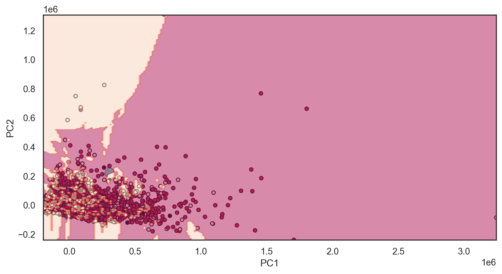
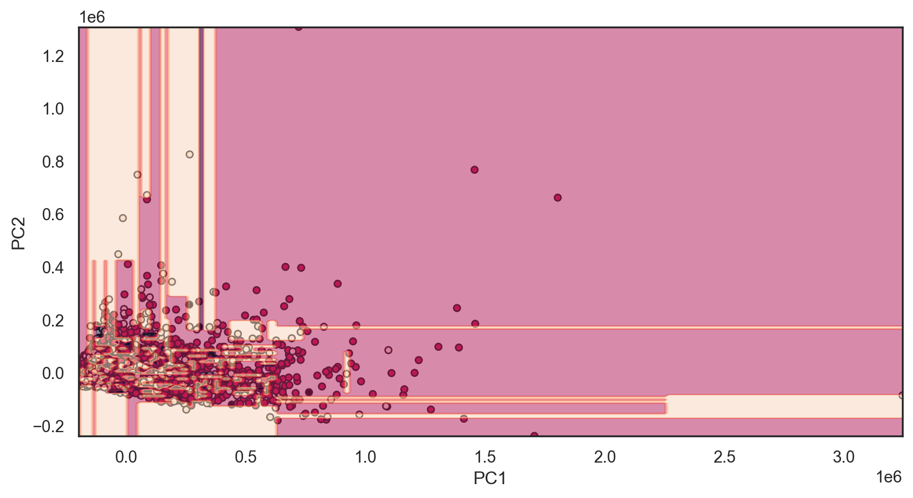
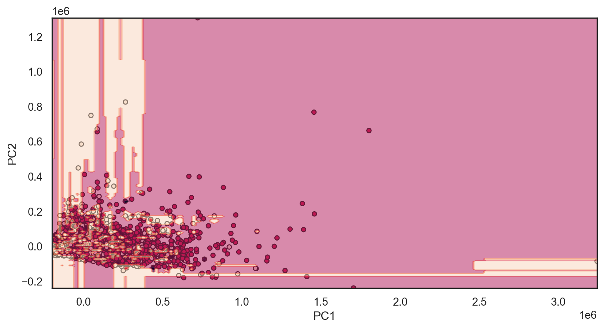
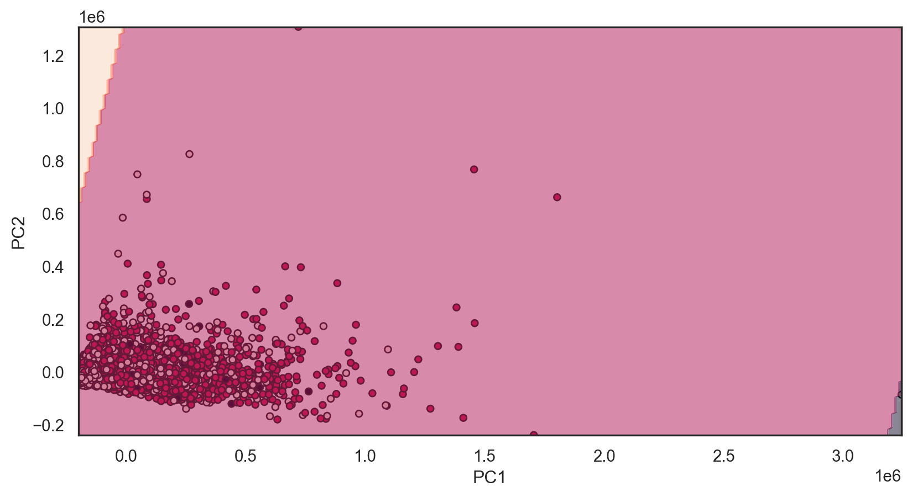
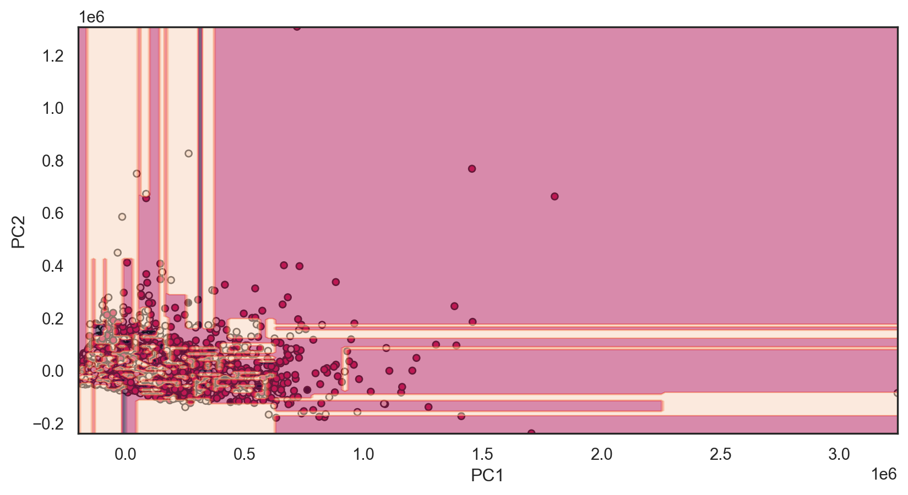

<!DOCTYPE html>
<html lang="en"><head>
<link href="../../..//images/logo.png" rel="icon" type="image/png">
<script src="https://cdnjs.cloudflare.com/ajax/libs/jquery/3.5.1/jquery.min.js" integrity="sha512-bLT0Qm9VnAYZDflyKcBaQ2gg0hSYNQrJ8RilYldYQ1FxQYoCLtUjuuRuZo+fjqhx/qtq/1itJ0C2ejDxltZVFg==" crossorigin="anonymous"></script><script src="../../../site_libs/clipboard/clipboard.min.js"></script>
<script src="../../../site_libs/quarto-html/tabby.min.js"></script>
<script src="../../../site_libs/quarto-html/popper.min.js"></script>
<script src="../../../site_libs/quarto-html/tippy.umd.min.js"></script>
<link href="../../../site_libs/quarto-html/tippy.css" rel="stylesheet">
<link href="../../../site_libs/quarto-html/light-border.css" rel="stylesheet">
<link href="../../../site_libs/quarto-html/quarto-syntax-highlighting-ea385d0e468b0dd5ea5bf0780b1290d9.css" rel="stylesheet" id="quarto-text-highlighting-styles"><meta charset="utf-8">
  <meta name="generator" content="quarto-1.7.33">

  <meta name="author" content="John Chen">
  <title>INFO 523 – Classification I</title>
  <meta name="apple-mobile-web-app-capable" content="yes">
  <meta name="apple-mobile-web-app-status-bar-style" content="black-translucent">
  <meta name="viewport" content="width=device-width, initial-scale=1.0, maximum-scale=1.0, user-scalable=no, minimal-ui">
  <link rel="stylesheet" href="../../../site_libs/revealjs/dist/reset.css">
  <link rel="stylesheet" href="../../../site_libs/revealjs/dist/reveal.css">
  <style>
    code{white-space: pre-wrap;}
    span.smallcaps{font-variant: small-caps;}
    div.columns{display: flex; gap: min(4vw, 1.5em);}
    div.column{flex: auto; overflow-x: auto;}
    div.hanging-indent{margin-left: 1.5em; text-indent: -1.5em;}
    ul.task-list{list-style: none;}
    ul.task-list li input[type="checkbox"] {
      width: 0.8em;
      margin: 0 0.8em 0.2em -1em; /* quarto-specific, see https://github.com/quarto-dev/quarto-cli/issues/4556 */ 
      vertical-align: middle;
    }
    /* CSS for syntax highlighting */
    html { -webkit-text-size-adjust: 100%; }
    pre > code.sourceCode { white-space: pre; position: relative; }
    pre > code.sourceCode > span { display: inline-block; line-height: 1.25; }
    pre > code.sourceCode > span:empty { height: 1.2em; }
    .sourceCode { overflow: visible; }
    code.sourceCode > span { color: inherit; text-decoration: inherit; }
    div.sourceCode { margin: 1em 0; }
    pre.sourceCode { margin: 0; }
    @media screen {
    div.sourceCode { overflow: auto; }
    }
    @media print {
    pre > code.sourceCode { white-space: pre-wrap; }
    pre > code.sourceCode > span { text-indent: -5em; padding-left: 5em; }
    }
    pre.numberSource code
      { counter-reset: source-line 0; }
    pre.numberSource code > span
      { position: relative; left: -4em; counter-increment: source-line; }
    pre.numberSource code > span > a:first-child::before
      { content: counter(source-line);
        position: relative; left: -1em; text-align: right; vertical-align: baseline;
        border: none; display: inline-block;
        -webkit-touch-callout: none; -webkit-user-select: none;
        -khtml-user-select: none; -moz-user-select: none;
        -ms-user-select: none; user-select: none;
        padding: 0 4px; width: 4em;
        color: #aaaaaa;
      }
    pre.numberSource { margin-left: 3em; border-left: 1px solid #aaaaaa;  padding-left: 4px; }
    div.sourceCode
      { color: #003b4f; background-color: #f1f3f5; }
    @media screen {
    pre > code.sourceCode > span > a:first-child::before { text-decoration: underline; }
    }
    code span { color: #003b4f; } /* Normal */
    code span.al { color: #ad0000; } /* Alert */
    code span.an { color: #5e5e5e; } /* Annotation */
    code span.at { color: #657422; } /* Attribute */
    code span.bn { color: #ad0000; } /* BaseN */
    code span.bu { } /* BuiltIn */
    code span.cf { color: #003b4f; font-weight: bold; } /* ControlFlow */
    code span.ch { color: #20794d; } /* Char */
    code span.cn { color: #8f5902; } /* Constant */
    code span.co { color: #5e5e5e; } /* Comment */
    code span.cv { color: #5e5e5e; font-style: italic; } /* CommentVar */
    code span.do { color: #5e5e5e; font-style: italic; } /* Documentation */
    code span.dt { color: #ad0000; } /* DataType */
    code span.dv { color: #ad0000; } /* DecVal */
    code span.er { color: #ad0000; } /* Error */
    code span.ex { } /* Extension */
    code span.fl { color: #ad0000; } /* Float */
    code span.fu { color: #4758ab; } /* Function */
    code span.im { color: #00769e; } /* Import */
    code span.in { color: #5e5e5e; } /* Information */
    code span.kw { color: #003b4f; font-weight: bold; } /* Keyword */
    code span.op { color: #5e5e5e; } /* Operator */
    code span.ot { color: #003b4f; } /* Other */
    code span.pp { color: #ad0000; } /* Preprocessor */
    code span.sc { color: #5e5e5e; } /* SpecialChar */
    code span.ss { color: #20794d; } /* SpecialString */
    code span.st { color: #20794d; } /* String */
    code span.va { color: #111111; } /* Variable */
    code span.vs { color: #20794d; } /* VerbatimString */
    code span.wa { color: #5e5e5e; font-style: italic; } /* Warning */
  </style>
  <link rel="stylesheet" href="../../../site_libs/revealjs/dist/theme/quarto-191024931916078fc4eae1dde1f53f1c.css">
  <link href="../../../site_libs/revealjs/plugin/quarto-line-highlight/line-highlight.css" rel="stylesheet">
  <link href="../../../site_libs/revealjs/plugin/reveal-menu/menu.css" rel="stylesheet">
  <link href="../../../site_libs/revealjs/plugin/reveal-menu/quarto-menu.css" rel="stylesheet">
  <link href="../../../site_libs/revealjs/plugin/reveal-chalkboard/font-awesome/css/all.css" rel="stylesheet">
  <link href="../../../site_libs/revealjs/plugin/reveal-chalkboard/style.css" rel="stylesheet">
  <link href="../../../site_libs/revealjs/plugin/quarto-support/footer.css" rel="stylesheet">
  <style type="text/css">
    .reveal div.sourceCode {
      margin: 0;
      overflow: auto;
    }
    .reveal div.hanging-indent {
      margin-left: 1em;
      text-indent: -1em;
    }
    .reveal .slide:not(.center) {
      height: 100%;
    }
    .reveal .slide.scrollable {
      overflow-y: auto;
    }
    .reveal .footnotes {
      height: 100%;
      overflow-y: auto;
    }
    .reveal .slide .absolute {
      position: absolute;
      display: block;
    }
    .reveal .footnotes ol {
      counter-reset: ol;
      list-style-type: none; 
      margin-left: 0;
    }
    .reveal .footnotes ol li:before {
      counter-increment: ol;
      content: counter(ol) ". "; 
    }
    .reveal .footnotes ol li > p:first-child {
      display: inline-block;
    }
    .reveal .slide ul,
    .reveal .slide ol {
      margin-bottom: 0.5em;
    }
    .reveal .slide ul li,
    .reveal .slide ol li {
      margin-top: 0.4em;
      margin-bottom: 0.2em;
    }
    .reveal .slide ul[role="tablist"] li {
      margin-bottom: 0;
    }
    .reveal .slide ul li > *:first-child,
    .reveal .slide ol li > *:first-child {
      margin-block-start: 0;
    }
    .reveal .slide ul li > *:last-child,
    .reveal .slide ol li > *:last-child {
      margin-block-end: 0;
    }
    .reveal .slide .columns:nth-child(3) {
      margin-block-start: 0.8em;
    }
    .reveal blockquote {
      box-shadow: none;
    }
    .reveal .tippy-content>* {
      margin-top: 0.2em;
      margin-bottom: 0.7em;
    }
    .reveal .tippy-content>*:last-child {
      margin-bottom: 0.2em;
    }
    .reveal .slide > img.stretch.quarto-figure-center,
    .reveal .slide > img.r-stretch.quarto-figure-center {
      display: block;
      margin-left: auto;
      margin-right: auto; 
    }
    .reveal .slide > img.stretch.quarto-figure-left,
    .reveal .slide > img.r-stretch.quarto-figure-left  {
      display: block;
      margin-left: 0;
      margin-right: auto; 
    }
    .reveal .slide > img.stretch.quarto-figure-right,
    .reveal .slide > img.r-stretch.quarto-figure-right  {
      display: block;
      margin-left: auto;
      margin-right: 0; 
    }
  </style>
  <script src="https://cdnjs.cloudflare.com/ajax/libs/require.js/2.3.6/require.min.js" integrity="sha512-c3Nl8+7g4LMSTdrm621y7kf9v3SDPnhxLNhcjFJbKECVnmZHTdo+IRO05sNLTH/D3vA6u1X32ehoLC7WFVdheg==" crossorigin="anonymous"></script>
  
  <script type="application/javascript">define('jquery', [],function() {return window.jQuery;})</script>
<meta property="og:title" content="Classification I – INFO 523">
<meta property="og:description" content="Lecture 5">
<meta property="og:site_name" content="INFO 523">
</head>
<body class="quarto-light">
  <div class="reveal">
    <div class="slides">

<section id="title-slide" data-background-image="../minedata-bg.png" data-background-size="600px, cover" data-slide-number="none" class="quarto-title-block center">
  <h1 class="title">Classification I</h1>
  <p class="subtitle">Lecture 5</p>

<div class="quarto-title-authors">
<div class="quarto-title-author">
<div class="quarto-title-author-name">
John Chen 
</div>
        <p class="quarto-title-affiliation">
            University of Arizona <br> INFO 523 - Fall 2025
          </p>
    </div>
</div>

</section>
<section>
<section id="warm-up" class="title-slide slide level1 center">
<h1>Warm up</h1>

</section>
<section id="announcements" class="slide level2">
<h2>Announcements</h2>
<ul>
<li><p>HW 02 is due today, 11:59pm</p></li>
<li><p>Spring Break is right around the corner!</p></li>
</ul>
</section>
<section id="setup" class="slide level2 smaller">
<h2>Setup</h2>
<div id="setup" class="cell" data-message="false" data-execution_count="1">
<div class="sourceCode cell-code" id="cb1"><pre class="sourceCode numberSource python number-lines code-with-copy"><code class="sourceCode python"><span id="cb1-1"><a></a><span class="co"># Import all required libraries</span></span>
<span id="cb1-2"><a></a><span class="im">import</span> pandas <span class="im">as</span> pd</span>
<span id="cb1-3"><a></a><span class="im">import</span> numpy <span class="im">as</span> np</span>
<span id="cb1-4"><a></a><span class="im">import</span> seaborn <span class="im">as</span> sns</span>
<span id="cb1-5"><a></a><span class="im">import</span> matplotlib.pyplot <span class="im">as</span> plt</span>
<span id="cb1-6"><a></a><span class="im">from</span> matplotlib.colors <span class="im">import</span> ListedColormap</span>
<span id="cb1-7"><a></a><span class="im">from</span> sklearn.model_selection <span class="im">import</span> train_test_split</span>
<span id="cb1-8"><a></a><span class="im">from</span> sklearn.preprocessing <span class="im">import</span> LabelEncoder, StandardScaler</span>
<span id="cb1-9"><a></a><span class="im">from</span> sklearn.decomposition <span class="im">import</span> PCA</span>
<span id="cb1-10"><a></a><span class="im">from</span> sklearn.linear_model <span class="im">import</span> LogisticRegression</span>
<span id="cb1-11"><a></a><span class="im">from</span> sklearn.metrics <span class="im">import</span> accuracy_score, confusion_matrix</span>
<span id="cb1-12"><a></a><span class="im">from</span> sklearn.discriminant_analysis <span class="im">import</span> LinearDiscriminantAnalysis</span>
<span id="cb1-13"><a></a><span class="im">from</span> sklearn.neighbors <span class="im">import</span> KNeighborsClassifier</span>
<span id="cb1-14"><a></a><span class="im">from</span> sklearn.naive_bayes <span class="im">import</span> GaussianNB</span>
<span id="cb1-15"><a></a><span class="im">from</span> sklearn.tree <span class="im">import</span> DecisionTreeClassifier, plot_tree</span>
<span id="cb1-16"><a></a><span class="im">from</span> sklearn.ensemble <span class="im">import</span> RandomForestClassifier</span>
<span id="cb1-17"><a></a><span class="im">import</span> mord <span class="im">as</span> m</span>
<span id="cb1-18"><a></a><span class="im">import</span> xgboost <span class="im">as</span> xgb</span>
<span id="cb1-19"><a></a><span class="im">import</span> tensorflow <span class="im">as</span> tf</span>
<span id="cb1-20"><a></a><span class="im">import</span> logging</span>
<span id="cb1-21"><a></a><span class="im">from</span> tensorflow.keras.models <span class="im">import</span> Sequential</span>
<span id="cb1-22"><a></a><span class="im">from</span> tensorflow.keras.layers <span class="im">import</span> Dense</span>
<span id="cb1-23"><a></a><span class="im">import</span> os</span>
<span id="cb1-24"><a></a></span>
<span id="cb1-25"><a></a><span class="co"># Increase font size of all Seaborn plot elements</span></span>
<span id="cb1-26"><a></a>sns.<span class="bu">set</span>(font_scale <span class="op">=</span> <span class="fl">1.25</span>)</span>
<span id="cb1-27"><a></a></span>
<span id="cb1-28"><a></a><span class="co"># Set Seaborn theme</span></span>
<span id="cb1-29"><a></a>sns.set_theme(style <span class="op">=</span> <span class="st">"white"</span>)</span>
<span id="cb1-30"><a></a></span>
<span id="cb1-31"><a></a><span class="co"># Suppress tensorflow messages and progress bars </span></span>
<span id="cb1-32"><a></a>os.environ[<span class="st">'TF_CPP_MIN_LOG_LEVEL'</span>] <span class="op">=</span> <span class="st">'3'</span>  </span></code><button title="Copy to Clipboard" class="code-copy-button"><i class="bi"></i></button></pre></div>
</div>
</section></section>
<section>
<section id="classification" class="title-slide slide level1 center">
<h1>Classification</h1>

</section>
<section id="supervised-machine-learning" class="slide level2 smaller">
<h2>Supervised machine learning</h2>
<blockquote>
<p><strong>Supervised learning</strong> is a paradigm in <a href="https://en.wikipedia.org/wiki/Machine_learning" title="Machine learning">machine learning</a> where input objects (for example, a vector of predictor variables) and a desired output value (also known as human-labeled <em>supervisory signal</em>) train a model. The training data is processed, building a function that maps new data on expected output values.</p>
</blockquote>
<div class="fragment">
<h4 id="broadly-categorized-into-two-categories">Broadly categorized into two categories</h4>
</div>
<div class="fragment">
<p><strong>Classification</strong></p>
<ul>
<li>This type of supervised learning is used when the output variable is a category, such as “spam” or “not spam”, “malignant” or “benign”, etc. The goal is to predict discrete labels.</li>
</ul>
</div>
<div class="fragment">
<p><strong>Regression</strong></p>
<ul>
<li>In regression, the output variable is a real value, such as “salary”, “temperature”, or “height”. Regression is used for predicting continuous outcomes.</li>
</ul>
</div>
</section>
<section id="classification-1" class="slide level2 smaller">
<h2>Classification</h2>
<h4 id="examples-of-tasks">Examples of tasks</h4>
<div class="columns">
<div class="column" style="width:50%;">
<div class="fragment" data-fragment-index="1">
<ul>
<li>Classifying tumors as benign or malignant</li>
</ul>
<p><br></p>
<p><br></p>
<p><br></p>
</div>
<div class="fragment" data-fragment-index="2">
<ul>
<li>Classifying credit card transactions as legitimate or fraudulent</li>
</ul>
<p><br></p>
<p><br></p>
<p><br></p>
</div>
<div class="fragment" data-fragment-index="3">
<ul>
<li>Categorizing news stories as finance, weather, entertainment, sports, etc.</li>
</ul>
</div>
</div><div class="column" style="width:50%;">
<div class="fragment" data-fragment-index="1">
<div class="quarto-figure quarto-figure-center">
<figure>
<p></p>
</figure>
</div>
</div>
<div class="fragment" data-fragment-index="2">
<div class="quarto-figure quarto-figure-center">
<figure>
<p></p>
</figure>
</div>
</div>
<div class="fragment" data-fragment-index="3">
<div class="quarto-figure quarto-figure-center">
<figure>
<p></p>
</figure>
</div>
</div>
</div></div>
</section>
<section id="question" class="slide level2">
<h2>Question</h2>
<p><strong>Can we <u>predict high-risk credit individuals</u> by their <u>financial traits</u>?</strong></p>
<div class="quarto-figure quarto-figure-center">
<figure>
<p></p>
</figure>
</div>

<aside><div>
<p>Source: <a href="https://www.lendingclub.com/info/statistics.action">Lending Club</a></p>
</div></aside></section>
<section id="explore-our-data" class="slide level2 smaller">
<h2>Explore our data</h2>
<div id="223f0717" class="cell" data-execution_count="2">
<details class="code-fold">
<summary>Code</summary>
<div class="sourceCode cell-code" id="cb2"><pre class="sourceCode numberSource python number-lines code-with-copy"><code class="sourceCode python"><span id="cb2-1"><a></a>loans <span class="op">=</span> pd.read_csv(<span class="st">"data/loans.csv"</span>)</span>
<span id="cb2-2"><a></a></span>
<span id="cb2-3"><a></a><span class="co"># Pandas options to print everything</span></span>
<span id="cb2-4"><a></a>pd.set_option(<span class="st">'display.max_rows'</span>, <span class="va">None</span>)</span>
<span id="cb2-5"><a></a>pd.set_option(<span class="st">'display.max_columns'</span>, <span class="va">None</span>)</span></code><button title="Copy to Clipboard" class="code-copy-button"><i class="bi"></i></button></pre></div>
</details>
</div>
<div class="panel-tabset">
<ul id="tabset-1" class="panel-tabset-tabby"><li><a data-tabby-default="" href="#tabset-1-1">Head</a></li><li><a href="#tabset-1-2">Info</a></li><li><a href="#tabset-1-3">Describe</a></li><li><a href="#tabset-1-4">Categories</a></li><li><a href="#tabset-1-5">Levels</a></li><li><a href="#tabset-1-6">Missing values</a></li><li><a href="#tabset-1-7">Outliers</a></li></ul>
<div class="tab-content">
<div id="tabset-1-1">
<div id="d3a5bb4a" class="cell" data-execution_count="3">
<div class="sourceCode cell-code" id="cb3"><pre class="sourceCode numberSource python number-lines code-with-copy"><code class="sourceCode python"><span id="cb3-1"><a></a>loans.head()</span></code><button title="Copy to Clipboard" class="code-copy-button"><i class="bi"></i></button></pre></div>
<div class="cell-output cell-output-display" data-execution_count="3">
<div>
<style scoped="">
    .dataframe tbody tr th:only-of-type {
        vertical-align: middle;
    }

    .dataframe tbody tr th {
        vertical-align: top;
    }

    .dataframe thead th {
        text-align: right;
    }
</style>

<table class="dataframe caption-top" data-quarto-postprocess="true" data-border="1">
<thead>
<tr class="header" style="text-align: right;">
<th data-quarto-table-cell-role="th"></th>
<th data-quarto-table-cell-role="th">emp_title</th>
<th data-quarto-table-cell-role="th">emp_length</th>
<th data-quarto-table-cell-role="th">state</th>
<th data-quarto-table-cell-role="th">homeownership</th>
<th data-quarto-table-cell-role="th">annual_income</th>
<th data-quarto-table-cell-role="th">verified_income</th>
<th data-quarto-table-cell-role="th">debt_to_income</th>
<th data-quarto-table-cell-role="th">annual_income_joint</th>
<th data-quarto-table-cell-role="th">verification_income_joint</th>
<th data-quarto-table-cell-role="th">debt_to_income_joint</th>
<th data-quarto-table-cell-role="th">delinq_2y</th>
<th data-quarto-table-cell-role="th">months_since_last_delinq</th>
<th data-quarto-table-cell-role="th">earliest_credit_line</th>
<th data-quarto-table-cell-role="th">inquiries_last_12m</th>
<th data-quarto-table-cell-role="th">total_credit_lines</th>
<th data-quarto-table-cell-role="th">open_credit_lines</th>
<th data-quarto-table-cell-role="th">total_credit_limit</th>
<th data-quarto-table-cell-role="th">total_credit_utilized</th>
<th data-quarto-table-cell-role="th">num_collections_last_12m</th>
<th data-quarto-table-cell-role="th">num_historical_failed_to_pay</th>
<th data-quarto-table-cell-role="th">months_since_90d_late</th>
<th data-quarto-table-cell-role="th">current_accounts_delinq</th>
<th data-quarto-table-cell-role="th">total_collection_amount_ever</th>
<th data-quarto-table-cell-role="th">current_installment_accounts</th>
<th data-quarto-table-cell-role="th">accounts_opened_24m</th>
<th data-quarto-table-cell-role="th">months_since_last_credit_inquiry</th>
<th data-quarto-table-cell-role="th">num_satisfactory_accounts</th>
<th data-quarto-table-cell-role="th">num_accounts_120d_past_due</th>
<th data-quarto-table-cell-role="th">num_accounts_30d_past_due</th>
<th data-quarto-table-cell-role="th">num_active_debit_accounts</th>
<th data-quarto-table-cell-role="th">total_debit_limit</th>
<th data-quarto-table-cell-role="th">num_total_cc_accounts</th>
<th data-quarto-table-cell-role="th">num_open_cc_accounts</th>
<th data-quarto-table-cell-role="th">num_cc_carrying_balance</th>
<th data-quarto-table-cell-role="th">num_mort_accounts</th>
<th data-quarto-table-cell-role="th">account_never_delinq_percent</th>
<th data-quarto-table-cell-role="th">tax_liens</th>
<th data-quarto-table-cell-role="th">public_record_bankrupt</th>
<th data-quarto-table-cell-role="th">loan_purpose</th>
<th data-quarto-table-cell-role="th">application_type</th>
<th data-quarto-table-cell-role="th">loan_amount</th>
<th data-quarto-table-cell-role="th">term</th>
<th data-quarto-table-cell-role="th">interest_rate</th>
<th data-quarto-table-cell-role="th">installment</th>
<th data-quarto-table-cell-role="th">grade</th>
<th data-quarto-table-cell-role="th">sub_grade</th>
<th data-quarto-table-cell-role="th">issue_month</th>
<th data-quarto-table-cell-role="th">loan_status</th>
<th data-quarto-table-cell-role="th">initial_listing_status</th>
<th data-quarto-table-cell-role="th">disbursement_method</th>
<th data-quarto-table-cell-role="th">balance</th>
<th data-quarto-table-cell-role="th">paid_total</th>
<th data-quarto-table-cell-role="th">paid_principal</th>
<th data-quarto-table-cell-role="th">paid_interest</th>
<th data-quarto-table-cell-role="th">paid_late_fees</th>
</tr>
</thead>
<tbody>
<tr class="odd">
<td data-quarto-table-cell-role="th">0</td>
<td>global config engineer</td>
<td>3.0</td>
<td>NJ</td>
<td>MORTGAGE</td>
<td>90000.0</td>
<td>Verified</td>
<td>18.01</td>
<td>NaN</td>
<td>NaN</td>
<td>NaN</td>
<td>0</td>
<td>38.0</td>
<td>2001</td>
<td>6</td>
<td>28</td>
<td>10</td>
<td>70795</td>
<td>38767</td>
<td>0</td>
<td>0</td>
<td>38.0</td>
<td>0</td>
<td>1250</td>
<td>2</td>
<td>5</td>
<td>5.0</td>
<td>10</td>
<td>0.0</td>
<td>0</td>
<td>2</td>
<td>11100</td>
<td>14</td>
<td>8</td>
<td>6</td>
<td>1</td>
<td>92.9</td>
<td>0</td>
<td>0</td>
<td>moving</td>
<td>individual</td>
<td>28000</td>
<td>60</td>
<td>14.07</td>
<td>652.53</td>
<td>C</td>
<td>C3</td>
<td>Mar-2018</td>
<td>Current</td>
<td>whole</td>
<td>Cash</td>
<td>27015.86</td>
<td>1999.33</td>
<td>984.14</td>
<td>1015.19</td>
<td>0.0</td>
</tr>
<tr class="even">
<td data-quarto-table-cell-role="th">1</td>
<td>warehouse office clerk</td>
<td>10.0</td>
<td>HI</td>
<td>RENT</td>
<td>40000.0</td>
<td>Not Verified</td>
<td>5.04</td>
<td>NaN</td>
<td>NaN</td>
<td>NaN</td>
<td>0</td>
<td>NaN</td>
<td>1996</td>
<td>1</td>
<td>30</td>
<td>14</td>
<td>28800</td>
<td>4321</td>
<td>0</td>
<td>1</td>
<td>NaN</td>
<td>0</td>
<td>0</td>
<td>0</td>
<td>11</td>
<td>8.0</td>
<td>14</td>
<td>0.0</td>
<td>0</td>
<td>3</td>
<td>16500</td>
<td>24</td>
<td>14</td>
<td>4</td>
<td>0</td>
<td>100.0</td>
<td>0</td>
<td>1</td>
<td>debt_consolidation</td>
<td>individual</td>
<td>5000</td>
<td>36</td>
<td>12.61</td>
<td>167.54</td>
<td>C</td>
<td>C1</td>
<td>Feb-2018</td>
<td>Current</td>
<td>whole</td>
<td>Cash</td>
<td>4651.37</td>
<td>499.12</td>
<td>348.63</td>
<td>150.49</td>
<td>0.0</td>
</tr>
<tr class="odd">
<td data-quarto-table-cell-role="th">2</td>
<td>assembly</td>
<td>3.0</td>
<td>WI</td>
<td>RENT</td>
<td>40000.0</td>
<td>Source Verified</td>
<td>21.15</td>
<td>NaN</td>
<td>NaN</td>
<td>NaN</td>
<td>0</td>
<td>28.0</td>
<td>2006</td>
<td>4</td>
<td>31</td>
<td>10</td>
<td>24193</td>
<td>16000</td>
<td>0</td>
<td>0</td>
<td>28.0</td>
<td>0</td>
<td>432</td>
<td>1</td>
<td>13</td>
<td>7.0</td>
<td>10</td>
<td>0.0</td>
<td>0</td>
<td>3</td>
<td>4300</td>
<td>14</td>
<td>8</td>
<td>6</td>
<td>0</td>
<td>93.5</td>
<td>0</td>
<td>0</td>
<td>other</td>
<td>individual</td>
<td>2000</td>
<td>36</td>
<td>17.09</td>
<td>71.40</td>
<td>D</td>
<td>D1</td>
<td>Feb-2018</td>
<td>Current</td>
<td>fractional</td>
<td>Cash</td>
<td>1824.63</td>
<td>281.80</td>
<td>175.37</td>
<td>106.43</td>
<td>0.0</td>
</tr>
<tr class="even">
<td data-quarto-table-cell-role="th">3</td>
<td>customer service</td>
<td>1.0</td>
<td>PA</td>
<td>RENT</td>
<td>30000.0</td>
<td>Not Verified</td>
<td>10.16</td>
<td>NaN</td>
<td>NaN</td>
<td>NaN</td>
<td>0</td>
<td>NaN</td>
<td>2007</td>
<td>0</td>
<td>4</td>
<td>4</td>
<td>25400</td>
<td>4997</td>
<td>0</td>
<td>1</td>
<td>NaN</td>
<td>0</td>
<td>0</td>
<td>1</td>
<td>1</td>
<td>15.0</td>
<td>4</td>
<td>0.0</td>
<td>0</td>
<td>2</td>
<td>19400</td>
<td>3</td>
<td>3</td>
<td>2</td>
<td>0</td>
<td>100.0</td>
<td>1</td>
<td>0</td>
<td>debt_consolidation</td>
<td>individual</td>
<td>21600</td>
<td>36</td>
<td>6.72</td>
<td>664.19</td>
<td>A</td>
<td>A3</td>
<td>Jan-2018</td>
<td>Current</td>
<td>whole</td>
<td>Cash</td>
<td>18853.26</td>
<td>3312.89</td>
<td>2746.74</td>
<td>566.15</td>
<td>0.0</td>
</tr>
<tr class="odd">
<td data-quarto-table-cell-role="th">4</td>
<td>security supervisor</td>
<td>10.0</td>
<td>CA</td>
<td>RENT</td>
<td>35000.0</td>
<td>Verified</td>
<td>57.96</td>
<td>57000.0</td>
<td>Verified</td>
<td>37.66</td>
<td>0</td>
<td>NaN</td>
<td>2008</td>
<td>7</td>
<td>22</td>
<td>16</td>
<td>69839</td>
<td>52722</td>
<td>0</td>
<td>0</td>
<td>NaN</td>
<td>0</td>
<td>0</td>
<td>1</td>
<td>6</td>
<td>4.0</td>
<td>16</td>
<td>0.0</td>
<td>0</td>
<td>10</td>
<td>32700</td>
<td>20</td>
<td>15</td>
<td>13</td>
<td>0</td>
<td>100.0</td>
<td>0</td>
<td>0</td>
<td>credit_card</td>
<td>joint</td>
<td>23000</td>
<td>36</td>
<td>14.07</td>
<td>786.87</td>
<td>C</td>
<td>C3</td>
<td>Mar-2018</td>
<td>Current</td>
<td>whole</td>
<td>Cash</td>
<td>21430.15</td>
<td>2324.65</td>
<td>1569.85</td>
<td>754.80</td>
<td>0.0</td>
</tr>
</tbody>
</table>

</div>
</div>
</div>
</div>
<div id="tabset-1-2">
<div id="1483613d" class="cell" data-execution_count="4">
<div class="sourceCode cell-code" id="cb4"><pre class="sourceCode numberSource python number-lines code-with-copy"><code class="sourceCode python"><span id="cb4-1"><a></a>loans.info()</span></code><button title="Copy to Clipboard" class="code-copy-button"><i class="bi"></i></button></pre></div>
<div class="cell-output cell-output-stdout">
<pre><code>&lt;class 'pandas.core.frame.DataFrame'&gt;
RangeIndex: 10000 entries, 0 to 9999
Data columns (total 55 columns):
 #   Column                            Non-Null Count  Dtype  
---  ------                            --------------  -----  
 0   emp_title                         9167 non-null   object 
 1   emp_length                        9183 non-null   float64
 2   state                             10000 non-null  object 
 3   homeownership                     10000 non-null  object 
 4   annual_income                     10000 non-null  float64
 5   verified_income                   10000 non-null  object 
 6   debt_to_income                    9976 non-null   float64
 7   annual_income_joint               1495 non-null   float64
 8   verification_income_joint         1455 non-null   object 
 9   debt_to_income_joint              1495 non-null   float64
 10  delinq_2y                         10000 non-null  int64  
 11  months_since_last_delinq          4342 non-null   float64
 12  earliest_credit_line              10000 non-null  int64  
 13  inquiries_last_12m                10000 non-null  int64  
 14  total_credit_lines                10000 non-null  int64  
 15  open_credit_lines                 10000 non-null  int64  
 16  total_credit_limit                10000 non-null  int64  
 17  total_credit_utilized             10000 non-null  int64  
 18  num_collections_last_12m          10000 non-null  int64  
 19  num_historical_failed_to_pay      10000 non-null  int64  
 20  months_since_90d_late             2285 non-null   float64
 21  current_accounts_delinq           10000 non-null  int64  
 22  total_collection_amount_ever      10000 non-null  int64  
 23  current_installment_accounts      10000 non-null  int64  
 24  accounts_opened_24m               10000 non-null  int64  
 25  months_since_last_credit_inquiry  8729 non-null   float64
 26  num_satisfactory_accounts         10000 non-null  int64  
 27  num_accounts_120d_past_due        9682 non-null   float64
 28  num_accounts_30d_past_due         10000 non-null  int64  
 29  num_active_debit_accounts         10000 non-null  int64  
 30  total_debit_limit                 10000 non-null  int64  
 31  num_total_cc_accounts             10000 non-null  int64  
 32  num_open_cc_accounts              10000 non-null  int64  
 33  num_cc_carrying_balance           10000 non-null  int64  
 34  num_mort_accounts                 10000 non-null  int64  
 35  account_never_delinq_percent      10000 non-null  float64
 36  tax_liens                         10000 non-null  int64  
 37  public_record_bankrupt            10000 non-null  int64  
 38  loan_purpose                      10000 non-null  object 
 39  application_type                  10000 non-null  object 
 40  loan_amount                       10000 non-null  int64  
 41  term                              10000 non-null  int64  
 42  interest_rate                     10000 non-null  float64
 43  installment                       10000 non-null  float64
 44  grade                             10000 non-null  object 
 45  sub_grade                         10000 non-null  object 
 46  issue_month                       10000 non-null  object 
 47  loan_status                       10000 non-null  object 
 48  initial_listing_status            10000 non-null  object 
 49  disbursement_method               10000 non-null  object 
 50  balance                           10000 non-null  float64
 51  paid_total                        10000 non-null  float64
 52  paid_principal                    10000 non-null  float64
 53  paid_interest                     10000 non-null  float64
 54  paid_late_fees                    10000 non-null  float64
dtypes: float64(17), int64(25), object(13)
memory usage: 4.2+ MB</code></pre>
</div>
</div>
</div>
<div id="tabset-1-3">
<div id="3382a285" class="cell" data-execution_count="5">
<div class="sourceCode cell-code" id="cb6"><pre class="sourceCode numberSource python number-lines code-with-copy"><code class="sourceCode python"><span id="cb6-1"><a></a>loans.describe().<span class="bu">round</span>(<span class="dv">3</span>)</span></code><button title="Copy to Clipboard" class="code-copy-button"><i class="bi"></i></button></pre></div>
<div class="cell-output cell-output-display" data-execution_count="5">
<div>
<style scoped="">
    .dataframe tbody tr th:only-of-type {
        vertical-align: middle;
    }

    .dataframe tbody tr th {
        vertical-align: top;
    }

    .dataframe thead th {
        text-align: right;
    }
</style>

<table class="dataframe caption-top" data-quarto-postprocess="true" data-border="1">
<thead>
<tr class="header" style="text-align: right;">
<th data-quarto-table-cell-role="th"></th>
<th data-quarto-table-cell-role="th">emp_length</th>
<th data-quarto-table-cell-role="th">annual_income</th>
<th data-quarto-table-cell-role="th">debt_to_income</th>
<th data-quarto-table-cell-role="th">annual_income_joint</th>
<th data-quarto-table-cell-role="th">debt_to_income_joint</th>
<th data-quarto-table-cell-role="th">delinq_2y</th>
<th data-quarto-table-cell-role="th">months_since_last_delinq</th>
<th data-quarto-table-cell-role="th">earliest_credit_line</th>
<th data-quarto-table-cell-role="th">inquiries_last_12m</th>
<th data-quarto-table-cell-role="th">total_credit_lines</th>
<th data-quarto-table-cell-role="th">open_credit_lines</th>
<th data-quarto-table-cell-role="th">total_credit_limit</th>
<th data-quarto-table-cell-role="th">total_credit_utilized</th>
<th data-quarto-table-cell-role="th">num_collections_last_12m</th>
<th data-quarto-table-cell-role="th">num_historical_failed_to_pay</th>
<th data-quarto-table-cell-role="th">months_since_90d_late</th>
<th data-quarto-table-cell-role="th">current_accounts_delinq</th>
<th data-quarto-table-cell-role="th">total_collection_amount_ever</th>
<th data-quarto-table-cell-role="th">current_installment_accounts</th>
<th data-quarto-table-cell-role="th">accounts_opened_24m</th>
<th data-quarto-table-cell-role="th">months_since_last_credit_inquiry</th>
<th data-quarto-table-cell-role="th">num_satisfactory_accounts</th>
<th data-quarto-table-cell-role="th">num_accounts_120d_past_due</th>
<th data-quarto-table-cell-role="th">num_accounts_30d_past_due</th>
<th data-quarto-table-cell-role="th">num_active_debit_accounts</th>
<th data-quarto-table-cell-role="th">total_debit_limit</th>
<th data-quarto-table-cell-role="th">num_total_cc_accounts</th>
<th data-quarto-table-cell-role="th">num_open_cc_accounts</th>
<th data-quarto-table-cell-role="th">num_cc_carrying_balance</th>
<th data-quarto-table-cell-role="th">num_mort_accounts</th>
<th data-quarto-table-cell-role="th">account_never_delinq_percent</th>
<th data-quarto-table-cell-role="th">tax_liens</th>
<th data-quarto-table-cell-role="th">public_record_bankrupt</th>
<th data-quarto-table-cell-role="th">loan_amount</th>
<th data-quarto-table-cell-role="th">term</th>
<th data-quarto-table-cell-role="th">interest_rate</th>
<th data-quarto-table-cell-role="th">installment</th>
<th data-quarto-table-cell-role="th">balance</th>
<th data-quarto-table-cell-role="th">paid_total</th>
<th data-quarto-table-cell-role="th">paid_principal</th>
<th data-quarto-table-cell-role="th">paid_interest</th>
<th data-quarto-table-cell-role="th">paid_late_fees</th>
</tr>
</thead>
<tbody>
<tr class="odd">
<td data-quarto-table-cell-role="th">count</td>
<td>9183.000</td>
<td>10000.000</td>
<td>9976.000</td>
<td>1495.000</td>
<td>1495.000</td>
<td>10000.000</td>
<td>4342.000</td>
<td>10000.000</td>
<td>10000.000</td>
<td>10000.000</td>
<td>10000.000</td>
<td>10000.000</td>
<td>10000.000</td>
<td>10000.000</td>
<td>10000.000</td>
<td>2285.000</td>
<td>10000.00</td>
<td>10000.000</td>
<td>10000.000</td>
<td>10000.000</td>
<td>8729.000</td>
<td>10000.00</td>
<td>9682.0</td>
<td>10000.00</td>
<td>10000.000</td>
<td>10000.000</td>
<td>10000.000</td>
<td>10000.000</td>
<td>10000.000</td>
<td>10000.000</td>
<td>10000.000</td>
<td>10000.000</td>
<td>10000.000</td>
<td>10000.000</td>
<td>10000.000</td>
<td>10000.000</td>
<td>10000.000</td>
<td>10000.000</td>
<td>10000.000</td>
<td>10000.000</td>
<td>10000.000</td>
<td>10000.000</td>
</tr>
<tr class="even">
<td data-quarto-table-cell-role="th">mean</td>
<td>5.930</td>
<td>79222.148</td>
<td>19.308</td>
<td>127914.571</td>
<td>19.979</td>
<td>0.216</td>
<td>36.761</td>
<td>2001.290</td>
<td>1.958</td>
<td>22.680</td>
<td>11.404</td>
<td>183606.230</td>
<td>51049.063</td>
<td>0.014</td>
<td>0.167</td>
<td>46.112</td>
<td>0.00</td>
<td>184.334</td>
<td>2.664</td>
<td>4.376</td>
<td>7.341</td>
<td>11.38</td>
<td>0.0</td>
<td>0.00</td>
<td>3.595</td>
<td>27357.410</td>
<td>13.030</td>
<td>8.095</td>
<td>5.230</td>
<td>1.383</td>
<td>94.649</td>
<td>0.043</td>
<td>0.124</td>
<td>16361.922</td>
<td>43.272</td>
<td>12.428</td>
<td>476.205</td>
<td>14458.917</td>
<td>2494.235</td>
<td>1894.448</td>
<td>599.667</td>
<td>0.120</td>
</tr>
<tr class="odd">
<td data-quarto-table-cell-role="th">std</td>
<td>3.704</td>
<td>64734.290</td>
<td>15.005</td>
<td>70168.375</td>
<td>8.055</td>
<td>0.684</td>
<td>21.635</td>
<td>7.796</td>
<td>2.380</td>
<td>11.885</td>
<td>5.868</td>
<td>187632.708</td>
<td>53636.731</td>
<td>0.127</td>
<td>0.688</td>
<td>21.748</td>
<td>0.01</td>
<td>2206.390</td>
<td>2.935</td>
<td>3.159</td>
<td>5.982</td>
<td>5.86</td>
<td>0.0</td>
<td>0.01</td>
<td>2.435</td>
<td>26570.164</td>
<td>7.875</td>
<td>4.907</td>
<td>3.328</td>
<td>1.717</td>
<td>9.155</td>
<td>0.594</td>
<td>0.337</td>
<td>10301.957</td>
<td>11.030</td>
<td>5.001</td>
<td>294.852</td>
<td>9964.562</td>
<td>3958.230</td>
<td>3884.407</td>
<td>517.328</td>
<td>1.813</td>
</tr>
<tr class="even">
<td data-quarto-table-cell-role="th">min</td>
<td>0.000</td>
<td>0.000</td>
<td>0.000</td>
<td>19200.000</td>
<td>0.320</td>
<td>0.000</td>
<td>1.000</td>
<td>1963.000</td>
<td>0.000</td>
<td>2.000</td>
<td>0.000</td>
<td>0.000</td>
<td>0.000</td>
<td>0.000</td>
<td>0.000</td>
<td>2.000</td>
<td>0.00</td>
<td>0.000</td>
<td>0.000</td>
<td>0.000</td>
<td>0.000</td>
<td>0.00</td>
<td>0.0</td>
<td>0.00</td>
<td>0.000</td>
<td>0.000</td>
<td>2.000</td>
<td>0.000</td>
<td>0.000</td>
<td>0.000</td>
<td>14.300</td>
<td>0.000</td>
<td>0.000</td>
<td>1000.000</td>
<td>36.000</td>
<td>5.310</td>
<td>30.750</td>
<td>0.000</td>
<td>0.000</td>
<td>0.000</td>
<td>0.000</td>
<td>0.000</td>
</tr>
<tr class="odd">
<td data-quarto-table-cell-role="th">25%</td>
<td>2.000</td>
<td>45000.000</td>
<td>11.058</td>
<td>86833.500</td>
<td>14.160</td>
<td>0.000</td>
<td>19.000</td>
<td>1997.000</td>
<td>0.000</td>
<td>14.000</td>
<td>7.000</td>
<td>51593.750</td>
<td>19185.500</td>
<td>0.000</td>
<td>0.000</td>
<td>29.000</td>
<td>0.00</td>
<td>0.000</td>
<td>1.000</td>
<td>2.000</td>
<td>2.000</td>
<td>7.00</td>
<td>0.0</td>
<td>0.00</td>
<td>2.000</td>
<td>10000.000</td>
<td>7.000</td>
<td>5.000</td>
<td>3.000</td>
<td>0.000</td>
<td>92.600</td>
<td>0.000</td>
<td>0.000</td>
<td>8000.000</td>
<td>36.000</td>
<td>9.430</td>
<td>256.040</td>
<td>6679.065</td>
<td>928.700</td>
<td>587.100</td>
<td>221.758</td>
<td>0.000</td>
</tr>
<tr class="even">
<td data-quarto-table-cell-role="th">50%</td>
<td>6.000</td>
<td>65000.000</td>
<td>17.570</td>
<td>113000.000</td>
<td>19.720</td>
<td>0.000</td>
<td>34.000</td>
<td>2003.000</td>
<td>1.000</td>
<td>21.000</td>
<td>10.000</td>
<td>114667.000</td>
<td>36927.000</td>
<td>0.000</td>
<td>0.000</td>
<td>47.000</td>
<td>0.00</td>
<td>0.000</td>
<td>2.000</td>
<td>4.000</td>
<td>6.000</td>
<td>10.00</td>
<td>0.0</td>
<td>0.00</td>
<td>3.000</td>
<td>19500.000</td>
<td>11.000</td>
<td>7.000</td>
<td>5.000</td>
<td>1.000</td>
<td>100.000</td>
<td>0.000</td>
<td>0.000</td>
<td>14500.000</td>
<td>36.000</td>
<td>11.980</td>
<td>398.420</td>
<td>12379.495</td>
<td>1563.300</td>
<td>984.990</td>
<td>446.140</td>
<td>0.000</td>
</tr>
<tr class="odd">
<td data-quarto-table-cell-role="th">75%</td>
<td>10.000</td>
<td>95000.000</td>
<td>25.002</td>
<td>151545.500</td>
<td>25.500</td>
<td>0.000</td>
<td>53.000</td>
<td>2006.000</td>
<td>3.000</td>
<td>29.000</td>
<td>14.000</td>
<td>267550.000</td>
<td>65421.000</td>
<td>0.000</td>
<td>0.000</td>
<td>63.000</td>
<td>0.00</td>
<td>0.000</td>
<td>3.000</td>
<td>6.000</td>
<td>11.000</td>
<td>14.00</td>
<td>0.0</td>
<td>0.00</td>
<td>5.000</td>
<td>36100.000</td>
<td>17.000</td>
<td>10.000</td>
<td>7.000</td>
<td>2.000</td>
<td>100.000</td>
<td>0.000</td>
<td>0.000</td>
<td>24000.000</td>
<td>60.000</td>
<td>15.050</td>
<td>644.690</td>
<td>20690.182</td>
<td>2616.005</td>
<td>1694.555</td>
<td>825.420</td>
<td>0.000</td>
</tr>
<tr class="even">
<td data-quarto-table-cell-role="th">max</td>
<td>10.000</td>
<td>2300000.000</td>
<td>469.090</td>
<td>1100000.000</td>
<td>39.980</td>
<td>13.000</td>
<td>118.000</td>
<td>2015.000</td>
<td>29.000</td>
<td>87.000</td>
<td>51.000</td>
<td>3386034.000</td>
<td>942456.000</td>
<td>3.000</td>
<td>52.000</td>
<td>128.000</td>
<td>1.00</td>
<td>199308.000</td>
<td>35.000</td>
<td>29.000</td>
<td>24.000</td>
<td>51.00</td>
<td>0.0</td>
<td>1.00</td>
<td>32.000</td>
<td>386700.000</td>
<td>66.000</td>
<td>46.000</td>
<td>43.000</td>
<td>14.000</td>
<td>100.000</td>
<td>52.000</td>
<td>3.000</td>
<td>40000.000</td>
<td>60.000</td>
<td>30.940</td>
<td>1566.590</td>
<td>40000.000</td>
<td>41630.444</td>
<td>40000.000</td>
<td>4216.440</td>
<td>52.980</td>
</tr>
</tbody>
</table>

</div>
</div>
</div>
</div>
<div id="tabset-1-4">
<div id="8782d073" class="cell" data-execution_count="6">
<div class="sourceCode cell-code" id="cb7"><pre class="sourceCode numberSource python number-lines code-with-copy"><code class="sourceCode python"><span id="cb7-1"><a></a>loans.describe(exclude <span class="op">=</span> [np.number])</span></code><button title="Copy to Clipboard" class="code-copy-button"><i class="bi"></i></button></pre></div>
<div class="cell-output cell-output-display" data-execution_count="6">
<div>
<style scoped="">
    .dataframe tbody tr th:only-of-type {
        vertical-align: middle;
    }

    .dataframe tbody tr th {
        vertical-align: top;
    }

    .dataframe thead th {
        text-align: right;
    }
</style>

<table class="dataframe caption-top" data-quarto-postprocess="true" data-border="1">
<thead>
<tr class="header" style="text-align: right;">
<th data-quarto-table-cell-role="th"></th>
<th data-quarto-table-cell-role="th">emp_title</th>
<th data-quarto-table-cell-role="th">state</th>
<th data-quarto-table-cell-role="th">homeownership</th>
<th data-quarto-table-cell-role="th">verified_income</th>
<th data-quarto-table-cell-role="th">verification_income_joint</th>
<th data-quarto-table-cell-role="th">loan_purpose</th>
<th data-quarto-table-cell-role="th">application_type</th>
<th data-quarto-table-cell-role="th">grade</th>
<th data-quarto-table-cell-role="th">sub_grade</th>
<th data-quarto-table-cell-role="th">issue_month</th>
<th data-quarto-table-cell-role="th">loan_status</th>
<th data-quarto-table-cell-role="th">initial_listing_status</th>
<th data-quarto-table-cell-role="th">disbursement_method</th>
</tr>
</thead>
<tbody>
<tr class="odd">
<td data-quarto-table-cell-role="th">count</td>
<td>9167</td>
<td>10000</td>
<td>10000</td>
<td>10000</td>
<td>1455</td>
<td>10000</td>
<td>10000</td>
<td>10000</td>
<td>10000</td>
<td>10000</td>
<td>10000</td>
<td>10000</td>
<td>10000</td>
</tr>
<tr class="even">
<td data-quarto-table-cell-role="th">unique</td>
<td>4741</td>
<td>50</td>
<td>3</td>
<td>3</td>
<td>3</td>
<td>12</td>
<td>2</td>
<td>7</td>
<td>32</td>
<td>3</td>
<td>6</td>
<td>2</td>
<td>2</td>
</tr>
<tr class="odd">
<td data-quarto-table-cell-role="th">top</td>
<td>manager</td>
<td>CA</td>
<td>MORTGAGE</td>
<td>Source Verified</td>
<td>Not Verified</td>
<td>debt_consolidation</td>
<td>individual</td>
<td>B</td>
<td>B1</td>
<td>Mar-2018</td>
<td>Current</td>
<td>whole</td>
<td>Cash</td>
</tr>
<tr class="even">
<td data-quarto-table-cell-role="th">freq</td>
<td>218</td>
<td>1330</td>
<td>4789</td>
<td>4116</td>
<td>611</td>
<td>5144</td>
<td>8505</td>
<td>3037</td>
<td>647</td>
<td>3617</td>
<td>9375</td>
<td>8206</td>
<td>9284</td>
</tr>
</tbody>
</table>

</div>
</div>
</div>
</div>
<div id="tabset-1-5">
<div id="f4628c68" class="cell" data-execution_count="7">
<details class="code-fold">
<summary>Code</summary>
<div class="sourceCode cell-code" id="cb8"><pre class="sourceCode numberSource python number-lines code-with-copy"><code class="sourceCode python"><span id="cb8-1"><a></a>categorical_cols <span class="op">=</span> loans.select_dtypes(include <span class="op">=</span> [<span class="st">'object'</span>, <span class="st">'category'</span>]).columns</span>
<span id="cb8-2"><a></a></span>
<span id="cb8-3"><a></a>category_analysis <span class="op">=</span> {}</span>
<span id="cb8-4"><a></a></span>
<span id="cb8-5"><a></a><span class="cf">for</span> col <span class="kw">in</span> categorical_cols:</span>
<span id="cb8-6"><a></a>    counts <span class="op">=</span> loans[col].value_counts()</span>
<span id="cb8-7"><a></a>    proportions <span class="op">=</span> loans[col].value_counts(normalize<span class="op">=</span><span class="va">True</span>)</span>
<span id="cb8-8"><a></a>    unique_levels <span class="op">=</span> loans[col].unique()</span>
<span id="cb8-9"><a></a>    </span>
<span id="cb8-10"><a></a>    category_analysis[col] <span class="op">=</span> {</span>
<span id="cb8-11"><a></a>        <span class="st">'Unique Levels'</span>: unique_levels,</span>
<span id="cb8-12"><a></a>        <span class="st">'Counts'</span>: counts,</span>
<span id="cb8-13"><a></a>        <span class="st">'Proportions'</span>: proportions.<span class="bu">round</span>(<span class="dv">3</span>)</span>
<span id="cb8-14"><a></a>    }</span>
<span id="cb8-15"><a></a></span>
<span id="cb8-16"><a></a><span class="cf">for</span> col, data <span class="kw">in</span> category_analysis.items():</span>
<span id="cb8-17"><a></a>    <span class="bu">print</span>(<span class="ss">f"Analysis for </span><span class="sc">{</span>col<span class="sc">}</span><span class="ss">:</span><span class="ch">\n</span><span class="ss">"</span>)</span>
<span id="cb8-18"><a></a>    <span class="bu">print</span>(<span class="st">"Unique Levels:"</span>, data[<span class="st">'Unique Levels'</span>])</span>
<span id="cb8-19"><a></a>    <span class="bu">print</span>(<span class="st">"</span><span class="ch">\n</span><span class="st">Counts:</span><span class="ch">\n</span><span class="st">"</span>, data[<span class="st">'Counts'</span>])</span>
<span id="cb8-20"><a></a>    <span class="bu">print</span>(<span class="st">"</span><span class="ch">\n</span><span class="st">Proportions:</span><span class="ch">\n</span><span class="st">"</span>, data[<span class="st">'Proportions'</span>])</span>
<span id="cb8-21"><a></a>    <span class="bu">print</span>(<span class="st">"</span><span class="ch">\n</span><span class="st">"</span> <span class="op">+</span> <span class="st">"-"</span><span class="op">*</span><span class="dv">50</span> <span class="op">+</span> <span class="st">"</span><span class="ch">\n</span><span class="st">"</span>)</span></code><button title="Copy to Clipboard" class="code-copy-button"><i class="bi"></i></button></pre></div>
</details>
<div class="cell-output cell-output-stdout">
<pre><code>Analysis for emp_title:

Unique Levels: ['global config engineer ' 'warehouse office clerk' 'assembly' ...
 'inspector/packer' 'da coordinator ' 'toolmaker']

Counts:
 emp_title
manager                                     218
owner                                       204
teacher                                     201
driver                                      123
sales                                        97
registered nurse                             88
rn                                           80
supervisor                                   79
truck driver                                 63
office manager                               61
president                                    54
general manager                              51
project manager                              50
engineer                                     46
director                                     46
operations manager                           43
nurse                                        33
software engineer                            30
sales manager                                30
technician                                   29
account manager                              29
owner                                        29
accountant                                   29
analyst                                      28
machine operator                             28
server                                       27
mechanic                                     27
ceo                                          24
foreman                                      24
consultant                                   24
supervisor                                   23
vice president                               23
attorney                                     23
police officer                               22
manager                                      21
store manager                                20
director of operations                       20
administrative assistant                     19
cook                                         19
social worker                                18
customer service                             18
maintenance                                  18
professor                                    18
branch manager                               18
counselor                                    17
executive assistant                          17
secretary                                    17
welder                                       17
operator                                     17
assistant manager                            17
bartender                                    17
administrator                                17
it manager                                   17
electrician                                  17
clerk                                        16
paralegal                                    16
realtor                                      16
teacher                                      15
program manager                              15
registered nurse                             15
service manager                              15
bus driver                                   14
controller                                   14
medical assistant                            14
loan officer                                 14
carpenter                                    14
executive director                           13
principal                                    13
cna                                          13
cashier                                      13
designer                                     12
sales consultant                             12
lpn                                          12
security officer                             12
pharmacist                                   12
captain                                      12
account executive                            12
chef                                         12
receptionist                                 11
partner                                      11
management                                   11
mechanic                                     11
delivery driver                              11
sales                                        10
driver                                       10
officer                                      10
business analyst                             10
correctional officer                         10
instructor                                   10
physician                                    10
maintenance                                  10
warehouse                                    10
service tech                                 10
legal assistant                              10
laborer                                       9
team leader                                   9
assistant professor                           9
associate                                     9
customer service rep                          9
superintendent                                9
nurse practitioner                            9
it specialist                                 9
administrative assistant                      9
district manager                              9
bookkeeper                                    9
truck driver                                  9
pilot                                         8
finance manager                               8
sales representative                          8
project manager                               8
graphic designer                              8
machinist                                     8
corrections officer                           8
case manager                                  8
underwriter                                   8
stocker                                       8
firefighter                                   8
customer service                              8
financial analyst                             8
project engineer                              8
deputy sheriff                                8
service technician                            8
cfo                                           8
flight attendant                              8
marketing                                     8
agent                                         8
insurance agent                               8
nurse practitioner                            7
pharmacy technician                           7
senior manager                                7
superintendent                                7
director of sales                             7
therapist                                     7
dental hygienist                              7
tech                                          7
senior accountant                             7
plumber                                       7
dispatcher                                    7
financial advisor                             7
letter carrier                                7
admin                                         7
cleaner                                       7
production manager                            7
physical therapist                            7
recruiter                                     7
customer service manager                      7
assistant principal                           7
property manager                              7
pastor                                        7
systems administrator                         7
sr project manager                            7
technician                                    7
marketing manager                             7
regional manager                              7
forman                                        6
mechanical engineer                           6
banker                                        6
sr software engineer                          6
software developer                            6
systems engineer                              6
staff accountant                              6
vp                                            6
foreman                                       6
program analyst                               6
executive chef                                6
loan processor                                6
painter                                       6
director                                      6
managing director                             6
sales associate                               6
accounting                                    6
teller                                        6
physician assistant                           6
program director                              6
kitchen manager                               6
inspector                                     6
educator                                      6
equipment operator                            6
contractor                                    6
stylist                                       6
housekeeper                                   6
maintenance supervisor                        6
management                                    6
warehouse manager                             6
property manager                              6
area manager                                  6
sales rep                                     6
operator                                      6
regional sales manager                        6
plant manager                                 6
service technician                            6
senior engineer                               6
estimator                                     6
deputy                                        6
production                                    6
receptionist                                  6
credit analyst                                5
electrician                                   5
field supervisor                              5
assembly                                      5
owner operator                                5
carpenter                                     5
customer service representative               5
office administrator                          5
sales manager                                 5
investigator                                  5
installer                                     5
data analyst                                  5
dental assistant                              5
custodian                                     5
coordinator                                   5
business manager                              5
assembler                                     5
shipping                                      5
national sales manager                        5
waitress                                      5
assistant                                     5
auditor                                       5
quality control                               5
construction manager                          5
administrative                                5
principal consultant                          5
mail carrier                                  5
faculty                                       5
personal banker                               5
it                                            5
massage therapist                             5
courier                                       5
hr specialist                                 5
data entry                                    5
program coordinator                           5
senior consultant                             5
assistant director                            5
maintenance tech                              5
material handler                              5
assistant store manager                       5
table games dealer                            5
medical assistant                             5
social worker                                 5
product manager                               5
senior software engineer                      4
network engineer                              4
barista                                       4
special education teacher                     4
lab tech                                      4
book keeper                                   4
sales associate                               4
hair stylist                                  4
nanny                                         4
sales engineer                                4
legal secretary                               4
architect                                     4
project coordinator                           4
operating engineer                            4
librarian                                     4
customer success manager                      4
marketing coordinator                         4
administration                                4
chemist                                       4
owner / operator                              4
field service engineer                        4
account manager                               4
department manager                            4
registrar                                     4
electrical engineer                           4
pharmacist                                    4
senior analyst                                4
sales director                                4
claims adjuster                               4
mail handler                                  4
associate professor                           4
computer technician                           4
shift manager                                 4
director of finance                           4
court reporter                                4
hr director                                   4
detailer                                      4
human resources manager                       4
rural carrier                                 4
marketing director                            4
programmer analyst                            4
assistant manager                             4
admin assistant                               4
director of nursing                           4
paramedic                                     4
cpa                                           4
auto tech                                     4
network technician                            4
sr manager                                    4
finance                                       4
relationship manager                          4
register nurse                                4
school counselor                              4
pharmacy technician                           4
csr                                           4
customer service agent                        4
systems analyst                               4
housekeeping                                  4
programmer                                    4
respiratory therapist                         4
school bus driver                             4
grocery clerk                                 4
labor                                         4
president                                     4
territory manager                             4
pipefitter                                    4
heavy equipment operator                      4
owner/operator                                4
inside sales                                  4
shipping manager                              4
cashier                                       4
accounting manager                            4
police                                        4
readiness nco                                 3
elevator mechanic                             3
communications                                3
clinical manager                              3
attorney                                      3
recruiter                                     3
teacher/coach                                 3
certified medical assistant                   3
automotive technician                         3
executive assistant                           3
lead architect                                3
technical support                             3
executive                                     3
pca                                           3
vp of operations                              3
appraiser                                     3
svp                                           3
billing specialist                            3
business analyst                              3
logistics                                     3
hha                                           3
database administrator                        3
care giver                                    3
lvn                                           3
trainer                                       3
lead teacher                                  3
lead                                          3
sales person                                  3
accounting                                    3
lease operator                                3
solutions architect                           3
nursing                                       3
specialist                                    3
hr supervisor                                 3
fire fighter                                  3
security guard                                3
police officer                                3
support manager                               3
assistant parts manager                       3
nurse manager                                 3
bus operator                                  3
audit manager                                 3
baker                                         3
correction officer                            3
principal engineer                            3
scheduler                                     3
co owner                                      3
co-owner                                      3
warehouse supervisor                          3
senior vice president                         3
cdl driver                                    3
medical records                               3
music teacher                                 3
quality manager                               3
sergeant first class                          3
phlebotomist                                  3
sr developer                                  3
security supervisor                           3
purchasing manager                            3
staff rn                                      3
conductor                                     3
information technology                        3
patrolman                                     3
photographer                                  3
owner/manager                                 3
system administrator                          3
hr coordinator                                3
marketing director                            3
pta                                           3
service director                              3
store manager                                 3
processor                                     3
billing clerk                                 3
branch manager                                3
physician                                     3
maintenance mechanic                          3
accounting clerk                              3
assistant vice president                      3
surgical tech                                 3
safety manager                                3
plant manager                                 3
administrative secretary                      3
special agent                                 3
qa analyst                                    3
senior project manager                        3
doorman                                       3
hr manager                                    3
sales executive                               3
coo                                           3
parts manager                                 3
purchasing                                    3
pharmacy manager                              3
lead engineer                                 3
principal                                     3
accountant                                    3
medical doctor                                3
home health aide                              3
editor                                        3
sergeant                                      3
occupational therapist                        3
handyman                                      3
server                                        3
soldier                                       3
quality assurance                             3
receiving clerk                               3
accounts payable                              3
officer                                       3
district manager                              3
engineering project manager                   3
caregiver                                     3
personal trainer                              3
network administrator                         3
service advisor                               3
office assistant                              3
claims specialist                             3
deputy clerk                                  3
machine operator                              3
executive director                            3
senior account manager                        3
president &amp; ceo                               3
city carrier                                  3
shift supervisor                              3
loan officer assistant                        3
accounting assistant                          3
machinist                                     3
road driver                                   3
admin asst                                    3
site manager                                  3
practice manager                              3
paraprofessional                              3
assistant general manager                     3
production tech                               3
sous chef                                     3
general manager                               3
construction worker                           3
process engineer                              3
sales consultant                              3
team member                                   3
court officer                                 3
senior loan officer                           3
safety coordinator                            3
software architect                            3
dock worker                                   3
shop manager                                  3
senior associate                              3
math teacher                                  3
security                                      3
dentist                                       3
office manager                                3
forklift operator                             3
lieutenant                                    3
food server                                   3
asst manager                                  2
customer service manager                      2
accounts payable specialist                   2
advisor                                       2
project specialist                            2
business consultant                           2
director of business affairs                  2
head of finance                               2
locksmith                                     2
project accountant                            2
nail tech                                     2
division chief                                2
it consultant                                 2
deli manager                                  2
solution architect                            2
science teacher                               2
rda                                           2
patient access                                2
therapist                                     2
accounting associate                          2
import agent                                  2
director of property management               2
quality                                       2
business office manager                       2
sr network engineer                           2
retail                                        2
technical support specialist                  2
parts sales                                   2
guidance counselor                            2
merchandiser                                  2
quality assurance manager                     2
accounts receivable                           2
pricing                                       2
heavy equipment operator                      2
concierge                                     2
detective                                     2
budget analyst                                2
corporal                                      2
sergeant                                      2
team manager                                  2
shipping and receiving                        2
assistant                                     2
assistant bakery manager                      2
traffic manager                               2
registered dietitian                          2
chaplain                                      2
civil engineer                                2
human resources                               2
management analyst                            2
managing member                               2
radiology manager                             2
mortgage closer                               2
it technician                                 2
facility manager                              2
technition                                    2
rn case manager                               2
assistant prosecutor                          2
controller                                    2
comptroller                                   2
house keeping                                 2
boss                                          2
claims examiner                               2
collector                                     2
mortgage loan officer                         2
owner/president                               2
military                                      2
gm                                            2
security                                      2
auto technician                               2
ct tech                                       2
forman                                        2
technical specialist                          2
manufacturing engineer                        2
crane operator                                2
bus operator                                  2
software consultant                           2
executive producer                            2
contracts manager                             2
superintendant                                2
vice president of sales                       2
claims rep                                    2
sales mgr                                     2
sr account executive                          2
assistant district attorney                   2
salesman                                      2
mortgage underwriter                          2
crew                                          2
receiving                                     2
landscaper                                    2
barber                                        2
substitute teacher                            2
medical director                              2
control room operator                         2
studio manager                                2
server engineer                               2
library specialist                            2
janitor                                       2
sr systems engineer                           2
billing supervisor                            2
emt                                           2
aircraft technician                           2
president/owner                               2
field service technician                      2
automotive technician                         2
it analyst                                    2
research associate                            2
aviation safety inspector                     2
engineer                                      2
military officer                              2
equipment operator                            2
network tech                                  2
director of operations                        2
sr web developer                              2
planner                                       2
assistant property manager                    2
food service director                         2
maintenance technician                        2
operations manager                            2
commodity broker                              2
engineering technician                        2
software support engineer                     2
communications specialist                     2
travel agent                                  2
professional truck driver                     2
labor                                         2
charge nurse                                  2
broker/realtor                                2
clerical                                      2
psychologist                                  2
fire captain                                  2
director of it                                2
sr operations analyst                         2
bartender                                     2
help desk                                     2
area sales manager                            2
regional controller                           2
speech pathologist                            2
buyer                                         2
care coordinator                              2
air traffic controller                        2
senior systems architect                      2
vp finance                                    2
software engineer                             2
general sales manager                         2
production specialist                         2
certified pharmacy tech                       2
office work                                   2
restaurant manager                            2
escrow officer                                2
paramedic                                     2
manufacturing associate                       2
branch service manager                        2
revenue manager                               2
finance director                              2
client service rep                            2
operations supervisor                         2
chief operating officer                       2
licensed vocational nurse                     2
sales representative                          2
shop forman                                   2
admissions counselor                          2
front office coordinator                      2
associate attorney                            2
family support worker                         2
implementation consultant                     2
marketing specialist                          2
collections                                   2
graphic artist                                2
sushi chef                                    2
overnight stocker                             2
project mgr                                   2
maintenance engineer                          2
janitor                                       2
department lead                               2
csp                                           2
sole proprietor                               2
senior business analyst                       2
group leader                                  2
process technician                            2
director of administration                    2
ramp agent                                    2
production operator                           2
retail manager                                2
quality control manager                       2
route salesman                                2
credit manager                                2
csa                                           2
development officer                           2
maint                                         2
warehouse associate                           2
nursing assistant                             2
leadman                                       2
payroll mgr                                   2
district sales manager                        2
treasurer                                     2
nurse anesthetist                             2
press operator                                2
construction inspector                        2
inspector                                     2
feeder driver                                 2
welder                                        2
warehouse worker                              2
home health aid                               2
meat manager                                  2
cad manager                                   2
financial director                            2
asst manager                                  2
transportation supervisor                     2
actuary                                       2
legal assistant                               2
sourcing manager                              2
key holder                                    2
dealer                                        2
nurse                                         2
tool and die maker                            2
teaching assistant                            2
assistant professor                           2
fulfillment associate                         2
crew leader                                   2
medical coder                                 2
correctional officer                          2
respiratory therapist                         2
business development manager                  2
weighmaster                                   2
communications manager                        2
senior system engineer                        2
assistant branch manager                      2
line cook                                     2
firefighter                                   2
maintenance director                          2
medical technologist                          2
physical therapist assistant                  2
porter                                        2
training manager                              2
tech                                          2
web developer                                 2
creative director                             2
physical therapist assistant                  2
inside sales representative                   2
line lead                                     2
senior programmer analyst                     2
staff                                         2
cnc programmer                                2
school administrator                          2
dental assistant                              2
parts mgr                                     2
personal trainer                              2
journeyman                                    2
crane operator                                2
zone manager                                  2
warehouse                                     2
technical account manager                     2
accounts receivable manager                   2
maintenance technician                        2
senior data engineer                          2
crna                                          2
corporate recruiter                           2
operation manager                             2
production scheduler                          2
pharmacy tech                                 2
sales agent                                   2
it support                                    2
maintenance manager                           2
production supervisor                         2
shipping supervisor                           2
account representative                        2
electronic tech                               2
otr driver                                    2
operations supervisor                         2
regional director                             2
bookkeeper                                    2
director of information technology            2
dispatch manager                              2
maintenance mechanic                          2
fleet manager                                 2
outside sales                                 2
warehouse associate                           2
lead clerk                                    2
mortgage banker                               2
supply chain manager                          2
vp sales                                      2
shop foreman                                  2
vp of sales                                   2
human services                                2
fire captain                                  2
radiologic technologist                       2
finisher                                      2
communications officer                        2
sales specialist                              2
product specialist                            2
operations analyst                            2
shipping                                      2
cnc operator                                  2
title clerk                                   2
human resources director                      2
it director                                   2
senior web developer                          2
teachers aide                                 2
service advisor                               2
senior quality analyst                        2
paraprofessional                              2
probation officer                             2
senior mechanical engineer                    2
sr business analyst                           2
quality team leader                           2
financial service representative              2
compliance manager                            2
program coordinator                           2
manicurist                                    2
cdl truck driver                              2
meat cutter                                   2
repair technician                             2
account executive                             2
closer                                        2
health assistant                              2
coordinator                                   2
asset protection                              2
executive vice president                      2
warranty administrator                        2
chief financial officer                       2
hr generalist                                 2
paralegal                                     2
real estate agent                             2
inventory control                             2
vice president                                2
business development associate                2
field inspector                               2
distribution manager                          2
program officer                               2
driller                                       2
assembly                                      2
data analyst ii                               2
medical biller                                2
accounting specialist                         2
team lead                                     2
hr                                            2
enterprise account executive                  2
real estate broker                            2
civil engineer                                2
project coordinator                           2
logistics                                     2
electrical assembler                          2
secretary                                     2
senior inspector                              2
sales supervisor                              2
client relations manager                      2
director of sales                             2
plumber                                       2
corrections officer                           2
inventory                                     2
consultant                                    2
1sg                                           2
art teacher                                   2
retail sales                                  2
teacher aide                                  2
sales assistant                               2
senior paralegal                              2
lead teller                                   2
doorman                                       2
business systems analyst                      2
customer service representative               2
contract manager                              2
process operator                              2
administrative associate                      2
loader                                        2
union carpenter                               2
employee                                      2
cardiac sonographer                           2
student services coordinator                  2
owner operator                                2
radiology tech                                1
office specialist ii                          1
house patient care manager                    1
senior associate engineer                     1
executive vendor analyst                      1
support coordinator                           1
clinical supervisor/behavior analyst          1
development specialist                        1
international trip planner                    1
owner/retirement planning                     1
branch sales and service representative       1
assembly technician                           1
enrollment compliance rep                     1
secretary/ treasurer                          1
bakery manager                                1
customer technical support supervisor         1
conducter                                     1
hospital police                               1
supply chain project manager                  1
marketing supervisor                          1
industrial mechanic                           1
logistics supervisor                          1
staff financial analyst                       1
application analyst                           1
sports &amp; recreation director                  1
veterinary technician                         1
network center tech                           1
electronic technician                         1
organizer                                     1
credit specialist                             1
insurance rep                                 1
management executive                          1
customer engineer                             1
nurses aid                                    1
escrow officer/branch manager                 1
neighborhood &amp; housing specialist             1
offset printing operator                      1
warranty admin                                1
field tech                                    1
deputy cio/g6                                 1
artistic associate                            1
communications operator                       1
commercial manager                            1
operations project analyst                    1
car inspector                                 1
on-site manager                               1
financial service represent                   1
animal care technician                        1
jewelry consultant                            1
claims specialist                             1
wholesale clerk                               1
it support analyst                            1
packing                                       1
deputy                                        1
nail specialist                               1
minister of music &amp; senior adults             1
developmental service worker                  1
director of career services                   1
oil operator                                  1
railroad engineer                             1
evs                                           1
nanny/babysitter                              1
fnp                                           1
corrective maintain tech                      1
front end loader                              1
network manager                               1
first lieutenant                              1
cad technician                                1
journeyman mechanic                           1
juvenile institutional officer                1
adjunct instructor (professor)                1
senior planner                                1
backtender                                    1
optometrist                                   1
food associate                                1
information systems manager                   1
custodian 2                                   1
sr purchasing specialist                      1
allied health division chair                  1
operating partner/general manager             1
speech language therapist                     1
ach operations                                1
immigration enforcement agent                 1
ccht                                          1
patient coordinator                           1
merchandise                                   1
senior account analyst                        1
field tech                                    1
braillist                                     1
x-ray technologist                            1
shuttle driver                                1
product owner                                 1
director of customer excellenc                1
air conditioning                              1
power operations coordinator                  1
security engineer                             1
director of pfs                               1
assistant director, budget &amp; finance          1
senior logistics analyst                      1
accounting clerk                              1
director project management                   1
government affairs director                   1
night supervisor                              1
sale representative                           1
technical design manager                      1
creative executive                            1
benefits adminsitrator                        1
fulfillment                                   1
coding manager                                1
certified nursing assistsnt                   1
loan administrator, avp                       1
licenced practical nurse                      1
senior team leader                            1
clinical coordinator                          1
ops manager                                   1
deployment coordinator                        1
intake coordinaor                             1
senior director of operations                 1
head caretaker                                1
registered nurse mgr                          1
foreman/supervisor                            1
vice president east coast closing             1
tax manager                                   1
bank regulator                                1
cjief officer                                 1
director of sales operations                  1
teller supervisor                             1
security gard                                 1
property adjuster                             1
musician                                      1
call center associate                         1
cep                                           1
sales account executive                       1
community housing coordinator                 1
electro-mechanical tech                       1
preschool teacher                             1
owner, president                              1
senior controller                             1
record keeper                                 1
assistant section chief                       1
emergency technician                          1
staff field adjustor                          1
retail sales consultant                       1
pm                                            1
electronic maintenance                        1
dean of paraprofessionals                     1
regional account manager                      1
e-5 alims                                     1
executive office administrator                1
contract admin                                1
transmission operations coordinator           1
hr special projects manager                   1
certified nurse aide                          1
fork lift operator                            1
storemanager                                  1
qa control                                    1
professor assistant                           1
aircraft mechsnic                             1
aviator pilot                                 1
owner - president                             1
information processing technician             1
social media supervisor                       1
signalman                                     1
director of nursing assistant                 1
facilities technician                         1
shipping and recieving                        1
tailor/fitter                                 1
park supervisor 1                             1
managing partner                              1
processor/underwriter                         1
compounder                                    1
purchasing clerk                              1
business analysis                             1
interior designer - sales                     1
child welfare worker iii                      1
senior collector                              1
fueler                                        1
city superintendent                           1
behavioral health unit supervisor             1
cosmetologist colorist                        1
operations  supervisor                        1
principle software engineer                   1
director of construction                      1
service operations specialist                 1
mlo                                           1
transportation director                       1
managing member/owner                         1
support supervisor                            1
speech language pathologist                   1
medicaid eligibility examiner ii              1
project manger                                1
se                                            1
polive officer                                1
cable/telephone technitian                    1
inland marine underwriter                     1
vp customer operations                        1
global project manager                        1
patient care liaison/triage tech/lead         1
srsupervisor                                  1
sr security analyst, grc                      1
county counsel                                1
shipping receiving clerk                      1
life skills intructor                         1
caseworker                                    1
hts                                           1
county engineer                               1
radiologist                                   1
lead repair tech                              1
senior technical coordinator                  1
evp operations                                1
corporate trainer                             1
president and ceo                             1
technical information specialist              1
food service                                  1
licensed barber                               1
vp of lending                                 1
bar porter                                    1
commercial credit analyst                     1
mechanical test manager                       1
field service tech                            1
mep reporting specialist                      1
phone banker                                  1
insurance counselor                           1
healthy social behavior specialist            1
is support                                    1
building automation technician                1
area director                                 1
sales/ cobbler                                1
collection officer ii                         1
sr school lunch helper                        1
fulltime                                      1
mobile equipment operator                     1
bulk mail technician                          1
plumber/pipefitter                            1
insurance/finanical coordinator               1
nursing assistant                             1
seaman                                        1
payroll supervisor                            1
avionics technician                           1
night manager                                 1
lead custom technician                        1
medical fellow                                1
network &amp;support specialist                   1
operations lead                               1
cash applications supervisor                  1
linemen                                       1
specialist: hope operations                   1
st john specialist                            1
coating tech                                  1
mortgage servicing specialist                 1
3rd shift plant manager                       1
quality supervisor                            1
facilities coordinator                        1
1st grade teacher                             1
computer programmer                           1
school crossing guard                         1
border patrol agent                           1
speech language assistant                     1
paraeducator iii                              1
originator                                    1
live sound engineer                           1
pdr technician                                1
body tech                                     1
body mechanic                                 1
bulk cheese cutter                            1
welder/supervisor                             1
associate editor                              1
national acct/business development mgr        1
accounts manager                              1
business administrator                        1
die maker                                     1
senior database administrator                 1
check in lead                                 1
labor foreman                                 1
car salesmam                                  1
warehouseman                                  1
central supply clerk                          1
operation                                     1
nursing attendant                             1
customer delivery director                    1
auto glass technician                         1
sales/collections                             1
asst finance director                         1
digital advertising associate                 1
accounting ar                                 1
bodyman                                       1
glazier                                       1
heavy equipment washing                       1
postdoctoral researcher                       1
marketer                                      1
a&amp;d clerk                                     1
inspection tech                               1
deckhand                                      1
senior storekeeper                            1
commercial operations specialist              1
system/database administrator                 1
credit directo                                1
lecturer                                      1
master system tech                            1
medical gas verifier                          1
journeyman wireman                            1
licensed practical nurse                      1
technical manager                             1
campus supervisor                             1
school nurse                                  1
senior vp                                     1
jewelry sales consultant                      1
ny district manager                           1
sr teller 3                                   1
director, quality improvement                 1
optical manager                               1
plating tech                                  1
pharmasist                                    1
cio                                           1
desk sgt                                      1
cct                                           1
cdl-driver                                    1
director of case management                   1
outside sales rep                             1
sr consultant                                 1
pipelayer/construction laborer                1
marketing                                     1
inside account manager                        1
registered rn                                 1
fts                                           1
product development                           1
records                                       1
operations specialist                         1
stocking                                      1
apparel sales lead/keyholder                  1
early head start teacher                      1
survey tech                                   1
owne                                          1
property manger                               1
training chief                                1
sr research compliance coordinator            1
freight coordinator                           1
manager, sales operations                     1
sales merchandiser                            1
cnc machinist                                 1
director of research                          1
chief of staff                                1
senior technical specialist                   1
finance and accounting                        1
cable splicer                                 1
3rd shift supervisor                          1
manager, l&amp;d, nicu                            1
trooper                                       1
live-in care giver                            1
srbusiness system analyst                     1
sales administrator                           1
shop foremam                                  1
ownner                                        1
taxidriver                                    1
production associate                          1
regional credit lead                          1
plant utilities engineer                      1
laboror                                       1
aftermarket                                   1
city traffic engineer                         1
land technician                               1
support engineer/web designer                 1
warranty administrator                        1
inside wireman                                1
planning manager                              1
health aid                                    1
purchase agent                                1
anesthesiologist                              1
laborer                                       1
admin asst                                    1
it qa                                         1
judge                                         1
supply chain administrator                    1
field mechanic                                1
biostatistician/epidemiologist                1
materials specialist ii                       1
outreach director/pastor                      1
patient services                              1
sr accountant                                 1
senior donor relations officer                1
pacs admin                                    1
teacher/administrator                         1
clinic manager                                1
program leader                                1
cnc programmer / operator                     1
otr driver                                    1
utility porter                                1
forklit operator                              1
cnc programer                                 1
lead consulting data analyst                  1
sales and marketing manager                   1
civil servant                                 1
director of product development               1
kitchen                                       1
interior tech                                 1
multimedia producer                           1
flight attendant                              1
principle fellow                              1
department executive one                      1
internal audit contractor                     1
vp enrollment                                 1
structure analyst                             1
communications associate                      1
senior erp consultant                         1
sr sys admin                                  1
wealth mgmnt associate                        1
asst mgr bts contract                         1
svp of commercial operations                  1
hazardous materials compliance officer        1
register nurse manager                        1
registered cardiovascular technologist        1
railroad conductor                            1
sr computer operator                          1
pipewelder                                    1
business banking specialist                   1
admissions coordinator                        1
owner/operater                                1
manager is - tier 1 nursing and pharmacy      1
inventory supervisor                          1
interior designer                             1
transportation operator                       1
fulfillment manager                           1
product line manager                          1
ground worker                                 1
department head                               1
director of donor society clubs               1
resource officer                              1
financial administrator                       1
food technician 1                             1
project applications engineer                 1
apprentice lineman                            1
regular full time carrier                     1
legal                                         1
learning systems analyst                      1
forge fabrucator                              1
food service leader                           1
general mechanic g-12                         1
electrical and instrument designer            1
fire alarm inspector                          1
director of marketing                         1
business specialist                           1
senior assistant manager                      1
hospitality services manager                  1
supply specialist                             1
floor layer                                   1
rental navigator                              1
quality system specialist ii                  1
public utility analyst ii                     1
rehab manager                                 1
it student supervisor                         1
senoir vendor support                         1
flight medic                                  1
factory                                       1
director of pupil services                    1
owner-consultant                              1
pension ananlyst                              1
patient access rep                            1
funeral servicd assistant                     1
asst teacher                                  1
chief operations officer                      1
assistant dining room manager                 1
operations coordinator                        1
nurse consultant                              1
technical writer                              1
customer service engineer                     1
it help desk                                  1
staff sergeant                                1
rn-supervisor                                 1
classroom assistant                           1
onsite electrostatic specialist painter       1
bolter                                        1
gate inspector                                1
hs teacher/ college professor                 1
talent development consultant                 1
landscape designer/arborist                   1
parts counter                                 1
coordinator of fire services                  1
bank examiner                                 1
surveyor                                      1
truck drivet                                  1
sandwich maker                                1
region sales manager                          1
registered nurse / director of nursing        1
porter                                        1
lpc                                           1
lieutenant sheriff dept                       1
overnight                                     1
real estate agent                             1
production manufacturing                      1
it senior analyst                             1
battalion chief                               1
strategy relationship manager                 1
senior support representative                 1
administrative support specialist             1
environmental serviceassociate                1
paraeducator                                  1
project assistant                             1
sr architect - technology                     1
referral specialist                           1
shipfitter                                    1
college advisor                               1
clinical representative iii                   1
imaging services assistant                    1
pizza cook                                    1
doctor of audiology                           1
customer service manger                       1
counselor                                     1
operatot                                      1
service director                              1
medical billing manager                       1
deli team leader/manager                      1
quality engineer                              1
office operations manager                     1
quality control &amp; compliance                  1
well teck                                     1
dept of rehabilitation                        1
senior mapping tech                           1
vice president customer operations            1
maintence                                     1
customer advocate                             1
sales,painter, assembly                       1
tax paralegal                                 1
pipefitter superintendent                     1
rn in surgery                                 1
chief technology officer                      1
field service representatives                 1
vice president/director of sales              1
maintenance superviser                        1
correction  officer                           1
job manager                                   1
frontend manager                              1
consumer advocate                             1
direct support professional                   1
sr it project manager                         1
certified veterinary technician               1
senior csr                                    1
cdi specialist                                1
design engineer                               1
agriculture specialist                        1
program integrity auditor                     1
student success coach                         1
patient service                               1
senior principle associate                    1
fireman                                       1
emergency truck driver                        1
ceo team leader                               1
cabinet builder                               1
plant supervisor                              1
csr dispatcger                                1
packing                                       1
general manger                                1
supervising engineering technician            1
corporate client manager                      1
vp operations                                 1
mechanic truck driver                         1
auto paint tech                               1
resident physician                            1
painter 2                                     1
health unit coordinator                       1
relationship specialist                       1
auto body technician                          1
vet tech                                      1
saw operator                                  1
clinical specialist                           1
master trainer                                1
country manager                               1
team lead production                          1
senior product manager                        1
parts person                                  1
grounds crew                                  1
senior maintenance tech                       1
adjunct faculty                               1
manager/hr                                    1
speech-language pathologist                   1
accounting shared services coordinator        1
snr fin svcs rep                              1
office manager/accountant                     1
business anaylst                              1
busdriver                                     1
secreatary                                    1
transportation manage                         1
technical architect                           1
application manager                           1
it tech ii                                    1
asst mgr                                      1
tax law specialist                            1
mri technologist                              1
nutrition services                            1
area sales leader                             1
rn supervisor                                 1
operations analysts / server                  1
territory mamanger                            1
peersuport concelor                           1
ct technologist                               1
internal auditor                              1
core layer                                    1
deliveries carrier                            1
mra                                           1
senior manager of prevention services         1
train operator                                1
national sales                                1
cosmetologist                                 1
coordinator of admission                      1
deputy warden                                 1
tool maker                                    1
atc                                           1
bdc manager                                   1
para professional                             1
creative director, owner                      1
sander                                        1
workforce development consultant              1
sr loan processor                             1
sales representative t                        1
films clerk                                   1
area director of sales                        1
principal internal auditor                    1
sports editor                                 1
adminiative asst                              1
spray painter                                 1
attorney owner                                1
design assistant                              1
senior customer service                       1
sleep tech                                    1
resource specialist/program manager           1
quality assurance engineer                    1
stylist apprentice                            1
certified teachers aid                        1
area operation supervisor                     1
vice president of engineering                 1
cip compliance specialist                     1
detective investigator                        1
patent examiner                               1
chief estimator                               1
front office lead                             1
construction glazer                           1
haircutter                                    1
sr buyer                                      1
loan consultant                               1
funeral director and supervisor               1
fiduciary trust officer                       1
usda helper                                   1
nursing shift supervisor                      1
order processing                              1
process analyst                               1
investor relations                            1
medical imagining manager                     1
er nurse - clinical trauma specialist         1
shipping and picking                          1
dept manager                                  1
qa developer                                  1
assistant business administrator              1
accounting director                           1
shop forman                                   1
sales &amp; marketing                             1
director transformation                       1
ophthalmic technition                         1
visual market manager                         1
assembly line                                 1
process operator                              1
compliance coordinator                        1
human resources generalist                    1
aro                                           1
credit administrator                          1
fuel and lube technician                      1
office lead                                   1
production artist/retoucher                   1
rn/manager                                    1
director of detention services                1
cota                                          1
attorney at law                               1
dietary                                       1
certifying scientist                          1
aesthetican                                   1
district conservationist                      1
it application architect                      1
front end engineer                            1
deputy chief of police                        1
towtruck driver                               1
cbp officer                                   1
field foreman                                 1
public health sanitarian ii                   1
national account executive                    1
patron services                               1
distribution                                  1
tanker man                                    1
networks                                      1
real estate support staff                     1
insurance processor                           1
avp of edi                                    1
claims customer service                       1
pressroom operator                            1
sr principal consultant                       1
wire technician                               1
sr loan processor                             1
americorp member                              1
lending officer                               1
tax clerk                                     1
shipping supervisor                           1
svp operations                                1
seafood clerk                                 1
certification clerk                           1
msg                                           1
aftermarket expeditor                         1
residential assistant manager                 1
host                                          1
cadd                                          1
home health aide                              1
learning experience facilitator               1
director of corporate operations              1
state trooper                                 1
constituent services representative           1
nails tech                                    1
relationship banker                           1
vac/shift relief warehouse                    1
emergency medical technician                  1
prep touch up                                 1
operation specialist                          1
director asset management                     1
teacher assistent                             1
bridge tender                                 1
direct staff                                  1
kindergarten teacher                          1
systems administrator sr                      1
senior claim examiner                         1
consumer marketing director                   1
sr toll collector                             1
rn-icu                                        1
talent                                        1
certified tumor registrar                     1
sales and support generalist                  1
devops engineer                               1
its5                                          1
maritime transportation specialist            1
hr sourcer                                    1
executive                                     1
technical                                     1
print project planner/estimator               1
section 8 coordinator                         1
development                                   1
technology consultant iv                      1
aviation analyst                              1
title examiner                                1
director of fitness                           1
public utilities specialist                   1
addiction specialist                          1
department management                         1
sr mech spec                                  1
legal asst                                    1
credit sales manager                          1
para transit specialist                       1
gis analyst                                   1
nuclear medicine                              1
operator one                                  1
locker room attendant                         1
staff sargent                                 1
sr loan officer                               1
supervisor, production                        1
soils laboratory technician                   1
software sales                                1
mc                                            1
human resource business partner               1
qc manager                                    1
accounting technician                         1
director of information services              1
customer resolution manager                   1
casualty rep adjuster                         1
district hr mgr                               1
coverage partner                              1
senior merchandising manager                  1
financial center operations manager           1
community improvement specialty officer       1
irb coordinaor                                1
head pressman                                 1
ux development manager                        1
supervisor/front end                          1
mortgage specialist                           1
360app specialist                             1
student services senior professional          1
composite fabricator                          1
sales/barista                                 1
postdoctoral research associate               1
client services                               1
lpta                                          1
training store manager                        1
electrical design engineer                    1
hotel manager                                 1
strategic procurement sourcing mgr            1
corporate sales                               1
super intendant                               1
director of engineering                       1
house manager                                 1
associate auditor                             1
youth specialist                              1
sprinkler foreman                             1
intern                                        1
operation engineer                            1
dist computer tech                            1
realtor - independent contractor              1
operation                                     1
mgr it application                            1
information assurance                         1
parent partner                                1
line driver                                   1
sr java analyst programmer                    1
des support operations                        1
market leader                                 1
contractor                                    1
certified nurse aide                          1
risk operations                               1
carpenter foreman                             1
principle business solution architect         1
coding lead                                   1
global config engineer                        1
sr application analyst                        1
lead sales and service associate              1
bus monitor                                   1
supply tech                                   1
export ops supervisor                         1
commercial cleaner                            1
helo crew chief                               1
senior network engineer                       1
operating engineer                            1
supervisor front desk                         1
supervising attorney                          1
crew member                                   1
snr project engineer                          1
courier                                       1
active duty                                   1
systems engineer                              1
svp chief design officer                      1
passenger tire builder                        1
blackjack dealer                              1
finance mgr                                   1
car hauler                                    1
maintenance splicer                           1
ceiling mechanic                              1
shiping and receiving                         1
utility porter                                1
tech support specialist                       1
residential ast                               1
gs-6                                          1
sales assistant                               1
training records specialist                   1
security officer                              1
construction wireman                          1
mla                                           1
logistics specialist                          1
vice president/market manager                 1
medical technician                            1
director of career center                     1
haul truck driver                             1
customer service advisor                      1
strategic account director                    1
techinology cooridinator                      1
day care                                      1
sr social marketing strategist                1
lead systems administrator                    1
installer/technician                          1
maintenance tech                              1
rn clinical informatics coordinator           1
housekeeping manager                          1
house keeper                                  1
teacher'saide                                 1
conusultant                                   1
customer service/lpn                          1
costing administrator                         1
pm/pdm tech                                   1
broker                                        1
management &amp; program analyst                  1
corporate sales manager                       1
web front-end designer                        1
work yd                                       1
assistant manager of bus schedules            1
paraprofession                                1
case worker                                   1
clinical report writer                        1
speech pathologist supervisor                 1
schedule coordinator                          1
sr solution architect                         1
accounting adminstrator                       1
asst parts dept manager                       1
retail and brand education specialist         1
gaming dealer                                 1
own truckdriver                               1
pharmcist                                     1
managing attorney                             1
senior enrollment specialist                  1
form operator                                 1
vacation specialist                           1
senior police officer                         1
ssgt / e-5                                    1
accounts payable manager                      1
warehouse clerk                               1
events coordiantor                            1
creative designer                             1
customer relations manager                    1
it supervisor                                 1
home attender                                 1
business loan counselor officer               1
project controls                              1
mobile support analyst                        1
software developper                           1
network engineer                              1
directional driller                           1
special events and marketing assistant        1
patient access representative                 1
inkjet lead operator                          1
bank manager                                  1
police assistant                              1
practice coordinator                          1
track welder                                  1
police officer 2                              1
interim dean of students                      1
senior compounder operator                    1
it professional                               1
ecommerce, digital strategy                   1
owner &amp; operator                              1
epic sr analyst                               1
nutrition                                     1
salon leader                                  1
sr mechanical engineer                        1
tv broadcaster                                1
sr system analyst                             1
notasked                                      1
body shop manager                             1
dispatch                                      1
labor relations specialist                    1
lawyer/partner                                1
heavy equipment mechanic                      1
qa project coordinator                        1
senior security analyst                       1
operator machine                              1
program assistant                             1
mro purchaser                                 1
signing associate                             1
software                                      1
superintendent of schools                     1
research health science specialist            1
educational aide                              1
translations engineer                         1
farm foreman                                  1
motor vehicle representative                  1
cyber security specialist                     1
bi analyst                                    1
coiled tubing supervisor                      1
special forces warrant officer                1
partner physician                             1
regional credit center assistant manager      1
quality assurance specialist                  1
sr compensation analyst                       1
line operator                                 1
cardiac tech                                  1
full time hub person                          1
sales coordinator                             1
claims advisor                                1
senior speciailst                             1
senior manager permitting                     1
sales and marketing                           1
quarry manager                                1
assistant supervisor                          1
screening supervisor                          1
slot keyperson                                1
rep                                           1
maintenence                                   1
production tempering assembly                 1
public safety manager                         1
mental health worker                          1
vp-lending application manager                1
sr unix administrator                         1
meatcutter helper                             1
classification sergeant                       1
vice president regional property mgr          1
exam coordinator/technology specialist        1
camp manager                                  1
dueno                                         1
executive ceo assistant                       1
broker-associate                              1
town manager                                  1
electrical contractor supervisor              1
chief inspector                               1
information associat, sr                      1
program mgr                                   1
public safety officer                         1
vice president - operations                   1
education site manager                        1
lead mechanic                                 1
rental management                             1
erp manager                                   1
mathematical statistician                     1
assistant supervisor                          1
home lending officer                          1
vice principal                                1
hvac service technician                       1
youth development specialist                  1
network installer                             1
honor health                                  1
photography agent                             1
salesperson - yearbooks                       1
coin operator                                 1
r e appraiser                                 1
claims assistant                              1
parking manager                               1
supervisor, ada field surveillance            1
ach product consultant                        1
hr/pr administrator                           1
superintended                                 1
senior visual designer                        1
project controls supervisor                   1
billing &amp; admin                               1
card services supervisor                      1
service plumber                               1
early childhood teacher                       1
coding facilitator                            1
city council                                  1
realtor associate                             1
legal instruments examiner                    1
technical support analyst                     1
contract specialist                           1
lube manager                                  1
senior business process specialist iii        1
rv consultant specialist                      1
school psychologist                           1
accounting dept                               1
quality assurane test and evaluation          1
mitigation manager                            1
records management specialist                 1
community director                            1
software development support                  1
electrical                                    1
cust svc                                      1
administrative/bookkeeper                     1
relationship banker                           1
medical lab tech                              1
firefighter/technician                        1
communications specialist                     1
pharm tech                                    1
seafood manager                               1
booth renter/stylist                          1
sr security consultant                        1
drover                                        1
legal processes coordinator                   1
airline captain                               1
central indiana analogies                     1
sps                                           1
writer                                        1
independent contractor                        1
city carrier assistant                        1
b tech                                        1
manufacturing systems technician              1
corporate chef                                1
operations mgr                                1
call center director                          1
announcer                                     1
director, executive search                    1
collections representative                    1
svp, public policy                            1
mortgage loan processor                       1
administrative services manager               1
food scientist                                1
fire and safety engineer                      1
engineering tech                              1
benefits clerk                                1
telecommunications                            1
trainmaster                                   1
bim manager                                   1
auto worker                                   1
corporate operations director                 1
help desk technician                          1
aid                                           1
accounting spe                                1
machinist/manager                             1
assistant dir rn                              1
elementary building engineer                  1
houskeepeng                                   1
applications engineer                         1
e7                                            1
frame builder                                 1
is specialist                                 1
implementation tech                           1
jobsite supervision                           1
talent acquisition manager                    1
produce manager                               1
specialist 2                                  1
sales represetative                           1
purchasing aide                               1
vehicle inventory                             1
group it manager                              1
adjunct professor                             1
senior programmer/analyst                     1
sergeant (e5)                                 1
ndt level 2 inspector                         1
benefit consultant                            1
registered nurse team leader                  1
technical recruiter                           1
agent                                         1
electronic assembly                           1
systems integration manager                   1
production                                    1
educational diagnostician                     1
application specialist ii                     1
federal agent                                 1
district partner                              1
compliance business analyst iv                1
security analyst                              1
project management director                   1
division president                            1
maitnence supervisor                          1
roi                                           1
assistant human resources                     1
senior graphic designer                       1
employment training center director           1
machinist mate third class                    1
dental hygenist                               1
delivery drivers                              1
vet assistant                                 1
editor/marketing director                     1
bus opertor                                   1
qa supervisor                                 1
vp, business support                          1
shipping/receiving supervisor                 1
gunnersmate                                   1
technical sergeant                            1
irrigation service technician                 1
social ed teacher                             1
utility worker i                              1
executive secretary                           1
lead bartender                                1
applications developer                        1
senior business development executive         1
hris manager                                  1
supplier development engineer                 1
lab director                                  1
enterprise sales                              1
work comp specialist                          1
credentialing manager                         1
business intelligence developer               1
field consultant                              1
senior activities assistant                   1
application developer 3                       1
certified pharmacy technician                 1
is                                            1
director of sales and marketing               1
e-commerce manager                            1
client service representative                 1
financial management techncian                1
telecom engineer                              1
senior sales supervisor                       1
manager/server                                1
registered dental hygienist                   1
quality inventory management tech             1
mailman                                       1
veterinary technician                         1
financial expert                              1
software engineer in test                     1
car repairman                                 1
vp of residential management                  1
reputation management program manager         1
firefighter/medic                             1
alarm and detection technician                1
senior advisor                                1
senior underwriter                            1
field service rep                             1
dining room facility attendant                1
deputy sheriff                                1
supervisor / lead                             1
massage therapist                             1
worker                                        1
field operations business partner             1
it security project manager                   1
mental health therapist                       1
nail technician                               1
senior radiologic technologist                1
finance/billing                               1
market manager                                1
manager mp&amp;l                                  1
immigration paralegal                         1
assistant clinical director                   1
tire technician                               1
provider enrollment                           1
manager, store operations                     1
operations                                    1
inspector/packer                              1
da coordinator                                1
stockman                                      1
regional finance leader                       1
findlay terminal manager                      1
dc tech                                       1
branch store managermarion n,c                1
program administator                          1
lead automation developer                     1
receiptionist                                 1
dean of students                              1
branded editor                                1
lead devops engineer                          1
insurance underwriter                         1
telemarketer                                  1
cardiothoracic sales specialist               1
baker                                         1
compensation practices manager                1
senior advisor t-2 apple                      1
laborer foreman                               1
hair dresser                                  1
histology technician                          1
charger operator                              1
integration tech iii                          1
truck driving                                 1
nursing coordinator -admin ii                 1
line haul driver                              1
sales associates                              1
warehouse assistant                           1
project manager assistant                     1
lawyer/owner                                  1
financial representative                      1
regional revenue manager                      1
tugboat captain                               1
client billing coordinator                    1
administrative specialist                     1
sterile processing lead technician            1
maid                                          1
transportation                                1
home care aide                                1
lineman/field technician                      1
occupational therapist - level 3              1
production operator                           1
supervisor/cook                               1
city clerk                                    1
production operation specialist               1
food services                                 1
service clerk                                 1
office assistants                             1
cover driver                                  1
hr knowledgebase analyst                      1
director of people operations                 1
professional                                  1
mail handler                                  1
vice president, seo                           1
technical director                            1
sales clerk                                   1
evp                                           1
parts delivery person                         1
owner/accountant                              1
cad tech                                      1
stylist and consultant                        1
patient transporter                           1
realtor property manager                      1
senior marketing analyst                      1
transportation manager                        1
paraprofessional 111 (therapeutic )           1
vp philanthropy                               1
devops                                        1
enginnering technician                        1
hospital liaison                              1
 truck driver                                 1
medicare supervisor                           1
director of dining services                   1
producer                                      1
tier 1 tech support                           1
research coordinator                          1
radiologic technologist                       1
test tech                                     1
system analyst                                1
trial paralegal and realtor                   1
regional telephony manager                    1
qa supervisor                                 1
retail market manager                         1
sarety security officer                       1
produce clerk                                 1
store brand leader                            1
sr claims examiner                            1
night auditor                                 1
lexus service                                 1
teachers                                      1
carpinter                                     1
vp marketing promotions                       1
services principal                            1
manager, software delivery                    1
aviation maintenance technician               1
assistant project manager                     1
surgical nurse                                1
maintainance                                  1
glasser                                       1
evaluation analyst                            1
controls software engineer                    1
vp, corporate reporting                       1
human resources generalist                    1
sqd leader                                    1
regional visual manager                       1
land admin mgr                                1
lending consultant                            1
reporting administrator                       1
director of marketing                         1
service representative                        1
lead lab technician                           1
wealth management advisor                     1
loan assistant/credit analyst                 1
future executive sr sales director            1
senior clerk                                  1
owner/groomer                                 1
diesel tech                                   1
internet sales &amp; marketing manager            1
sr claims specialist                          1
care provider                                 1
senior drafting designer                      1
manager/supervisor                            1
superior court judge                          1
sr oracle database administrator              1
para legal                                    1
sanitation                                    1
line worker                                   1
vp, channel sales &amp; mktg                      1
certified electrician                         1
rx supervisor                                 1
bco                                           1
main banker                                   1
instructional support specialist              1
cheif executive officer                       1
regional solutions manager                    1
southeast market manager                      1
visiting assistant professor                  1
sr staffing consultant                        1
recording secretary                           1
investment analyst                            1
provisions                                    1
finance clerk                                 1
rn care experience coordinator                1
at3                                           1
catering associate                            1
field manager                                 1
nurse aide                                    1
okay                                          1
mechainc                                      1
sr storage engineer                           1
technical specialists                         1
manager customer service                      1
director, food and nutrition                  1
senior levle lead machinist                   1
software quality engineer                     1
chemical officer                              1
client account coordinator                    1
clinical therapist                            1
builder                                       1
dsp                                           1
chief of police                               1
control room operator                         1
customer account specialist                   1
federal law enforcement                       1
community liaison                             1
data network consultant                       1
shipping clerck                               1
shipping associate                            1
doo                                           1
daycare                                       1
fixer                                         1
professional driver                           1
minister                                      1
acct manager                                  1
mgr, bus operations/financial analysis        1
sheriff officer                               1
order selector                                1
tennis instructor/contract labor              1
corpsman                                      1
personal assistant                            1
obedience trainer                             1
community spport                              1
ar receptist                                  1
operations  manager                           1
armed guard                                   1
iwtf operator                                 1
risk manager                                  1
building engineer                             1
information tech specialist 4                 1
assistant director of financial aid           1
logistics lead                                1
city driver                                   1
head of customer success                      1
concrete specialist/welder                    1
media technician                              1
clinical nurse                                1
manager financial analysis &amp; planning         1
route representative                          1
hris/payroll specialist                       1
office associate                              1
chemical                                      1
lead network engineer                         1
vp sales and marketing                        1
crew member/ section leader                   1
security technician                           1
part sorter                                   1
senior advisor                                1
plant supervisor                              1
traffic coordinator                           1
instructional designer                        1
ar/gl accountant                              1
automotive                                    1
investigative specialist                      1
critical skills operator                      1
scheduling coordinator                        1
sr market research analyst                    1
territory sales manager                       1
production supervisor                         1
senior medical billing specialist             1
sr mechanical designer                        1
rgm                                           1
manager data analytics                        1
joint venture partner                         1
production graphics                           1
utilization rev                               1
undergound lineman                            1
director of alumni engagement                 1
it professional                               1
senior or surgical coder                      1
parts expeditor                               1
extrusion manager                             1
finance department                            1
instructional assistant                       1
customer service specialist                   1
survey technician                             1
qc techician                                  1
cpms operations administrator                 1
automotive vertical manager                   1
him specialist                                1
floor health monitor                          1
associate governmental program analyst        1
lead pm line cook                             1
janitorial                                    1
compliance supervisor                         1
secondary marketing/capital markets           1
upholsterer                                   1
lead electrician                              1
beauty ambassador                             1
licence specialist in school psychology       1
limousine driver                              1
broadband tech                                1
cto clerk                                     1
manufacturer                                  1
director of brand marketing                   1
clinical team leader                          1
senior dpo                                    1
fcns                                          1
food service management                       1
land use officer                              1
client services coordinator                   1
shop manager                                  1
sr loan servicer                              1
instructional assistant                       1
operator 3                                    1
deliver driver                                1
farmhand                                      1
avp                                           1
senior customer service specialist            1
public affairs officer                        1
cash application specialist                   1
hr/payroll director                           1
battalion cheif                               1
sr account manager                            1
bio sci tech                                  1
electrical bench tester - lead                1
terminal analyst                              1
prem tech                                     1
dr reg                                        1
technical sales engineer                      1
senior bookkeeper                             1
highway trasportation specialist ii           1
senior manager-hub                            1
retail fin ancial specialist                  1
court administrator iii                       1
lab assistant ii                              1
detective                                     1
script supervisor                             1
laser technician 2                            1
sheriff deputy/bailiff                        1
acupuncturist                                 1
longshoreman                                  1
ad ops manager                                1
sr electrical engineer                        1
safety engineer                               1
priest                                        1
coder                                         1
founder                                       1
manager, workforce optimization               1
lead teller ops specialist                    1
insurance &amp; claims manager                    1
license banker                                1
hvac teck                                     1
manager, product management                   1
g1 sergeant major                             1
forklift driver                               1
director of warehousing                       1
warranty/tech support                         1
pipefitter journeyman                         1
maneger                                       1
director - human resources                    1
mail clerk                                    1
certified veterinary technician               1
property director                             1
broadcast designer                            1
gis tech                                      1
disability specialist                         1
it product owner                              1
work leader                                   1
collision technician                          1
human resources director                      1
dry film operator                             1
extruder operator                             1
economic and community developer              1
senior treasury analyst                       1
regional sales manager`                       1
recycling                                     1
composite shop lead                           1
foreclosure clerk                             1
humanitarian international worker             1
agency records manager                        1
lead supervisor                               1
msr                                           1
audio technician                              1
attendance officer                            1
health services administrator                 1
kitchen helper                                1
salesperson                                   1
maternity                                     1
nursecare                                     1
instructional support teacher                 1
technical sales representative                1
benefits advisor                              1
a&amp;p mechanic                                  1
rt                                            1
pos                                           1
association manager                           1
owner/ sales                                  1
welder fabricator                             1
sr program administrator iii                  1
transaction specialist                        1
technical training coordinator                1
rocket technician                             1
rubber-liner suupervisor                      1
nurse tech                                    1
security administrator                        1
service tegh                                  1
conversion operations                         1
senior account executive                      1
caregiver                                     1
environmental specialist                      1
director retired educators                    1
service cordinator                            1
clerical asscociate ll                        1
maintenance electrician                       1
delivery driver                               1
registar                                      1
home care worker                              1
nurse's assistant                             1
personal banker / teller 4                    1
production management                         1
registered nurse 2                            1
maintenance porter                            1
it devl manager                               1
foreman electrician                           1
clinical coordiantor                          1
merchandising shift leader                    1
roustabout                                    1
telecom/ fiber technician                     1
project specialist                            1
restaurant manager                            1
teachers assistant                            1
meteorologist                                 1
automobile technician                         1
admin sec                                     1
operating clerk                               1
strategic analysis                            1
cutter                                        1
distribution                                  1
black jack dealer                             1
store director                                1
budget manager                                1
senior electronics technician                 1
supervisor inspection                         1
lead floor tech                               1
president, attorney                           1
retail clerk                                  1
engineering expeditor                         1
tool specialist                               1
aircraft maintenance control                  1
payroll processor                             1
it administrator                              1
director of coaching                          1
human resource manager                        1
security technician                           1
managing consultant                           1
field operator                                1
sr procurement cost analyst                   1
after school and day camp director            1
lead server                                   1
chemistry professor                           1
power systems engineer                        1
technical advisor                             1
vp brand marketing                            1
sole owner                                    1
gw2                                           1
grievance coordinator                         1
r&amp;d technician                                1
logistics supervision                         1
senior life underwriter                       1
deputy section manager                        1
floor tech                                    1
head of operations                            1
banquet captain                               1
owner / president                             1
contract administrator                        1
assessment specialist                         1
coordinator, rehab services                   1
computer tec                                  1
shipping and receiving                        1
hardware engineer                             1
flight chief                                  1
visual manager                                1
marketing advisor                             1
engineer/project manager                      1
clerk/treasurer                               1
payroll                                       1
sr data manager`                              1
train engineer                                1
staff development manager                     1
property administrator                        1
ssgt                                          1
director, it support operations               1
general amnger                                1
network specialist ii                         1
dental  hygienist                             1
director of female reproductive services      1
business officer                              1
member services senior associate              1
senior bio med/ account manager               1
chemical process operator                     1
post doctoral associate                       1
english teacher                               1
dental assistent                              1
neighborhood development manager              1
vice president default services               1
electrical worker                             1
lot operations                                1
senior digital operator                       1
senior master auto tech                       1
transaction coordinator                       1
qa lead                                       1
nail technician/ esthetician                  1
director of revenue management                1
librarian assistant                           1
collection development librarian              1
analytic researcher                           1
intern pharmacist                             1
supply chain specialists                      1
business head                                 1
procurement manager                           1
director, operations finance                  1
 director of engineering                      1
facilities maintenance mgr                    1
children's intensive case manager             1
special education teacher                     1
medical transcriber                           1
assistant director of nursing                 1
deli and restaurant director                  1
real estate broker/ owner                     1
projects manager                              1
cash office manager                           1
service engineer                              1
warden                                        1
manager fiscal operations                     1
apraisal deputy                               1
grooming apprentice                           1
mailhandler                                   1
graduate researcher                           1
certified recovery specialist                 1
salesfloor                                    1
electrical maintenance                        1
vice president of marketing / co founder      1
sewer worker                                  1
unit operator                                 1
resp therapist                                1
attorney/member                               1
office assistant iii                          1
director of building services                 1
administrative specialist ii                  1
lead warehouse                                1
sr sap software engineer                      1
waiter                                        1
client support services                       1
supervising officer 1                         1
optician                                      1
subsurface data doecialist                    1
platoon sgt                                   1
underground splicer                           1
mgr - customer qa                             1
medical claims examiner                       1
advancement officer                           1
manager, fraud dept                           1
staff specialist                              1
leasing manager                               1
vp corprate communications                    1
executive producer/on-air personality         1
corrections officers 3                        1
fire hydrant tech                             1
cake decorator                                1
operators                                     1
telephone techician/ supervisor               1
rda                                           1
process associate                             1
optical manager                               1
wealth mgmt ops/realtor                       1
visa and passport specialist                  1
postmaster                                    1
vice president/training &amp; development         1
interpreter                                   1
industrial engineer 2                         1
skip tracer                                   1
post production supervisor                    1
proposal coordinator                          1
automation                                    1
delivery associate                            1
transportation driver                         1
engineering                                   1
title 1 interventions                         1
director of strategic partnerships            1
mason                                         1
sample seamstress                             1
sen project engineer                          1
mailroom/ site manager                        1
cap supervisor                                1
lieutenant of police                          1
chiropractor                                  1
admin assist                                  1
substitute                                    1
shift lead                                    1
steward                                       1
director of asset management                  1
qa associate                                  1
nursing assistance gna                        1
h b c cor                                     1
hospital sales rep                            1
computer technical engineer                   1
quality control inspector                     1
event planner                                 1
police officer/investigator                   1
merchandise                                   1
labor worker                                  1
day porter                                    1
web content manager                           1
content marketing specialist                  1
manager early career development              1
csr/checker                                   1
career and transition                         1
technical engineer                            1
drill instructor                              1
qa/qc inspector                               1
quality                                       1
human capital consultant                      1
maintenance specialist                        1
physical therapist/director of rehab          1
associate vice president                      1
high way tech 1                               1
penetration tester                            1
senior title officer                          1
lead service tech                             1
dental pas tl                                 1
school secretary 1                            1
nursing assistsnt                             1
sr vice president                             1
police officer /auto parts delivery           1
teaching fellow                               1
senior officer specialist                     1
systems engineer 4                            1
project &amp; property manager                    1
billing/customer service                      1
icare                                         1
owner opperator                               1
ramp service man                              1
fleet sales                                   1
pharmacy courier                              1
pricing strategist                            1
pilot                                         1
contractor sales                              1
comgr                                         1
route driver                                  1
customer service/sales associate              1
chief communications officer                  1
art fairs coordinator                         1
technical support                             1
medical education specialist                  1
service assurance agent                       1
mortgage lender                               1
craneman                                      1
environmental consultant                      1
doctor                                        1
powerlineman                                  1
family service worker ii                      1
telecom analyst                               1
full professor                                1
director of catering                          1
admissions coordinator                        1
director of security                          1
vp/portfolio manager                          1
director of student services                  1
rrt                                           1
labor relations analyst                       1
vp risk manager                               1
project controls specialist                   1
recruiting manager                            1
business systems analyst, senior              1
diet clerk                                    1
nurse assistant                               1
area service manager                          1
warehouse inventory                           1
post-closer manager                           1
forklift drive                                1
medical transporter                           1
nda technical programs manager                1
office manager/executive assistant            1
business analyst iii                          1
premier banker                                1
werehouse associated                          1
construction manger                           1
executive administrator                       1
heavy loader operator                         1
biomedical engineer                           1
medical w                                     1
lead shipping                                 1
reviewer                                      1
national organizing manger                    1
office manager/realtor                        1
financial consultant                          1
pct3                                          1
director of programs and education            1
provider                                      1
equipment sales                               1
service tech                                  1
customer sevice                               1
plumbing dept associate                       1
senior property manager                       1
tax analyst                                   1
food service worker                           1
audiologist                                   1
quality analyst                               1
shipping forklift driver                      1
graphic design teacher                        1
senior software developer                     1
supply planner                                1
hr dir                                        1
parts business development manager            1
regional sales director                       1
it service technician                         1
benefits/worklife manager                     1
software developer ii                         1
airport supervisor                            1
bsa investigator                              1
district service manager                      1
probation corrections officer                 1
family service specialist ii                  1
entertainment coordinator                     1
owner/ contractor for lowes                   1
ehr applications analyst iii                  1
software management directo                   1
florist                                       1
special enforcement investigator              1
warehouse team member                         1
front office supervisor                       1
operations director                           1
senior network lead engineer                  1
annalyst                                      1
driver forklift                               1
wfa 1                                         1
file clerk                                    1
load crew chief                               1
lna                                           1
horticulturist                                1
facility maintenance manager                  1
sensor operator                               1
senior vice president, sr rel manager         1
learning resource engineer                    1
director of pharmacy                          1
human resources mananger                      1
mfg compl tech                                1
mailhandler                                   1
core operator                                 1
edi analyst                                   1
administrative nursing supervisor             1
machinist/ supervisor                         1
director of quality assurance                 1
rehab officer                                 1
product specialist                            1
youth supervisor                              1
worker in kitchen                             1
media manager                                 1
site superintendent                           1
marketing strategist                          1
 coordinator                                  1
physicians secretary                          1
tcr                                           1
unit manager                                  1
maint tech                                    1
programs servicing specialist ii              1
manager of it                                 1
accounts payable team leader                  1
fraud investigator                            1
event manager                                 1
dental technician                             1
general manager asset services                1
library tech                                  1
denatl hygienist                              1
engeneer                                      1
process laboratory technician                 1
director of account management                1
helicopter mechanic                           1
bh care planner                               1
material handler                              1
equipment coordinator                         1
mechanical integration leaded                 1
senior server engineer                        1
radiology                                     1
area distributor manager                      1
district supervisor                           1
medical receptionist                          1
cashier supervisor                            1
lead automation engineer                      1
pipe welder                                   1
senior case manager                           1
gse mechanic                                  1
pharmacy                                      1
work and receivng dock                        1
department administrator                      1
construction foreman                          1
sr manager, global payroll                    1
employee health care specialist               1
graduate research associate                   1
gs-11 logistics specialist                    1
direct sales agent                            1
surveyor tech ii                              1
campus security officer                       1
mri                                           1
ms3                                           1
butcher assistant                             1
senior programmer                             1
cardiovascular technician                     1
money ctr                                     1
ea                                            1
home health aid cna                           1
server deliver manager                        1
sr facility services managers                 1
exec asst fo ceo                              1
technical writer iii                          1
linkages site coordinator                     1
tire building                                 1
audio visual technician                       1
loader/unloader                               1
stewart                                       1
background investigator                       1
print operator                                1
smt                                           1
sen network analyst                           1
vice president ocean services                 1
accounting clerk iv                           1
owner/director                                1
dir strategic accounts                        1
rca professional                              1
surgeon                                       1
lab manager/ dental assistant                 1
family assistance analyst ii                  1
admin aid                                     1
assistant principal                           1
oral maxillofacial surgeon                    1
education contractor                          1
brand ambassador/promotional model            1
security offier                               1
deputy of public works                        1
business system technician                    1
leasing professional                          1
and assist                                    1
technichian                                   1
marine mechanic                               1
field sales manager                           1
clinical engineer                             1
saws                                          1
ditect support proffessional                  1
category coordinator                          1
customer manager                              1
college store coordinator                     1
care nurse                                    1
senior lender specialist ii                   1
water inspector                               1
area sales director                           1
director technology                           1
funeral director                              1
clinic manager                                1
operations processing specialist              1
contracting officer                           1
highway foreman                               1
brand manager                                 1
ultrasound tech                               1
rotary operator                               1
cdl a driver warehouse tech                   1
building manager                              1
medical laboratory technologist               1
dsr                                           1
sr, mgr, global network services              1
lvn care coordinator                          1
assistant general  manager                    1
svp, americas                                 1
parole agent iii                              1
fixed assets analyst                          1
facilities operations manager                 1
help desk manager                             1
massage therapoist                            1
 district manager                             1
cashier/salesperson                           1
sales director international                  1
administrstor                                 1
medical laboratory scientist                  1
network infrastructure engineer               1
shipping foreman                              1
sheet metal journeyman                        1
audio eng                                     1
scheduling                                    1
sales                                         1
international shipping agent                  1
new accounts rep                              1
senior superintendent                         1
quality engineer                              1
truck foremen                                 1
data coordinator                              1
strategic account manager                     1
clerk                                         1
senior manager                                1
senior audit analyst                          1
development engineer                          1
lead sales associate                          1
surgery assistant                             1
autocad senior electrical designer            1
senior insurance sales rep                    1
director of operations - women's basketb      1
human resources representative ii             1
practice director                             1
sterile processor                             1
qma                                           1
diver                                         1
lamination                                    1
design drafter                                1
strategic planner                             1
senior network systems programmer             1
supervisor (master of record)                 1
sales and service fire protection             1
nursing supervisor                            1
bartender/server                              1
referee                                       1
advanced individual training instructor       1
regional rep                                  1
manager admin services                        1
chief unified network communications brn      1
national strategic account manager            1
regional director of operations               1
stna                                          1
corporate business analyst                    1
finance director                              1
sql report developer                          1
sales department supervisor                   1
sales/service                                 1
regional operations manager                   1
senior partner                                1
claims adjuster                               1
msw social worker                             1
loss recovery specialist                      1
purchasing assistance                         1
self employed                                 1
de/sar underwriter                            1
of counsel                                    1
investment lead                               1
director of academic success center           1
underwriters assistant                        1
retail associat                               1
ct scan technologist                          1
payroll secretary                             1
assessment clerk                              1
msa                                           1
support services assistant                    1
senior fellow engineer                        1
gm clerk/cashier                              1
digital product manager                       1
lunchroom supervisor                          1
manager, fp&amp;a                                 1
teaching fellow                               1
dental hygienist                              1
customer relations specialists                1
state regulatory                              1
nurse technician                              1
shift manager                                 1
empowerment leader                            1
nurse/hbo technician                          1
department chari                              1
logistics spealist                            1
area operator                                 1
administrative lead                           1
senior field services rep                     1
diesel mechanic                               1
program specialist                            1
revit coordinator / cad technician            1
sec/treas                                     1
research engineer                             1
retail sales/support mgr                      1
cnc machinist                                 1
owner agent                                   1
administrative officer                        1
district operations manager                   1
factory worker                                1
transfer driver                               1
art director                                  1
naval officer (future operations)             1
lockbox specialist iii                        1
contractor - work from home                   1
solutions engineer                            1
university police                             1
clinical tech                                 1
siu qc/qa analyst                             1
sales engineering manager                     1
facilities mechanic                           1
customer support rep                          1
machinest                                     1
senior product developer                      1
senior qa analyst                             1
direct support professional                   1
gene regulation product and services man      1
service                                       1
sr pension administrator                      1
phd student                                   1
referral representative                       1
order specialist                              1
bus driver                                    1
machine tender                                1
retail banker                                 1
product owner                                 1
director of partner business                  1
director of music                             1
customer service supervisor                   1
finace                                        1
specimen processor                            1
fuel transport driver                         1
flight coordinator                            1
field supervision director insurance          1
vp of east coast operations                   1
srsystems analyst                             1
sr sales manager                              1
supervisory it specialist                     1
firefighter/paramedic                         1
service analyst manager                       1
mob technician                                1
machinist/engineer                            1
department maneger                            1
client service specialist                     1
dna extraction techologist iii                1
claim services mgr                            1
operations engineer                           1
vp &amp; counsel                                  1
certified registered nurse anesthetist        1
logistic management specialist                1
sr mgr, na maintenance &amp; facility eng         1
eeg technologist                              1
a/c service technician                        1
sr administrative assistant                   1
sas consultant                                1
application support analyst                   1
pressman                                      1
health and safety officer                     1
president / owner                             1
distribution mechanic                         1
sr director, risk management                  1
payroll project analyst                       1
fabrication manager                           1
product support specialist                    1
service operator 2                            1
appliance technician                          1
executive general manager                     1
heart transplant coordinator                  1
private health aid                            1
solution architect senior manager             1
reporting analyst                             1
record management specialist                  1
ap coordinator                                1
arborist                                      1
vet technician                                1
deputy probation officer iii                  1
content manager                               1
filling lead                                  1
nail technician                               1
cut up                                        1
after school day care                         1
famil advocate                                1
commercial  maintenance tech                  1
maternal child health specialist              1
creative services manager                     1
par professional mentor                       1
sr it consultant                              1
assistant to the treasurer                    1
certificated payroll professional             1
general contractor                            1
senior salesforce developer/architect         1
retail sales associate                        1
venue manager                                 1
tsr                                           1
cst certified surgical technician             1
housing specialist                            1
school counselor                              1
executive secretary                           1
 quality control technician                   1
bench tech                                    1
special forces medic                          1
it executive                                  1
office administrator                          1
manager - solutions architect                 1
maitenance                                    1
er physician                                  1
account representative                        1
owner/office manager                          1
lift driver                                   1
senior right of way agent                     1
system engneer                                1
brake line operator                           1
asst customer service manager                 1
plant operator                                1
purchasing assistant                          1
monorail tech                                 1
rehab tech                                    1
home manager                                  1
dependency case manager                       1
city carrier                                  1
director of national accounts                 1
senior business analyst                       1
sheet metal worker/truck driver               1
front desk                                    1
patient care advocate                         1
research coordinator                          1
outside sales representative                  1
special education secretary                   1
production support                            1
grants manager                                1
medical records and medical billing           1
trimer and detail                             1
medical assistance administrator              1
personal care assistant                       1
corprecruiter                                 1
   maintenance                                1
project control specialist                    1
sales leader                                  1
front office                                  1
csa iii                                       1
immigration officer                           1
sales engineer specialist                     1
psychometrician                               1
director of property assets and finance       1
machinists                                    1
vacation replacement                          1
nursing supervisor                            1
senior internal auditor                       1
strategy consultant                           1
degreed nutritionist                          1
collision technician                          1
pbx operator                                  1
store worker                                  1
value stream leader                           1
office mgr                                    1
packer handler                                1
sound and comm installer                      1
ma                                            1
sr business control specialist                1
resident physician                            1
enterprise support manager                    1
licensed lending officer                      1
auto advisor supervisor                       1
vp, technology                                1
reporter                                      1
branch operations                             1
application consultant                        1
debt collector                                1
western regional manager                      1
bilingual case manager                        1
design sales                                  1
administrative secretary                      1
auto body estimator                           1
claims clerk                                  1
staffing coordinator                          1
modeler                                       1
it technical lead                             1
automotive equipment mechanic                 1
assist manager                                1
senior transportation surveyor                1
engineering specialist                        1
erse 4                                        1
analyst general                               1
floor manager                                 1
compliance consultant                         1
medical record qa                             1
lead medical secretary                        1
senior developer                              1
customer service specialist                   1
dental assistance/administration              1
maintenance supervisor                        1
pse                                           1
front office                                  1
access service librarian                      1
financial reporting manager                   1
deputy director                               1
tech 3                                        1
mio specialist                                1
senior billing specialist                     1
supply management specialist                  1
tso                                           1
bakery                                        1
reservations agent                            1
driver / warehouse                            1
conference coordinator                        1
lead line service tech                        1
vision center sales                           1
it analyst ii                                 1
owner/agent                                   1
service delivery manager                      1
private investigator                          1
sales and leasing agent                       1
full time rn                                  1
supplier diversity                            1
office managetr                               1
parts dept / buyer                            1
enterprise storage engineer                   1
executive assistant/ accts coord              1
director of purchasing                        1
yard master                                   1
mental health tech/ staff development         1
checker                                       1
family and community advocate                 1
quality inspection                            1
owner/builder                                 1
bc111                                         1
horticulture inspector                        1
purchasing supervisor                         1
assistant financial controller                1
baggage handler                               1
content review specialist                     1
human resources                               1
software product manager                      1
sgt                                           1
facilities technician                         1
chief petty officer                           1
administrative specialist                     1
renal social worker                           1
security bike officer                         1
supply chain specialist                       1
pct                                           1
 lead hydraulic mechanic                      1
music director                                1
radiology department                          1
law enforcement officer                       1
lift truck operator                           1
senior cad drafter                            1
battery commander                             1
assistant service manager                     1
primary nurse case admin                      1
vice president, regulatory affairs            1
general clerk                                 1
senior purchasing agent                       1
settlement officer                            1
relationship specialist                       1
licensed nurse                                1
project control                               1
analyst                                       1
svp client management                         1
h&amp;s inspector                                 1
head baseball coach                           1
hha                                           1
cyber warfare                                 1
poker dealer                                  1
route sales rep                               1
6th grade teacher                             1
management services director                  1
cocktail                                      1
machine adjuster                              1
felony collections officer                    1
executive assistant/bookkeeper                1
patient transport                             1
manager ge                                    1
rental consultant                             1
live hanger                                   1
project engineer                              1
assistant district attorney                   1
wareworker                                    1
workers compensation                          1
home provider                                 1
technology team leader                        1
project associate                             1
patient safety companion                      1
community development officer                 1
first level officer                           1
management analyst                            1
wrapper                                       1
disclosure specialists                        1
hr analyst                                    1
loan analyst                                  1
senior research project manager               1
senior dba                                    1
pr representative                             1
manager ii                                    1
hr data tech                                  1
department mananger                           1
supervisory auditor                           1
research specialist                           1
direct support                                1
inventory specialist, purchasing              1
legal advisor                                 1
sr program manager                            1
rehabilitation counselor                      1
beauty stylist                                1
transportation/ cdl driver                    1
financial clerk                               1
safety monitor                                1
roofer                                        1
program support clerk                         1
community development manger                  1
hr                                            1
vicepresident                                 1
survey designer                               1
registered professional land surveyor         1
sheriff deputy                                1
parts specialist                              1
health technician                             1
solutions manager                             1
welder/fabricator                             1
stylist/owner                                 1
shipping &amp; receiving                          1
managment                                     1
fixed assets manager                          1
hub employee                                  1
technical solutions architecture manager      1
dentist                                       1
service representative                        1
delivery merchandiser                         1
dietary aide                                  1
engineer departnent                           1
fbc                                           1
shipping clerk                                1
claims investigator                           1
executive customer service                    1
engineering supervisor                        1
lead software architect                       1
ir technologist                               1
engineer tech                                 1
sales manger                                  1
claims examiner ii                            1
patternmaker / designer                       1
senior chemist                                1
civil engineering tech                        1
district technology support analyst           1
sr rest engineer                              1
patient care coordinator                      1
personal asst                                 1
humans resources                              1
insurance verification coordinator            1
family skill specialist                       1
programs manager                              1
associate                                     1
satellite network engineer                    1
prep cook                                     1
transportation specialist                     1
sr programmer                                 1
meat wrapper                                  1
regional account manager                      1
accounts receivable coordinator               1
srv analysts                                  1
night operations manager                      1
reciever                                      1
senior cohort sales advisor                   1
quantitative modeller                         1
store associate                               1
iss rep                                       1
lineman                                       1
tank relocation specialist                    1
locomotive engineer                           1
hr director                                   1
administrative assistant-requisitions         1
supervisory passport specialist               1
vp global business development                1
chief solutions officer                       1
chefs                                         1
farmer                                        1
lpn                                           1
enterprise product manager                    1
account supervisor                            1
full charge book keeper                       1
service specialist                            1
veterans service representative               1
vp aquisitions                                1
software development engineer in test         1
set designer                                  1
senior teller                                 1
service expert                                1
user access manager                           1
technology coordinator                        1
extruder                                      1
auto damage appraiser                         1
sr, examiner                                  1
account supporr                               1
medical billing                               1
deli steward                                  1
rx lab tecg                                   1
ptl                                           1
copywriter                                    1
depart head                                   1
sr culinary manager                           1
asmt                                          1
document control specialist                   1
painter                                       1
patient financial services                    1
master inspecter                              1
merchandise and lnventory leader              1
computer repair consultant                    1
director of financial services                1
feeder                                        1
clinical coordinator                          1
head of shopper engagement                    1
assistant to internet director                1
vice president, sales and marketing           1
crew chief                                    1
asst to the director of theatre               1
composite tehnician                           1
senior accounts payable clerk                 1
master driver                                 1
rca                                           1
cabinet maker/installer                       1
benefits representative                       1
superintendent -customer operations           1
sr engineer                                   1
petroleum operator                            1
driver/crane opeator                          1
qa auditor                                    1
supervisor of technical trades                1
construction manager                          1
import booking and pricing rep                1
education specialist                          1
account administrator                         1
qc lead                                       1
planning supervisor                           1
senior engagement lead                        1
bank teller                                   1
field service engineer                        1
automotive service lane manager               1
military officer captain                      1
home equity specialist                        1
accounting supervisor                         1
video management                              1
claims adjudicator                            1
interpreter/translator/school enrolment       1
medical billing account rep                   1
escrow manager                                1
senior technically writer                     1
security supervisor                           1
parts                                         1
4th person                                    1
respiratory therapist &amp; sleep lab tech        1
onsite medical                                1
operational risk manager                      1
maintenance adm assistant                     1
program analyst                               1
surveyor/cadd tech                            1
associated                                    1
inventory control specialist                  1
sr direct supoort professional                1
hospitalist                                   1
armed protection officer                      1
supplies clerk                                1
loan consultant                               1
bank coordinator                              1
senior recruiter                              1
reader advisor                                1
director of support services                  1
police recruit                                1
hes advisor                                   1
sr admin assistant                            1
hvac technician                               1
nurse assistant                               1
gourmet food server                           1
deputy assessor                               1
head of product design                        1
business analysis/csu manager                 1
assistant registrar-graduation                1
hydrologist                                   1
regional manager                              1
telecommunications tech                       1
services coordinator                          1
renewal specialist                            1
associate medical director                    1
junior graphic designer                       1
ceo president                                 1
group creative director                       1
forming operator                              1
large format printing lead                    1
technical sales rep                           1
pretreatment technician                       1
manager - projects                            1
autocad                                       1
formulation scientist                         1
dockworker                                    1
consulting database specialist                1
house officer                                 1
vp hr                                         1
shade assembler                               1
certified peer specialist                     1
medical asst                                  1
pmo manager                                   1
manger/barber                                 1
electronic engineer                           1
interior concept designer                     1
lead driver                                   1
residential coordinator                       1
kitchen designer                              1
officer of corporation                        1
contract specialist                           1
realtor / assistant                           1
documentation supervisor                      1
research technician                           1
mechanic/owner                                1
commercial insurance broker                   1
field operations supervisor                   1
hvac mechanic                                 1
engineer assistant                            1
journeyman union plumber                      1
customs specialist                            1
assistant controller                          1
office manager/ bookkeeper                    1
physician extender                            1
yard specialist                               1
dean of humanities and the arts               1
crisis counselor                              1
senior mechanical assembler                   1
microbiology labratory security               1
telecommunications analyst                    1
medical secretary                             1
financial service specialist                  1
cook / server                                 1
setup operator                                1
research programmer / analyst                 1
rapid prototyping manager                     1
warehouse general                             1
pharmacy tech                                 1
aviation inspector                            1
healthcare coordinator                        1
unexploded ordnance technician 2              1
order fulfillment coordinator                 1
supervisor medical assisant                   1
systems technician                            1
gm manager                                    1
retired                                       1
master certified spanish interpreter          1
president of media division                   1
invoice                                       1
professor of english                          1
caretaker                                     1
commercial loader                             1
process sample lab tech                       1
finance manager/ hr manager                   1
insurance consultant agent                    1
tech support                                  1
sr training specialist                        1
regional vice president                       1
licensed mental health counselor              1
technical support representative              1
deputy manager                                1
merchandise processor                         1
cable technician                              1
optics r&amp;d lab manager                        1
certified nursing assistant                   1
tool builder                                  1
avp, business development                     1
ramp service employee                         1
field service/customer service tech           1
forms and records analyst                     1
research &amp; development                        1
staff rn 2                                    1
relationship manager                          1
jrotc instructor                              1
messenger                                     1
runner                                        1
legal assistant/paralegal                     1
assistant service department manager          1
mixer operator                                1
branch sales officer                          1
fleet manager/route check in supervisor       1
lab technician                                1
purchasing agent                              1
lead application soa architect                1
aircraft mechanic                             1
jeweler                                       1
lead operator                                 1
order manager                                 1
facility administrator                        1
chaplain/bereavement                          1
compliance specialist ii                      1
tax director                                  1
research faculty associate                    1
executive assistant to the director           1
vice president sales                          1
forlkift opperator                            1
edi specialist                                1
solo practitioner                             1
command master chief                          1
investment &amp; planning analyst                 1
community bank president                      1
hot end fiberizer                             1
mortgage loan administrator                   1
ophthalmic technician                         1
driver/operator                               1
staffing manager                              1
work houseman                                 1
transportation services                       1
pipe fitter                                   1
program analyst iii                           1
ramen chef                                    1
cfm specialist                                1
equal employment officer                      1
senior systems analyst                        1
data scientist/ developer                     1
bookkeeping/audit                             1
er receptionist                               1
clinical nurse supervisor                     1
radiation therapist                           1
asm - managee                                 1
route safety and compliance manager           1
purchasing agent i                            1
bdc rep                                       1
pr director                                   1
sr appraiser                                  1
bestro                                        1
plan sponsor service consultant               1
k9 sgt                                        1
support                                       1
premise technician                            1
inventory analyst                             1
sr it business analyst                        1
senior executive chef                         1
vp tech support andtraining                   1
vp &amp; chief compliance officer                 1
fiscal assistant                              1
patient account coordinator                   1
ramp agent                                    1
client advisor                                1
registration coordinator                      1
new property coordinator                      1
validation engineering advisor                1
apps dev consultant                           1
metal fabricator                              1
network security engineer                     1
supervisor call center                        1
colonel                                       1
security guard                                1
commercial loan underwriter                   1
package driver                                1
claims supervisor                             1
sales professional                            1
office manager`                               1
cto                                           1
assistant director                            1
logistics nco                                 1
vocational counselor                          1
system engineer                               1
teaching assistant iii                        1
medical deliver driver                        1
load builder                                  1
managment systems support                     1
asset protection specialist                   1
housekeeping supervisor                       1
attorney - member                             1
sr manager operations support                 1
production coordinator                        1
registered nurse,charge                       1
data architect                                1
caregiver coordinator                         1
electrical engineer technician ii             1
specimen processor                            1
propane clerk                                 1
warehouseman                                  1
agency owner-president                        1
educator                                      1
stock guy                                     1
radiology technologisty                       1
user experience researcher                    1
crew bus driver                               1
financial services officer                    1
billing rep                                   1
vice president of operations                  1
senior technical support engineer             1
airman                                        1
parts                                         1
mammography supervisor                        1
problem manager                               1
tfs tech                                      1
aasp                                          1
senior auditor                                1
divisional secretary (coo)                    1
owner/partner                                 1
 admin                                        1
chief cyber operations                        1
mechanical sustaining engineer                1
case managet loan                             1
graduate assistant                            1
full stack developer                          1
dispatcher                                    1
help desk analyst                             1
marketing support specialist                  1
vocational rehabilitation counselor           1
assistant librarian                           1
field biologist                               1
selling specialist                            1
manager, data surveys                         1
rn clinical educator                          1
sports manager, ad sales marketing            1
executive assistant/office manager            1
director international relations              1
commercial analyst                            1
alarm technician                              1
caregiver &amp; geiger                            1
c&amp;c operator                                  1
credit support specialist                     1
custodial                                     1
corporate ehs officer                         1
payroll administration                        1
electronic tech iv                            1
hairstylist                                   1
senior banker                                 1
licensed staff agent                          1
pharmaceutical sales rep                      1
campus safety officer                         1
law enforcement/traffic control               1
client service manager                        1
superviser                                    1
mechanical designer                           1
reservation sales representative              1
right of way agent                            1
department manager                            1
chief nursing officer                         1
clinical care manager                         1
financial officer                             1
anesthesia tech                               1
maintenance superintendent                    1
service drive manager                         1
teacher /specialist                           1
general maintenance                           1
regional hr manager                           1
sales account manager                         1
motor vehicle operator                        1
medical support assistant                     1
editorial director                            1
sr operations manager                         1
regional asset manager                        1
correctional probation sr officer             1
assistant office manager                      1
production and warehouse                      1
call center manager                           1
used car director                             1
business process compliance                   1
owner principle broker                        1
quota analyst                                 1
asst project coordinator                      1
dog groomer                                   1
vice president emergency services             1
youthdevelopment                              1
bartender/manager                             1
real estate                                   1
community outreach &amp; development manager      1
sales/it consulting                           1
supervisory msa                               1
sr account executive                          1
interior designer                             1
asst mngr                                     1
mortgage lending administrator                1
manufacturing                                 1
dental asst                                   1
continuous improvement                        1
custidian                                     1
network architect                             1
cigarette selector 2                          1
cpc medical coder                             1
overnight flight coordinator                  1
nutrition nurse navigator                     1
fork lift mechanic                            1
ltl truck driver                              1
supply chain supervisor                       1
presidnet                                     1
senior writer                                 1
plant lead                                    1
camera repair technician                      1
rural delivery                                1
director of global compliance                 1
director of property operations               1
vp interior design                            1
facilities officer                            1
bookkeeper and human resources                1
sales chat banker                             1
desk clerk                                    1
psychiatrist                                  1
package car driver                            1
finance &amp; insurance manager                   1
operater                                      1
practitioner                                  1
printing services operator                    1
enviromental services                         1
cdt                                           1
programming manager                           1
product expert                                1
sales recruiter                               1
personal shopper                              1
senior design engineer                        1
human resources supervisor                    1
compliance specialist                         1
receiving unloader                            1
clinical care coordinator/lpn                 1
cnc operator                                  1
hvac service technician                       1
paint dept lead                               1
director, special events                      1
senior brand manager                          1
senior publicist                              1
project manager/project engineer              1
master mechanic                               1
assistant ad communications                   1
associate director                            1
manager system integration                    1
sales supervision manager                     1
draftsman                                     1
clerk specialist                              1
sales/food clerk                              1
daycare teacher                               1
assistant plant manager                       1
business development                          1
director of learning &amp; performance            1
route truck driver                            1
associate brand manager                       1
workout officer                               1
loss prevention                               1
technologist                                  1
network admin                                 1
senior content strategist                     1
broker associate                              1
sterilization tech                            1
director of clinic operations                 1
personal training director                    1
director, field operations                    1
second shift supervisor operations            1
virtual solutions support specialist          1
sales support                                 1
pet stylist                                   1
general services supervisor                   1
over the road driver                          1
grant specialist                              1
web design                                    1
police detecitve                              1
qa engineer                                   1
equipment manager                             1
testing technician                            1
bin checker                                   1
retail associate                              1
warehouse/ office worker                      1
counter parts rep                             1
brigade s1                                    1
tenant interviewer                            1
attorney/shareholder                          1
chemical tech                                 1
structural drafter                            1
psr 2                                         1
safety technician                             1
regulatory analyst                            1
securitas officer                             1
logistic specialist chief petty officer       1
instructional designer                        1
lead representative                           1
smts software engineer                        1
move order specialist                         1
cfssii                                        1
vp operations and technical services          1
executive vp and general counsel              1
receptionist / client services                1
admin/reception                               1
ducts installer                               1
family nurse practitioner                     1
director, product management &amp; engineeri      1
social media assistant                        1
social services coordinator                   1
director of public works                      1
associate broker                              1
juvenile program manager                      1
finance associate                             1
workforce analyst                             1
behavioral health coordinator                 1
regional underwriting manager                 1
vp fp&amp;a                                       1
vp institutional sales                        1
network engineer 3                            1
medical record                                1
asset management accountant                   1
lfs/lpa2 vendor support                       1
freight engineer                              1
receiver                                      1
manager of people operations                  1
owner/broker                                  1
code instructor                               1
tax auditor                                   1
budget officer                                1
communication specialist                      1
warehouse office clerk                        1
sr commercial account manager                 1
home care provider                            1
business agent                                1
direct care aide                              1
journeyman electrician                        1
mercedes benz consultant                      1
director, support                             1
hr administrator                              1
area sales manager se                         1
swing driver                                  1
2nd shift supervisor                          1
website developer                             1
hvac service tech                             1
partner, coordinator of development           1
impulse specialist                            1
technical support program analyst             1
sr it system eng                              1
corrections police officer                    1
technical artist                              1
director of finance and administration        1
director of marketing and communications      1
alternative marketing                         1
sr programmer analyst                         1
vice president of healthcare alliances        1
cmm programmer                                1
ff/dairy specialist                           1
electrican                                    1
manufacturing quality manager                 1
first sergeant                                1
portfolio revenue manager                     1
waiter/server                                 1
recruiting sfc                                1
field support consultant                      1
director strategic accounts                   1
nursing director                              1
sr enterprise messaging administrator         1
loan funder                                   1
data programmer lead                          1
cytotechnologist                              1
clinical lab scientist                        1
carrier                                       1
aaiii                                         1
airman                                        1
executive director, oaug                      1
sterile technician                            1
human resources assistant                     1
tint technician                               1
business advisor                              1
medical sales rep                             1
school van driver                             1
payroll                                       1
rehab referral and intake specialist          1
order processing manager                      1
 machine operator                             1
parts &amp; service director                      1
deputy director                               1
owner / broker                                1
attendant                                     1
communications director                       1
assitant director of operations               1
construction                                  1
pricing and reporting analyst                 1
technician iii                                1
fiber technician                              1
radiology technologist                        1
operations manager ii                         1
master therapist                              1
lifeguard                                     1
assoc head coach                              1
customer retention representative             1
chemical blender                              1
licensed profession counselor                 1
sole member                                   1
firefighter/emt                               1
assistant manager - onboarding                1
travel advisor                                1
director of development                       1
solution engineer                             1
inside sales supervisor                       1
lab supervisor(mt)                            1
orderfiller                                   1
professor/staff                               1
owners                                        1
assistant state attorney                      1
teacher and retired administrator             1
pharmacy buyer                                1
experienced associate                         1
estimating manager                            1
maintenance worker ii                         1
international operations manager              1
claims analyst                                1
director of  parent and school community      1
community health/public health rn             1
loan officer                                  1
production associate                          1
sr scientist                                  1
content analyst                               1
consulting business consultant                1
maintenance hvac tech                         1
selector                                      1
compliance assurance manager                  1
registered urse                               1
sr cake decorator                             1
lcdr                                          1
sonographer                                   1
senior trainer                                1
senior teller                                 1
accounting associates                         1
eeo lead officer                              1
grant manager                                 1
supervisor/ shovel operator                   1
loan officer/asst vice president              1
senior maintenance                            1
criminal history                              1
assistant director of events                  1
lead sale agent                               1
process technician sr sppec                   1
business management associate                 1
skilled trade                                 1
provider relations consultant                 1
banquet bartender                             1
technical lead                                1
vp - project manager                          1
loan assistant                                1
director of food &amp; nutrition                  1
crr                                           1
sr computer repair                            1
road mechanic                                 1
child protective specialist                   1
qa                                            1
mall security supervisor                      1
doctor of chiropractic                        1
owner/stylist                                 1
i&amp;c specialist                                1
bell captain                                  1
hris analyst                                  1
dir of admin &amp; bldg services                  1
sys administrator advisor                     1
admin/manager                                 1
grain clerk                                   1
branch administrator                          1
team leader                                   1
cheese maker                                  1
beverage manager                              1
golf course supt                              1
research technician                           1
manager, branch services                      1
clinical laboratory scientist                 1
custodian                                     1
social service director                       1
environmental systems supervisor              1
senior supervisor                             1
owner/sales rep                               1
account associate                             1
caterer                                       1
assistant propmaster                          1
public health nurse senior                    1
hcc coder                                     1
director of facilities and logistics          1
sr housing counselor                          1
senior army instructor                        1
church administrator                          1
service consultant                            1
logistics management specialist               1
financial management                          1
partner development manager                   1
statistician                                  1
income manteinance caseworker                 1
field representative                          1
parts tech                                    1
associate pastor                              1
rdaef                                         1
project consultant                            1
asst to ceo                                   1
professional support employee                 1
drilling fluids engineer                      1
vp, digital operations                        1
title specialist                              1
cardiothoracic surgery physician assist       1
surgical assistant                            1
freight team member                           1
clinical assistant                            1
staff coordinator                             1
molder 3                                      1
sr business system analyst                    1
emergency management specialist               1
nut ricin technician                          1
case manager/social worker                    1
lead frontend engineer                        1
food service supervisor                       1
police lieutenant                             1
director for engineering                      1
nail                                          1
assistant controller                          1
computer tech                                 1
property assessor                             1
country benefits manager                      1
worship pastor                                1
notary                                        1
sales operation                               1
training nco                                  1
vp of finance and administration              1
sport science                                 1
insurance producer                            1
service analyst                               1
maanger                                       1
cna                                           1
flight dispatcher                             1
director special events                       1
psychology associate senior                   1
seamstress                                    1
quality assurance lead                        1
patient care technician                       1
audit                                         1
drain tech                                    1
parole                                        1
material coordinator                          1
freight broker                                1
director marketing                            1
member                                        1
heavy equipment operated                      1
procurement account manager                   1
org driver                                    1
operations management                         1
auto body mechanic                            1
package handler                               1
pst                                           1
lawn care owner                               1
repair man                                    1
staff assistant to the dean                   1
director of supply chain operations           1
program development director                  1
distribution associate                        1
tree spraying &amp; pruning                       1
hvac tech                                     1
hr consultant/staffing specialist             1
order speacailist                             1
implemetation specialist                      1
trucker                                       1
senior wind technician                        1
vinyl repair                                  1
personal banker                               1
paraeducator                                  1
front office manager                          1
power production manager                      1
pediatrician                                  1
billing lead                                  1
executive pastor                              1
digital marketing manager                     1
claim specialist                              1
teacher aid                                   1
project managet                               1
senior accountant                             1
product man                                   1
senior visual merchandising manager           1
technision                                    1
key holder                                    1
venturcap investment group                    1
lead its specialist                           1
road maintenance                              1
regulatory/safety &amp; pharmaco vigilance a      1
executive adminstrative                       1
purchasing director                           1
stocker                                       1
e5                                            1
regional staff nurse                          1
director of student finance                   1
traffic systems specialist/electrician        1
outside sales                                 1
realtor, abr, cbr                             1
fabricator                                    1
rvp                                           1
vault cashier                                 1
drywall taper                                 1
language instructor                           1
senior technical analyst                      1
cleaning business                             1
senior lean analysts                          1
patient care coordinator                      1
sr instructional designer                     1
sr director it&amp;s                              1
senior accountant, cca                        1
correctional lieutenant                       1
police detective                              1
human resources specialist                    1
refrigeration mechanic                        1
cyber security analyst ii                     1
claims                                        1
field engineer                                1
veteran services representative               1
uc                                            1
rsr driver dc                                 1
chief engineer                                1
vice president client manager                 1
lead processor                                1
rigger                                        1
paint repair assembly 2                       1
workflow consultant                           1
owner/advertiser                              1
dental hygienst                               1
order selecter                                1
web/graphic designer                          1
government operations consultant              1
wood work and painting                        1
inside sales / customer service               1
integrations isd team lead                    1
project accountant 2                          1
director/paramedic                            1
fire sprinkler technician                     1
product development engineer- ford            1
guest service agent                           1
account exec                                  1
business development officer                  1
hr consultant                                 1
machine oper                                  1
production control manager                    1
adminstrative assisant                        1
executive manger                              1
information security officer                  1
director, client engagement                   1
911 dispatcher                                1
assistant chief of health and safety          1
ics- data- manager                            1
physician assistant                           1
electrical spare coordinator                  1
research assistant                            1
package handler                               1
lead maintenance tech                         1
business analyst/salesforce admin             1
deli/bakery manager                           1
general counsel                               1
construction plumber                          1
fuels systems journeyman                      1
store mgr                                     1
support specialist                            1
department supervisor                         1
strategic medical planner                     1
school health nurse                           1
proyect manager                               1
claims dept                                   1
pipeliner                                     1
i &amp; c technician                              1
sales manager/bus development officer         1
patient financial counselor                   1
stability coordinator                         1
income developement specialist                1
patrol sergeant                               1
mortgage processor                            1
support broker                                1
head age group coach                          1
senior designer                               1
senior it auditor                             1
mk attendant                                  1
credit review manager                         1
practice leader                               1
prepress supervisor                           1
group leader hi-lo operator                   1
business analyst v                            1
director of laser sales                       1
senior implementation analyst                 1
nuclear planner                               1
repair agent                                  1
flight supervisor                             1
assembly mechanic                             1
database manager                              1
salesman                                      1
dietery                                       1
operation's manager                           1
landscaper                                    1
criminal finanacial obligaions senor          1
maintenance tech 6                            1
manager of global sales                       1
surveyor                                      1
qulity specialists                            1
sprinkler fitter                              1
 freight worker                               1
wine steward                                  1
rn                                            1
digital ad ops manager                        1
assistant teacher                             1
medical billing                               1
parts dept                                    1
hardware analyst 2                            1
tire technician                               1
lead technologist                             1
building maintenance                          1
senior chemist ii                             1
law enforcement records tech                  1
set up technician                             1
estimating coordinator                        1
tile tech                                     1
education and design analyst                  1
warehouse supervisior                         1
director of surgical av                       1
facility maintenance                          1
human resource sergeant                       1
showroom manager                              1
customer management                           1
principal user experience engineer            1
millwright                                    1
maint mannager                                1
case manager                                  1
federal work-study                            1
project manager/ developer                    1
digital content specialist                    1
technical support manager                     1
tech suppo                                    1
loan originator                               1
technology coordinator                        1
assistant teacher                             1
security tech                                 1
assistant managee                             1
automation engineer                           1
system manager, quality- rn                   1
loan administrator                            1
cooler service technician                     1
unit clerk                                    1
project lead in it                            1
communication agent                           1
construction inspector ii                     1
executive assistant to the dean               1
senior regional property manager              1
developmental specialist                      1
maintenance mechanic/control specialist       1
territorial sales rep                         1
principal customer care analyst               1
concierge specialist                          1
it system administrator                       1
mamager                                       1
landfill attendant                            1
farm manager                                  1
pre verification specialist                   1
certified nurse assistant                     1
fork lift driver                              1
receptionist, intake,driver                   1
director, enterprise solutions                1
machinen operarto cnc                         1
licensed optician                             1
sr shelf edge analyst                         1
itd                                           1
electronics technician                        1
assistant store  manager                      1
cantor                                        1
software tech                                 1
butcher                                       1
civil engineer 2                              1
wheel tech                                    1
network operations center analyst             1
ramp lead                                     1
staffing consultant                           1
associate project manager                     1
assistant head                                1
writer producer scripps interactive           1
principal secretary                           1
painter/blaster                               1
oven operator                                 1
teachrr                                       1
yard driver                                   1
city councilor                                1
quality review specialist                     1
glazier                                       1
executive admin                               1
training specialist                           1
e-9                                           1
medical dosimetrist                           1
instructor asst                               1
a&amp;p technician                                1
proofreader                                   1
detention transportion officer                1
senior closer                                 1
centrel supply manager                        1
evs lead                                      1
project support manager                       1
biller and collector                          1
freelance electrician                         1
carpenter foreman                             1
medical coding auditor                        1
atm technician                                1
vp of automotive operations                   1
juvenile probation officer                    1
system analyst                                1
fund operations analyst                       1
early collector                               1
mgmt                                          1
cna/hha                                       1
contract specialist ii                        1
senior communications specialist              1
insurance broker                              1
sandblaster                                   1
claims imaging technician                     1
architectural detailer                        1
stylest                                       1
program director                              1
cyber specialist                              1
head teller                                   1
planning asso                                 1
client service rep ii                         1
general maintenance iii                       1
underwriter/agent                             1
front desk receptionist guard                 1
automotive mechanic                           1
lead respiratory therapist                    1
service department manager                    1
licensing specialist                          1
client services mgr                           1
ceo/vp of opns                                1
asistence eng                                 1
practice specialist                           1
sr planning &amp; analysis anst                   1
training manager                              1
plant protection technician                   1
tooling designer                              1
buyer i                                       1
time and travel coordinator                   1
sr financial analyst                          1
storeroom attendant                           1
night shift associate                         1
sr network administrator                      1
vp security specialist                        1
program chair                                 1
family nurse practitioner                     1
law enforcement                               1
barach manager                                1
health care                                   1
sales/front-line underwriting                 1
senior juvenile institutions officer          1
partner attorney                              1
lead parts technician                         1
assistant complex manager                     1
financial aid counselor                       1
parts technician                              1
managet                                       1
psychiatric social clerk i                    1
sanitation specialist                         1
category gaming manager                       1
expo, cashier, shift lead                     1
supply technician                             1
systems administrator                         1
hvac tech                                     1
driver/                                       1
banquets setup supervisor                     1
general partner                               1
district level administor                     1
supervisor spd                                1
registered nurse supervisor                   1
admission's co-ordinator                      1
director of training                          1
firefighter emt                               1
appliance specialist                          1
cmo                                           1
configuration analyst                         1
system director                               1
rc                                            1
21 dealer                                     1
custom protection officer                     1
lvnurse                                       1
project architect                             1
executive vp                                  1
hr mgr                                        1
senior legistics                              1
fragrance specialist                          1
eligibility specialist                        1
a,b operater                                  1
key accounts manager                          1
senior customer care associate                1
attraction attendant                          1
computer operator specialist                  1
welding foreman                               1
medication aide                               1
veterans technician                           1
asst terminal manager                         1
administrative assistant ii                   1
eligibility                                   1
test engineer                                 1
cems technician                               1
dir of tech services                          1
adjunct instructor                            1
hr manager                                    1
esthetician                                   1
nnp                                           1
supervisor security specialist                1
project design engineer                       1
banquet supervisor                            1
license practical nurse                       1
animal groomer                                1
transmission supervisor                       1
telecommunications technician                 1
retail associate manager                      1
shipping coordinator                          1
technical support engineer                    1
utilization manager reviewer                  1
director of bi and analytics                  1
financial center manager                      1
customer account analyst                      1
automation engineering manager                1
maintenance/parts                             1
senior staff analysy                          1
engineering manager                           1
director of human resources                   1
boilers operator                              1
construction laborer                          1
payroll tech                                  1
commercial driver                             1
facility maintanace                           1
mro supervisor                                1
director of nursing                           1
financial aide accounts technician            1
regional it security manager                  1
training developer                            1
radio operator                                1
sr admin specialist                           1
supeintendent                                 1
st fraud specialist                           1
funding manager                               1
corporate bookkeeper                          1
forklift operator                             1
motorman                                      1
account receivables                           1
repairman                                     1
service technicia                             1
professor/faculty media adviser               1
compliance / ops support                      1
eligibility supervisor                        1
store training manager                        1
director of transportation                    1
supervisor/installer                          1
cardiac perfusionist                          1
motor vehicle representative                  1
account rep                                   1
supervisor tempering                          1
sr client service associate                   1
global sales director                         1
special projects administrator                1
fumigation tech                               1
membership associate                          1
district judge                                1
principal analyst                             1
meat and poultry inspector                    1
parts inspector                               1
lot tech/porter                               1
flight nurse                                  1
 combo psc/hub                                1
stamping quality control                      1
project coordinator contractor                1
team lead                                     1
health plan data analytics                    1
office services                               1
nuclear medicine tech                         1
middle school science teacher                 1
lead tech                                     1
foundation executive                          1
machanic                                      1
attorney/partner                              1
surgery scheduler                             1
legal assistant &amp; payroll                     1
veterans counselor                            1
prep &amp; flow team leader                       1
cell director/operator_3                      1
social worker sercoordinator                  1
tenant services director                      1
justice of the peace judge                    1
ui ux designer                                1
orthodontist, owner                           1
receptionist/clerk                            1
team  leader                                  1
vp client services                            1
nuclear medicine tech                         1
retail store manager                          1
technical support specialist                  1
scientist                                     1
operations manager - core                     1
mechanic shop foreman                         1
office manager/legal assistant                1
patent attorney                               1
senior vp contact center operations na        1
concrete placement                            1
c&amp;su program administrator                    1
director of technology                        1
system admin                                  1
evidence technician                           1
senior detention officer                      1
sr crew member                                1
finance assistant                             1
director of accounting                        1
master trainer                                1
maintenance technician                        1
director of global sourcing                   1
processing supervisor                         1
lead wingman                                  1
cna/hha hospice                               1
assistant general counsel                     1
senior film processor                         1
valet                                         1
fraud rep                                     1
beer lead                                     1
business office coordinator                   1
program anaylst                               1
customer relations                            1
assembler 2                                   1
dds                                           1
bindery machine operator                      1
irrigation tech                               1
packaging                                     1
sfc                                           1
5th year apprentice                           1
head of business development                  1
sales/photographer                            1
field support revenue accountant              1
sr software developer                         1
teacher and district librarian                1
pse mail processing clerk                     1
lab tester                                    1
fa                                            1
princioal                                     1
correctional counselo iii                     1
cardiovascular technologist                   1
managed repair representative                 1
communication design                          1
cook-bloomfield, meat associate walmart       1
documentation specialist                      1
technicician 2                                1
director of business &amp; economic develop       1
customer service associate                    1
complex ops associate                         1
asmbler                                       1
software engineer ii                          1
care advocate                                 1
certified registered nurse anesthestist       1
sales department                              1
tool supervisor                               1
community relations                           1
bar manager                                   1
retention                                     1
senior advisor architecture                   1
personal asst                                 1
surgical assistant                            1
national director military division           1
private equity analyst                        1
helper                                        1
videographer                                  1
sr info security analyst                      1
senior legal counsel                          1
pe teaching fellow                            1
sr clinical applications analyst              1
junior accountant                             1
transplant coordinator                        1
ceo &amp; president                               1
cvs analyst                                   1
accounts receivable                           1
chief scientist                               1
patient representative                        1
sales operations                              1
building technican                            1
lab tech trainer                              1
tea2                                          1
msgt                                          1
medical technologistt                         1
sr millwright                                 1
tmf specialist                                1
general surgery resident                      1
call center supervisor                        1
turban operator                               1
rural mail carrier                            1
human services specialist iii                 1
asst branch manager                           1
sales ins agent                               1
legal collector                               1
supervisor transportation security offic      1
online developer                              1
production planner                            1
owner services manager                        1
tractor trailer driver                        1
local support provider iii                    1
technical rep                                 1
water system foreman                          1
perishables assistant                         1
underwriting service specialist               1
press brake operator                          1
business development                          1
it lead                                       1
phelbotomist                                  1
gas service tech                              1
commercial lender                             1
sr claims adjustor                            1
inventory control mgr                         1
ld teacher computer science                   1
wic manager                                   1
mechanical maintenance                        1
payroll manager/ar                            1
lead tradesman                                1
simpsonville campus admin                     1
director-owner                                1
special education paraprofessional            1
hvac installer                                1
scheduling manager                            1
director of quality                           1
national registrar                            1
sr business specialist                        1
loan originator assistant                     1
store management                              1
nurse case manager                            1
postdoctoral fellow                           1
vp, operations                                1
clinical advisor behavirol health             1
hydrogeologist                                1
tow boat pilot                                1
school secretary                              1
lead graphic designer                         1
account services representative               1
billing coordinator                           1
recruiting coordinator &amp; sourcer              1
senior social worker                          1
registered nurse / emergency dept             1
director of housekeeping                      1
pt specialist                                 1
military police                               1
customer service re                           1
gneral manager                                1
patient access                                1
solution architect                            1
dpw supervisor                                1
ed                                            1
rating veterans service representative        1
c n a                                         1
splicer                                       1
assistant business agent                      1
licensed sales professional                   1
rn director                                   1
advanced refining inspector                   1
signing instructional                         1
supply chain                                  1
it helpdesk support                           1
executive receptionint                        1
project administrator                         1
lp nurse                                      1
human resources business partner              1
commercial receivable specialist              1
hospice nurse                                 1
night merch                                   1
equipment mechanic                            1
sonographer                                   1
children's social worker                      1
service writer                                1
correctional sergeant                         1
culity control                                1
service deli                                  1
inflight                                      1
quality assurance tech                        1
gulf coast territorial manager                1
head athletic trainer                         1
program project manager                       1
inventory cordinator                          1
product development chemist                   1
sr pm                                         1
service engineer                              1
director of business dev                      1
sr it manager                                 1
health professions recruiter                  1
rn, clinical coordinator                      1
comfort consultant                            1
owner/consultant                              1
material ro                                   1
senior director                               1
test technician                               1
learning strategist                           1
compliance officer                            1
intelligent analyst                           1
senior computer operator                      1
senior designer                               1
rv tech                                       1
financial manager                             1
environmental service                         1
chief marketing officer                       1
coal miner                                    1
senior linguist                               1
senior field engineer                         1
cash poster                                   1
senior government underwriter                 1
dealer success consultant                     1
treatment advocate                            1
boat captain                                  1
service techician                             1
uber driver                                   1
hr recruitment                                1
discharge planner                             1
recreational therapist                        1
asst bartender / food runner                  1
senior integrator sales                       1
locomotive engineer                           1
managers                                      1
sr director, procurement/attorney             1
academic affairs coordinator                  1
phlebotomy supervisor                         1
corporate tax director                        1
captain-fire department                       1
intervention specialist                       1
coffee roaster                                1
toolmaker                                     1
Name: count, dtype: int64

Proportions:
 emp_title
manager                                     0.024
owner                                       0.022
teacher                                     0.022
driver                                      0.013
sales                                       0.011
registered nurse                            0.010
rn                                          0.009
supervisor                                  0.009
truck driver                                0.007
office manager                              0.007
president                                   0.006
general manager                             0.006
project manager                             0.005
engineer                                    0.005
director                                    0.005
operations manager                          0.005
nurse                                       0.004
software engineer                           0.003
sales manager                               0.003
technician                                  0.003
account manager                             0.003
owner                                       0.003
accountant                                  0.003
analyst                                     0.003
machine operator                            0.003
server                                      0.003
mechanic                                    0.003
ceo                                         0.003
foreman                                     0.003
consultant                                  0.003
supervisor                                  0.003
vice president                              0.003
attorney                                    0.003
police officer                              0.002
manager                                     0.002
store manager                               0.002
director of operations                      0.002
administrative assistant                    0.002
cook                                        0.002
social worker                               0.002
customer service                            0.002
maintenance                                 0.002
professor                                   0.002
branch manager                              0.002
counselor                                   0.002
executive assistant                         0.002
secretary                                   0.002
welder                                      0.002
operator                                    0.002
assistant manager                           0.002
bartender                                   0.002
administrator                               0.002
it manager                                  0.002
electrician                                 0.002
clerk                                       0.002
paralegal                                   0.002
realtor                                     0.002
teacher                                     0.002
program manager                             0.002
registered nurse                            0.002
service manager                             0.002
bus driver                                  0.002
controller                                  0.002
medical assistant                           0.002
loan officer                                0.002
carpenter                                   0.002
executive director                          0.001
principal                                   0.001
cna                                         0.001
cashier                                     0.001
designer                                    0.001
sales consultant                            0.001
lpn                                         0.001
security officer                            0.001
pharmacist                                  0.001
captain                                     0.001
account executive                           0.001
chef                                        0.001
receptionist                                0.001
partner                                     0.001
management                                  0.001
mechanic                                    0.001
delivery driver                             0.001
sales                                       0.001
driver                                      0.001
officer                                     0.001
business analyst                            0.001
correctional officer                        0.001
instructor                                  0.001
physician                                   0.001
maintenance                                 0.001
warehouse                                   0.001
service tech                                0.001
legal assistant                             0.001
laborer                                     0.001
team leader                                 0.001
assistant professor                         0.001
associate                                   0.001
customer service rep                        0.001
superintendent                              0.001
nurse practitioner                          0.001
it specialist                               0.001
administrative assistant                    0.001
district manager                            0.001
bookkeeper                                  0.001
truck driver                                0.001
pilot                                       0.001
finance manager                             0.001
sales representative                        0.001
project manager                             0.001
graphic designer                            0.001
machinist                                   0.001
corrections officer                         0.001
case manager                                0.001
underwriter                                 0.001
stocker                                     0.001
firefighter                                 0.001
customer service                            0.001
financial analyst                           0.001
project engineer                            0.001
deputy sheriff                              0.001
service technician                          0.001
cfo                                         0.001
flight attendant                            0.001
marketing                                   0.001
agent                                       0.001
insurance agent                             0.001
nurse practitioner                          0.001
pharmacy technician                         0.001
senior manager                              0.001
superintendent                              0.001
director of sales                           0.001
therapist                                   0.001
dental hygienist                            0.001
tech                                        0.001
senior accountant                           0.001
plumber                                     0.001
dispatcher                                  0.001
financial advisor                           0.001
letter carrier                              0.001
admin                                       0.001
cleaner                                     0.001
production manager                          0.001
physical therapist                          0.001
recruiter                                   0.001
customer service manager                    0.001
assistant principal                         0.001
property manager                            0.001
pastor                                      0.001
systems administrator                       0.001
sr project manager                          0.001
technician                                  0.001
marketing manager                           0.001
regional manager                            0.001
forman                                      0.001
mechanical engineer                         0.001
banker                                      0.001
sr software engineer                        0.001
software developer                          0.001
systems engineer                            0.001
staff accountant                            0.001
vp                                          0.001
foreman                                     0.001
program analyst                             0.001
executive chef                              0.001
loan processor                              0.001
painter                                     0.001
director                                    0.001
managing director                           0.001
sales associate                             0.001
accounting                                  0.001
teller                                      0.001
physician assistant                         0.001
program director                            0.001
kitchen manager                             0.001
inspector                                   0.001
educator                                    0.001
equipment operator                          0.001
contractor                                  0.001
stylist                                     0.001
housekeeper                                 0.001
maintenance supervisor                      0.001
management                                  0.001
warehouse manager                           0.001
property manager                            0.001
area manager                                0.001
sales rep                                   0.001
operator                                    0.001
regional sales manager                      0.001
plant manager                               0.001
service technician                          0.001
senior engineer                             0.001
estimator                                   0.001
deputy                                      0.001
production                                  0.001
receptionist                                0.001
credit analyst                              0.001
electrician                                 0.001
field supervisor                            0.001
assembly                                    0.001
owner operator                              0.001
carpenter                                   0.001
customer service representative             0.001
office administrator                        0.001
sales manager                               0.001
investigator                                0.001
installer                                   0.001
data analyst                                0.001
dental assistant                            0.001
custodian                                   0.001
coordinator                                 0.001
business manager                            0.001
assembler                                   0.001
shipping                                    0.001
national sales manager                      0.001
waitress                                    0.001
assistant                                   0.001
auditor                                     0.001
quality control                             0.001
construction manager                        0.001
administrative                              0.001
principal consultant                        0.001
mail carrier                                0.001
faculty                                     0.001
personal banker                             0.001
it                                          0.001
massage therapist                           0.001
courier                                     0.001
hr specialist                               0.001
data entry                                  0.001
program coordinator                         0.001
senior consultant                           0.001
assistant director                          0.001
maintenance tech                            0.001
material handler                            0.001
assistant store manager                     0.001
table games dealer                          0.001
medical assistant                           0.001
social worker                               0.001
product manager                             0.001
senior software engineer                    0.000
network engineer                            0.000
barista                                     0.000
special education teacher                   0.000
lab tech                                    0.000
book keeper                                 0.000
sales associate                             0.000
hair stylist                                0.000
nanny                                       0.000
sales engineer                              0.000
legal secretary                             0.000
architect                                   0.000
project coordinator                         0.000
operating engineer                          0.000
librarian                                   0.000
customer success manager                    0.000
marketing coordinator                       0.000
administration                              0.000
chemist                                     0.000
owner / operator                            0.000
field service engineer                      0.000
account manager                             0.000
department manager                          0.000
registrar                                   0.000
electrical engineer                         0.000
pharmacist                                  0.000
senior analyst                              0.000
sales director                              0.000
claims adjuster                             0.000
mail handler                                0.000
associate professor                         0.000
computer technician                         0.000
shift manager                               0.000
director of finance                         0.000
court reporter                              0.000
hr director                                 0.000
detailer                                    0.000
human resources manager                     0.000
rural carrier                               0.000
marketing director                          0.000
programmer analyst                          0.000
assistant manager                           0.000
admin assistant                             0.000
director of nursing                         0.000
paramedic                                   0.000
cpa                                         0.000
auto tech                                   0.000
network technician                          0.000
sr manager                                  0.000
finance                                     0.000
relationship manager                        0.000
register nurse                              0.000
school counselor                            0.000
pharmacy technician                         0.000
csr                                         0.000
customer service agent                      0.000
systems analyst                             0.000
housekeeping                                0.000
programmer                                  0.000
respiratory therapist                       0.000
school bus driver                           0.000
grocery clerk                               0.000
labor                                       0.000
president                                   0.000
territory manager                           0.000
pipefitter                                  0.000
heavy equipment operator                    0.000
owner/operator                              0.000
inside sales                                0.000
shipping manager                            0.000
cashier                                     0.000
accounting manager                          0.000
police                                      0.000
readiness nco                               0.000
elevator mechanic                           0.000
communications                              0.000
clinical manager                            0.000
attorney                                    0.000
recruiter                                   0.000
teacher/coach                               0.000
certified medical assistant                 0.000
automotive technician                       0.000
executive assistant                         0.000
lead architect                              0.000
technical support                           0.000
executive                                   0.000
pca                                         0.000
vp of operations                            0.000
appraiser                                   0.000
svp                                         0.000
billing specialist                          0.000
business analyst                            0.000
logistics                                   0.000
hha                                         0.000
database administrator                      0.000
care giver                                  0.000
lvn                                         0.000
trainer                                     0.000
lead teacher                                0.000
lead                                        0.000
sales person                                0.000
accounting                                  0.000
lease operator                              0.000
solutions architect                         0.000
nursing                                     0.000
specialist                                  0.000
hr supervisor                               0.000
fire fighter                                0.000
security guard                              0.000
police officer                              0.000
support manager                             0.000
assistant parts manager                     0.000
nurse manager                               0.000
bus operator                                0.000
audit manager                               0.000
baker                                       0.000
correction officer                          0.000
principal engineer                          0.000
scheduler                                   0.000
co owner                                    0.000
co-owner                                    0.000
warehouse supervisor                        0.000
senior vice president                       0.000
cdl driver                                  0.000
medical records                             0.000
music teacher                               0.000
quality manager                             0.000
sergeant first class                        0.000
phlebotomist                                0.000
sr developer                                0.000
security supervisor                         0.000
purchasing manager                          0.000
staff rn                                    0.000
conductor                                   0.000
information technology                      0.000
patrolman                                   0.000
photographer                                0.000
owner/manager                               0.000
system administrator                        0.000
hr coordinator                              0.000
marketing director                          0.000
pta                                         0.000
service director                            0.000
store manager                               0.000
processor                                   0.000
billing clerk                               0.000
branch manager                              0.000
physician                                   0.000
maintenance mechanic                        0.000
accounting clerk                            0.000
assistant vice president                    0.000
surgical tech                               0.000
safety manager                              0.000
plant manager                               0.000
administrative secretary                    0.000
special agent                               0.000
qa analyst                                  0.000
senior project manager                      0.000
doorman                                     0.000
hr manager                                  0.000
sales executive                             0.000
coo                                         0.000
parts manager                               0.000
purchasing                                  0.000
pharmacy manager                            0.000
lead engineer                               0.000
principal                                   0.000
accountant                                  0.000
medical doctor                              0.000
home health aide                            0.000
editor                                      0.000
sergeant                                    0.000
occupational therapist                      0.000
handyman                                    0.000
server                                      0.000
soldier                                     0.000
quality assurance                           0.000
receiving clerk                             0.000
accounts payable                            0.000
officer                                     0.000
district manager                            0.000
engineering project manager                 0.000
caregiver                                   0.000
personal trainer                            0.000
network administrator                       0.000
service advisor                             0.000
office assistant                            0.000
claims specialist                           0.000
deputy clerk                                0.000
machine operator                            0.000
executive director                          0.000
senior account manager                      0.000
president &amp; ceo                             0.000
city carrier                                0.000
shift supervisor                            0.000
loan officer assistant                      0.000
accounting assistant                        0.000
machinist                                   0.000
road driver                                 0.000
admin asst                                  0.000
site manager                                0.000
practice manager                            0.000
paraprofessional                            0.000
assistant general manager                   0.000
production tech                             0.000
sous chef                                   0.000
general manager                             0.000
construction worker                         0.000
process engineer                            0.000
sales consultant                            0.000
team member                                 0.000
court officer                               0.000
senior loan officer                         0.000
safety coordinator                          0.000
software architect                          0.000
dock worker                                 0.000
shop manager                                0.000
senior associate                            0.000
math teacher                                0.000
security                                    0.000
dentist                                     0.000
office manager                              0.000
forklift operator                           0.000
lieutenant                                  0.000
food server                                 0.000
asst manager                                0.000
customer service manager                    0.000
accounts payable specialist                 0.000
advisor                                     0.000
project specialist                          0.000
business consultant                         0.000
director of business affairs                0.000
head of finance                             0.000
locksmith                                   0.000
project accountant                          0.000
nail tech                                   0.000
division chief                              0.000
it consultant                               0.000
deli manager                                0.000
solution architect                          0.000
science teacher                             0.000
rda                                         0.000
patient access                              0.000
therapist                                   0.000
accounting associate                        0.000
import agent                                0.000
director of property management             0.000
quality                                     0.000
business office manager                     0.000
sr network engineer                         0.000
retail                                      0.000
technical support specialist                0.000
parts sales                                 0.000
guidance counselor                          0.000
merchandiser                                0.000
quality assurance manager                   0.000
accounts receivable                         0.000
pricing                                     0.000
heavy equipment operator                    0.000
concierge                                   0.000
detective                                   0.000
budget analyst                              0.000
corporal                                    0.000
sergeant                                    0.000
team manager                                0.000
shipping and receiving                      0.000
assistant                                   0.000
assistant bakery manager                    0.000
traffic manager                             0.000
registered dietitian                        0.000
chaplain                                    0.000
civil engineer                              0.000
human resources                             0.000
management analyst                          0.000
managing member                             0.000
radiology manager                           0.000
mortgage closer                             0.000
it technician                               0.000
facility manager                            0.000
technition                                  0.000
rn case manager                             0.000
assistant prosecutor                        0.000
controller                                  0.000
comptroller                                 0.000
house keeping                               0.000
boss                                        0.000
claims examiner                             0.000
collector                                   0.000
mortgage loan officer                       0.000
owner/president                             0.000
military                                    0.000
gm                                          0.000
security                                    0.000
auto technician                             0.000
ct tech                                     0.000
forman                                      0.000
technical specialist                        0.000
manufacturing engineer                      0.000
crane operator                              0.000
bus operator                                0.000
software consultant                         0.000
executive producer                          0.000
contracts manager                           0.000
superintendant                              0.000
vice president of sales                     0.000
claims rep                                  0.000
sales mgr                                   0.000
sr account executive                        0.000
assistant district attorney                 0.000
salesman                                    0.000
mortgage underwriter                        0.000
crew                                        0.000
receiving                                   0.000
landscaper                                  0.000
barber                                      0.000
substitute teacher                          0.000
medical director                            0.000
control room operator                       0.000
studio manager                              0.000
server engineer                             0.000
library specialist                          0.000
janitor                                     0.000
sr systems engineer                         0.000
billing supervisor                          0.000
emt                                         0.000
aircraft technician                         0.000
president/owner                             0.000
field service technician                    0.000
automotive technician                       0.000
it analyst                                  0.000
research associate                          0.000
aviation safety inspector                   0.000
engineer                                    0.000
military officer                            0.000
equipment operator                          0.000
network tech                                0.000
director of operations                      0.000
sr web developer                            0.000
planner                                     0.000
assistant property manager                  0.000
food service director                       0.000
maintenance technician                      0.000
operations manager                          0.000
commodity broker                            0.000
engineering technician                      0.000
software support engineer                   0.000
communications specialist                   0.000
travel agent                                0.000
professional truck driver                   0.000
labor                                       0.000
charge nurse                                0.000
broker/realtor                              0.000
clerical                                    0.000
psychologist                                0.000
fire captain                                0.000
director of it                              0.000
sr operations analyst                       0.000
bartender                                   0.000
help desk                                   0.000
area sales manager                          0.000
regional controller                         0.000
speech pathologist                          0.000
buyer                                       0.000
care coordinator                            0.000
air traffic controller                      0.000
senior systems architect                    0.000
vp finance                                  0.000
software engineer                           0.000
general sales manager                       0.000
production specialist                       0.000
certified pharmacy tech                     0.000
office work                                 0.000
restaurant manager                          0.000
escrow officer                              0.000
paramedic                                   0.000
manufacturing associate                     0.000
branch service manager                      0.000
revenue manager                             0.000
finance director                            0.000
client service rep                          0.000
operations supervisor                       0.000
chief operating officer                     0.000
licensed vocational nurse                   0.000
sales representative                        0.000
shop forman                                 0.000
admissions counselor                        0.000
front office coordinator                    0.000
associate attorney                          0.000
family support worker                       0.000
implementation consultant                   0.000
marketing specialist                        0.000
collections                                 0.000
graphic artist                              0.000
sushi chef                                  0.000
overnight stocker                           0.000
project mgr                                 0.000
maintenance engineer                        0.000
janitor                                     0.000
department lead                             0.000
csp                                         0.000
sole proprietor                             0.000
senior business analyst                     0.000
group leader                                0.000
process technician                          0.000
director of administration                  0.000
ramp agent                                  0.000
production operator                         0.000
retail manager                              0.000
quality control manager                     0.000
route salesman                              0.000
credit manager                              0.000
csa                                         0.000
development officer                         0.000
maint                                       0.000
warehouse associate                         0.000
nursing assistant                           0.000
leadman                                     0.000
payroll mgr                                 0.000
district sales manager                      0.000
treasurer                                   0.000
nurse anesthetist                           0.000
press operator                              0.000
construction inspector                      0.000
inspector                                   0.000
feeder driver                               0.000
welder                                      0.000
warehouse worker                            0.000
home health aid                             0.000
meat manager                                0.000
cad manager                                 0.000
financial director                          0.000
asst manager                                0.000
transportation supervisor                   0.000
actuary                                     0.000
legal assistant                             0.000
sourcing manager                            0.000
key holder                                  0.000
dealer                                      0.000
nurse                                       0.000
tool and die maker                          0.000
teaching assistant                          0.000
assistant professor                         0.000
fulfillment associate                       0.000
crew leader                                 0.000
medical coder                               0.000
correctional officer                        0.000
respiratory therapist                       0.000
business development manager                0.000
weighmaster                                 0.000
communications manager                      0.000
senior system engineer                      0.000
assistant branch manager                    0.000
line cook                                   0.000
firefighter                                 0.000
maintenance director                        0.000
medical technologist                        0.000
physical therapist assistant                0.000
porter                                      0.000
training manager                            0.000
tech                                        0.000
web developer                               0.000
creative director                           0.000
physical therapist assistant                0.000
inside sales representative                 0.000
line lead                                   0.000
senior programmer analyst                   0.000
staff                                       0.000
cnc programmer                              0.000
school administrator                        0.000
dental assistant                            0.000
parts mgr                                   0.000
personal trainer                            0.000
journeyman                                  0.000
crane operator                              0.000
zone manager                                0.000
warehouse                                   0.000
technical account manager                   0.000
accounts receivable manager                 0.000
maintenance technician                      0.000
senior data engineer                        0.000
crna                                        0.000
corporate recruiter                         0.000
operation manager                           0.000
production scheduler                        0.000
pharmacy tech                               0.000
sales agent                                 0.000
it support                                  0.000
maintenance manager                         0.000
production supervisor                       0.000
shipping supervisor                         0.000
account representative                      0.000
electronic tech                             0.000
otr driver                                  0.000
operations supervisor                       0.000
regional director                           0.000
bookkeeper                                  0.000
director of information technology          0.000
dispatch manager                            0.000
maintenance mechanic                        0.000
fleet manager                               0.000
outside sales                               0.000
warehouse associate                         0.000
lead clerk                                  0.000
mortgage banker                             0.000
supply chain manager                        0.000
vp sales                                    0.000
shop foreman                                0.000
vp of sales                                 0.000
human services                              0.000
fire captain                                0.000
radiologic technologist                     0.000
finisher                                    0.000
communications officer                      0.000
sales specialist                            0.000
product specialist                          0.000
operations analyst                          0.000
shipping                                    0.000
cnc operator                                0.000
title clerk                                 0.000
human resources director                    0.000
it director                                 0.000
senior web developer                        0.000
teachers aide                               0.000
service advisor                             0.000
senior quality analyst                      0.000
paraprofessional                            0.000
probation officer                           0.000
senior mechanical engineer                  0.000
sr business analyst                         0.000
quality team leader                         0.000
financial service representative            0.000
compliance manager                          0.000
program coordinator                         0.000
manicurist                                  0.000
cdl truck driver                            0.000
meat cutter                                 0.000
repair technician                           0.000
account executive                           0.000
closer                                      0.000
health assistant                            0.000
coordinator                                 0.000
asset protection                            0.000
executive vice president                    0.000
warranty administrator                      0.000
chief financial officer                     0.000
hr generalist                               0.000
paralegal                                   0.000
real estate agent                           0.000
inventory control                           0.000
vice president                              0.000
business development associate              0.000
field inspector                             0.000
distribution manager                        0.000
program officer                             0.000
driller                                     0.000
assembly                                    0.000
data analyst ii                             0.000
medical biller                              0.000
accounting specialist                       0.000
team lead                                   0.000
hr                                          0.000
enterprise account executive                0.000
real estate broker                          0.000
civil engineer                              0.000
project coordinator                         0.000
logistics                                   0.000
electrical assembler                        0.000
secretary                                   0.000
senior inspector                            0.000
sales supervisor                            0.000
client relations manager                    0.000
director of sales                           0.000
plumber                                     0.000
corrections officer                         0.000
inventory                                   0.000
consultant                                  0.000
1sg                                         0.000
art teacher                                 0.000
retail sales                                0.000
teacher aide                                0.000
sales assistant                             0.000
senior paralegal                            0.000
lead teller                                 0.000
doorman                                     0.000
business systems analyst                    0.000
customer service representative             0.000
contract manager                            0.000
process operator                            0.000
administrative associate                    0.000
loader                                      0.000
union carpenter                             0.000
employee                                    0.000
cardiac sonographer                         0.000
student services coordinator                0.000
owner operator                              0.000
radiology tech                              0.000
office specialist ii                        0.000
house patient care manager                  0.000
senior associate engineer                   0.000
executive vendor analyst                    0.000
support coordinator                         0.000
clinical supervisor/behavior analyst        0.000
development specialist                      0.000
international trip planner                  0.000
owner/retirement planning                   0.000
branch sales and service representative     0.000
assembly technician                         0.000
enrollment compliance rep                   0.000
secretary/ treasurer                        0.000
bakery manager                              0.000
customer technical support supervisor       0.000
conducter                                   0.000
hospital police                             0.000
supply chain project manager                0.000
marketing supervisor                        0.000
industrial mechanic                         0.000
logistics supervisor                        0.000
staff financial analyst                     0.000
application analyst                         0.000
sports &amp; recreation director                0.000
veterinary technician                       0.000
network center tech                         0.000
electronic technician                       0.000
organizer                                   0.000
credit specialist                           0.000
insurance rep                               0.000
management executive                        0.000
customer engineer                           0.000
nurses aid                                  0.000
escrow officer/branch manager               0.000
neighborhood &amp; housing specialist           0.000
offset printing operator                    0.000
warranty admin                              0.000
field tech                                  0.000
deputy cio/g6                               0.000
artistic associate                          0.000
communications operator                     0.000
commercial manager                          0.000
operations project analyst                  0.000
car inspector                               0.000
on-site manager                             0.000
financial service represent                 0.000
animal care technician                      0.000
jewelry consultant                          0.000
claims specialist                           0.000
wholesale clerk                             0.000
it support analyst                          0.000
packing                                     0.000
deputy                                      0.000
nail specialist                             0.000
minister of music &amp; senior adults           0.000
developmental service worker                0.000
director of career services                 0.000
oil operator                                0.000
railroad engineer                           0.000
evs                                         0.000
nanny/babysitter                            0.000
fnp                                         0.000
corrective maintain tech                    0.000
front end loader                            0.000
network manager                             0.000
first lieutenant                            0.000
cad technician                              0.000
journeyman mechanic                         0.000
juvenile institutional officer              0.000
adjunct instructor (professor)              0.000
senior planner                              0.000
backtender                                  0.000
optometrist                                 0.000
food associate                              0.000
information systems manager                 0.000
custodian 2                                 0.000
sr purchasing specialist                    0.000
allied health division chair                0.000
operating partner/general manager           0.000
speech language therapist                   0.000
ach operations                              0.000
immigration enforcement agent               0.000
ccht                                        0.000
patient coordinator                         0.000
merchandise                                 0.000
senior account analyst                      0.000
field tech                                  0.000
braillist                                   0.000
x-ray technologist                          0.000
shuttle driver                              0.000
product owner                               0.000
director of customer excellenc              0.000
air conditioning                            0.000
power operations coordinator                0.000
security engineer                           0.000
director of pfs                             0.000
assistant director, budget &amp; finance        0.000
senior logistics analyst                    0.000
accounting clerk                            0.000
director project management                 0.000
government affairs director                 0.000
night supervisor                            0.000
sale representative                         0.000
technical design manager                    0.000
creative executive                          0.000
benefits adminsitrator                      0.000
fulfillment                                 0.000
coding manager                              0.000
certified nursing assistsnt                 0.000
loan administrator, avp                     0.000
licenced practical nurse                    0.000
senior team leader                          0.000
clinical coordinator                        0.000
ops manager                                 0.000
deployment coordinator                      0.000
intake coordinaor                           0.000
senior director of operations               0.000
head caretaker                              0.000
registered nurse mgr                        0.000
foreman/supervisor                          0.000
vice president east coast closing           0.000
tax manager                                 0.000
bank regulator                              0.000
cjief officer                               0.000
director of sales operations                0.000
teller supervisor                           0.000
security gard                               0.000
property adjuster                           0.000
musician                                    0.000
call center associate                       0.000
cep                                         0.000
sales account executive                     0.000
community housing coordinator               0.000
electro-mechanical tech                     0.000
preschool teacher                           0.000
owner, president                            0.000
senior controller                           0.000
record keeper                               0.000
assistant section chief                     0.000
emergency technician                        0.000
staff field adjustor                        0.000
retail sales consultant                     0.000
pm                                          0.000
electronic maintenance                      0.000
dean of paraprofessionals                   0.000
regional account manager                    0.000
e-5 alims                                   0.000
executive office administrator              0.000
contract admin                              0.000
transmission operations coordinator         0.000
hr special projects manager                 0.000
certified nurse aide                        0.000
fork lift operator                          0.000
storemanager                                0.000
qa control                                  0.000
professor assistant                         0.000
aircraft mechsnic                           0.000
aviator pilot                               0.000
owner - president                           0.000
information processing technician           0.000
social media supervisor                     0.000
signalman                                   0.000
director of nursing assistant               0.000
facilities technician                       0.000
shipping and recieving                      0.000
tailor/fitter                               0.000
park supervisor 1                           0.000
managing partner                            0.000
processor/underwriter                       0.000
compounder                                  0.000
purchasing clerk                            0.000
business analysis                           0.000
interior designer - sales                   0.000
child welfare worker iii                    0.000
senior collector                            0.000
fueler                                      0.000
city superintendent                         0.000
behavioral health unit supervisor           0.000
cosmetologist colorist                      0.000
operations  supervisor                      0.000
principle software engineer                 0.000
director of construction                    0.000
service operations specialist               0.000
mlo                                         0.000
transportation director                     0.000
managing member/owner                       0.000
support supervisor                          0.000
speech language pathologist                 0.000
medicaid eligibility examiner ii            0.000
project manger                              0.000
se                                          0.000
polive officer                              0.000
cable/telephone technitian                  0.000
inland marine underwriter                   0.000
vp customer operations                      0.000
global project manager                      0.000
patient care liaison/triage tech/lead       0.000
srsupervisor                                0.000
sr security analyst, grc                    0.000
county counsel                              0.000
shipping receiving clerk                    0.000
life skills intructor                       0.000
caseworker                                  0.000
hts                                         0.000
county engineer                             0.000
radiologist                                 0.000
lead repair tech                            0.000
senior technical coordinator                0.000
evp operations                              0.000
corporate trainer                           0.000
president and ceo                           0.000
technical information specialist            0.000
food service                                0.000
licensed barber                             0.000
vp of lending                               0.000
bar porter                                  0.000
commercial credit analyst                   0.000
mechanical test manager                     0.000
field service tech                          0.000
mep reporting specialist                    0.000
phone banker                                0.000
insurance counselor                         0.000
healthy social behavior specialist          0.000
is support                                  0.000
building automation technician              0.000
area director                               0.000
sales/ cobbler                              0.000
collection officer ii                       0.000
sr school lunch helper                      0.000
fulltime                                    0.000
mobile equipment operator                   0.000
bulk mail technician                        0.000
plumber/pipefitter                          0.000
insurance/finanical coordinator             0.000
nursing assistant                           0.000
seaman                                      0.000
payroll supervisor                          0.000
avionics technician                         0.000
night manager                               0.000
lead custom technician                      0.000
medical fellow                              0.000
network &amp;support specialist                 0.000
operations lead                             0.000
cash applications supervisor                0.000
linemen                                     0.000
specialist: hope operations                 0.000
st john specialist                          0.000
coating tech                                0.000
mortgage servicing specialist               0.000
3rd shift plant manager                     0.000
quality supervisor                          0.000
facilities coordinator                      0.000
1st grade teacher                           0.000
computer programmer                         0.000
school crossing guard                       0.000
border patrol agent                         0.000
speech language assistant                   0.000
paraeducator iii                            0.000
originator                                  0.000
live sound engineer                         0.000
pdr technician                              0.000
body tech                                   0.000
body mechanic                               0.000
bulk cheese cutter                          0.000
welder/supervisor                           0.000
associate editor                            0.000
national acct/business development mgr      0.000
accounts manager                            0.000
business administrator                      0.000
die maker                                   0.000
senior database administrator               0.000
check in lead                               0.000
labor foreman                               0.000
car salesmam                                0.000
warehouseman                                0.000
central supply clerk                        0.000
operation                                   0.000
nursing attendant                           0.000
customer delivery director                  0.000
auto glass technician                       0.000
sales/collections                           0.000
asst finance director                       0.000
digital advertising associate               0.000
accounting ar                               0.000
bodyman                                     0.000
glazier                                     0.000
heavy equipment washing                     0.000
postdoctoral researcher                     0.000
marketer                                    0.000
a&amp;d clerk                                   0.000
inspection tech                             0.000
deckhand                                    0.000
senior storekeeper                          0.000
commercial operations specialist            0.000
system/database administrator               0.000
credit directo                              0.000
lecturer                                    0.000
master system tech                          0.000
medical gas verifier                        0.000
journeyman wireman                          0.000
licensed practical nurse                    0.000
technical manager                           0.000
campus supervisor                           0.000
school nurse                                0.000
senior vp                                   0.000
jewelry sales consultant                    0.000
ny district manager                         0.000
sr teller 3                                 0.000
director, quality improvement               0.000
optical manager                             0.000
plating tech                                0.000
pharmasist                                  0.000
cio                                         0.000
desk sgt                                    0.000
cct                                         0.000
cdl-driver                                  0.000
director of case management                 0.000
outside sales rep                           0.000
sr consultant                               0.000
pipelayer/construction laborer              0.000
marketing                                   0.000
inside account manager                      0.000
registered rn                               0.000
fts                                         0.000
product development                         0.000
records                                     0.000
operations specialist                       0.000
stocking                                    0.000
apparel sales lead/keyholder                0.000
early head start teacher                    0.000
survey tech                                 0.000
owne                                        0.000
property manger                             0.000
training chief                              0.000
sr research compliance coordinator          0.000
freight coordinator                         0.000
manager, sales operations                   0.000
sales merchandiser                          0.000
cnc machinist                               0.000
director of research                        0.000
chief of staff                              0.000
senior technical specialist                 0.000
finance and accounting                      0.000
cable splicer                               0.000
3rd shift supervisor                        0.000
manager, l&amp;d, nicu                          0.000
trooper                                     0.000
live-in care giver                          0.000
srbusiness system analyst                   0.000
sales administrator                         0.000
shop foremam                                0.000
ownner                                      0.000
taxidriver                                  0.000
production associate                        0.000
regional credit lead                        0.000
plant utilities engineer                    0.000
laboror                                     0.000
aftermarket                                 0.000
city traffic engineer                       0.000
land technician                             0.000
support engineer/web designer               0.000
warranty administrator                      0.000
inside wireman                              0.000
planning manager                            0.000
health aid                                  0.000
purchase agent                              0.000
anesthesiologist                            0.000
laborer                                     0.000
admin asst                                  0.000
it qa                                       0.000
judge                                       0.000
supply chain administrator                  0.000
field mechanic                              0.000
biostatistician/epidemiologist              0.000
materials specialist ii                     0.000
outreach director/pastor                    0.000
patient services                            0.000
sr accountant                               0.000
senior donor relations officer              0.000
pacs admin                                  0.000
teacher/administrator                       0.000
clinic manager                              0.000
program leader                              0.000
cnc programmer / operator                   0.000
otr driver                                  0.000
utility porter                              0.000
forklit operator                            0.000
cnc programer                               0.000
lead consulting data analyst                0.000
sales and marketing manager                 0.000
civil servant                               0.000
director of product development             0.000
kitchen                                     0.000
interior tech                               0.000
multimedia producer                         0.000
flight attendant                            0.000
principle fellow                            0.000
department executive one                    0.000
internal audit contractor                   0.000
vp enrollment                               0.000
structure analyst                           0.000
communications associate                    0.000
senior erp consultant                       0.000
sr sys admin                                0.000
wealth mgmnt associate                      0.000
asst mgr bts contract                       0.000
svp of commercial operations                0.000
hazardous materials compliance officer      0.000
register nurse manager                      0.000
registered cardiovascular technologist      0.000
railroad conductor                          0.000
sr computer operator                        0.000
pipewelder                                  0.000
business banking specialist                 0.000
admissions coordinator                      0.000
owner/operater                              0.000
manager is - tier 1 nursing and pharmacy    0.000
inventory supervisor                        0.000
interior designer                           0.000
transportation operator                     0.000
fulfillment manager                         0.000
product line manager                        0.000
ground worker                               0.000
department head                             0.000
director of donor society clubs             0.000
resource officer                            0.000
financial administrator                     0.000
food technician 1                           0.000
project applications engineer               0.000
apprentice lineman                          0.000
regular full time carrier                   0.000
legal                                       0.000
learning systems analyst                    0.000
forge fabrucator                            0.000
food service leader                         0.000
general mechanic g-12                       0.000
electrical and instrument designer          0.000
fire alarm inspector                        0.000
director of marketing                       0.000
business specialist                         0.000
senior assistant manager                    0.000
hospitality services manager                0.000
supply specialist                           0.000
floor layer                                 0.000
rental navigator                            0.000
quality system specialist ii                0.000
public utility analyst ii                   0.000
rehab manager                               0.000
it student supervisor                       0.000
senoir vendor support                       0.000
flight medic                                0.000
factory                                     0.000
director of pupil services                  0.000
owner-consultant                            0.000
pension ananlyst                            0.000
patient access rep                          0.000
funeral servicd assistant                   0.000
asst teacher                                0.000
chief operations officer                    0.000
assistant dining room manager               0.000
operations coordinator                      0.000
nurse consultant                            0.000
technical writer                            0.000
customer service engineer                   0.000
it help desk                                0.000
staff sergeant                              0.000
rn-supervisor                               0.000
classroom assistant                         0.000
onsite electrostatic specialist painter     0.000
bolter                                      0.000
gate inspector                              0.000
hs teacher/ college professor               0.000
talent development consultant               0.000
landscape designer/arborist                 0.000
parts counter                               0.000
coordinator of fire services                0.000
bank examiner                               0.000
surveyor                                    0.000
truck drivet                                0.000
sandwich maker                              0.000
region sales manager                        0.000
registered nurse / director of nursing      0.000
porter                                      0.000
lpc                                         0.000
lieutenant sheriff dept                     0.000
overnight                                   0.000
real estate agent                           0.000
production manufacturing                    0.000
it senior analyst                           0.000
battalion chief                             0.000
strategy relationship manager               0.000
senior support representative               0.000
administrative support specialist           0.000
environmental serviceassociate              0.000
paraeducator                                0.000
project assistant                           0.000
sr architect - technology                   0.000
referral specialist                         0.000
shipfitter                                  0.000
college advisor                             0.000
clinical representative iii                 0.000
imaging services assistant                  0.000
pizza cook                                  0.000
doctor of audiology                         0.000
customer service manger                     0.000
counselor                                   0.000
operatot                                    0.000
service director                            0.000
medical billing manager                     0.000
deli team leader/manager                    0.000
quality engineer                            0.000
office operations manager                   0.000
quality control &amp; compliance                0.000
well teck                                   0.000
dept of rehabilitation                      0.000
senior mapping tech                         0.000
vice president customer operations          0.000
maintence                                   0.000
customer advocate                           0.000
sales,painter, assembly                     0.000
tax paralegal                               0.000
pipefitter superintendent                   0.000
rn in surgery                               0.000
chief technology officer                    0.000
field service representatives               0.000
vice president/director of sales            0.000
maintenance superviser                      0.000
correction  officer                         0.000
job manager                                 0.000
frontend manager                            0.000
consumer advocate                           0.000
direct support professional                 0.000
sr it project manager                       0.000
certified veterinary technician             0.000
senior csr                                  0.000
cdi specialist                              0.000
design engineer                             0.000
agriculture specialist                      0.000
program integrity auditor                   0.000
student success coach                       0.000
patient service                             0.000
senior principle associate                  0.000
fireman                                     0.000
emergency truck driver                      0.000
ceo team leader                             0.000
cabinet builder                             0.000
plant supervisor                            0.000
csr dispatcger                              0.000
packing                                     0.000
general manger                              0.000
supervising engineering technician          0.000
corporate client manager                    0.000
vp operations                               0.000
mechanic truck driver                       0.000
auto paint tech                             0.000
resident physician                          0.000
painter 2                                   0.000
health unit coordinator                     0.000
relationship specialist                     0.000
auto body technician                        0.000
vet tech                                    0.000
saw operator                                0.000
clinical specialist                         0.000
master trainer                              0.000
country manager                             0.000
team lead production                        0.000
senior product manager                      0.000
parts person                                0.000
grounds crew                                0.000
senior maintenance tech                     0.000
adjunct faculty                             0.000
manager/hr                                  0.000
speech-language pathologist                 0.000
accounting shared services coordinator      0.000
snr fin svcs rep                            0.000
office manager/accountant                   0.000
business anaylst                            0.000
busdriver                                   0.000
secreatary                                  0.000
transportation manage                       0.000
technical architect                         0.000
application manager                         0.000
it tech ii                                  0.000
asst mgr                                    0.000
tax law specialist                          0.000
mri technologist                            0.000
nutrition services                          0.000
area sales leader                           0.000
rn supervisor                               0.000
operations analysts / server                0.000
territory mamanger                          0.000
peersuport concelor                         0.000
ct technologist                             0.000
internal auditor                            0.000
core layer                                  0.000
deliveries carrier                          0.000
mra                                         0.000
senior manager of prevention services       0.000
train operator                              0.000
national sales                              0.000
cosmetologist                               0.000
coordinator of admission                    0.000
deputy warden                               0.000
tool maker                                  0.000
atc                                         0.000
bdc manager                                 0.000
para professional                           0.000
creative director, owner                    0.000
sander                                      0.000
workforce development consultant            0.000
sr loan processor                           0.000
sales representative t                      0.000
films clerk                                 0.000
area director of sales                      0.000
principal internal auditor                  0.000
sports editor                               0.000
adminiative asst                            0.000
spray painter                               0.000
attorney owner                              0.000
design assistant                            0.000
senior customer service                     0.000
sleep tech                                  0.000
resource specialist/program manager         0.000
quality assurance engineer                  0.000
stylist apprentice                          0.000
certified teachers aid                      0.000
area operation supervisor                   0.000
vice president of engineering               0.000
cip compliance specialist                   0.000
detective investigator                      0.000
patent examiner                             0.000
chief estimator                             0.000
front office lead                           0.000
construction glazer                         0.000
haircutter                                  0.000
sr buyer                                    0.000
loan consultant                             0.000
funeral director and supervisor             0.000
fiduciary trust officer                     0.000
usda helper                                 0.000
nursing shift supervisor                    0.000
order processing                            0.000
process analyst                             0.000
investor relations                          0.000
medical imagining manager                   0.000
er nurse - clinical trauma specialist       0.000
shipping and picking                        0.000
dept manager                                0.000
qa developer                                0.000
assistant business administrator            0.000
accounting director                         0.000
shop forman                                 0.000
sales &amp; marketing                           0.000
director transformation                     0.000
ophthalmic technition                       0.000
visual market manager                       0.000
assembly line                               0.000
process operator                            0.000
compliance coordinator                      0.000
human resources generalist                  0.000
aro                                         0.000
credit administrator                        0.000
fuel and lube technician                    0.000
office lead                                 0.000
production artist/retoucher                 0.000
rn/manager                                  0.000
director of detention services              0.000
cota                                        0.000
attorney at law                             0.000
dietary                                     0.000
certifying scientist                        0.000
aesthetican                                 0.000
district conservationist                    0.000
it application architect                    0.000
front end engineer                          0.000
deputy chief of police                      0.000
towtruck driver                             0.000
cbp officer                                 0.000
field foreman                               0.000
public health sanitarian ii                 0.000
national account executive                  0.000
patron services                             0.000
distribution                                0.000
tanker man                                  0.000
networks                                    0.000
real estate support staff                   0.000
insurance processor                         0.000
avp of edi                                  0.000
claims customer service                     0.000
pressroom operator                          0.000
sr principal consultant                     0.000
wire technician                             0.000
sr loan processor                           0.000
americorp member                            0.000
lending officer                             0.000
tax clerk                                   0.000
shipping supervisor                         0.000
svp operations                              0.000
seafood clerk                               0.000
certification clerk                         0.000
msg                                         0.000
aftermarket expeditor                       0.000
residential assistant manager               0.000
host                                        0.000
cadd                                        0.000
home health aide                            0.000
learning experience facilitator             0.000
director of corporate operations            0.000
state trooper                               0.000
constituent services representative         0.000
nails tech                                  0.000
relationship banker                         0.000
vac/shift relief warehouse                  0.000
emergency medical technician                0.000
prep touch up                               0.000
operation specialist                        0.000
director asset management                   0.000
teacher assistent                           0.000
bridge tender                               0.000
direct staff                                0.000
kindergarten teacher                        0.000
systems administrator sr                    0.000
senior claim examiner                       0.000
consumer marketing director                 0.000
sr toll collector                           0.000
rn-icu                                      0.000
talent                                      0.000
certified tumor registrar                   0.000
sales and support generalist                0.000
devops engineer                             0.000
its5                                        0.000
maritime transportation specialist          0.000
hr sourcer                                  0.000
executive                                   0.000
technical                                   0.000
print project planner/estimator             0.000
section 8 coordinator                       0.000
development                                 0.000
technology consultant iv                    0.000
aviation analyst                            0.000
title examiner                              0.000
director of fitness                         0.000
public utilities specialist                 0.000
addiction specialist                        0.000
department management                       0.000
sr mech spec                                0.000
legal asst                                  0.000
credit sales manager                        0.000
para transit specialist                     0.000
gis analyst                                 0.000
nuclear medicine                            0.000
operator one                                0.000
locker room attendant                       0.000
staff sargent                               0.000
sr loan officer                             0.000
supervisor, production                      0.000
soils laboratory technician                 0.000
software sales                              0.000
mc                                          0.000
human resource business partner             0.000
qc manager                                  0.000
accounting technician                       0.000
director of information services            0.000
customer resolution manager                 0.000
casualty rep adjuster                       0.000
district hr mgr                             0.000
coverage partner                            0.000
senior merchandising manager                0.000
financial center operations manager         0.000
community improvement specialty officer     0.000
irb coordinaor                              0.000
head pressman                               0.000
ux development manager                      0.000
supervisor/front end                        0.000
mortgage specialist                         0.000
360app specialist                           0.000
student services senior professional        0.000
composite fabricator                        0.000
sales/barista                               0.000
postdoctoral research associate             0.000
client services                             0.000
lpta                                        0.000
training store manager                      0.000
electrical design engineer                  0.000
hotel manager                               0.000
strategic procurement sourcing mgr          0.000
corporate sales                             0.000
super intendant                             0.000
director of engineering                     0.000
house manager                               0.000
associate auditor                           0.000
youth specialist                            0.000
sprinkler foreman                           0.000
intern                                      0.000
operation engineer                          0.000
dist computer tech                          0.000
realtor - independent contractor            0.000
operation                                   0.000
mgr it application                          0.000
information assurance                       0.000
parent partner                              0.000
line driver                                 0.000
sr java analyst programmer                  0.000
des support operations                      0.000
market leader                               0.000
contractor                                  0.000
certified nurse aide                        0.000
risk operations                             0.000
carpenter foreman                           0.000
principle business solution architect       0.000
coding lead                                 0.000
global config engineer                      0.000
sr application analyst                      0.000
lead sales and service associate            0.000
bus monitor                                 0.000
supply tech                                 0.000
export ops supervisor                       0.000
commercial cleaner                          0.000
helo crew chief                             0.000
senior network engineer                     0.000
operating engineer                          0.000
supervisor front desk                       0.000
supervising attorney                        0.000
crew member                                 0.000
snr project engineer                        0.000
courier                                     0.000
active duty                                 0.000
systems engineer                            0.000
svp chief design officer                    0.000
passenger tire builder                      0.000
blackjack dealer                            0.000
finance mgr                                 0.000
car hauler                                  0.000
maintenance splicer                         0.000
ceiling mechanic                            0.000
shiping and receiving                       0.000
utility porter                              0.000
tech support specialist                     0.000
residential ast                             0.000
gs-6                                        0.000
sales assistant                             0.000
training records specialist                 0.000
security officer                            0.000
construction wireman                        0.000
mla                                         0.000
logistics specialist                        0.000
vice president/market manager               0.000
medical technician                          0.000
director of career center                   0.000
haul truck driver                           0.000
customer service advisor                    0.000
strategic account director                  0.000
techinology cooridinator                    0.000
day care                                    0.000
sr social marketing strategist              0.000
lead systems administrator                  0.000
installer/technician                        0.000
maintenance tech                            0.000
rn clinical informatics coordinator         0.000
housekeeping manager                        0.000
house keeper                                0.000
teacher'saide                               0.000
conusultant                                 0.000
customer service/lpn                        0.000
costing administrator                       0.000
pm/pdm tech                                 0.000
broker                                      0.000
management &amp; program analyst                0.000
corporate sales manager                     0.000
web front-end designer                      0.000
work yd                                     0.000
assistant manager of bus schedules          0.000
paraprofession                              0.000
case worker                                 0.000
clinical report writer                      0.000
speech pathologist supervisor               0.000
schedule coordinator                        0.000
sr solution architect                       0.000
accounting adminstrator                     0.000
asst parts dept manager                     0.000
retail and brand education specialist       0.000
gaming dealer                               0.000
own truckdriver                             0.000
pharmcist                                   0.000
managing attorney                           0.000
senior enrollment specialist                0.000
form operator                               0.000
vacation specialist                         0.000
senior police officer                       0.000
ssgt / e-5                                  0.000
accounts payable manager                    0.000
warehouse clerk                             0.000
events coordiantor                          0.000
creative designer                           0.000
customer relations manager                  0.000
it supervisor                               0.000
home attender                               0.000
business loan counselor officer             0.000
project controls                            0.000
mobile support analyst                      0.000
software developper                         0.000
network engineer                            0.000
directional driller                         0.000
special events and marketing assistant      0.000
patient access representative               0.000
inkjet lead operator                        0.000
bank manager                                0.000
police assistant                            0.000
practice coordinator                        0.000
track welder                                0.000
police officer 2                            0.000
interim dean of students                    0.000
senior compounder operator                  0.000
it professional                             0.000
ecommerce, digital strategy                 0.000
owner &amp; operator                            0.000
epic sr analyst                             0.000
nutrition                                   0.000
salon leader                                0.000
sr mechanical engineer                      0.000
tv broadcaster                              0.000
sr system analyst                           0.000
notasked                                    0.000
body shop manager                           0.000
dispatch                                    0.000
labor relations specialist                  0.000
lawyer/partner                              0.000
heavy equipment mechanic                    0.000
qa project coordinator                      0.000
senior security analyst                     0.000
operator machine                            0.000
program assistant                           0.000
mro purchaser                               0.000
signing associate                           0.000
software                                    0.000
superintendent of schools                   0.000
research health science specialist          0.000
educational aide                            0.000
translations engineer                       0.000
farm foreman                                0.000
motor vehicle representative                0.000
cyber security specialist                   0.000
bi analyst                                  0.000
coiled tubing supervisor                    0.000
special forces warrant officer              0.000
partner physician                           0.000
regional credit center assistant manager    0.000
quality assurance specialist                0.000
sr compensation analyst                     0.000
line operator                               0.000
cardiac tech                                0.000
full time hub person                        0.000
sales coordinator                           0.000
claims advisor                              0.000
senior speciailst                           0.000
senior manager permitting                   0.000
sales and marketing                         0.000
quarry manager                              0.000
assistant supervisor                        0.000
screening supervisor                        0.000
slot keyperson                              0.000
rep                                         0.000
maintenence                                 0.000
production tempering assembly               0.000
public safety manager                       0.000
mental health worker                        0.000
vp-lending application manager              0.000
sr unix administrator                       0.000
meatcutter helper                           0.000
classification sergeant                     0.000
vice president regional property mgr        0.000
exam coordinator/technology specialist      0.000
camp manager                                0.000
dueno                                       0.000
executive ceo assistant                     0.000
broker-associate                            0.000
town manager                                0.000
electrical contractor supervisor            0.000
chief inspector                             0.000
information associat, sr                    0.000
program mgr                                 0.000
public safety officer                       0.000
vice president - operations                 0.000
education site manager                      0.000
lead mechanic                               0.000
rental management                           0.000
erp manager                                 0.000
mathematical statistician                   0.000
assistant supervisor                        0.000
home lending officer                        0.000
vice principal                              0.000
hvac service technician                     0.000
youth development specialist                0.000
network installer                           0.000
honor health                                0.000
photography agent                           0.000
salesperson - yearbooks                     0.000
coin operator                               0.000
r e appraiser                               0.000
claims assistant                            0.000
parking manager                             0.000
supervisor, ada field surveillance          0.000
ach product consultant                      0.000
hr/pr administrator                         0.000
superintended                               0.000
senior visual designer                      0.000
project controls supervisor                 0.000
billing &amp; admin                             0.000
card services supervisor                    0.000
service plumber                             0.000
early childhood teacher                     0.000
coding facilitator                          0.000
city council                                0.000
realtor associate                           0.000
legal instruments examiner                  0.000
technical support analyst                   0.000
contract specialist                         0.000
lube manager                                0.000
senior business process specialist iii      0.000
rv consultant specialist                    0.000
school psychologist                         0.000
accounting dept                             0.000
quality assurane test and evaluation        0.000
mitigation manager                          0.000
records management specialist               0.000
community director                          0.000
software development support                0.000
electrical                                  0.000
cust svc                                    0.000
administrative/bookkeeper                   0.000
relationship banker                         0.000
medical lab tech                            0.000
firefighter/technician                      0.000
communications specialist                   0.000
pharm tech                                  0.000
seafood manager                             0.000
booth renter/stylist                        0.000
sr security consultant                      0.000
drover                                      0.000
legal processes coordinator                 0.000
airline captain                             0.000
central indiana analogies                   0.000
sps                                         0.000
writer                                      0.000
independent contractor                      0.000
city carrier assistant                      0.000
b tech                                      0.000
manufacturing systems technician            0.000
corporate chef                              0.000
operations mgr                              0.000
call center director                        0.000
announcer                                   0.000
director, executive search                  0.000
collections representative                  0.000
svp, public policy                          0.000
mortgage loan processor                     0.000
administrative services manager             0.000
food scientist                              0.000
fire and safety engineer                    0.000
engineering tech                            0.000
benefits clerk                              0.000
telecommunications                          0.000
trainmaster                                 0.000
bim manager                                 0.000
auto worker                                 0.000
corporate operations director               0.000
help desk technician                        0.000
aid                                         0.000
accounting spe                              0.000
machinist/manager                           0.000
assistant dir rn                            0.000
elementary building engineer                0.000
houskeepeng                                 0.000
applications engineer                       0.000
e7                                          0.000
frame builder                               0.000
is specialist                               0.000
implementation tech                         0.000
jobsite supervision                         0.000
talent acquisition manager                  0.000
produce manager                             0.000
specialist 2                                0.000
sales represetative                         0.000
purchasing aide                             0.000
vehicle inventory                           0.000
group it manager                            0.000
adjunct professor                           0.000
senior programmer/analyst                   0.000
sergeant (e5)                               0.000
ndt level 2 inspector                       0.000
benefit consultant                          0.000
registered nurse team leader                0.000
technical recruiter                         0.000
agent                                       0.000
electronic assembly                         0.000
systems integration manager                 0.000
production                                  0.000
educational diagnostician                   0.000
application specialist ii                   0.000
federal agent                               0.000
district partner                            0.000
compliance business analyst iv              0.000
security analyst                            0.000
project management director                 0.000
division president                          0.000
maitnence supervisor                        0.000
roi                                         0.000
assistant human resources                   0.000
senior graphic designer                     0.000
employment training center director         0.000
machinist mate third class                  0.000
dental hygenist                             0.000
delivery drivers                            0.000
vet assistant                               0.000
editor/marketing director                   0.000
bus opertor                                 0.000
qa supervisor                               0.000
vp, business support                        0.000
shipping/receiving supervisor               0.000
gunnersmate                                 0.000
technical sergeant                          0.000
irrigation service technician               0.000
social ed teacher                           0.000
utility worker i                            0.000
executive secretary                         0.000
lead bartender                              0.000
applications developer                      0.000
senior business development executive       0.000
hris manager                                0.000
supplier development engineer               0.000
lab director                                0.000
enterprise sales                            0.000
work comp specialist                        0.000
credentialing manager                       0.000
business intelligence developer             0.000
field consultant                            0.000
senior activities assistant                 0.000
application developer 3                     0.000
certified pharmacy technician               0.000
is                                          0.000
director of sales and marketing             0.000
e-commerce manager                          0.000
client service representative               0.000
financial management techncian              0.000
telecom engineer                            0.000
senior sales supervisor                     0.000
manager/server                              0.000
registered dental hygienist                 0.000
quality inventory management tech           0.000
mailman                                     0.000
veterinary technician                       0.000
financial expert                            0.000
software engineer in test                   0.000
car repairman                               0.000
vp of residential management                0.000
reputation management program manager       0.000
firefighter/medic                           0.000
alarm and detection technician              0.000
senior advisor                              0.000
senior underwriter                          0.000
field service rep                           0.000
dining room facility attendant              0.000
deputy sheriff                              0.000
supervisor / lead                           0.000
massage therapist                           0.000
worker                                      0.000
field operations business partner           0.000
it security project manager                 0.000
mental health therapist                     0.000
nail technician                             0.000
senior radiologic technologist              0.000
finance/billing                             0.000
market manager                              0.000
manager mp&amp;l                                0.000
immigration paralegal                       0.000
assistant clinical director                 0.000
tire technician                             0.000
provider enrollment                         0.000
manager, store operations                   0.000
operations                                  0.000
inspector/packer                            0.000
da coordinator                              0.000
stockman                                    0.000
regional finance leader                     0.000
findlay terminal manager                    0.000
dc tech                                     0.000
branch store managermarion n,c              0.000
program administator                        0.000
lead automation developer                   0.000
receiptionist                               0.000
dean of students                            0.000
branded editor                              0.000
lead devops engineer                        0.000
insurance underwriter                       0.000
telemarketer                                0.000
cardiothoracic sales specialist             0.000
baker                                       0.000
compensation practices manager              0.000
senior advisor t-2 apple                    0.000
laborer foreman                             0.000
hair dresser                                0.000
histology technician                        0.000
charger operator                            0.000
integration tech iii                        0.000
truck driving                               0.000
nursing coordinator -admin ii               0.000
line haul driver                            0.000
sales associates                            0.000
warehouse assistant                         0.000
project manager assistant                   0.000
lawyer/owner                                0.000
financial representative                    0.000
regional revenue manager                    0.000
tugboat captain                             0.000
client billing coordinator                  0.000
administrative specialist                   0.000
sterile processing lead technician          0.000
maid                                        0.000
transportation                              0.000
home care aide                              0.000
lineman/field technician                    0.000
occupational therapist - level 3            0.000
production operator                         0.000
supervisor/cook                             0.000
city clerk                                  0.000
production operation specialist             0.000
food services                               0.000
service clerk                               0.000
office assistants                           0.000
cover driver                                0.000
hr knowledgebase analyst                    0.000
director of people operations               0.000
professional                                0.000
mail handler                                0.000
vice president, seo                         0.000
technical director                          0.000
sales clerk                                 0.000
evp                                         0.000
parts delivery person                       0.000
owner/accountant                            0.000
cad tech                                    0.000
stylist and consultant                      0.000
patient transporter                         0.000
realtor property manager                    0.000
senior marketing analyst                    0.000
transportation manager                      0.000
paraprofessional 111 (therapeutic )         0.000
vp philanthropy                             0.000
devops                                      0.000
enginnering technician                      0.000
hospital liaison                            0.000
 truck driver                               0.000
medicare supervisor                         0.000
director of dining services                 0.000
producer                                    0.000
tier 1 tech support                         0.000
research coordinator                        0.000
radiologic technologist                     0.000
test tech                                   0.000
system analyst                              0.000
trial paralegal and realtor                 0.000
regional telephony manager                  0.000
qa supervisor                               0.000
retail market manager                       0.000
sarety security officer                     0.000
produce clerk                               0.000
store brand leader                          0.000
sr claims examiner                          0.000
night auditor                               0.000
lexus service                               0.000
teachers                                    0.000
carpinter                                   0.000
vp marketing promotions                     0.000
services principal                          0.000
manager, software delivery                  0.000
aviation maintenance technician             0.000
assistant project manager                   0.000
surgical nurse                              0.000
maintainance                                0.000
glasser                                     0.000
evaluation analyst                          0.000
controls software engineer                  0.000
vp, corporate reporting                     0.000
human resources generalist                  0.000
sqd leader                                  0.000
regional visual manager                     0.000
land admin mgr                              0.000
lending consultant                          0.000
reporting administrator                     0.000
director of marketing                       0.000
service representative                      0.000
lead lab technician                         0.000
wealth management advisor                   0.000
loan assistant/credit analyst               0.000
future executive sr sales director          0.000
senior clerk                                0.000
owner/groomer                               0.000
diesel tech                                 0.000
internet sales &amp; marketing manager          0.000
sr claims specialist                        0.000
care provider                               0.000
senior drafting designer                    0.000
manager/supervisor                          0.000
superior court judge                        0.000
sr oracle database administrator            0.000
para legal                                  0.000
sanitation                                  0.000
line worker                                 0.000
vp, channel sales &amp; mktg                    0.000
certified electrician                       0.000
rx supervisor                               0.000
bco                                         0.000
main banker                                 0.000
instructional support specialist            0.000
cheif executive officer                     0.000
regional solutions manager                  0.000
southeast market manager                    0.000
visiting assistant professor                0.000
sr staffing consultant                      0.000
recording secretary                         0.000
investment analyst                          0.000
provisions                                  0.000
finance clerk                               0.000
rn care experience coordinator              0.000
at3                                         0.000
catering associate                          0.000
field manager                               0.000
nurse aide                                  0.000
okay                                        0.000
mechainc                                    0.000
sr storage engineer                         0.000
technical specialists                       0.000
manager customer service                    0.000
director, food and nutrition                0.000
senior levle lead machinist                 0.000
software quality engineer                   0.000
chemical officer                            0.000
client account coordinator                  0.000
clinical therapist                          0.000
builder                                     0.000
dsp                                         0.000
chief of police                             0.000
control room operator                       0.000
customer account specialist                 0.000
federal law enforcement                     0.000
community liaison                           0.000
data network consultant                     0.000
shipping clerck                             0.000
shipping associate                          0.000
doo                                         0.000
daycare                                     0.000
fixer                                       0.000
professional driver                         0.000
minister                                    0.000
acct manager                                0.000
mgr, bus operations/financial analysis      0.000
sheriff officer                             0.000
order selector                              0.000
tennis instructor/contract labor            0.000
corpsman                                    0.000
personal assistant                          0.000
obedience trainer                           0.000
community spport                            0.000
ar receptist                                0.000
operations  manager                         0.000
armed guard                                 0.000
iwtf operator                               0.000
risk manager                                0.000
building engineer                           0.000
information tech specialist 4               0.000
assistant director of financial aid         0.000
logistics lead                              0.000
city driver                                 0.000
head of customer success                    0.000
concrete specialist/welder                  0.000
media technician                            0.000
clinical nurse                              0.000
manager financial analysis &amp; planning       0.000
route representative                        0.000
hris/payroll specialist                     0.000
office associate                            0.000
chemical                                    0.000
lead network engineer                       0.000
vp sales and marketing                      0.000
crew member/ section leader                 0.000
security technician                         0.000
part sorter                                 0.000
senior advisor                              0.000
plant supervisor                            0.000
traffic coordinator                         0.000
instructional designer                      0.000
ar/gl accountant                            0.000
automotive                                  0.000
investigative specialist                    0.000
critical skills operator                    0.000
scheduling coordinator                      0.000
sr market research analyst                  0.000
territory sales manager                     0.000
production supervisor                       0.000
senior medical billing specialist           0.000
sr mechanical designer                      0.000
rgm                                         0.000
manager data analytics                      0.000
joint venture partner                       0.000
production graphics                         0.000
utilization rev                             0.000
undergound lineman                          0.000
director of alumni engagement               0.000
it professional                             0.000
senior or surgical coder                    0.000
parts expeditor                             0.000
extrusion manager                           0.000
finance department                          0.000
instructional assistant                     0.000
customer service specialist                 0.000
survey technician                           0.000
qc techician                                0.000
cpms operations administrator               0.000
automotive vertical manager                 0.000
him specialist                              0.000
floor health monitor                        0.000
associate governmental program analyst      0.000
lead pm line cook                           0.000
janitorial                                  0.000
compliance supervisor                       0.000
secondary marketing/capital markets         0.000
upholsterer                                 0.000
lead electrician                            0.000
beauty ambassador                           0.000
licence specialist in school psychology     0.000
limousine driver                            0.000
broadband tech                              0.000
cto clerk                                   0.000
manufacturer                                0.000
director of brand marketing                 0.000
clinical team leader                        0.000
senior dpo                                  0.000
fcns                                        0.000
food service management                     0.000
land use officer                            0.000
client services coordinator                 0.000
shop manager                                0.000
sr loan servicer                            0.000
instructional assistant                     0.000
operator 3                                  0.000
deliver driver                              0.000
farmhand                                    0.000
avp                                         0.000
senior customer service specialist          0.000
public affairs officer                      0.000
cash application specialist                 0.000
hr/payroll director                         0.000
battalion cheif                             0.000
sr account manager                          0.000
bio sci tech                                0.000
electrical bench tester - lead              0.000
terminal analyst                            0.000
prem tech                                   0.000
dr reg                                      0.000
technical sales engineer                    0.000
senior bookkeeper                           0.000
highway trasportation specialist ii         0.000
senior manager-hub                          0.000
retail fin ancial specialist                0.000
court administrator iii                     0.000
lab assistant ii                            0.000
detective                                   0.000
script supervisor                           0.000
laser technician 2                          0.000
sheriff deputy/bailiff                      0.000
acupuncturist                               0.000
longshoreman                                0.000
ad ops manager                              0.000
sr electrical engineer                      0.000
safety engineer                             0.000
priest                                      0.000
coder                                       0.000
founder                                     0.000
manager, workforce optimization             0.000
lead teller ops specialist                  0.000
insurance &amp; claims manager                  0.000
license banker                              0.000
hvac teck                                   0.000
manager, product management                 0.000
g1 sergeant major                           0.000
forklift driver                             0.000
director of warehousing                     0.000
warranty/tech support                       0.000
pipefitter journeyman                       0.000
maneger                                     0.000
director - human resources                  0.000
mail clerk                                  0.000
certified veterinary technician             0.000
property director                           0.000
broadcast designer                          0.000
gis tech                                    0.000
disability specialist                       0.000
it product owner                            0.000
work leader                                 0.000
collision technician                        0.000
human resources director                    0.000
dry film operator                           0.000
extruder operator                           0.000
economic and community developer            0.000
senior treasury analyst                     0.000
regional sales manager`                     0.000
recycling                                   0.000
composite shop lead                         0.000
foreclosure clerk                           0.000
humanitarian international worker           0.000
agency records manager                      0.000
lead supervisor                             0.000
msr                                         0.000
audio technician                            0.000
attendance officer                          0.000
health services administrator               0.000
kitchen helper                              0.000
salesperson                                 0.000
maternity                                   0.000
nursecare                                   0.000
instructional support teacher               0.000
technical sales representative              0.000
benefits advisor                            0.000
a&amp;p mechanic                                0.000
rt                                          0.000
pos                                         0.000
association manager                         0.000
owner/ sales                                0.000
welder fabricator                           0.000
sr program administrator iii                0.000
transaction specialist                      0.000
technical training coordinator              0.000
rocket technician                           0.000
rubber-liner suupervisor                    0.000
nurse tech                                  0.000
security administrator                      0.000
service tegh                                0.000
conversion operations                       0.000
senior account executive                    0.000
caregiver                                   0.000
environmental specialist                    0.000
director retired educators                  0.000
service cordinator                          0.000
clerical asscociate ll                      0.000
maintenance electrician                     0.000
delivery driver                             0.000
registar                                    0.000
home care worker                            0.000
nurse's assistant                           0.000
personal banker / teller 4                  0.000
production management                       0.000
registered nurse 2                          0.000
maintenance porter                          0.000
it devl manager                             0.000
foreman electrician                         0.000
clinical coordiantor                        0.000
merchandising shift leader                  0.000
roustabout                                  0.000
telecom/ fiber technician                   0.000
project specialist                          0.000
restaurant manager                          0.000
teachers assistant                          0.000
meteorologist                               0.000
automobile technician                       0.000
admin sec                                   0.000
operating clerk                             0.000
strategic analysis                          0.000
cutter                                      0.000
distribution                                0.000
black jack dealer                           0.000
store director                              0.000
budget manager                              0.000
senior electronics technician               0.000
supervisor inspection                       0.000
lead floor tech                             0.000
president, attorney                         0.000
retail clerk                                0.000
engineering expeditor                       0.000
tool specialist                             0.000
aircraft maintenance control                0.000
payroll processor                           0.000
it administrator                            0.000
director of coaching                        0.000
human resource manager                      0.000
security technician                         0.000
managing consultant                         0.000
field operator                              0.000
sr procurement cost analyst                 0.000
after school and day camp director          0.000
lead server                                 0.000
chemistry professor                         0.000
power systems engineer                      0.000
technical advisor                           0.000
vp brand marketing                          0.000
sole owner                                  0.000
gw2                                         0.000
grievance coordinator                       0.000
r&amp;d technician                              0.000
logistics supervision                       0.000
senior life underwriter                     0.000
deputy section manager                      0.000
floor tech                                  0.000
head of operations                          0.000
banquet captain                             0.000
owner / president                           0.000
contract administrator                      0.000
assessment specialist                       0.000
coordinator, rehab services                 0.000
computer tec                                0.000
shipping and receiving                      0.000
hardware engineer                           0.000
flight chief                                0.000
visual manager                              0.000
marketing advisor                           0.000
engineer/project manager                    0.000
clerk/treasurer                             0.000
payroll                                     0.000
sr data manager`                            0.000
train engineer                              0.000
staff development manager                   0.000
property administrator                      0.000
ssgt                                        0.000
director, it support operations             0.000
general amnger                              0.000
network specialist ii                       0.000
dental  hygienist                           0.000
director of female reproductive services    0.000
business officer                            0.000
member services senior associate            0.000
senior bio med/ account manager             0.000
chemical process operator                   0.000
post doctoral associate                     0.000
english teacher                             0.000
dental assistent                            0.000
neighborhood development manager            0.000
vice president default services             0.000
electrical worker                           0.000
lot operations                              0.000
senior digital operator                     0.000
senior master auto tech                     0.000
transaction coordinator                     0.000
qa lead                                     0.000
nail technician/ esthetician                0.000
director of revenue management              0.000
librarian assistant                         0.000
collection development librarian            0.000
analytic researcher                         0.000
intern pharmacist                           0.000
supply chain specialists                    0.000
business head                               0.000
procurement manager                         0.000
director, operations finance                0.000
 director of engineering                    0.000
facilities maintenance mgr                  0.000
children's intensive case manager           0.000
special education teacher                   0.000
medical transcriber                         0.000
assistant director of nursing               0.000
deli and restaurant director                0.000
real estate broker/ owner                   0.000
projects manager                            0.000
cash office manager                         0.000
service engineer                            0.000
warden                                      0.000
manager fiscal operations                   0.000
apraisal deputy                             0.000
grooming apprentice                         0.000
mailhandler                                 0.000
graduate researcher                         0.000
certified recovery specialist               0.000
salesfloor                                  0.000
electrical maintenance                      0.000
vice president of marketing / co founder    0.000
sewer worker                                0.000
unit operator                               0.000
resp therapist                              0.000
attorney/member                             0.000
office assistant iii                        0.000
director of building services               0.000
administrative specialist ii                0.000
lead warehouse                              0.000
sr sap software engineer                    0.000
waiter                                      0.000
client support services                     0.000
supervising officer 1                       0.000
optician                                    0.000
subsurface data doecialist                  0.000
platoon sgt                                 0.000
underground splicer                         0.000
mgr - customer qa                           0.000
medical claims examiner                     0.000
advancement officer                         0.000
manager, fraud dept                         0.000
staff specialist                            0.000
leasing manager                             0.000
vp corprate communications                  0.000
executive producer/on-air personality       0.000
corrections officers 3                      0.000
fire hydrant tech                           0.000
cake decorator                              0.000
operators                                   0.000
telephone techician/ supervisor             0.000
rda                                         0.000
process associate                           0.000
optical manager                             0.000
wealth mgmt ops/realtor                     0.000
visa and passport specialist                0.000
postmaster                                  0.000
vice president/training &amp; development       0.000
interpreter                                 0.000
industrial engineer 2                       0.000
skip tracer                                 0.000
post production supervisor                  0.000
proposal coordinator                        0.000
automation                                  0.000
delivery associate                          0.000
transportation driver                       0.000
engineering                                 0.000
title 1 interventions                       0.000
director of strategic partnerships          0.000
mason                                       0.000
sample seamstress                           0.000
sen project engineer                        0.000
mailroom/ site manager                      0.000
cap supervisor                              0.000
lieutenant of police                        0.000
chiropractor                                0.000
admin assist                                0.000
substitute                                  0.000
shift lead                                  0.000
steward                                     0.000
director of asset management                0.000
qa associate                                0.000
nursing assistance gna                      0.000
h b c cor                                   0.000
hospital sales rep                          0.000
computer technical engineer                 0.000
quality control inspector                   0.000
event planner                               0.000
police officer/investigator                 0.000
merchandise                                 0.000
labor worker                                0.000
day porter                                  0.000
web content manager                         0.000
content marketing specialist                0.000
manager early career development            0.000
csr/checker                                 0.000
career and transition                       0.000
technical engineer                          0.000
drill instructor                            0.000
qa/qc inspector                             0.000
quality                                     0.000
human capital consultant                    0.000
maintenance specialist                      0.000
physical therapist/director of rehab        0.000
associate vice president                    0.000
high way tech 1                             0.000
penetration tester                          0.000
senior title officer                        0.000
lead service tech                           0.000
dental pas tl                               0.000
school secretary 1                          0.000
nursing assistsnt                           0.000
sr vice president                           0.000
police officer /auto parts delivery         0.000
teaching fellow                             0.000
senior officer specialist                   0.000
systems engineer 4                          0.000
project &amp; property manager                  0.000
billing/customer service                    0.000
icare                                       0.000
owner opperator                             0.000
ramp service man                            0.000
fleet sales                                 0.000
pharmacy courier                            0.000
pricing strategist                          0.000
pilot                                       0.000
contractor sales                            0.000
comgr                                       0.000
route driver                                0.000
customer service/sales associate            0.000
chief communications officer                0.000
art fairs coordinator                       0.000
technical support                           0.000
medical education specialist                0.000
service assurance agent                     0.000
mortgage lender                             0.000
craneman                                    0.000
environmental consultant                    0.000
doctor                                      0.000
powerlineman                                0.000
family service worker ii                    0.000
telecom analyst                             0.000
full professor                              0.000
director of catering                        0.000
admissions coordinator                      0.000
director of security                        0.000
vp/portfolio manager                        0.000
director of student services                0.000
rrt                                         0.000
labor relations analyst                     0.000
vp risk manager                             0.000
project controls specialist                 0.000
recruiting manager                          0.000
business systems analyst, senior            0.000
diet clerk                                  0.000
nurse assistant                             0.000
area service manager                        0.000
warehouse inventory                         0.000
post-closer manager                         0.000
forklift drive                              0.000
medical transporter                         0.000
nda technical programs manager              0.000
office manager/executive assistant          0.000
business analyst iii                        0.000
premier banker                              0.000
werehouse associated                        0.000
construction manger                         0.000
executive administrator                     0.000
heavy loader operator                       0.000
biomedical engineer                         0.000
medical w                                   0.000
lead shipping                               0.000
reviewer                                    0.000
national organizing manger                  0.000
office manager/realtor                      0.000
financial consultant                        0.000
pct3                                        0.000
director of programs and education          0.000
provider                                    0.000
equipment sales                             0.000
service tech                                0.000
customer sevice                             0.000
plumbing dept associate                     0.000
senior property manager                     0.000
tax analyst                                 0.000
food service worker                         0.000
audiologist                                 0.000
quality analyst                             0.000
shipping forklift driver                    0.000
graphic design teacher                      0.000
senior software developer                   0.000
supply planner                              0.000
hr dir                                      0.000
parts business development manager          0.000
regional sales director                     0.000
it service technician                       0.000
benefits/worklife manager                   0.000
software developer ii                       0.000
airport supervisor                          0.000
bsa investigator                            0.000
district service manager                    0.000
probation corrections officer               0.000
family service specialist ii                0.000
entertainment coordinator                   0.000
owner/ contractor for lowes                 0.000
ehr applications analyst iii                0.000
software management directo                 0.000
florist                                     0.000
special enforcement investigator            0.000
warehouse team member                       0.000
front office supervisor                     0.000
operations director                         0.000
senior network lead engineer                0.000
annalyst                                    0.000
driver forklift                             0.000
wfa 1                                       0.000
file clerk                                  0.000
load crew chief                             0.000
lna                                         0.000
horticulturist                              0.000
facility maintenance manager                0.000
sensor operator                             0.000
senior vice president, sr rel manager       0.000
learning resource engineer                  0.000
director of pharmacy                        0.000
human resources mananger                    0.000
mfg compl tech                              0.000
mailhandler                                 0.000
core operator                               0.000
edi analyst                                 0.000
administrative nursing supervisor           0.000
machinist/ supervisor                       0.000
director of quality assurance               0.000
rehab officer                               0.000
product specialist                          0.000
youth supervisor                            0.000
worker in kitchen                           0.000
media manager                               0.000
site superintendent                         0.000
marketing strategist                        0.000
 coordinator                                0.000
physicians secretary                        0.000
tcr                                         0.000
unit manager                                0.000
maint tech                                  0.000
programs servicing specialist ii            0.000
manager of it                               0.000
accounts payable team leader                0.000
fraud investigator                          0.000
event manager                               0.000
dental technician                           0.000
general manager asset services              0.000
library tech                                0.000
denatl hygienist                            0.000
engeneer                                    0.000
process laboratory technician               0.000
director of account management              0.000
helicopter mechanic                         0.000
bh care planner                             0.000
material handler                            0.000
equipment coordinator                       0.000
mechanical integration leaded               0.000
senior server engineer                      0.000
radiology                                   0.000
area distributor manager                    0.000
district supervisor                         0.000
medical receptionist                        0.000
cashier supervisor                          0.000
lead automation engineer                    0.000
pipe welder                                 0.000
senior case manager                         0.000
gse mechanic                                0.000
pharmacy                                    0.000
work and receivng dock                      0.000
department administrator                    0.000
construction foreman                        0.000
sr manager, global payroll                  0.000
employee health care specialist             0.000
graduate research associate                 0.000
gs-11 logistics specialist                  0.000
direct sales agent                          0.000
surveyor tech ii                            0.000
campus security officer                     0.000
mri                                         0.000
ms3                                         0.000
butcher assistant                           0.000
senior programmer                           0.000
cardiovascular technician                   0.000
money ctr                                   0.000
ea                                          0.000
home health aid cna                         0.000
server deliver manager                      0.000
sr facility services managers               0.000
exec asst fo ceo                            0.000
technical writer iii                        0.000
linkages site coordinator                   0.000
tire building                               0.000
audio visual technician                     0.000
loader/unloader                             0.000
stewart                                     0.000
background investigator                     0.000
print operator                              0.000
smt                                         0.000
sen network analyst                         0.000
vice president ocean services               0.000
accounting clerk iv                         0.000
owner/director                              0.000
dir strategic accounts                      0.000
rca professional                            0.000
surgeon                                     0.000
lab manager/ dental assistant               0.000
family assistance analyst ii                0.000
admin aid                                   0.000
assistant principal                         0.000
oral maxillofacial surgeon                  0.000
education contractor                        0.000
brand ambassador/promotional model          0.000
security offier                             0.000
deputy of public works                      0.000
business system technician                  0.000
leasing professional                        0.000
and assist                                  0.000
technichian                                 0.000
marine mechanic                             0.000
field sales manager                         0.000
clinical engineer                           0.000
saws                                        0.000
ditect support proffessional                0.000
category coordinator                        0.000
customer manager                            0.000
college store coordinator                   0.000
care nurse                                  0.000
senior lender specialist ii                 0.000
water inspector                             0.000
area sales director                         0.000
director technology                         0.000
funeral director                            0.000
clinic manager                              0.000
operations processing specialist            0.000
contracting officer                         0.000
highway foreman                             0.000
brand manager                               0.000
ultrasound tech                             0.000
rotary operator                             0.000
cdl a driver warehouse tech                 0.000
building manager                            0.000
medical laboratory technologist             0.000
dsr                                         0.000
sr, mgr, global network services            0.000
lvn care coordinator                        0.000
assistant general  manager                  0.000
svp, americas                               0.000
parole agent iii                            0.000
fixed assets analyst                        0.000
facilities operations manager               0.000
help desk manager                           0.000
massage therapoist                          0.000
 district manager                           0.000
cashier/salesperson                         0.000
sales director international                0.000
administrstor                               0.000
medical laboratory scientist                0.000
network infrastructure engineer             0.000
shipping foreman                            0.000
sheet metal journeyman                      0.000
audio eng                                   0.000
scheduling                                  0.000
sales                                       0.000
international shipping agent                0.000
new accounts rep                            0.000
senior superintendent                       0.000
quality engineer                            0.000
truck foremen                               0.000
data coordinator                            0.000
strategic account manager                   0.000
clerk                                       0.000
senior manager                              0.000
senior audit analyst                        0.000
development engineer                        0.000
lead sales associate                        0.000
surgery assistant                           0.000
autocad senior electrical designer          0.000
senior insurance sales rep                  0.000
director of operations - women's basketb    0.000
human resources representative ii           0.000
practice director                           0.000
sterile processor                           0.000
qma                                         0.000
diver                                       0.000
lamination                                  0.000
design drafter                              0.000
strategic planner                           0.000
senior network systems programmer           0.000
supervisor (master of record)               0.000
sales and service fire protection           0.000
nursing supervisor                          0.000
bartender/server                            0.000
referee                                     0.000
advanced individual training instructor     0.000
regional rep                                0.000
manager admin services                      0.000
chief unified network communications brn    0.000
national strategic account manager          0.000
regional director of operations             0.000
stna                                        0.000
corporate business analyst                  0.000
finance director                            0.000
sql report developer                        0.000
sales department supervisor                 0.000
sales/service                               0.000
regional operations manager                 0.000
senior partner                              0.000
claims adjuster                             0.000
msw social worker                           0.000
loss recovery specialist                    0.000
purchasing assistance                       0.000
self employed                               0.000
de/sar underwriter                          0.000
of counsel                                  0.000
investment lead                             0.000
director of academic success center         0.000
underwriters assistant                      0.000
retail associat                             0.000
ct scan technologist                        0.000
payroll secretary                           0.000
assessment clerk                            0.000
msa                                         0.000
support services assistant                  0.000
senior fellow engineer                      0.000
gm clerk/cashier                            0.000
digital product manager                     0.000
lunchroom supervisor                        0.000
manager, fp&amp;a                               0.000
teaching fellow                             0.000
dental hygienist                            0.000
customer relations specialists              0.000
state regulatory                            0.000
nurse technician                            0.000
shift manager                               0.000
empowerment leader                          0.000
nurse/hbo technician                        0.000
department chari                            0.000
logistics spealist                          0.000
area operator                               0.000
administrative lead                         0.000
senior field services rep                   0.000
diesel mechanic                             0.000
program specialist                          0.000
revit coordinator / cad technician          0.000
sec/treas                                   0.000
research engineer                           0.000
retail sales/support mgr                    0.000
cnc machinist                               0.000
owner agent                                 0.000
administrative officer                      0.000
district operations manager                 0.000
factory worker                              0.000
transfer driver                             0.000
art director                                0.000
naval officer (future operations)           0.000
lockbox specialist iii                      0.000
contractor - work from home                 0.000
solutions engineer                          0.000
university police                           0.000
clinical tech                               0.000
siu qc/qa analyst                           0.000
sales engineering manager                   0.000
facilities mechanic                         0.000
customer support rep                        0.000
machinest                                   0.000
senior product developer                    0.000
senior qa analyst                           0.000
direct support professional                 0.000
gene regulation product and services man    0.000
service                                     0.000
sr pension administrator                    0.000
phd student                                 0.000
referral representative                     0.000
order specialist                            0.000
bus driver                                  0.000
machine tender                              0.000
retail banker                               0.000
product owner                               0.000
director of partner business                0.000
director of music                           0.000
customer service supervisor                 0.000
finace                                      0.000
specimen processor                          0.000
fuel transport driver                       0.000
flight coordinator                          0.000
field supervision director insurance        0.000
vp of east coast operations                 0.000
srsystems analyst                           0.000
sr sales manager                            0.000
supervisory it specialist                   0.000
firefighter/paramedic                       0.000
service analyst manager                     0.000
mob technician                              0.000
machinist/engineer                          0.000
department maneger                          0.000
client service specialist                   0.000
dna extraction techologist iii              0.000
claim services mgr                          0.000
operations engineer                         0.000
vp &amp; counsel                                0.000
certified registered nurse anesthetist      0.000
logistic management specialist              0.000
sr mgr, na maintenance &amp; facility eng       0.000
eeg technologist                            0.000
a/c service technician                      0.000
sr administrative assistant                 0.000
sas consultant                              0.000
application support analyst                 0.000
pressman                                    0.000
health and safety officer                   0.000
president / owner                           0.000
distribution mechanic                       0.000
sr director, risk management                0.000
payroll project analyst                     0.000
fabrication manager                         0.000
product support specialist                  0.000
service operator 2                          0.000
appliance technician                        0.000
executive general manager                   0.000
heart transplant coordinator                0.000
private health aid                          0.000
solution architect senior manager           0.000
reporting analyst                           0.000
record management specialist                0.000
ap coordinator                              0.000
arborist                                    0.000
vet technician                              0.000
deputy probation officer iii                0.000
content manager                             0.000
filling lead                                0.000
nail technician                             0.000
cut up                                      0.000
after school day care                       0.000
famil advocate                              0.000
commercial  maintenance tech                0.000
maternal child health specialist            0.000
creative services manager                   0.000
par professional mentor                     0.000
sr it consultant                            0.000
assistant to the treasurer                  0.000
certificated payroll professional           0.000
general contractor                          0.000
senior salesforce developer/architect       0.000
retail sales associate                      0.000
venue manager                               0.000
tsr                                         0.000
cst certified surgical technician           0.000
housing specialist                          0.000
school counselor                            0.000
executive secretary                         0.000
 quality control technician                 0.000
bench tech                                  0.000
special forces medic                        0.000
it executive                                0.000
office administrator                        0.000
manager - solutions architect               0.000
maitenance                                  0.000
er physician                                0.000
account representative                      0.000
owner/office manager                        0.000
lift driver                                 0.000
senior right of way agent                   0.000
system engneer                              0.000
brake line operator                         0.000
asst customer service manager               0.000
plant operator                              0.000
purchasing assistant                        0.000
monorail tech                               0.000
rehab tech                                  0.000
home manager                                0.000
dependency case manager                     0.000
city carrier                                0.000
director of national accounts               0.000
senior business analyst                     0.000
sheet metal worker/truck driver             0.000
front desk                                  0.000
patient care advocate                       0.000
research coordinator                        0.000
outside sales representative                0.000
special education secretary                 0.000
production support                          0.000
grants manager                              0.000
medical records and medical billing         0.000
trimer and detail                           0.000
medical assistance administrator            0.000
personal care assistant                     0.000
corprecruiter                               0.000
   maintenance                              0.000
project control specialist                  0.000
sales leader                                0.000
front office                                0.000
csa iii                                     0.000
immigration officer                         0.000
sales engineer specialist                   0.000
psychometrician                             0.000
director of property assets and finance     0.000
machinists                                  0.000
vacation replacement                        0.000
nursing supervisor                          0.000
senior internal auditor                     0.000
strategy consultant                         0.000
degreed nutritionist                        0.000
collision technician                        0.000
pbx operator                                0.000
store worker                                0.000
value stream leader                         0.000
office mgr                                  0.000
packer handler                              0.000
sound and comm installer                    0.000
ma                                          0.000
sr business control specialist              0.000
resident physician                          0.000
enterprise support manager                  0.000
licensed lending officer                    0.000
auto advisor supervisor                     0.000
vp, technology                              0.000
reporter                                    0.000
branch operations                           0.000
application consultant                      0.000
debt collector                              0.000
western regional manager                    0.000
bilingual case manager                      0.000
design sales                                0.000
administrative secretary                    0.000
auto body estimator                         0.000
claims clerk                                0.000
staffing coordinator                        0.000
modeler                                     0.000
it technical lead                           0.000
automotive equipment mechanic               0.000
assist manager                              0.000
senior transportation surveyor              0.000
engineering specialist                      0.000
erse 4                                      0.000
analyst general                             0.000
floor manager                               0.000
compliance consultant                       0.000
medical record qa                           0.000
lead medical secretary                      0.000
senior developer                            0.000
customer service specialist                 0.000
dental assistance/administration            0.000
maintenance supervisor                      0.000
pse                                         0.000
front office                                0.000
access service librarian                    0.000
financial reporting manager                 0.000
deputy director                             0.000
tech 3                                      0.000
mio specialist                              0.000
senior billing specialist                   0.000
supply management specialist                0.000
tso                                         0.000
bakery                                      0.000
reservations agent                          0.000
driver / warehouse                          0.000
conference coordinator                      0.000
lead line service tech                      0.000
vision center sales                         0.000
it analyst ii                               0.000
owner/agent                                 0.000
service delivery manager                    0.000
private investigator                        0.000
sales and leasing agent                     0.000
full time rn                                0.000
supplier diversity                          0.000
office managetr                             0.000
parts dept / buyer                          0.000
enterprise storage engineer                 0.000
executive assistant/ accts coord            0.000
director of purchasing                      0.000
yard master                                 0.000
mental health tech/ staff development       0.000
checker                                     0.000
family and community advocate               0.000
quality inspection                          0.000
owner/builder                               0.000
bc111                                       0.000
horticulture inspector                      0.000
purchasing supervisor                       0.000
assistant financial controller              0.000
baggage handler                             0.000
content review specialist                   0.000
human resources                             0.000
software product manager                    0.000
sgt                                         0.000
facilities technician                       0.000
chief petty officer                         0.000
administrative specialist                   0.000
renal social worker                         0.000
security bike officer                       0.000
supply chain specialist                     0.000
pct                                         0.000
 lead hydraulic mechanic                    0.000
music director                              0.000
radiology department                        0.000
law enforcement officer                     0.000
lift truck operator                         0.000
senior cad drafter                          0.000
battery commander                           0.000
assistant service manager                   0.000
primary nurse case admin                    0.000
vice president, regulatory affairs          0.000
general clerk                               0.000
senior purchasing agent                     0.000
settlement officer                          0.000
relationship specialist                     0.000
licensed nurse                              0.000
project control                             0.000
analyst                                     0.000
svp client management                       0.000
h&amp;s inspector                               0.000
head baseball coach                         0.000
hha                                         0.000
cyber warfare                               0.000
poker dealer                                0.000
route sales rep                             0.000
6th grade teacher                           0.000
management services director                0.000
cocktail                                    0.000
machine adjuster                            0.000
felony collections officer                  0.000
executive assistant/bookkeeper              0.000
patient transport                           0.000
manager ge                                  0.000
rental consultant                           0.000
live hanger                                 0.000
project engineer                            0.000
assistant district attorney                 0.000
wareworker                                  0.000
workers compensation                        0.000
home provider                               0.000
technology team leader                      0.000
project associate                           0.000
patient safety companion                    0.000
community development officer               0.000
first level officer                         0.000
management analyst                          0.000
wrapper                                     0.000
disclosure specialists                      0.000
hr analyst                                  0.000
loan analyst                                0.000
senior research project manager             0.000
senior dba                                  0.000
pr representative                           0.000
manager ii                                  0.000
hr data tech                                0.000
department mananger                         0.000
supervisory auditor                         0.000
research specialist                         0.000
direct support                              0.000
inventory specialist, purchasing            0.000
legal advisor                               0.000
sr program manager                          0.000
rehabilitation counselor                    0.000
beauty stylist                              0.000
transportation/ cdl driver                  0.000
financial clerk                             0.000
safety monitor                              0.000
roofer                                      0.000
program support clerk                       0.000
community development manger                0.000
hr                                          0.000
vicepresident                               0.000
survey designer                             0.000
registered professional land surveyor       0.000
sheriff deputy                              0.000
parts specialist                            0.000
health technician                           0.000
solutions manager                           0.000
welder/fabricator                           0.000
stylist/owner                               0.000
shipping &amp; receiving                        0.000
managment                                   0.000
fixed assets manager                        0.000
hub employee                                0.000
technical solutions architecture manager    0.000
dentist                                     0.000
service representative                      0.000
delivery merchandiser                       0.000
dietary aide                                0.000
engineer departnent                         0.000
fbc                                         0.000
shipping clerk                              0.000
claims investigator                         0.000
executive customer service                  0.000
engineering supervisor                      0.000
lead software architect                     0.000
ir technologist                             0.000
engineer tech                               0.000
sales manger                                0.000
claims examiner ii                          0.000
patternmaker / designer                     0.000
senior chemist                              0.000
civil engineering tech                      0.000
district technology support analyst         0.000
sr rest engineer                            0.000
patient care coordinator                    0.000
personal asst                               0.000
humans resources                            0.000
insurance verification coordinator          0.000
family skill specialist                     0.000
programs manager                            0.000
associate                                   0.000
satellite network engineer                  0.000
prep cook                                   0.000
transportation specialist                   0.000
sr programmer                               0.000
meat wrapper                                0.000
regional account manager                    0.000
accounts receivable coordinator             0.000
srv analysts                                0.000
night operations manager                    0.000
reciever                                    0.000
senior cohort sales advisor                 0.000
quantitative modeller                       0.000
store associate                             0.000
iss rep                                     0.000
lineman                                     0.000
tank relocation specialist                  0.000
locomotive engineer                         0.000
hr director                                 0.000
administrative assistant-requisitions       0.000
supervisory passport specialist             0.000
vp global business development              0.000
chief solutions officer                     0.000
chefs                                       0.000
farmer                                      0.000
lpn                                         0.000
enterprise product manager                  0.000
account supervisor                          0.000
full charge book keeper                     0.000
service specialist                          0.000
veterans service representative             0.000
vp aquisitions                              0.000
software development engineer in test       0.000
set designer                                0.000
senior teller                               0.000
service expert                              0.000
user access manager                         0.000
technology coordinator                      0.000
extruder                                    0.000
auto damage appraiser                       0.000
sr, examiner                                0.000
account supporr                             0.000
medical billing                             0.000
deli steward                                0.000
rx lab tecg                                 0.000
ptl                                         0.000
copywriter                                  0.000
depart head                                 0.000
sr culinary manager                         0.000
asmt                                        0.000
document control specialist                 0.000
painter                                     0.000
patient financial services                  0.000
master inspecter                            0.000
merchandise and lnventory leader            0.000
computer repair consultant                  0.000
director of financial services              0.000
feeder                                      0.000
clinical coordinator                        0.000
head of shopper engagement                  0.000
assistant to internet director              0.000
vice president, sales and marketing         0.000
crew chief                                  0.000
asst to the director of theatre             0.000
composite tehnician                         0.000
senior accounts payable clerk               0.000
master driver                               0.000
rca                                         0.000
cabinet maker/installer                     0.000
benefits representative                     0.000
superintendent -customer operations         0.000
sr engineer                                 0.000
petroleum operator                          0.000
driver/crane opeator                        0.000
qa auditor                                  0.000
supervisor of technical trades              0.000
construction manager                        0.000
import booking and pricing rep              0.000
education specialist                        0.000
account administrator                       0.000
qc lead                                     0.000
planning supervisor                         0.000
senior engagement lead                      0.000
bank teller                                 0.000
field service engineer                      0.000
automotive service lane manager             0.000
military officer captain                    0.000
home equity specialist                      0.000
accounting supervisor                       0.000
video management                            0.000
claims adjudicator                          0.000
interpreter/translator/school enrolment     0.000
medical billing account rep                 0.000
escrow manager                              0.000
senior technically writer                   0.000
security supervisor                         0.000
parts                                       0.000
4th person                                  0.000
respiratory therapist &amp; sleep lab tech      0.000
onsite medical                              0.000
operational risk manager                    0.000
maintenance adm assistant                   0.000
program analyst                             0.000
surveyor/cadd tech                          0.000
associated                                  0.000
inventory control specialist                0.000
sr direct supoort professional              0.000
hospitalist                                 0.000
armed protection officer                    0.000
supplies clerk                              0.000
loan consultant                             0.000
bank coordinator                            0.000
senior recruiter                            0.000
reader advisor                              0.000
director of support services                0.000
police recruit                              0.000
hes advisor                                 0.000
sr admin assistant                          0.000
hvac technician                             0.000
nurse assistant                             0.000
gourmet food server                         0.000
deputy assessor                             0.000
head of product design                      0.000
business analysis/csu manager               0.000
assistant registrar-graduation              0.000
hydrologist                                 0.000
regional manager                            0.000
telecommunications tech                     0.000
services coordinator                        0.000
renewal specialist                          0.000
associate medical director                  0.000
junior graphic designer                     0.000
ceo president                               0.000
group creative director                     0.000
forming operator                            0.000
large format printing lead                  0.000
technical sales rep                         0.000
pretreatment technician                     0.000
manager - projects                          0.000
autocad                                     0.000
formulation scientist                       0.000
dockworker                                  0.000
consulting database specialist              0.000
house officer                               0.000
vp hr                                       0.000
shade assembler                             0.000
certified peer specialist                   0.000
medical asst                                0.000
pmo manager                                 0.000
manger/barber                               0.000
electronic engineer                         0.000
interior concept designer                   0.000
lead driver                                 0.000
residential coordinator                     0.000
kitchen designer                            0.000
officer of corporation                      0.000
contract specialist                         0.000
realtor / assistant                         0.000
documentation supervisor                    0.000
research technician                         0.000
mechanic/owner                              0.000
commercial insurance broker                 0.000
field operations supervisor                 0.000
hvac mechanic                               0.000
engineer assistant                          0.000
journeyman union plumber                    0.000
customs specialist                          0.000
assistant controller                        0.000
office manager/ bookkeeper                  0.000
physician extender                          0.000
yard specialist                             0.000
dean of humanities and the arts             0.000
crisis counselor                            0.000
senior mechanical assembler                 0.000
microbiology labratory security             0.000
telecommunications analyst                  0.000
medical secretary                           0.000
financial service specialist                0.000
cook / server                               0.000
setup operator                              0.000
research programmer / analyst               0.000
rapid prototyping manager                   0.000
warehouse general                           0.000
pharmacy tech                               0.000
aviation inspector                          0.000
healthcare coordinator                      0.000
unexploded ordnance technician 2            0.000
order fulfillment coordinator               0.000
supervisor medical assisant                 0.000
systems technician                          0.000
gm manager                                  0.000
retired                                     0.000
master certified spanish interpreter        0.000
president of media division                 0.000
invoice                                     0.000
professor of english                        0.000
caretaker                                   0.000
commercial loader                           0.000
process sample lab tech                     0.000
finance manager/ hr manager                 0.000
insurance consultant agent                  0.000
tech support                                0.000
sr training specialist                      0.000
regional vice president                     0.000
licensed mental health counselor            0.000
technical support representative            0.000
deputy manager                              0.000
merchandise processor                       0.000
cable technician                            0.000
optics r&amp;d lab manager                      0.000
certified nursing assistant                 0.000
tool builder                                0.000
avp, business development                   0.000
ramp service employee                       0.000
field service/customer service tech         0.000
forms and records analyst                   0.000
research &amp; development                      0.000
staff rn 2                                  0.000
relationship manager                        0.000
jrotc instructor                            0.000
messenger                                   0.000
runner                                      0.000
legal assistant/paralegal                   0.000
assistant service department manager        0.000
mixer operator                              0.000
branch sales officer                        0.000
fleet manager/route check in supervisor     0.000
lab technician                              0.000
purchasing agent                            0.000
lead application soa architect              0.000
aircraft mechanic                           0.000
jeweler                                     0.000
lead operator                               0.000
order manager                               0.000
facility administrator                      0.000
chaplain/bereavement                        0.000
compliance specialist ii                    0.000
tax director                                0.000
research faculty associate                  0.000
executive assistant to the director         0.000
vice president sales                        0.000
forlkift opperator                          0.000
edi specialist                              0.000
solo practitioner                           0.000
command master chief                        0.000
investment &amp; planning analyst               0.000
community bank president                    0.000
hot end fiberizer                           0.000
mortgage loan administrator                 0.000
ophthalmic technician                       0.000
driver/operator                             0.000
staffing manager                            0.000
work houseman                               0.000
transportation services                     0.000
pipe fitter                                 0.000
program analyst iii                         0.000
ramen chef                                  0.000
cfm specialist                              0.000
equal employment officer                    0.000
senior systems analyst                      0.000
data scientist/ developer                   0.000
bookkeeping/audit                           0.000
er receptionist                             0.000
clinical nurse supervisor                   0.000
radiation therapist                         0.000
asm - managee                               0.000
route safety and compliance manager         0.000
purchasing agent i                          0.000
bdc rep                                     0.000
pr director                                 0.000
sr appraiser                                0.000
bestro                                      0.000
plan sponsor service consultant             0.000
k9 sgt                                      0.000
support                                     0.000
premise technician                          0.000
inventory analyst                           0.000
sr it business analyst                      0.000
senior executive chef                       0.000
vp tech support andtraining                 0.000
vp &amp; chief compliance officer               0.000
fiscal assistant                            0.000
patient account coordinator                 0.000
ramp agent                                  0.000
client advisor                              0.000
registration coordinator                    0.000
new property coordinator                    0.000
validation engineering advisor              0.000
apps dev consultant                         0.000
metal fabricator                            0.000
network security engineer                   0.000
supervisor call center                      0.000
colonel                                     0.000
security guard                              0.000
commercial loan underwriter                 0.000
package driver                              0.000
claims supervisor                           0.000
sales professional                          0.000
office manager`                             0.000
cto                                         0.000
assistant director                          0.000
logistics nco                               0.000
vocational counselor                        0.000
system engineer                             0.000
teaching assistant iii                      0.000
medical deliver driver                      0.000
load builder                                0.000
managment systems support                   0.000
asset protection specialist                 0.000
housekeeping supervisor                     0.000
attorney - member                           0.000
sr manager operations support               0.000
production coordinator                      0.000
registered nurse,charge                     0.000
data architect                              0.000
caregiver coordinator                       0.000
electrical engineer technician ii           0.000
specimen processor                          0.000
propane clerk                               0.000
warehouseman                                0.000
agency owner-president                      0.000
educator                                    0.000
stock guy                                   0.000
radiology technologisty                     0.000
user experience researcher                  0.000
crew bus driver                             0.000
financial services officer                  0.000
billing rep                                 0.000
vice president of operations                0.000
senior technical support engineer           0.000
airman                                      0.000
parts                                       0.000
mammography supervisor                      0.000
problem manager                             0.000
tfs tech                                    0.000
aasp                                        0.000
senior auditor                              0.000
divisional secretary (coo)                  0.000
owner/partner                               0.000
 admin                                      0.000
chief cyber operations                      0.000
mechanical sustaining engineer              0.000
case managet loan                           0.000
graduate assistant                          0.000
full stack developer                        0.000
dispatcher                                  0.000
help desk analyst                           0.000
marketing support specialist                0.000
vocational rehabilitation counselor         0.000
assistant librarian                         0.000
field biologist                             0.000
selling specialist                          0.000
manager, data surveys                       0.000
rn clinical educator                        0.000
sports manager, ad sales marketing          0.000
executive assistant/office manager          0.000
director international relations            0.000
commercial analyst                          0.000
alarm technician                            0.000
caregiver &amp; geiger                          0.000
c&amp;c operator                                0.000
credit support specialist                   0.000
custodial                                   0.000
corporate ehs officer                       0.000
payroll administration                      0.000
electronic tech iv                          0.000
hairstylist                                 0.000
senior banker                               0.000
licensed staff agent                        0.000
pharmaceutical sales rep                    0.000
campus safety officer                       0.000
law enforcement/traffic control             0.000
client service manager                      0.000
superviser                                  0.000
mechanical designer                         0.000
reservation sales representative            0.000
right of way agent                          0.000
department manager                          0.000
chief nursing officer                       0.000
clinical care manager                       0.000
financial officer                           0.000
anesthesia tech                             0.000
maintenance superintendent                  0.000
service drive manager                       0.000
teacher /specialist                         0.000
general maintenance                         0.000
regional hr manager                         0.000
sales account manager                       0.000
motor vehicle operator                      0.000
medical support assistant                   0.000
editorial director                          0.000
sr operations manager                       0.000
regional asset manager                      0.000
correctional probation sr officer           0.000
assistant office manager                    0.000
production and warehouse                    0.000
call center manager                         0.000
used car director                           0.000
business process compliance                 0.000
owner principle broker                      0.000
quota analyst                               0.000
asst project coordinator                    0.000
dog groomer                                 0.000
vice president emergency services           0.000
youthdevelopment                            0.000
bartender/manager                           0.000
real estate                                 0.000
community outreach &amp; development manager    0.000
sales/it consulting                         0.000
supervisory msa                             0.000
sr account executive                        0.000
interior designer                           0.000
asst mngr                                   0.000
mortgage lending administrator              0.000
manufacturing                               0.000
dental asst                                 0.000
continuous improvement                      0.000
custidian                                   0.000
network architect                           0.000
cigarette selector 2                        0.000
cpc medical coder                           0.000
overnight flight coordinator                0.000
nutrition nurse navigator                   0.000
fork lift mechanic                          0.000
ltl truck driver                            0.000
supply chain supervisor                     0.000
presidnet                                   0.000
senior writer                               0.000
plant lead                                  0.000
camera repair technician                    0.000
rural delivery                              0.000
director of global compliance               0.000
director of property operations             0.000
vp interior design                          0.000
facilities officer                          0.000
bookkeeper and human resources              0.000
sales chat banker                           0.000
desk clerk                                  0.000
psychiatrist                                0.000
package car driver                          0.000
finance &amp; insurance manager                 0.000
operater                                    0.000
practitioner                                0.000
printing services operator                  0.000
enviromental services                       0.000
cdt                                         0.000
programming manager                         0.000
product expert                              0.000
sales recruiter                             0.000
personal shopper                            0.000
senior design engineer                      0.000
human resources supervisor                  0.000
compliance specialist                       0.000
receiving unloader                          0.000
clinical care coordinator/lpn               0.000
cnc operator                                0.000
hvac service technician                     0.000
paint dept lead                             0.000
director, special events                    0.000
senior brand manager                        0.000
senior publicist                            0.000
project manager/project engineer            0.000
master mechanic                             0.000
assistant ad communications                 0.000
associate director                          0.000
manager system integration                  0.000
sales supervision manager                   0.000
draftsman                                   0.000
clerk specialist                            0.000
sales/food clerk                            0.000
daycare teacher                             0.000
assistant plant manager                     0.000
business development                        0.000
director of learning &amp; performance          0.000
route truck driver                          0.000
associate brand manager                     0.000
workout officer                             0.000
loss prevention                             0.000
technologist                                0.000
network admin                               0.000
senior content strategist                   0.000
broker associate                            0.000
sterilization tech                          0.000
director of clinic operations               0.000
personal training director                  0.000
director, field operations                  0.000
second shift supervisor operations          0.000
virtual solutions support specialist        0.000
sales support                               0.000
pet stylist                                 0.000
general services supervisor                 0.000
over the road driver                        0.000
grant specialist                            0.000
web design                                  0.000
police detecitve                            0.000
qa engineer                                 0.000
equipment manager                           0.000
testing technician                          0.000
bin checker                                 0.000
retail associate                            0.000
warehouse/ office worker                    0.000
counter parts rep                           0.000
brigade s1                                  0.000
tenant interviewer                          0.000
attorney/shareholder                        0.000
chemical tech                               0.000
structural drafter                          0.000
psr 2                                       0.000
safety technician                           0.000
regulatory analyst                          0.000
securitas officer                           0.000
logistic specialist chief petty officer     0.000
instructional designer                      0.000
lead representative                         0.000
smts software engineer                      0.000
move order specialist                       0.000
cfssii                                      0.000
vp operations and technical services        0.000
executive vp and general counsel            0.000
receptionist / client services              0.000
admin/reception                             0.000
ducts installer                             0.000
family nurse practitioner                   0.000
director, product management &amp; engineeri    0.000
social media assistant                      0.000
social services coordinator                 0.000
director of public works                    0.000
associate broker                            0.000
juvenile program manager                    0.000
finance associate                           0.000
workforce analyst                           0.000
behavioral health coordinator               0.000
regional underwriting manager               0.000
vp fp&amp;a                                     0.000
vp institutional sales                      0.000
network engineer 3                          0.000
medical record                              0.000
asset management accountant                 0.000
lfs/lpa2 vendor support                     0.000
freight engineer                            0.000
receiver                                    0.000
manager of people operations                0.000
owner/broker                                0.000
code instructor                             0.000
tax auditor                                 0.000
budget officer                              0.000
communication specialist                    0.000
warehouse office clerk                      0.000
sr commercial account manager               0.000
home care provider                          0.000
business agent                              0.000
direct care aide                            0.000
journeyman electrician                      0.000
mercedes benz consultant                    0.000
director, support                           0.000
hr administrator                            0.000
area sales manager se                       0.000
swing driver                                0.000
2nd shift supervisor                        0.000
website developer                           0.000
hvac service tech                           0.000
partner, coordinator of development         0.000
impulse specialist                          0.000
technical support program analyst           0.000
sr it system eng                            0.000
corrections police officer                  0.000
technical artist                            0.000
director of finance and administration      0.000
director of marketing and communications    0.000
alternative marketing                       0.000
sr programmer analyst                       0.000
vice president of healthcare alliances      0.000
cmm programmer                              0.000
ff/dairy specialist                         0.000
electrican                                  0.000
manufacturing quality manager               0.000
first sergeant                              0.000
portfolio revenue manager                   0.000
waiter/server                               0.000
recruiting sfc                              0.000
field support consultant                    0.000
director strategic accounts                 0.000
nursing director                            0.000
sr enterprise messaging administrator       0.000
loan funder                                 0.000
data programmer lead                        0.000
cytotechnologist                            0.000
clinical lab scientist                      0.000
carrier                                     0.000
aaiii                                       0.000
airman                                      0.000
executive director, oaug                    0.000
sterile technician                          0.000
human resources assistant                   0.000
tint technician                             0.000
business advisor                            0.000
medical sales rep                           0.000
school van driver                           0.000
payroll                                     0.000
rehab referral and intake specialist        0.000
order processing manager                    0.000
 machine operator                           0.000
parts &amp; service director                    0.000
deputy director                             0.000
owner / broker                              0.000
attendant                                   0.000
communications director                     0.000
assitant director of operations             0.000
construction                                0.000
pricing and reporting analyst               0.000
technician iii                              0.000
fiber technician                            0.000
radiology technologist                      0.000
operations manager ii                       0.000
master therapist                            0.000
lifeguard                                   0.000
assoc head coach                            0.000
customer retention representative           0.000
chemical blender                            0.000
licensed profession counselor               0.000
sole member                                 0.000
firefighter/emt                             0.000
assistant manager - onboarding              0.000
travel advisor                              0.000
director of development                     0.000
solution engineer                           0.000
inside sales supervisor                     0.000
lab supervisor(mt)                          0.000
orderfiller                                 0.000
professor/staff                             0.000
owners                                      0.000
assistant state attorney                    0.000
teacher and retired administrator           0.000
pharmacy buyer                              0.000
experienced associate                       0.000
estimating manager                          0.000
maintenance worker ii                       0.000
international operations manager            0.000
claims analyst                              0.000
director of  parent and school community    0.000
community health/public health rn           0.000
loan officer                                0.000
production associate                        0.000
sr scientist                                0.000
content analyst                             0.000
consulting business consultant              0.000
maintenance hvac tech                       0.000
selector                                    0.000
compliance assurance manager                0.000
registered urse                             0.000
sr cake decorator                           0.000
lcdr                                        0.000
sonographer                                 0.000
senior trainer                              0.000
senior teller                               0.000
accounting associates                       0.000
eeo lead officer                            0.000
grant manager                               0.000
supervisor/ shovel operator                 0.000
loan officer/asst vice president            0.000
senior maintenance                          0.000
criminal history                            0.000
assistant director of events                0.000
lead sale agent                             0.000
process technician sr sppec                 0.000
business management associate               0.000
skilled trade                               0.000
provider relations consultant               0.000
banquet bartender                           0.000
technical lead                              0.000
vp - project manager                        0.000
loan assistant                              0.000
director of food &amp; nutrition                0.000
crr                                         0.000
sr computer repair                          0.000
road mechanic                               0.000
child protective specialist                 0.000
qa                                          0.000
mall security supervisor                    0.000
doctor of chiropractic                      0.000
owner/stylist                               0.000
i&amp;c specialist                              0.000
bell captain                                0.000
hris analyst                                0.000
dir of admin &amp; bldg services                0.000
sys administrator advisor                   0.000
admin/manager                               0.000
grain clerk                                 0.000
branch administrator                        0.000
team leader                                 0.000
cheese maker                                0.000
beverage manager                            0.000
golf course supt                            0.000
research technician                         0.000
manager, branch services                    0.000
clinical laboratory scientist               0.000
custodian                                   0.000
social service director                     0.000
environmental systems supervisor            0.000
senior supervisor                           0.000
owner/sales rep                             0.000
account associate                           0.000
caterer                                     0.000
assistant propmaster                        0.000
public health nurse senior                  0.000
hcc coder                                   0.000
director of facilities and logistics        0.000
sr housing counselor                        0.000
senior army instructor                      0.000
church administrator                        0.000
service consultant                          0.000
logistics management specialist             0.000
financial management                        0.000
partner development manager                 0.000
statistician                                0.000
income manteinance caseworker               0.000
field representative                        0.000
parts tech                                  0.000
associate pastor                            0.000
rdaef                                       0.000
project consultant                          0.000
asst to ceo                                 0.000
professional support employee               0.000
drilling fluids engineer                    0.000
vp, digital operations                      0.000
title specialist                            0.000
cardiothoracic surgery physician assist     0.000
surgical assistant                          0.000
freight team member                         0.000
clinical assistant                          0.000
staff coordinator                           0.000
molder 3                                    0.000
sr business system analyst                  0.000
emergency management specialist             0.000
nut ricin technician                        0.000
case manager/social worker                  0.000
lead frontend engineer                      0.000
food service supervisor                     0.000
police lieutenant                           0.000
director for engineering                    0.000
nail                                        0.000
assistant controller                        0.000
computer tech                               0.000
property assessor                           0.000
country benefits manager                    0.000
worship pastor                              0.000
notary                                      0.000
sales operation                             0.000
training nco                                0.000
vp of finance and administration            0.000
sport science                               0.000
insurance producer                          0.000
service analyst                             0.000
maanger                                     0.000
cna                                         0.000
flight dispatcher                           0.000
director special events                     0.000
psychology associate senior                 0.000
seamstress                                  0.000
quality assurance lead                      0.000
patient care technician                     0.000
audit                                       0.000
drain tech                                  0.000
parole                                      0.000
material coordinator                        0.000
freight broker                              0.000
director marketing                          0.000
member                                      0.000
heavy equipment operated                    0.000
procurement account manager                 0.000
org driver                                  0.000
operations management                       0.000
auto body mechanic                          0.000
package handler                             0.000
pst                                         0.000
lawn care owner                             0.000
repair man                                  0.000
staff assistant to the dean                 0.000
director of supply chain operations         0.000
program development director                0.000
distribution associate                      0.000
tree spraying &amp; pruning                     0.000
hvac tech                                   0.000
hr consultant/staffing specialist           0.000
order speacailist                           0.000
implemetation specialist                    0.000
trucker                                     0.000
senior wind technician                      0.000
vinyl repair                                0.000
personal banker                             0.000
paraeducator                                0.000
front office manager                        0.000
power production manager                    0.000
pediatrician                                0.000
billing lead                                0.000
executive pastor                            0.000
digital marketing manager                   0.000
claim specialist                            0.000
teacher aid                                 0.000
project managet                             0.000
senior accountant                           0.000
product man                                 0.000
senior visual merchandising manager         0.000
technision                                  0.000
key holder                                  0.000
venturcap investment group                  0.000
lead its specialist                         0.000
road maintenance                            0.000
regulatory/safety &amp; pharmaco vigilance a    0.000
executive adminstrative                     0.000
purchasing director                         0.000
stocker                                     0.000
e5                                          0.000
regional staff nurse                        0.000
director of student finance                 0.000
traffic systems specialist/electrician      0.000
outside sales                               0.000
realtor, abr, cbr                           0.000
fabricator                                  0.000
rvp                                         0.000
vault cashier                               0.000
drywall taper                               0.000
language instructor                         0.000
senior technical analyst                    0.000
cleaning business                           0.000
senior lean analysts                        0.000
patient care coordinator                    0.000
sr instructional designer                   0.000
sr director it&amp;s                            0.000
senior accountant, cca                      0.000
correctional lieutenant                     0.000
police detective                            0.000
human resources specialist                  0.000
refrigeration mechanic                      0.000
cyber security analyst ii                   0.000
claims                                      0.000
field engineer                              0.000
veteran services representative             0.000
uc                                          0.000
rsr driver dc                               0.000
chief engineer                              0.000
vice president client manager               0.000
lead processor                              0.000
rigger                                      0.000
paint repair assembly 2                     0.000
workflow consultant                         0.000
owner/advertiser                            0.000
dental hygienst                             0.000
order selecter                              0.000
web/graphic designer                        0.000
government operations consultant            0.000
wood work and painting                      0.000
inside sales / customer service             0.000
integrations isd team lead                  0.000
project accountant 2                        0.000
director/paramedic                          0.000
fire sprinkler technician                   0.000
product development engineer- ford          0.000
guest service agent                         0.000
account exec                                0.000
business development officer                0.000
hr consultant                               0.000
machine oper                                0.000
production control manager                  0.000
adminstrative assisant                      0.000
executive manger                            0.000
information security officer                0.000
director, client engagement                 0.000
911 dispatcher                              0.000
assistant chief of health and safety        0.000
ics- data- manager                          0.000
physician assistant                         0.000
electrical spare coordinator                0.000
research assistant                          0.000
package handler                             0.000
lead maintenance tech                       0.000
business analyst/salesforce admin           0.000
deli/bakery manager                         0.000
general counsel                             0.000
construction plumber                        0.000
fuels systems journeyman                    0.000
store mgr                                   0.000
support specialist                          0.000
department supervisor                       0.000
strategic medical planner                   0.000
school health nurse                         0.000
proyect manager                             0.000
claims dept                                 0.000
pipeliner                                   0.000
i &amp; c technician                            0.000
sales manager/bus development officer       0.000
patient financial counselor                 0.000
stability coordinator                       0.000
income developement specialist              0.000
patrol sergeant                             0.000
mortgage processor                          0.000
support broker                              0.000
head age group coach                        0.000
senior designer                             0.000
senior it auditor                           0.000
mk attendant                                0.000
credit review manager                       0.000
practice leader                             0.000
prepress supervisor                         0.000
group leader hi-lo operator                 0.000
business analyst v                          0.000
director of laser sales                     0.000
senior implementation analyst               0.000
nuclear planner                             0.000
repair agent                                0.000
flight supervisor                           0.000
assembly mechanic                           0.000
database manager                            0.000
salesman                                    0.000
dietery                                     0.000
operation's manager                         0.000
landscaper                                  0.000
criminal finanacial obligaions senor        0.000
maintenance tech 6                          0.000
manager of global sales                     0.000
surveyor                                    0.000
qulity specialists                          0.000
sprinkler fitter                            0.000
 freight worker                             0.000
wine steward                                0.000
rn                                          0.000
digital ad ops manager                      0.000
assistant teacher                           0.000
medical billing                             0.000
parts dept                                  0.000
hardware analyst 2                          0.000
tire technician                             0.000
lead technologist                           0.000
building maintenance                        0.000
senior chemist ii                           0.000
law enforcement records tech                0.000
set up technician                           0.000
estimating coordinator                      0.000
tile tech                                   0.000
education and design analyst                0.000
warehouse supervisior                       0.000
director of surgical av                     0.000
facility maintenance                        0.000
human resource sergeant                     0.000
showroom manager                            0.000
customer management                         0.000
principal user experience engineer          0.000
millwright                                  0.000
maint mannager                              0.000
case manager                                0.000
federal work-study                          0.000
project manager/ developer                  0.000
digital content specialist                  0.000
technical support manager                   0.000
tech suppo                                  0.000
loan originator                             0.000
technology coordinator                      0.000
assistant teacher                           0.000
security tech                               0.000
assistant managee                           0.000
automation engineer                         0.000
system manager, quality- rn                 0.000
loan administrator                          0.000
cooler service technician                   0.000
unit clerk                                  0.000
project lead in it                          0.000
communication agent                         0.000
construction inspector ii                   0.000
executive assistant to the dean             0.000
senior regional property manager            0.000
developmental specialist                    0.000
maintenance mechanic/control specialist     0.000
territorial sales rep                       0.000
principal customer care analyst             0.000
concierge specialist                        0.000
it system administrator                     0.000
mamager                                     0.000
landfill attendant                          0.000
farm manager                                0.000
pre verification specialist                 0.000
certified nurse assistant                   0.000
fork lift driver                            0.000
receptionist, intake,driver                 0.000
director, enterprise solutions              0.000
machinen operarto cnc                       0.000
licensed optician                           0.000
sr shelf edge analyst                       0.000
itd                                         0.000
electronics technician                      0.000
assistant store  manager                    0.000
cantor                                      0.000
software tech                               0.000
butcher                                     0.000
civil engineer 2                            0.000
wheel tech                                  0.000
network operations center analyst           0.000
ramp lead                                   0.000
staffing consultant                         0.000
associate project manager                   0.000
assistant head                              0.000
writer producer scripps interactive         0.000
principal secretary                         0.000
painter/blaster                             0.000
oven operator                               0.000
teachrr                                     0.000
yard driver                                 0.000
city councilor                              0.000
quality review specialist                   0.000
glazier                                     0.000
executive admin                             0.000
training specialist                         0.000
e-9                                         0.000
medical dosimetrist                         0.000
instructor asst                             0.000
a&amp;p technician                              0.000
proofreader                                 0.000
detention transportion officer              0.000
senior closer                               0.000
centrel supply manager                      0.000
evs lead                                    0.000
project support manager                     0.000
biller and collector                        0.000
freelance electrician                       0.000
carpenter foreman                           0.000
medical coding auditor                      0.000
atm technician                              0.000
vp of automotive operations                 0.000
juvenile probation officer                  0.000
system analyst                              0.000
fund operations analyst                     0.000
early collector                             0.000
mgmt                                        0.000
cna/hha                                     0.000
contract specialist ii                      0.000
senior communications specialist            0.000
insurance broker                            0.000
sandblaster                                 0.000
claims imaging technician                   0.000
architectural detailer                      0.000
stylest                                     0.000
program director                            0.000
cyber specialist                            0.000
head teller                                 0.000
planning asso                               0.000
client service rep ii                       0.000
general maintenance iii                     0.000
underwriter/agent                           0.000
front desk receptionist guard               0.000
automotive mechanic                         0.000
lead respiratory therapist                  0.000
service department manager                  0.000
licensing specialist                        0.000
client services mgr                         0.000
ceo/vp of opns                              0.000
asistence eng                               0.000
practice specialist                         0.000
sr planning &amp; analysis anst                 0.000
training manager                            0.000
plant protection technician                 0.000
tooling designer                            0.000
buyer i                                     0.000
time and travel coordinator                 0.000
sr financial analyst                        0.000
storeroom attendant                         0.000
night shift associate                       0.000
sr network administrator                    0.000
vp security specialist                      0.000
program chair                               0.000
family nurse practitioner                   0.000
law enforcement                             0.000
barach manager                              0.000
health care                                 0.000
sales/front-line underwriting               0.000
senior juvenile institutions officer        0.000
partner attorney                            0.000
lead parts technician                       0.000
assistant complex manager                   0.000
financial aid counselor                     0.000
parts technician                            0.000
managet                                     0.000
psychiatric social clerk i                  0.000
sanitation specialist                       0.000
category gaming manager                     0.000
expo, cashier, shift lead                   0.000
supply technician                           0.000
systems administrator                       0.000
hvac tech                                   0.000
driver/                                     0.000
banquets setup supervisor                   0.000
general partner                             0.000
district level administor                   0.000
supervisor spd                              0.000
registered nurse supervisor                 0.000
admission's co-ordinator                    0.000
director of training                        0.000
firefighter emt                             0.000
appliance specialist                        0.000
cmo                                         0.000
configuration analyst                       0.000
system director                             0.000
rc                                          0.000
21 dealer                                   0.000
custom protection officer                   0.000
lvnurse                                     0.000
project architect                           0.000
executive vp                                0.000
hr mgr                                      0.000
senior legistics                            0.000
fragrance specialist                        0.000
eligibility specialist                      0.000
a,b operater                                0.000
key accounts manager                        0.000
senior customer care associate              0.000
attraction attendant                        0.000
computer operator specialist                0.000
welding foreman                             0.000
medication aide                             0.000
veterans technician                         0.000
asst terminal manager                       0.000
administrative assistant ii                 0.000
eligibility                                 0.000
test engineer                               0.000
cems technician                             0.000
dir of tech services                        0.000
adjunct instructor                          0.000
hr manager                                  0.000
esthetician                                 0.000
nnp                                         0.000
supervisor security specialist              0.000
project design engineer                     0.000
banquet supervisor                          0.000
license practical nurse                     0.000
animal groomer                              0.000
transmission supervisor                     0.000
telecommunications technician               0.000
retail associate manager                    0.000
shipping coordinator                        0.000
technical support engineer                  0.000
utilization manager reviewer                0.000
director of bi and analytics                0.000
financial center manager                    0.000
customer account analyst                    0.000
automation engineering manager              0.000
maintenance/parts                           0.000
senior staff analysy                        0.000
engineering manager                         0.000
director of human resources                 0.000
boilers operator                            0.000
construction laborer                        0.000
payroll tech                                0.000
commercial driver                           0.000
facility maintanace                         0.000
mro supervisor                              0.000
director of nursing                         0.000
financial aide accounts technician          0.000
regional it security manager                0.000
training developer                          0.000
radio operator                              0.000
sr admin specialist                         0.000
supeintendent                               0.000
st fraud specialist                         0.000
funding manager                             0.000
corporate bookkeeper                        0.000
forklift operator                           0.000
motorman                                    0.000
account receivables                         0.000
repairman                                   0.000
service technicia                           0.000
professor/faculty media adviser             0.000
compliance / ops support                    0.000
eligibility supervisor                      0.000
store training manager                      0.000
director of transportation                  0.000
supervisor/installer                        0.000
cardiac perfusionist                        0.000
motor vehicle representative                0.000
account rep                                 0.000
supervisor tempering                        0.000
sr client service associate                 0.000
global sales director                       0.000
special projects administrator              0.000
fumigation tech                             0.000
membership associate                        0.000
district judge                              0.000
principal analyst                           0.000
meat and poultry inspector                  0.000
parts inspector                             0.000
lot tech/porter                             0.000
flight nurse                                0.000
 combo psc/hub                              0.000
stamping quality control                    0.000
project coordinator contractor              0.000
team lead                                   0.000
health plan data analytics                  0.000
office services                             0.000
nuclear medicine tech                       0.000
middle school science teacher               0.000
lead tech                                   0.000
foundation executive                        0.000
machanic                                    0.000
attorney/partner                            0.000
surgery scheduler                           0.000
legal assistant &amp; payroll                   0.000
veterans counselor                          0.000
prep &amp; flow team leader                     0.000
cell director/operator_3                    0.000
social worker sercoordinator                0.000
tenant services director                    0.000
justice of the peace judge                  0.000
ui ux designer                              0.000
orthodontist, owner                         0.000
receptionist/clerk                          0.000
team  leader                                0.000
vp client services                          0.000
nuclear medicine tech                       0.000
retail store manager                        0.000
technical support specialist                0.000
scientist                                   0.000
operations manager - core                   0.000
mechanic shop foreman                       0.000
office manager/legal assistant              0.000
patent attorney                             0.000
senior vp contact center operations na      0.000
concrete placement                          0.000
c&amp;su program administrator                  0.000
director of technology                      0.000
system admin                                0.000
evidence technician                         0.000
senior detention officer                    0.000
sr crew member                              0.000
finance assistant                           0.000
director of accounting                      0.000
master trainer                              0.000
maintenance technician                      0.000
director of global sourcing                 0.000
processing supervisor                       0.000
lead wingman                                0.000
cna/hha hospice                             0.000
assistant general counsel                   0.000
senior film processor                       0.000
valet                                       0.000
fraud rep                                   0.000
beer lead                                   0.000
business office coordinator                 0.000
program anaylst                             0.000
customer relations                          0.000
assembler 2                                 0.000
dds                                         0.000
bindery machine operator                    0.000
irrigation tech                             0.000
packaging                                   0.000
sfc                                         0.000
5th year apprentice                         0.000
head of business development                0.000
sales/photographer                          0.000
field support revenue accountant            0.000
sr software developer                       0.000
teacher and district librarian              0.000
pse mail processing clerk                   0.000
lab tester                                  0.000
fa                                          0.000
princioal                                   0.000
correctional counselo iii                   0.000
cardiovascular technologist                 0.000
managed repair representative               0.000
communication design                        0.000
cook-bloomfield, meat associate walmart     0.000
documentation specialist                    0.000
technicician 2                              0.000
director of business &amp; economic develop     0.000
customer service associate                  0.000
complex ops associate                       0.000
asmbler                                     0.000
software engineer ii                        0.000
care advocate                               0.000
certified registered nurse anesthestist     0.000
sales department                            0.000
tool supervisor                             0.000
community relations                         0.000
bar manager                                 0.000
retention                                   0.000
senior advisor architecture                 0.000
personal asst                               0.000
surgical assistant                          0.000
national director military division         0.000
private equity analyst                      0.000
helper                                      0.000
videographer                                0.000
sr info security analyst                    0.000
senior legal counsel                        0.000
pe teaching fellow                          0.000
sr clinical applications analyst            0.000
junior accountant                           0.000
transplant coordinator                      0.000
ceo &amp; president                             0.000
cvs analyst                                 0.000
accounts receivable                         0.000
chief scientist                             0.000
patient representative                      0.000
sales operations                            0.000
building technican                          0.000
lab tech trainer                            0.000
tea2                                        0.000
msgt                                        0.000
medical technologistt                       0.000
sr millwright                               0.000
tmf specialist                              0.000
general surgery resident                    0.000
call center supervisor                      0.000
turban operator                             0.000
rural mail carrier                          0.000
human services specialist iii               0.000
asst branch manager                         0.000
sales ins agent                             0.000
legal collector                             0.000
supervisor transportation security offic    0.000
online developer                            0.000
production planner                          0.000
owner services manager                      0.000
tractor trailer driver                      0.000
local support provider iii                  0.000
technical rep                               0.000
water system foreman                        0.000
perishables assistant                       0.000
underwriting service specialist             0.000
press brake operator                        0.000
business development                        0.000
it lead                                     0.000
phelbotomist                                0.000
gas service tech                            0.000
commercial lender                           0.000
sr claims adjustor                          0.000
inventory control mgr                       0.000
ld teacher computer science                 0.000
wic manager                                 0.000
mechanical maintenance                      0.000
payroll manager/ar                          0.000
lead tradesman                              0.000
simpsonville campus admin                   0.000
director-owner                              0.000
special education paraprofessional          0.000
hvac installer                              0.000
scheduling manager                          0.000
director of quality                         0.000
national registrar                          0.000
sr business specialist                      0.000
loan originator assistant                   0.000
store management                            0.000
nurse case manager                          0.000
postdoctoral fellow                         0.000
vp, operations                              0.000
clinical advisor behavirol health           0.000
hydrogeologist                              0.000
tow boat pilot                              0.000
school secretary                            0.000
lead graphic designer                       0.000
account services representative             0.000
billing coordinator                         0.000
recruiting coordinator &amp; sourcer            0.000
senior social worker                        0.000
registered nurse / emergency dept           0.000
director of housekeeping                    0.000
pt specialist                               0.000
military police                             0.000
customer service re                         0.000
gneral manager                              0.000
patient access                              0.000
solution architect                          0.000
dpw supervisor                              0.000
ed                                          0.000
rating veterans service representative      0.000
c n a                                       0.000
splicer                                     0.000
assistant business agent                    0.000
licensed sales professional                 0.000
rn director                                 0.000
advanced refining inspector                 0.000
signing instructional                       0.000
supply chain                                0.000
it helpdesk support                         0.000
executive receptionint                      0.000
project administrator                       0.000
lp nurse                                    0.000
human resources business partner            0.000
commercial receivable specialist            0.000
hospice nurse                               0.000
night merch                                 0.000
equipment mechanic                          0.000
sonographer                                 0.000
children's social worker                    0.000
service writer                              0.000
correctional sergeant                       0.000
culity control                              0.000
service deli                                0.000
inflight                                    0.000
quality assurance tech                      0.000
gulf coast territorial manager              0.000
head athletic trainer                       0.000
program project manager                     0.000
inventory cordinator                        0.000
product development chemist                 0.000
sr pm                                       0.000
service engineer                            0.000
director of business dev                    0.000
sr it manager                               0.000
health professions recruiter                0.000
rn, clinical coordinator                    0.000
comfort consultant                          0.000
owner/consultant                            0.000
material ro                                 0.000
senior director                             0.000
test technician                             0.000
learning strategist                         0.000
compliance officer                          0.000
intelligent analyst                         0.000
senior computer operator                    0.000
senior designer                             0.000
rv tech                                     0.000
financial manager                           0.000
environmental service                       0.000
chief marketing officer                     0.000
coal miner                                  0.000
senior linguist                             0.000
senior field engineer                       0.000
cash poster                                 0.000
senior government underwriter               0.000
dealer success consultant                   0.000
treatment advocate                          0.000
boat captain                                0.000
service techician                           0.000
uber driver                                 0.000
hr recruitment                              0.000
discharge planner                           0.000
recreational therapist                      0.000
asst bartender / food runner                0.000
senior integrator sales                     0.000
locomotive engineer                         0.000
managers                                    0.000
sr director, procurement/attorney           0.000
academic affairs coordinator                0.000
phlebotomy supervisor                       0.000
corporate tax director                      0.000
captain-fire department                     0.000
intervention specialist                     0.000
coffee roaster                              0.000
toolmaker                                   0.000
Name: proportion, dtype: float64

--------------------------------------------------

Analysis for state:

Unique Levels: ['NJ' 'HI' 'WI' 'PA' 'CA' 'KY' 'MI' 'AZ' 'NV' 'IL' 'FL' 'SC' 'CO' 'TN'
 'TX' 'VA' 'NY' 'GA' 'MO' 'AR' 'MD' 'NC' 'NE' 'WV' 'NH' 'UT' 'DE' 'MA'
 'OR' 'OH' 'OK' 'SD' 'MN' 'AL' 'WY' 'LA' 'IN' 'KS' 'MS' 'WA' 'ME' 'VT'
 'CT' 'NM' 'AK' 'MT' 'RI' 'ND' 'DC' 'ID']

Counts:
 state
CA    1330
TX     806
NY     793
FL     732
IL     382
NJ     338
OH     338
GA     334
NC     299
PA     298
VA     261
AZ     255
MD     247
MI     245
MA     237
CO     235
WA     235
CT     181
IN     178
TN     167
MN     159
MO     159
NV     158
SC     145
OR     130
WI     128
AL     122
KY      97
LA      96
KS      89
OK      81
MS      72
AR      70
WV      68
UT      61
NE      56
RI      53
NH      47
NM      43
ID      38
HI      35
AK      33
ME      26
DE      24
MT      24
VT      23
SD      20
WY      19
DC      19
ND      14
Name: count, dtype: int64

Proportions:
 state
CA    0.133
TX    0.081
NY    0.079
FL    0.073
IL    0.038
NJ    0.034
OH    0.034
GA    0.033
NC    0.030
PA    0.030
VA    0.026
AZ    0.026
MD    0.025
MI    0.024
MA    0.024
CO    0.024
WA    0.024
CT    0.018
IN    0.018
TN    0.017
MN    0.016
MO    0.016
NV    0.016
SC    0.014
OR    0.013
WI    0.013
AL    0.012
KY    0.010
LA    0.010
KS    0.009
OK    0.008
MS    0.007
AR    0.007
WV    0.007
UT    0.006
NE    0.006
RI    0.005
NH    0.005
NM    0.004
ID    0.004
HI    0.004
AK    0.003
ME    0.003
DE    0.002
MT    0.002
VT    0.002
SD    0.002
WY    0.002
DC    0.002
ND    0.001
Name: proportion, dtype: float64

--------------------------------------------------

Analysis for homeownership:

Unique Levels: ['MORTGAGE' 'RENT' 'OWN']

Counts:
 homeownership
MORTGAGE    4789
RENT        3858
OWN         1353
Name: count, dtype: int64

Proportions:
 homeownership
MORTGAGE    0.479
RENT        0.386
OWN         0.135
Name: proportion, dtype: float64

--------------------------------------------------

Analysis for verified_income:

Unique Levels: ['Verified' 'Not Verified' 'Source Verified']

Counts:
 verified_income
Source Verified    4116
Not Verified       3594
Verified           2290
Name: count, dtype: int64

Proportions:
 verified_income
Source Verified    0.412
Not Verified       0.359
Verified           0.229
Name: proportion, dtype: float64

--------------------------------------------------

Analysis for verification_income_joint:

Unique Levels: [nan 'Verified' 'Not Verified' 'Source Verified']

Counts:
 verification_income_joint
Not Verified       611
Source Verified    499
Verified           345
Name: count, dtype: int64

Proportions:
 verification_income_joint
Not Verified       0.420
Source Verified    0.343
Verified           0.237
Name: proportion, dtype: float64

--------------------------------------------------

Analysis for loan_purpose:

Unique Levels: ['moving' 'debt_consolidation' 'other' 'credit_card' 'home_improvement'
 'medical' 'house' 'small_business' 'car' 'major_purchase' 'vacation'
 'renewable_energy']

Counts:
 loan_purpose
debt_consolidation    5144
credit_card           2249
other                  914
home_improvement       680
major_purchase         303
medical                162
house                  151
car                    131
small_business         125
moving                  69
vacation                62
renewable_energy        10
Name: count, dtype: int64

Proportions:
 loan_purpose
debt_consolidation    0.514
credit_card           0.225
other                 0.091
home_improvement      0.068
major_purchase        0.030
medical               0.016
house                 0.015
car                   0.013
small_business        0.012
moving                0.007
vacation              0.006
renewable_energy      0.001
Name: proportion, dtype: float64

--------------------------------------------------

Analysis for application_type:

Unique Levels: ['individual' 'joint']

Counts:
 application_type
individual    8505
joint         1495
Name: count, dtype: int64

Proportions:
 application_type
individual    0.85
joint         0.15
Name: proportion, dtype: float64

--------------------------------------------------

Analysis for grade:

Unique Levels: ['C' 'D' 'A' 'B' 'F' 'E' 'G']

Counts:
 grade
B    3037
C    2653
A    2459
D    1446
E     335
F      58
G      12
Name: count, dtype: int64

Proportions:
 grade
B    0.304
C    0.265
A    0.246
D    0.145
E    0.034
F    0.006
G    0.001
Name: proportion, dtype: float64

--------------------------------------------------

Analysis for sub_grade:

Unique Levels: ['C3' 'C1' 'D1' 'A3' 'C2' 'B5' 'C4' 'B2' 'B1' 'D3' 'F1' 'E5' 'A2' 'A5'
 'A4' 'A1' 'D4' 'D5' 'B3' 'D2' 'E1' 'G1' 'B4' 'C5' 'E2' 'E4' 'F3' 'E3'
 'F5' 'F2' 'F4' 'G4']

Counts:
 sub_grade
B1    647
B2    638
B5    631
C1    597
B4    581
C2    572
A4    568
B3    540
A3    504
C4    503
C3    501
A5    485
C5    480
A2    480
A1    422
D2    323
D1    319
D3    311
D5    262
D4    231
E5     91
E4     73
E3     73
E2     57
E1     41
F1     31
G1     11
F3      9
F2      9
F4      5
F5      4
G4      1
Name: count, dtype: int64

Proportions:
 sub_grade
B1    0.065
B2    0.064
B5    0.063
C1    0.060
B4    0.058
C2    0.057
A4    0.057
B3    0.054
A3    0.050
C4    0.050
C3    0.050
A5    0.048
C5    0.048
A2    0.048
A1    0.042
D2    0.032
D1    0.032
D3    0.031
D5    0.026
D4    0.023
E5    0.009
E4    0.007
E3    0.007
E2    0.006
E1    0.004
F1    0.003
G1    0.001
F3    0.001
F2    0.001
F4    0.000
F5    0.000
G4    0.000
Name: proportion, dtype: float64

--------------------------------------------------

Analysis for issue_month:

Unique Levels: ['Mar-2018' 'Feb-2018' 'Jan-2018']

Counts:
 issue_month
Mar-2018    3617
Jan-2018    3395
Feb-2018    2988
Name: count, dtype: int64

Proportions:
 issue_month
Mar-2018    0.362
Jan-2018    0.340
Feb-2018    0.299
Name: proportion, dtype: float64

--------------------------------------------------

Analysis for loan_status:

Unique Levels: ['Current' 'Fully Paid' 'In Grace Period' 'Late (31-120 days)'
 'Charged Off' 'Late (16-30 days)']

Counts:
 loan_status
Current               9375
Fully Paid             447
In Grace Period         67
Late (31-120 days)      66
Late (16-30 days)       38
Charged Off              7
Name: count, dtype: int64

Proportions:
 loan_status
Current               0.938
Fully Paid            0.045
In Grace Period       0.007
Late (31-120 days)    0.007
Late (16-30 days)     0.004
Charged Off           0.001
Name: proportion, dtype: float64

--------------------------------------------------

Analysis for initial_listing_status:

Unique Levels: ['whole' 'fractional']

Counts:
 initial_listing_status
whole         8206
fractional    1794
Name: count, dtype: int64

Proportions:
 initial_listing_status
whole         0.821
fractional    0.179
Name: proportion, dtype: float64

--------------------------------------------------

Analysis for disbursement_method:

Unique Levels: ['Cash' 'DirectPay']

Counts:
 disbursement_method
Cash         9284
DirectPay     716
Name: count, dtype: int64

Proportions:
 disbursement_method
Cash         0.928
DirectPay    0.072
Name: proportion, dtype: float64

--------------------------------------------------
</code></pre>
</div>
</div>
</div>
<div id="tabset-1-6">
<div id="8afc55db" class="cell" data-execution_count="8">
<div class="sourceCode cell-code" id="cb10"><pre class="sourceCode numberSource python number-lines code-with-copy"><code class="sourceCode python"><span id="cb10-1"><a></a>total_rows <span class="op">=</span> <span class="bu">len</span>(loans)</span>
<span id="cb10-2"><a></a></span>
<span id="cb10-3"><a></a>missing_values <span class="op">=</span> loans.isna().<span class="bu">sum</span>()</span>
<span id="cb10-4"><a></a>missing_percentage <span class="op">=</span> (missing_values <span class="op">/</span> total_rows) <span class="op">*</span> <span class="dv">100</span></span>
<span id="cb10-5"><a></a></span>
<span id="cb10-6"><a></a>missing_data <span class="op">=</span> pd.DataFrame({</span>
<span id="cb10-7"><a></a>    <span class="st">'Missing Values'</span>: missing_values,</span>
<span id="cb10-8"><a></a>    <span class="st">'Percentage (%)'</span>: missing_percentage</span>
<span id="cb10-9"><a></a>})</span>
<span id="cb10-10"><a></a></span>
<span id="cb10-11"><a></a>missing_data</span></code><button title="Copy to Clipboard" class="code-copy-button"><i class="bi"></i></button></pre></div>
<div class="cell-output cell-output-display" data-execution_count="8">
<div>
<style scoped="">
    .dataframe tbody tr th:only-of-type {
        vertical-align: middle;
    }

    .dataframe tbody tr th {
        vertical-align: top;
    }

    .dataframe thead th {
        text-align: right;
    }
</style>

<table class="dataframe caption-top" data-quarto-postprocess="true" data-border="1">
<thead>
<tr class="header" style="text-align: right;">
<th data-quarto-table-cell-role="th"></th>
<th data-quarto-table-cell-role="th">Missing Values</th>
<th data-quarto-table-cell-role="th">Percentage (%)</th>
</tr>
</thead>
<tbody>
<tr class="odd">
<td data-quarto-table-cell-role="th">emp_title</td>
<td>833</td>
<td>8.33</td>
</tr>
<tr class="even">
<td data-quarto-table-cell-role="th">emp_length</td>
<td>817</td>
<td>8.17</td>
</tr>
<tr class="odd">
<td data-quarto-table-cell-role="th">state</td>
<td>0</td>
<td>0.00</td>
</tr>
<tr class="even">
<td data-quarto-table-cell-role="th">homeownership</td>
<td>0</td>
<td>0.00</td>
</tr>
<tr class="odd">
<td data-quarto-table-cell-role="th">annual_income</td>
<td>0</td>
<td>0.00</td>
</tr>
<tr class="even">
<td data-quarto-table-cell-role="th">verified_income</td>
<td>0</td>
<td>0.00</td>
</tr>
<tr class="odd">
<td data-quarto-table-cell-role="th">debt_to_income</td>
<td>24</td>
<td>0.24</td>
</tr>
<tr class="even">
<td data-quarto-table-cell-role="th">annual_income_joint</td>
<td>8505</td>
<td>85.05</td>
</tr>
<tr class="odd">
<td data-quarto-table-cell-role="th">verification_income_joint</td>
<td>8545</td>
<td>85.45</td>
</tr>
<tr class="even">
<td data-quarto-table-cell-role="th">debt_to_income_joint</td>
<td>8505</td>
<td>85.05</td>
</tr>
<tr class="odd">
<td data-quarto-table-cell-role="th">delinq_2y</td>
<td>0</td>
<td>0.00</td>
</tr>
<tr class="even">
<td data-quarto-table-cell-role="th">months_since_last_delinq</td>
<td>5658</td>
<td>56.58</td>
</tr>
<tr class="odd">
<td data-quarto-table-cell-role="th">earliest_credit_line</td>
<td>0</td>
<td>0.00</td>
</tr>
<tr class="even">
<td data-quarto-table-cell-role="th">inquiries_last_12m</td>
<td>0</td>
<td>0.00</td>
</tr>
<tr class="odd">
<td data-quarto-table-cell-role="th">total_credit_lines</td>
<td>0</td>
<td>0.00</td>
</tr>
<tr class="even">
<td data-quarto-table-cell-role="th">open_credit_lines</td>
<td>0</td>
<td>0.00</td>
</tr>
<tr class="odd">
<td data-quarto-table-cell-role="th">total_credit_limit</td>
<td>0</td>
<td>0.00</td>
</tr>
<tr class="even">
<td data-quarto-table-cell-role="th">total_credit_utilized</td>
<td>0</td>
<td>0.00</td>
</tr>
<tr class="odd">
<td data-quarto-table-cell-role="th">num_collections_last_12m</td>
<td>0</td>
<td>0.00</td>
</tr>
<tr class="even">
<td data-quarto-table-cell-role="th">num_historical_failed_to_pay</td>
<td>0</td>
<td>0.00</td>
</tr>
<tr class="odd">
<td data-quarto-table-cell-role="th">months_since_90d_late</td>
<td>7715</td>
<td>77.15</td>
</tr>
<tr class="even">
<td data-quarto-table-cell-role="th">current_accounts_delinq</td>
<td>0</td>
<td>0.00</td>
</tr>
<tr class="odd">
<td data-quarto-table-cell-role="th">total_collection_amount_ever</td>
<td>0</td>
<td>0.00</td>
</tr>
<tr class="even">
<td data-quarto-table-cell-role="th">current_installment_accounts</td>
<td>0</td>
<td>0.00</td>
</tr>
<tr class="odd">
<td data-quarto-table-cell-role="th">accounts_opened_24m</td>
<td>0</td>
<td>0.00</td>
</tr>
<tr class="even">
<td data-quarto-table-cell-role="th">months_since_last_credit_inquiry</td>
<td>1271</td>
<td>12.71</td>
</tr>
<tr class="odd">
<td data-quarto-table-cell-role="th">num_satisfactory_accounts</td>
<td>0</td>
<td>0.00</td>
</tr>
<tr class="even">
<td data-quarto-table-cell-role="th">num_accounts_120d_past_due</td>
<td>318</td>
<td>3.18</td>
</tr>
<tr class="odd">
<td data-quarto-table-cell-role="th">num_accounts_30d_past_due</td>
<td>0</td>
<td>0.00</td>
</tr>
<tr class="even">
<td data-quarto-table-cell-role="th">num_active_debit_accounts</td>
<td>0</td>
<td>0.00</td>
</tr>
<tr class="odd">
<td data-quarto-table-cell-role="th">total_debit_limit</td>
<td>0</td>
<td>0.00</td>
</tr>
<tr class="even">
<td data-quarto-table-cell-role="th">num_total_cc_accounts</td>
<td>0</td>
<td>0.00</td>
</tr>
<tr class="odd">
<td data-quarto-table-cell-role="th">num_open_cc_accounts</td>
<td>0</td>
<td>0.00</td>
</tr>
<tr class="even">
<td data-quarto-table-cell-role="th">num_cc_carrying_balance</td>
<td>0</td>
<td>0.00</td>
</tr>
<tr class="odd">
<td data-quarto-table-cell-role="th">num_mort_accounts</td>
<td>0</td>
<td>0.00</td>
</tr>
<tr class="even">
<td data-quarto-table-cell-role="th">account_never_delinq_percent</td>
<td>0</td>
<td>0.00</td>
</tr>
<tr class="odd">
<td data-quarto-table-cell-role="th">tax_liens</td>
<td>0</td>
<td>0.00</td>
</tr>
<tr class="even">
<td data-quarto-table-cell-role="th">public_record_bankrupt</td>
<td>0</td>
<td>0.00</td>
</tr>
<tr class="odd">
<td data-quarto-table-cell-role="th">loan_purpose</td>
<td>0</td>
<td>0.00</td>
</tr>
<tr class="even">
<td data-quarto-table-cell-role="th">application_type</td>
<td>0</td>
<td>0.00</td>
</tr>
<tr class="odd">
<td data-quarto-table-cell-role="th">loan_amount</td>
<td>0</td>
<td>0.00</td>
</tr>
<tr class="even">
<td data-quarto-table-cell-role="th">term</td>
<td>0</td>
<td>0.00</td>
</tr>
<tr class="odd">
<td data-quarto-table-cell-role="th">interest_rate</td>
<td>0</td>
<td>0.00</td>
</tr>
<tr class="even">
<td data-quarto-table-cell-role="th">installment</td>
<td>0</td>
<td>0.00</td>
</tr>
<tr class="odd">
<td data-quarto-table-cell-role="th">grade</td>
<td>0</td>
<td>0.00</td>
</tr>
<tr class="even">
<td data-quarto-table-cell-role="th">sub_grade</td>
<td>0</td>
<td>0.00</td>
</tr>
<tr class="odd">
<td data-quarto-table-cell-role="th">issue_month</td>
<td>0</td>
<td>0.00</td>
</tr>
<tr class="even">
<td data-quarto-table-cell-role="th">loan_status</td>
<td>0</td>
<td>0.00</td>
</tr>
<tr class="odd">
<td data-quarto-table-cell-role="th">initial_listing_status</td>
<td>0</td>
<td>0.00</td>
</tr>
<tr class="even">
<td data-quarto-table-cell-role="th">disbursement_method</td>
<td>0</td>
<td>0.00</td>
</tr>
<tr class="odd">
<td data-quarto-table-cell-role="th">balance</td>
<td>0</td>
<td>0.00</td>
</tr>
<tr class="even">
<td data-quarto-table-cell-role="th">paid_total</td>
<td>0</td>
<td>0.00</td>
</tr>
<tr class="odd">
<td data-quarto-table-cell-role="th">paid_principal</td>
<td>0</td>
<td>0.00</td>
</tr>
<tr class="even">
<td data-quarto-table-cell-role="th">paid_interest</td>
<td>0</td>
<td>0.00</td>
</tr>
<tr class="odd">
<td data-quarto-table-cell-role="th">paid_late_fees</td>
<td>0</td>
<td>0.00</td>
</tr>
</tbody>
</table>

</div>
</div>
</div>
</div>
<div id="tabset-1-7">
<div id="0b2695aa" class="cell" data-execution_count="9">
<details class="code-fold">
<summary>Code</summary>
<div class="sourceCode cell-code" id="cb11"><pre class="sourceCode numberSource python number-lines code-with-copy"><code class="sourceCode python"><span id="cb11-1"><a></a>dataCopy <span class="op">=</span> loans.copy()</span>
<span id="cb11-2"><a></a></span>
<span id="cb11-3"><a></a>dataRed <span class="op">=</span> dataCopy.select_dtypes(include <span class="op">=</span> np.number)</span>
<span id="cb11-4"><a></a></span>
<span id="cb11-5"><a></a>dataRedColsList <span class="op">=</span> dataRed.columns[...]</span>
<span id="cb11-6"><a></a></span>
<span id="cb11-7"><a></a><span class="cf">for</span> i_col <span class="kw">in</span> dataRedColsList:</span>
<span id="cb11-8"><a></a>  dataRed_i <span class="op">=</span> dataRed.loc[:,i_col]</span>
<span id="cb11-9"><a></a>  </span>
<span id="cb11-10"><a></a>  q25, q75 <span class="op">=</span> <span class="bu">round</span>((dataRed_i.quantile(q <span class="op">=</span> <span class="fl">0.25</span>)), <span class="dv">3</span>), <span class="bu">round</span>((dataRed_i.quantile(q <span class="op">=</span> <span class="fl">0.75</span>)), <span class="dv">3</span>)</span>
<span id="cb11-11"><a></a>  </span>
<span id="cb11-12"><a></a>  IQR <span class="op">=</span> <span class="bu">round</span>((q75 <span class="op">-</span> q25), <span class="dv">3</span>)</span>
<span id="cb11-13"><a></a>  </span>
<span id="cb11-14"><a></a>  cut_off <span class="op">=</span> IQR <span class="op">*</span> <span class="fl">1.5</span></span>
<span id="cb11-15"><a></a>  </span>
<span id="cb11-16"><a></a>  lower, upper <span class="op">=</span> <span class="bu">round</span>((q25 <span class="op">-</span> cut_off), <span class="dv">3</span>), <span class="bu">round</span>((q75 <span class="op">+</span> cut_off), <span class="dv">3</span>)</span>
<span id="cb11-17"><a></a>  </span>
<span id="cb11-18"><a></a>  <span class="bu">print</span>(<span class="st">' '</span>)</span>
<span id="cb11-19"><a></a>  </span>
<span id="cb11-20"><a></a>  <span class="bu">print</span>(i_col, <span class="st">'q25 ='</span>, q25, <span class="st">'q75 ='</span>, q75, <span class="st">'IQR ='</span>, IQR)</span>
<span id="cb11-21"><a></a>  </span>
<span id="cb11-22"><a></a>  <span class="bu">print</span>(<span class="st">'lower, upper:'</span>, lower, upper)</span>
<span id="cb11-23"><a></a></span>
<span id="cb11-24"><a></a>  <span class="bu">print</span>(<span class="st">'Number of Outliers: '</span>, dataRed_i[(dataRed_i <span class="op">&lt;</span> lower) <span class="op">|</span> (dataRed_i <span class="op">&gt;</span> upper)].count())</span></code><button title="Copy to Clipboard" class="code-copy-button"><i class="bi"></i></button></pre></div>
</details>
<div class="cell-output cell-output-stdout">
<pre><code> 
emp_length q25 = 2.0 q75 = 10.0 IQR = 8.0
lower, upper: -10.0 22.0
Number of Outliers:  0
 
annual_income q25 = 45000.0 q75 = 95000.0 IQR = 50000.0
lower, upper: -30000.0 170000.0
Number of Outliers:  508
 
debt_to_income q25 = 11.058 q75 = 25.002 IQR = 13.944
lower, upper: -9.858 45.918
Number of Outliers:  221
 
annual_income_joint q25 = 86833.5 q75 = 151545.5 IQR = 64712.0
lower, upper: -10234.5 248613.5
Number of Outliers:  68
 
debt_to_income_joint q25 = 14.16 q75 = 25.5 IQR = 11.34
lower, upper: -2.85 42.51
Number of Outliers:  0
 
delinq_2y q25 = 0.0 q75 = 0.0 IQR = 0.0
lower, upper: 0.0 0.0
Number of Outliers:  1424
 
months_since_last_delinq q25 = 19.0 q75 = 53.0 IQR = 34.0
lower, upper: -32.0 104.0
Number of Outliers:  4
 
earliest_credit_line q25 = 1997.0 q75 = 2006.0 IQR = 9.0
lower, upper: 1983.5 2019.5
Number of Outliers:  313
 
inquiries_last_12m q25 = 0.0 q75 = 3.0 IQR = 3.0
lower, upper: -4.5 7.5
Number of Outliers:  349
 
total_credit_lines q25 = 14.0 q75 = 29.0 IQR = 15.0
lower, upper: -8.5 51.5
Number of Outliers:  223
 
open_credit_lines q25 = 7.0 q75 = 14.0 IQR = 7.0
lower, upper: -3.5 24.5
Number of Outliers:  327
 
total_credit_limit q25 = 51593.75 q75 = 267550.0 IQR = 215956.25
lower, upper: -272340.625 591484.375
Number of Outliers:  351
 
total_credit_utilized q25 = 19185.5 q75 = 65421.0 IQR = 46235.5
lower, upper: -50167.75 134774.25
Number of Outliers:  568
 
num_collections_last_12m q25 = 0.0 q75 = 0.0 IQR = 0.0
lower, upper: 0.0 0.0
Number of Outliers:  127
 
num_historical_failed_to_pay q25 = 0.0 q75 = 0.0 IQR = 0.0
lower, upper: 0.0 0.0
Number of Outliers:  1414
 
months_since_90d_late q25 = 29.0 q75 = 63.0 IQR = 34.0
lower, upper: -22.0 114.0
Number of Outliers:  7
 
current_accounts_delinq q25 = 0.0 q75 = 0.0 IQR = 0.0
lower, upper: 0.0 0.0
Number of Outliers:  1
 
total_collection_amount_ever q25 = 0.0 q75 = 0.0 IQR = 0.0
lower, upper: 0.0 0.0
Number of Outliers:  1365
 
current_installment_accounts q25 = 1.0 q75 = 3.0 IQR = 2.0
lower, upper: -2.0 6.0
Number of Outliers:  815
 
accounts_opened_24m q25 = 2.0 q75 = 6.0 IQR = 4.0
lower, upper: -4.0 12.0
Number of Outliers:  211
 
months_since_last_credit_inquiry q25 = 2.0 q75 = 11.0 IQR = 9.0
lower, upper: -11.5 24.5
Number of Outliers:  0
 
num_satisfactory_accounts q25 = 7.0 q75 = 14.0 IQR = 7.0
lower, upper: -3.5 24.5
Number of Outliers:  324
 
num_accounts_120d_past_due q25 = 0.0 q75 = 0.0 IQR = 0.0
lower, upper: 0.0 0.0
Number of Outliers:  0
 
num_accounts_30d_past_due q25 = 0.0 q75 = 0.0 IQR = 0.0
lower, upper: 0.0 0.0
Number of Outliers:  1
 
num_active_debit_accounts q25 = 2.0 q75 = 5.0 IQR = 3.0
lower, upper: -2.5 9.5
Number of Outliers:  263
 
total_debit_limit q25 = 10000.0 q75 = 36100.0 IQR = 26100.0
lower, upper: -29150.0 75250.0
Number of Outliers:  552
 
num_total_cc_accounts q25 = 7.0 q75 = 17.0 IQR = 10.0
lower, upper: -8.0 32.0
Number of Outliers:  257
 
num_open_cc_accounts q25 = 5.0 q75 = 10.0 IQR = 5.0
lower, upper: -2.5 17.5
Number of Outliers:  523
 
num_cc_carrying_balance q25 = 3.0 q75 = 7.0 IQR = 4.0
lower, upper: -3.0 13.0
Number of Outliers:  248
 
num_mort_accounts q25 = 0.0 q75 = 2.0 IQR = 2.0
lower, upper: -3.0 5.0
Number of Outliers:  304
 
account_never_delinq_percent q25 = 92.6 q75 = 100.0 IQR = 7.4
lower, upper: 81.5 111.1
Number of Outliers:  883
 
tax_liens q25 = 0.0 q75 = 0.0 IQR = 0.0
lower, upper: 0.0 0.0
Number of Outliers:  246
 
public_record_bankrupt q25 = 0.0 q75 = 0.0 IQR = 0.0
lower, upper: 0.0 0.0
Number of Outliers:  1215
 
loan_amount q25 = 8000.0 q75 = 24000.0 IQR = 16000.0
lower, upper: -16000.0 48000.0
Number of Outliers:  0
 
term q25 = 36.0 q75 = 60.0 IQR = 24.0
lower, upper: 0.0 96.0
Number of Outliers:  0
 
interest_rate q25 = 9.43 q75 = 15.05 IQR = 5.62
lower, upper: 1.0 23.48
Number of Outliers:  364
 
installment q25 = 256.04 q75 = 644.69 IQR = 388.65
lower, upper: -326.935 1227.665
Number of Outliers:  208
 
balance q25 = 6679.065 q75 = 20690.182 IQR = 14011.117
lower, upper: -14337.611 41706.858
Number of Outliers:  0
 
paid_total q25 = 928.7 q75 = 2616.005 IQR = 1687.305
lower, upper: -1602.258 5146.962
Number of Outliers:  619
 
paid_principal q25 = 587.1 q75 = 1694.555 IQR = 1107.455
lower, upper: -1074.082 3355.738
Number of Outliers:  831
 
paid_interest q25 = 221.758 q75 = 825.42 IQR = 603.662
lower, upper: -683.735 1730.913
Number of Outliers:  401
 
paid_late_fees q25 = 0.0 q75 = 0.0 IQR = 0.0
lower, upper: 0.0 0.0
Number of Outliers:  52</code></pre>
</div>
</div>
</div>
</div>
</div>
</section>
<section id="dealing-with-missing-values" class="slide level2">
<h2>Dealing with missing values</h2>
<div class="panel-tabset">
<ul id="tabset-2" class="panel-tabset-tabby"><li><a data-tabby-default="" href="#tabset-2-1">Remove</a></li><li><a href="#tabset-2-2">Imputate</a></li></ul>
<div class="tab-content">
<div id="tabset-2-1">
<div id="60dd0f70" class="cell" data-execution_count="10">
<div class="sourceCode cell-code" id="cb13"><pre class="sourceCode numberSource python number-lines code-with-copy"><code class="sourceCode python"><span id="cb13-1"><a></a>columns_to_remove <span class="op">=</span> [<span class="st">'annual_income_joint'</span>, <span class="st">'verification_income_joint'</span>, <span class="st">'debt_to_income_joint'</span>, <span class="st">'months_since_90d_late'</span>, <span class="st">'months_since_last_delinq'</span>, ]</span>
<span id="cb13-2"><a></a></span>
<span id="cb13-3"><a></a>loans <span class="op">=</span> loans.drop(columns <span class="op">=</span> columns_to_remove)</span></code><button title="Copy to Clipboard" class="code-copy-button"><i class="bi"></i></button></pre></div>
</div>
</div>
<div id="tabset-2-2">
<div id="25e7b668" class="cell" data-execution_count="11">
<div class="sourceCode cell-code" id="cb14"><pre class="sourceCode numberSource python number-lines code-with-copy"><code class="sourceCode python"><span id="cb14-1"><a></a>loans[<span class="st">'emp_title'</span>] <span class="op">=</span> loans[<span class="st">'emp_title'</span>].fillna(<span class="st">'unknown'</span>)</span>
<span id="cb14-2"><a></a></span>
<span id="cb14-3"><a></a>loans[<span class="st">'emp_length'</span>] <span class="op">=</span> loans[<span class="st">'emp_length'</span>].fillna(loans[<span class="st">'emp_length'</span>].mean())</span>
<span id="cb14-4"><a></a></span>
<span id="cb14-5"><a></a>loans[<span class="st">'debt_to_income'</span>] <span class="op">=</span> loans[<span class="st">'debt_to_income'</span>].fillna(loans[<span class="st">'debt_to_income'</span>].median())</span>
<span id="cb14-6"><a></a></span>
<span id="cb14-7"><a></a>loans[<span class="st">'months_since_last_credit_inquiry'</span>] <span class="op">=</span> loans[<span class="st">'months_since_last_credit_inquiry'</span>].fillna(loans[<span class="st">'months_since_last_credit_inquiry'</span>].median())</span>
<span id="cb14-8"><a></a></span>
<span id="cb14-9"><a></a>loans[<span class="st">'num_accounts_120d_past_due'</span>] <span class="op">=</span> loans[<span class="st">'num_accounts_120d_past_due'</span>].fillna(<span class="dv">0</span>)</span></code><button title="Copy to Clipboard" class="code-copy-button"><i class="bi"></i></button></pre></div>
</div>
</div>
</div>
</div>
</section>
<section id="feature-engineering" class="slide level2 smaller">
<h2>Feature engineering</h2>
<p><strong>We will simplify grades to levels of risk</strong></p>
<div id="525a2dd1" class="cell" data-execution_count="12">
<div class="sourceCode cell-code" id="cb15"><pre class="sourceCode numberSource python number-lines code-with-copy"><code class="sourceCode python"><span id="cb15-1"><a></a><span class="co"># Pandas options to print everything</span></span>
<span id="cb15-2"><a></a>pd.set_option(<span class="st">'display.max_rows'</span>, <span class="dv">20</span>)</span>
<span id="cb15-3"><a></a></span>
<span id="cb15-4"><a></a>loans[<span class="st">'risk'</span>] <span class="op">=</span> loans[<span class="st">'grade'</span>]</span>
<span id="cb15-5"><a></a></span>
<span id="cb15-6"><a></a>low_risk <span class="op">=</span> [<span class="st">'A'</span>, <span class="st">'B'</span>]</span>
<span id="cb15-7"><a></a>med_risk <span class="op">=</span> [<span class="st">'C'</span>, <span class="st">'D'</span>]</span>
<span id="cb15-8"><a></a>high_risk <span class="op">=</span> [<span class="st">'E'</span>, <span class="st">'F'</span>, <span class="st">'G'</span>]</span>
<span id="cb15-9"><a></a></span>
<span id="cb15-10"><a></a>loans[<span class="st">'risk'</span>] <span class="op">=</span> loans[<span class="st">'grade'</span>].<span class="bu">apply</span>(<span class="kw">lambda</span> x: <span class="st">'Low Risk'</span> <span class="cf">if</span> x <span class="kw">in</span> low_risk <span class="cf">else</span> (<span class="st">'Medium Risk'</span> <span class="cf">if</span> x <span class="kw">in</span> med_risk <span class="cf">else</span> <span class="st">'High Risk'</span>))</span>
<span id="cb15-11"><a></a></span>
<span id="cb15-12"><a></a>loans[<span class="st">'risk'</span>] <span class="op">=</span> loans[<span class="st">'risk'</span>].astype(<span class="st">'category'</span>)</span>
<span id="cb15-13"><a></a></span>
<span id="cb15-14"><a></a>loans[<span class="st">'risk'</span>] <span class="op">=</span> loans[<span class="st">'risk'</span>].cat.reorder_categories([<span class="st">'Low Risk'</span>, <span class="st">'Medium Risk'</span>, <span class="st">'High Risk'</span>])</span>
<span id="cb15-15"><a></a></span>
<span id="cb15-16"><a></a>loans.drop(columns <span class="op">=</span> <span class="st">'grade'</span>)</span></code><button title="Copy to Clipboard" class="code-copy-button"><i class="bi"></i></button></pre></div>
<div class="cell-output cell-output-display" data-execution_count="12">
<div>
<style scoped="">
    .dataframe tbody tr th:only-of-type {
        vertical-align: middle;
    }

    .dataframe tbody tr th {
        vertical-align: top;
    }

    .dataframe thead th {
        text-align: right;
    }
</style>

<table class="dataframe caption-top" data-quarto-postprocess="true" data-border="1">
<thead>
<tr class="header" style="text-align: right;">
<th data-quarto-table-cell-role="th"></th>
<th data-quarto-table-cell-role="th">emp_title</th>
<th data-quarto-table-cell-role="th">emp_length</th>
<th data-quarto-table-cell-role="th">state</th>
<th data-quarto-table-cell-role="th">homeownership</th>
<th data-quarto-table-cell-role="th">annual_income</th>
<th data-quarto-table-cell-role="th">verified_income</th>
<th data-quarto-table-cell-role="th">debt_to_income</th>
<th data-quarto-table-cell-role="th">delinq_2y</th>
<th data-quarto-table-cell-role="th">earliest_credit_line</th>
<th data-quarto-table-cell-role="th">inquiries_last_12m</th>
<th data-quarto-table-cell-role="th">total_credit_lines</th>
<th data-quarto-table-cell-role="th">open_credit_lines</th>
<th data-quarto-table-cell-role="th">total_credit_limit</th>
<th data-quarto-table-cell-role="th">total_credit_utilized</th>
<th data-quarto-table-cell-role="th">num_collections_last_12m</th>
<th data-quarto-table-cell-role="th">num_historical_failed_to_pay</th>
<th data-quarto-table-cell-role="th">current_accounts_delinq</th>
<th data-quarto-table-cell-role="th">total_collection_amount_ever</th>
<th data-quarto-table-cell-role="th">current_installment_accounts</th>
<th data-quarto-table-cell-role="th">accounts_opened_24m</th>
<th data-quarto-table-cell-role="th">months_since_last_credit_inquiry</th>
<th data-quarto-table-cell-role="th">num_satisfactory_accounts</th>
<th data-quarto-table-cell-role="th">num_accounts_120d_past_due</th>
<th data-quarto-table-cell-role="th">num_accounts_30d_past_due</th>
<th data-quarto-table-cell-role="th">num_active_debit_accounts</th>
<th data-quarto-table-cell-role="th">total_debit_limit</th>
<th data-quarto-table-cell-role="th">num_total_cc_accounts</th>
<th data-quarto-table-cell-role="th">num_open_cc_accounts</th>
<th data-quarto-table-cell-role="th">num_cc_carrying_balance</th>
<th data-quarto-table-cell-role="th">num_mort_accounts</th>
<th data-quarto-table-cell-role="th">account_never_delinq_percent</th>
<th data-quarto-table-cell-role="th">tax_liens</th>
<th data-quarto-table-cell-role="th">public_record_bankrupt</th>
<th data-quarto-table-cell-role="th">loan_purpose</th>
<th data-quarto-table-cell-role="th">application_type</th>
<th data-quarto-table-cell-role="th">loan_amount</th>
<th data-quarto-table-cell-role="th">term</th>
<th data-quarto-table-cell-role="th">interest_rate</th>
<th data-quarto-table-cell-role="th">installment</th>
<th data-quarto-table-cell-role="th">sub_grade</th>
<th data-quarto-table-cell-role="th">issue_month</th>
<th data-quarto-table-cell-role="th">loan_status</th>
<th data-quarto-table-cell-role="th">initial_listing_status</th>
<th data-quarto-table-cell-role="th">disbursement_method</th>
<th data-quarto-table-cell-role="th">balance</th>
<th data-quarto-table-cell-role="th">paid_total</th>
<th data-quarto-table-cell-role="th">paid_principal</th>
<th data-quarto-table-cell-role="th">paid_interest</th>
<th data-quarto-table-cell-role="th">paid_late_fees</th>
<th data-quarto-table-cell-role="th">risk</th>
</tr>
</thead>
<tbody>
<tr class="odd">
<td data-quarto-table-cell-role="th">0</td>
<td>global config engineer</td>
<td>3.0</td>
<td>NJ</td>
<td>MORTGAGE</td>
<td>90000.0</td>
<td>Verified</td>
<td>18.01</td>
<td>0</td>
<td>2001</td>
<td>6</td>
<td>28</td>
<td>10</td>
<td>70795</td>
<td>38767</td>
<td>0</td>
<td>0</td>
<td>0</td>
<td>1250</td>
<td>2</td>
<td>5</td>
<td>5.0</td>
<td>10</td>
<td>0.0</td>
<td>0</td>
<td>2</td>
<td>11100</td>
<td>14</td>
<td>8</td>
<td>6</td>
<td>1</td>
<td>92.9</td>
<td>0</td>
<td>0</td>
<td>moving</td>
<td>individual</td>
<td>28000</td>
<td>60</td>
<td>14.07</td>
<td>652.53</td>
<td>C3</td>
<td>Mar-2018</td>
<td>Current</td>
<td>whole</td>
<td>Cash</td>
<td>27015.86</td>
<td>1999.33</td>
<td>984.14</td>
<td>1015.19</td>
<td>0.0</td>
<td>Medium Risk</td>
</tr>
<tr class="even">
<td data-quarto-table-cell-role="th">1</td>
<td>warehouse office clerk</td>
<td>10.0</td>
<td>HI</td>
<td>RENT</td>
<td>40000.0</td>
<td>Not Verified</td>
<td>5.04</td>
<td>0</td>
<td>1996</td>
<td>1</td>
<td>30</td>
<td>14</td>
<td>28800</td>
<td>4321</td>
<td>0</td>
<td>1</td>
<td>0</td>
<td>0</td>
<td>0</td>
<td>11</td>
<td>8.0</td>
<td>14</td>
<td>0.0</td>
<td>0</td>
<td>3</td>
<td>16500</td>
<td>24</td>
<td>14</td>
<td>4</td>
<td>0</td>
<td>100.0</td>
<td>0</td>
<td>1</td>
<td>debt_consolidation</td>
<td>individual</td>
<td>5000</td>
<td>36</td>
<td>12.61</td>
<td>167.54</td>
<td>C1</td>
<td>Feb-2018</td>
<td>Current</td>
<td>whole</td>
<td>Cash</td>
<td>4651.37</td>
<td>499.12</td>
<td>348.63</td>
<td>150.49</td>
<td>0.0</td>
<td>Medium Risk</td>
</tr>
<tr class="odd">
<td data-quarto-table-cell-role="th">2</td>
<td>assembly</td>
<td>3.0</td>
<td>WI</td>
<td>RENT</td>
<td>40000.0</td>
<td>Source Verified</td>
<td>21.15</td>
<td>0</td>
<td>2006</td>
<td>4</td>
<td>31</td>
<td>10</td>
<td>24193</td>
<td>16000</td>
<td>0</td>
<td>0</td>
<td>0</td>
<td>432</td>
<td>1</td>
<td>13</td>
<td>7.0</td>
<td>10</td>
<td>0.0</td>
<td>0</td>
<td>3</td>
<td>4300</td>
<td>14</td>
<td>8</td>
<td>6</td>
<td>0</td>
<td>93.5</td>
<td>0</td>
<td>0</td>
<td>other</td>
<td>individual</td>
<td>2000</td>
<td>36</td>
<td>17.09</td>
<td>71.40</td>
<td>D1</td>
<td>Feb-2018</td>
<td>Current</td>
<td>fractional</td>
<td>Cash</td>
<td>1824.63</td>
<td>281.80</td>
<td>175.37</td>
<td>106.43</td>
<td>0.0</td>
<td>Medium Risk</td>
</tr>
<tr class="even">
<td data-quarto-table-cell-role="th">3</td>
<td>customer service</td>
<td>1.0</td>
<td>PA</td>
<td>RENT</td>
<td>30000.0</td>
<td>Not Verified</td>
<td>10.16</td>
<td>0</td>
<td>2007</td>
<td>0</td>
<td>4</td>
<td>4</td>
<td>25400</td>
<td>4997</td>
<td>0</td>
<td>1</td>
<td>0</td>
<td>0</td>
<td>1</td>
<td>1</td>
<td>15.0</td>
<td>4</td>
<td>0.0</td>
<td>0</td>
<td>2</td>
<td>19400</td>
<td>3</td>
<td>3</td>
<td>2</td>
<td>0</td>
<td>100.0</td>
<td>1</td>
<td>0</td>
<td>debt_consolidation</td>
<td>individual</td>
<td>21600</td>
<td>36</td>
<td>6.72</td>
<td>664.19</td>
<td>A3</td>
<td>Jan-2018</td>
<td>Current</td>
<td>whole</td>
<td>Cash</td>
<td>18853.26</td>
<td>3312.89</td>
<td>2746.74</td>
<td>566.15</td>
<td>0.0</td>
<td>Low Risk</td>
</tr>
<tr class="odd">
<td data-quarto-table-cell-role="th">4</td>
<td>security supervisor</td>
<td>10.0</td>
<td>CA</td>
<td>RENT</td>
<td>35000.0</td>
<td>Verified</td>
<td>57.96</td>
<td>0</td>
<td>2008</td>
<td>7</td>
<td>22</td>
<td>16</td>
<td>69839</td>
<td>52722</td>
<td>0</td>
<td>0</td>
<td>0</td>
<td>0</td>
<td>1</td>
<td>6</td>
<td>4.0</td>
<td>16</td>
<td>0.0</td>
<td>0</td>
<td>10</td>
<td>32700</td>
<td>20</td>
<td>15</td>
<td>13</td>
<td>0</td>
<td>100.0</td>
<td>0</td>
<td>0</td>
<td>credit_card</td>
<td>joint</td>
<td>23000</td>
<td>36</td>
<td>14.07</td>
<td>786.87</td>
<td>C3</td>
<td>Mar-2018</td>
<td>Current</td>
<td>whole</td>
<td>Cash</td>
<td>21430.15</td>
<td>2324.65</td>
<td>1569.85</td>
<td>754.80</td>
<td>0.0</td>
<td>Medium Risk</td>
</tr>
<tr class="even">
<td data-quarto-table-cell-role="th">...</td>
<td>...</td>
<td>...</td>
<td>...</td>
<td>...</td>
<td>...</td>
<td>...</td>
<td>...</td>
<td>...</td>
<td>...</td>
<td>...</td>
<td>...</td>
<td>...</td>
<td>...</td>
<td>...</td>
<td>...</td>
<td>...</td>
<td>...</td>
<td>...</td>
<td>...</td>
<td>...</td>
<td>...</td>
<td>...</td>
<td>...</td>
<td>...</td>
<td>...</td>
<td>...</td>
<td>...</td>
<td>...</td>
<td>...</td>
<td>...</td>
<td>...</td>
<td>...</td>
<td>...</td>
<td>...</td>
<td>...</td>
<td>...</td>
<td>...</td>
<td>...</td>
<td>...</td>
<td>...</td>
<td>...</td>
<td>...</td>
<td>...</td>
<td>...</td>
<td>...</td>
<td>...</td>
<td>...</td>
<td>...</td>
<td>...</td>
<td>...</td>
</tr>
<tr class="odd">
<td data-quarto-table-cell-role="th">9995</td>
<td>owner</td>
<td>10.0</td>
<td>TX</td>
<td>RENT</td>
<td>108000.0</td>
<td>Source Verified</td>
<td>22.28</td>
<td>0</td>
<td>2008</td>
<td>5</td>
<td>44</td>
<td>13</td>
<td>199195</td>
<td>77963</td>
<td>0</td>
<td>1</td>
<td>0</td>
<td>0</td>
<td>3</td>
<td>8</td>
<td>6.0</td>
<td>13</td>
<td>0.0</td>
<td>0</td>
<td>4</td>
<td>44600</td>
<td>22</td>
<td>9</td>
<td>4</td>
<td>1</td>
<td>100.0</td>
<td>0</td>
<td>1</td>
<td>other</td>
<td>individual</td>
<td>24000</td>
<td>36</td>
<td>7.35</td>
<td>744.90</td>
<td>A4</td>
<td>Jan-2018</td>
<td>Current</td>
<td>whole</td>
<td>Cash</td>
<td>21586.34</td>
<td>2969.80</td>
<td>2413.66</td>
<td>556.14</td>
<td>0.0</td>
<td>Low Risk</td>
</tr>
<tr class="even">
<td data-quarto-table-cell-role="th">9996</td>
<td>director</td>
<td>8.0</td>
<td>PA</td>
<td>MORTGAGE</td>
<td>121000.0</td>
<td>Verified</td>
<td>32.38</td>
<td>4</td>
<td>1994</td>
<td>1</td>
<td>28</td>
<td>15</td>
<td>382061</td>
<td>101571</td>
<td>0</td>
<td>0</td>
<td>0</td>
<td>0</td>
<td>3</td>
<td>0</td>
<td>1.0</td>
<td>15</td>
<td>0.0</td>
<td>0</td>
<td>5</td>
<td>28200</td>
<td>18</td>
<td>11</td>
<td>8</td>
<td>2</td>
<td>82.1</td>
<td>0</td>
<td>0</td>
<td>debt_consolidation</td>
<td>individual</td>
<td>10000</td>
<td>36</td>
<td>19.03</td>
<td>366.72</td>
<td>D3</td>
<td>Feb-2018</td>
<td>Current</td>
<td>whole</td>
<td>Cash</td>
<td>9147.44</td>
<td>1456.31</td>
<td>852.56</td>
<td>603.75</td>
<td>0.0</td>
<td>Medium Risk</td>
</tr>
<tr class="odd">
<td data-quarto-table-cell-role="th">9997</td>
<td>toolmaker</td>
<td>10.0</td>
<td>CT</td>
<td>MORTGAGE</td>
<td>67000.0</td>
<td>Verified</td>
<td>45.26</td>
<td>2</td>
<td>2004</td>
<td>0</td>
<td>18</td>
<td>11</td>
<td>346402</td>
<td>95421</td>
<td>0</td>
<td>0</td>
<td>0</td>
<td>0</td>
<td>3</td>
<td>4</td>
<td>16.0</td>
<td>11</td>
<td>0.0</td>
<td>0</td>
<td>5</td>
<td>14900</td>
<td>9</td>
<td>7</td>
<td>5</td>
<td>2</td>
<td>72.2</td>
<td>0</td>
<td>0</td>
<td>debt_consolidation</td>
<td>joint</td>
<td>30000</td>
<td>36</td>
<td>23.88</td>
<td>1175.10</td>
<td>E2</td>
<td>Feb-2018</td>
<td>Current</td>
<td>fractional</td>
<td>Cash</td>
<td>27617.65</td>
<td>4620.80</td>
<td>2382.35</td>
<td>2238.45</td>
<td>0.0</td>
<td>High Risk</td>
</tr>
<tr class="even">
<td data-quarto-table-cell-role="th">9998</td>
<td>manager</td>
<td>1.0</td>
<td>WI</td>
<td>MORTGAGE</td>
<td>80000.0</td>
<td>Source Verified</td>
<td>11.99</td>
<td>0</td>
<td>1999</td>
<td>1</td>
<td>38</td>
<td>15</td>
<td>294475</td>
<td>27641</td>
<td>0</td>
<td>0</td>
<td>0</td>
<td>0</td>
<td>2</td>
<td>2</td>
<td>5.0</td>
<td>15</td>
<td>0.0</td>
<td>0</td>
<td>1</td>
<td>46000</td>
<td>15</td>
<td>9</td>
<td>2</td>
<td>6</td>
<td>100.0</td>
<td>0</td>
<td>0</td>
<td>other</td>
<td>individual</td>
<td>24000</td>
<td>36</td>
<td>5.32</td>
<td>722.76</td>
<td>A1</td>
<td>Feb-2018</td>
<td>Current</td>
<td>whole</td>
<td>Cash</td>
<td>21518.12</td>
<td>2873.31</td>
<td>2481.88</td>
<td>391.43</td>
<td>0.0</td>
<td>Low Risk</td>
</tr>
<tr class="odd">
<td data-quarto-table-cell-role="th">9999</td>
<td>operations analyst</td>
<td>3.0</td>
<td>CT</td>
<td>RENT</td>
<td>66000.0</td>
<td>Not Verified</td>
<td>20.82</td>
<td>0</td>
<td>2005</td>
<td>0</td>
<td>15</td>
<td>11</td>
<td>91887</td>
<td>53413</td>
<td>0</td>
<td>0</td>
<td>0</td>
<td>0</td>
<td>5</td>
<td>4</td>
<td>18.0</td>
<td>11</td>
<td>0.0</td>
<td>0</td>
<td>5</td>
<td>36800</td>
<td>6</td>
<td>5</td>
<td>5</td>
<td>0</td>
<td>100.0</td>
<td>0</td>
<td>0</td>
<td>credit_card</td>
<td>individual</td>
<td>12800</td>
<td>36</td>
<td>10.91</td>
<td>418.52</td>
<td>B4</td>
<td>Feb-2018</td>
<td>Current</td>
<td>whole</td>
<td>Cash</td>
<td>11574.83</td>
<td>1658.56</td>
<td>1225.17</td>
<td>433.39</td>
<td>0.0</td>
<td>Low Risk</td>
</tr>
</tbody>
</table>

<p>10000 rows × 50 columns</p>
</div>
</div>
</div>
</section>
<section id="dimensional-reduction-pca" class="slide level2 smaller">
<h2>Dimensional reduction: PCA</h2>
<div class="panel-tabset">
<ul id="tabset-3" class="panel-tabset-tabby"><li><a data-tabby-default="" href="#tabset-3-1">Application</a></li><li><a href="#tabset-3-2">Visual</a></li></ul>
<div class="tab-content">
<div id="tabset-3-1">
<div id="503952f6" class="cell" data-execution_count="13">
<details class="code-fold">
<summary>Code</summary>
<div class="sourceCode cell-code" id="cb16"><pre class="sourceCode numberSource python number-lines code-with-copy"><code class="sourceCode python"><span id="cb16-1"><a></a>numerical_cols <span class="op">=</span> loans.select_dtypes(include <span class="op">=</span> [<span class="st">'int64'</span>, <span class="st">'float64'</span>]).columns</span>
<span id="cb16-2"><a></a></span>
<span id="cb16-3"><a></a>scaler <span class="op">=</span> StandardScaler()</span>
<span id="cb16-4"><a></a>scaled_data <span class="op">=</span> scaler.fit_transform(loans[numerical_cols])</span>
<span id="cb16-5"><a></a></span>
<span id="cb16-6"><a></a>pca <span class="op">=</span> PCA(n_components <span class="op">=</span> <span class="fl">0.95</span>)</span>
<span id="cb16-7"><a></a></span>
<span id="cb16-8"><a></a>reduced_data <span class="op">=</span> pca.fit_transform(scaled_data)</span>
<span id="cb16-9"><a></a></span>
<span id="cb16-10"><a></a>loading_scores <span class="op">=</span> pd.DataFrame(pca.components_, columns <span class="op">=</span> numerical_cols)</span>
<span id="cb16-11"><a></a></span>
<span id="cb16-12"><a></a>threshold <span class="op">=</span> <span class="fl">0.5</span></span>
<span id="cb16-13"><a></a></span>
<span id="cb16-14"><a></a><span class="kw">def</span> get_top_features_for_each_component(loading_scores, threshold):</span>
<span id="cb16-15"><a></a>    top_features <span class="op">=</span> {}</span>
<span id="cb16-16"><a></a>    <span class="cf">for</span> i <span class="kw">in</span> <span class="bu">range</span>(loading_scores.shape[<span class="dv">0</span>]):</span>
<span id="cb16-17"><a></a>        component <span class="op">=</span> <span class="ss">f"Component </span><span class="sc">{</span>i<span class="op">+</span><span class="dv">1</span><span class="sc">}</span><span class="ss">"</span></span>
<span id="cb16-18"><a></a>        scores <span class="op">=</span> loading_scores.iloc[i]</span>
<span id="cb16-19"><a></a>        top_features_for_component <span class="op">=</span> scores[<span class="bu">abs</span>(scores) <span class="op">&gt;</span> threshold].index.tolist()</span>
<span id="cb16-20"><a></a>        top_features[component] <span class="op">=</span> top_features_for_component</span>
<span id="cb16-21"><a></a>    <span class="cf">return</span> top_features</span>
<span id="cb16-22"><a></a></span>
<span id="cb16-23"><a></a>top_features <span class="op">=</span> get_top_features_for_each_component(loading_scores, threshold)</span>
<span id="cb16-24"><a></a></span>
<span id="cb16-25"><a></a><span class="cf">for</span> component, features <span class="kw">in</span> top_features.items():</span>
<span id="cb16-26"><a></a>    <span class="bu">print</span>(<span class="ss">f"</span><span class="sc">{</span>component<span class="sc">}</span><span class="ss">: </span><span class="sc">{</span>features<span class="sc">}</span><span class="ss">"</span>)</span></code><button title="Copy to Clipboard" class="code-copy-button"><i class="bi"></i></button></pre></div>
</details>
<div class="cell-output cell-output-stdout">
<pre><code>Component 1: []
Component 2: []
Component 3: []
Component 4: []
Component 5: ['current_accounts_delinq', 'num_accounts_30d_past_due']
Component 6: []
Component 7: ['paid_total', 'paid_principal']
Component 8: []
Component 9: []
Component 10: []
Component 11: []
Component 12: ['total_collection_amount_ever']
Component 13: ['paid_late_fees']
Component 14: ['num_collections_last_12m']
Component 15: ['total_collection_amount_ever']
Component 16: []
Component 17: ['emp_length']
Component 18: ['earliest_credit_line']
Component 19: []
Component 20: []
Component 21: ['account_never_delinq_percent']
Component 22: []
Component 23: ['total_debit_limit']</code></pre>
</div>
</div>
</div>
<div id="tabset-3-2">
<div id="6d9897df" class="cell" data-execution_count="14">
<details class="code-fold">
<summary>Code</summary>
<div class="sourceCode cell-code" id="cb18"><pre class="sourceCode numberSource python number-lines code-with-copy"><code class="sourceCode python"><span id="cb18-1"><a></a>pca_full <span class="op">=</span> PCA()</span>
<span id="cb18-2"><a></a>pca_full.fit(scaled_data)</span>
<span id="cb18-3"><a></a>cumulative_variance <span class="op">=</span> np.cumsum(pca_full.explained_variance_ratio_)</span>
<span id="cb18-4"><a></a></span>
<span id="cb18-5"><a></a>plt.figure(figsize <span class="op">=</span> (<span class="dv">8</span>, <span class="dv">6</span>))</span>
<span id="cb18-6"><a></a>plt.plot(cumulative_variance)</span>
<span id="cb18-7"><a></a>plt.xlabel(<span class="st">'Number of Components'</span>)</span>
<span id="cb18-8"><a></a>plt.ylabel(<span class="st">'Cumulative Explained Variance'</span>)</span>
<span id="cb18-9"><a></a>plt.title(<span class="st">'Scree Plot'</span>)</span>
<span id="cb18-10"><a></a>plt.grid(<span class="va">True</span>)</span>
<span id="cb18-11"><a></a></span>
<span id="cb18-12"><a></a>inflection_point <span class="op">=</span> np.argmax(cumulative_variance <span class="op">&gt;=</span> <span class="fl">0.95</span>) <span class="op">+</span> <span class="dv">1</span>  </span>
<span id="cb18-13"><a></a>plt.axvline(x<span class="op">=</span>inflection_point, color<span class="op">=</span><span class="st">'red'</span>, linestyle<span class="op">=</span><span class="st">'--'</span>)</span>
<span id="cb18-14"><a></a>plt.axhline(y<span class="op">=</span>cumulative_variance[inflection_point], color<span class="op">=</span><span class="st">'red'</span>, linestyle<span class="op">=</span><span class="st">'--'</span>)</span>
<span id="cb18-15"><a></a>plt.text(inflection_point<span class="op">+</span><span class="dv">1</span>, <span class="fl">0.5</span>, <span class="ss">f'Inflection Point:</span><span class="ch">\n</span><span class="sc">{</span>inflection_point<span class="sc">}</span><span class="ss"> Components'</span>, color <span class="op">=</span> <span class="st">'red'</span>)</span>
<span id="cb18-16"><a></a></span>
<span id="cb18-17"><a></a>plt.show()</span></code><button title="Copy to Clipboard" class="code-copy-button"><i class="bi"></i></button></pre></div>
</details>
<div class="cell-output cell-output-display">
<div>
<figure>
<p></p>
</figure>
</div>
</div>
</div>
</div>
</div>
</div>
</section>
<section id="correlations" class="slide level2 smaller">
<h2>Correlations</h2>
<div class="panel-tabset">
<ul id="tabset-4" class="panel-tabset-tabby"><li><a data-tabby-default="" href="#tabset-4-1">Correlations</a></li><li><a href="#tabset-4-2">Remove columns</a></li></ul>
<div class="tab-content">
<div id="tabset-4-1">
<div id="c1840d09" class="cell" data-execution_count="15">
<div class="sourceCode cell-code" id="cb19"><pre class="sourceCode numberSource python number-lines code-with-copy"><code class="sourceCode python"><span id="cb19-1"><a></a>numerical_cols <span class="op">=</span> loans.select_dtypes(include <span class="op">=</span> [<span class="st">'int64'</span>, <span class="st">'float64'</span>])</span>
<span id="cb19-2"><a></a>corr_matrix <span class="op">=</span> numerical_cols.corr()</span>
<span id="cb19-3"><a></a></span>
<span id="cb19-4"><a></a>threshold <span class="op">=</span> <span class="fl">0.75</span>  <span class="co"># This is an example threshold</span></span>
<span id="cb19-5"><a></a>highly_correlated_pairs <span class="op">=</span> [(i, j) <span class="cf">for</span> i <span class="kw">in</span> corr_matrix.columns <span class="cf">for</span> j <span class="kw">in</span> corr_matrix.columns <span class="cf">if</span> (i <span class="op">!=</span> j) <span class="kw">and</span> (<span class="bu">abs</span>(corr_matrix[i][j]) <span class="op">&gt;</span> threshold)]</span>
<span id="cb19-6"><a></a></span>
<span id="cb19-7"><a></a><span class="bu">print</span>(<span class="st">"Highly correlated pairs:"</span>)</span>
<span id="cb19-8"><a></a><span class="cf">for</span> pair <span class="kw">in</span> highly_correlated_pairs:</span>
<span id="cb19-9"><a></a>    <span class="bu">print</span>(pair)</span></code><button title="Copy to Clipboard" class="code-copy-button"><i class="bi"></i></button></pre></div>
<div class="cell-output cell-output-stdout">
<pre><code>Highly correlated pairs:
('total_credit_lines', 'open_credit_lines')
('total_credit_lines', 'num_satisfactory_accounts')
('total_credit_lines', 'num_total_cc_accounts')
('open_credit_lines', 'total_credit_lines')
('open_credit_lines', 'num_satisfactory_accounts')
('open_credit_lines', 'num_open_cc_accounts')
('num_historical_failed_to_pay', 'tax_liens')
('current_accounts_delinq', 'num_accounts_30d_past_due')
('num_satisfactory_accounts', 'total_credit_lines')
('num_satisfactory_accounts', 'open_credit_lines')
('num_satisfactory_accounts', 'num_open_cc_accounts')
('num_accounts_30d_past_due', 'current_accounts_delinq')
('num_active_debit_accounts', 'num_cc_carrying_balance')
('num_total_cc_accounts', 'total_credit_lines')
('num_total_cc_accounts', 'num_open_cc_accounts')
('num_open_cc_accounts', 'open_credit_lines')
('num_open_cc_accounts', 'num_satisfactory_accounts')
('num_open_cc_accounts', 'num_total_cc_accounts')
('num_open_cc_accounts', 'num_cc_carrying_balance')
('num_cc_carrying_balance', 'num_active_debit_accounts')
('num_cc_carrying_balance', 'num_open_cc_accounts')
('tax_liens', 'num_historical_failed_to_pay')
('loan_amount', 'installment')
('loan_amount', 'balance')
('installment', 'loan_amount')
('installment', 'balance')
('balance', 'loan_amount')
('balance', 'installment')
('paid_total', 'paid_principal')
('paid_principal', 'paid_total')</code></pre>
</div>
</div>
</div>
<div id="tabset-4-2">
<div id="1b46c55a" class="cell" data-execution_count="16">
<div class="sourceCode cell-code" id="cb21"><pre class="sourceCode numberSource python number-lines code-with-copy"><code class="sourceCode python"><span id="cb21-1"><a></a>columns_to_remove <span class="op">=</span> [</span>
<span id="cb21-2"><a></a>    <span class="st">'total_credit_lines'</span>,  <span class="co"># Redundant with open_credit_lines and other credit line features</span></span>
<span id="cb21-3"><a></a>    <span class="st">'num_satisfactory_accounts'</span>,  <span class="co"># Likely a subset of other credit line features</span></span>
<span id="cb21-4"><a></a>    <span class="st">'tax_liens'</span>,  <span class="co"># If num_historical_failed_to_pay is more relevant</span></span>
<span id="cb21-5"><a></a>    <span class="st">'current_accounts_delinq'</span>,  <span class="co"># Redundant with num_accounts_30d_past_due</span></span>
<span id="cb21-6"><a></a>    <span class="st">'num_total_cc_accounts'</span>,  <span class="co"># Redundant with num_open_cc_accounts</span></span>
<span id="cb21-7"><a></a>    <span class="st">'installment'</span>,  <span class="co"># If loan_amount is more fundamental to the analysis</span></span>
<span id="cb21-8"><a></a>    <span class="st">'balance'</span>,  <span class="co"># If loan_amount provides a better perspective</span></span>
<span id="cb21-9"><a></a>    <span class="st">'grade'</span>,  <span class="co"># Sub_grade provides more detailed information</span></span>
<span id="cb21-10"><a></a>    <span class="st">'paid_total'</span>,  <span class="co"># If paid_principal provides a better perspective</span></span>
<span id="cb21-11"><a></a>]</span>
<span id="cb21-12"><a></a></span>
<span id="cb21-13"><a></a>loans.drop(columns <span class="op">=</span> columns_to_remove)</span>
<span id="cb21-14"><a></a></span>
<span id="cb21-15"><a></a>loans.head()</span></code><button title="Copy to Clipboard" class="code-copy-button"><i class="bi"></i></button></pre></div>
<div class="cell-output cell-output-display" data-execution_count="16">
<div>
<style scoped="">
    .dataframe tbody tr th:only-of-type {
        vertical-align: middle;
    }

    .dataframe tbody tr th {
        vertical-align: top;
    }

    .dataframe thead th {
        text-align: right;
    }
</style>

<table class="dataframe caption-top" data-quarto-postprocess="true" data-border="1">
<thead>
<tr class="header" style="text-align: right;">
<th data-quarto-table-cell-role="th"></th>
<th data-quarto-table-cell-role="th">emp_title</th>
<th data-quarto-table-cell-role="th">emp_length</th>
<th data-quarto-table-cell-role="th">state</th>
<th data-quarto-table-cell-role="th">homeownership</th>
<th data-quarto-table-cell-role="th">annual_income</th>
<th data-quarto-table-cell-role="th">verified_income</th>
<th data-quarto-table-cell-role="th">debt_to_income</th>
<th data-quarto-table-cell-role="th">delinq_2y</th>
<th data-quarto-table-cell-role="th">earliest_credit_line</th>
<th data-quarto-table-cell-role="th">inquiries_last_12m</th>
<th data-quarto-table-cell-role="th">total_credit_lines</th>
<th data-quarto-table-cell-role="th">open_credit_lines</th>
<th data-quarto-table-cell-role="th">total_credit_limit</th>
<th data-quarto-table-cell-role="th">total_credit_utilized</th>
<th data-quarto-table-cell-role="th">num_collections_last_12m</th>
<th data-quarto-table-cell-role="th">num_historical_failed_to_pay</th>
<th data-quarto-table-cell-role="th">current_accounts_delinq</th>
<th data-quarto-table-cell-role="th">total_collection_amount_ever</th>
<th data-quarto-table-cell-role="th">current_installment_accounts</th>
<th data-quarto-table-cell-role="th">accounts_opened_24m</th>
<th data-quarto-table-cell-role="th">months_since_last_credit_inquiry</th>
<th data-quarto-table-cell-role="th">num_satisfactory_accounts</th>
<th data-quarto-table-cell-role="th">num_accounts_120d_past_due</th>
<th data-quarto-table-cell-role="th">num_accounts_30d_past_due</th>
<th data-quarto-table-cell-role="th">num_active_debit_accounts</th>
<th data-quarto-table-cell-role="th">total_debit_limit</th>
<th data-quarto-table-cell-role="th">num_total_cc_accounts</th>
<th data-quarto-table-cell-role="th">num_open_cc_accounts</th>
<th data-quarto-table-cell-role="th">num_cc_carrying_balance</th>
<th data-quarto-table-cell-role="th">num_mort_accounts</th>
<th data-quarto-table-cell-role="th">account_never_delinq_percent</th>
<th data-quarto-table-cell-role="th">tax_liens</th>
<th data-quarto-table-cell-role="th">public_record_bankrupt</th>
<th data-quarto-table-cell-role="th">loan_purpose</th>
<th data-quarto-table-cell-role="th">application_type</th>
<th data-quarto-table-cell-role="th">loan_amount</th>
<th data-quarto-table-cell-role="th">term</th>
<th data-quarto-table-cell-role="th">interest_rate</th>
<th data-quarto-table-cell-role="th">installment</th>
<th data-quarto-table-cell-role="th">grade</th>
<th data-quarto-table-cell-role="th">sub_grade</th>
<th data-quarto-table-cell-role="th">issue_month</th>
<th data-quarto-table-cell-role="th">loan_status</th>
<th data-quarto-table-cell-role="th">initial_listing_status</th>
<th data-quarto-table-cell-role="th">disbursement_method</th>
<th data-quarto-table-cell-role="th">balance</th>
<th data-quarto-table-cell-role="th">paid_total</th>
<th data-quarto-table-cell-role="th">paid_principal</th>
<th data-quarto-table-cell-role="th">paid_interest</th>
<th data-quarto-table-cell-role="th">paid_late_fees</th>
<th data-quarto-table-cell-role="th">risk</th>
</tr>
</thead>
<tbody>
<tr class="odd">
<td data-quarto-table-cell-role="th">0</td>
<td>global config engineer</td>
<td>3.0</td>
<td>NJ</td>
<td>MORTGAGE</td>
<td>90000.0</td>
<td>Verified</td>
<td>18.01</td>
<td>0</td>
<td>2001</td>
<td>6</td>
<td>28</td>
<td>10</td>
<td>70795</td>
<td>38767</td>
<td>0</td>
<td>0</td>
<td>0</td>
<td>1250</td>
<td>2</td>
<td>5</td>
<td>5.0</td>
<td>10</td>
<td>0.0</td>
<td>0</td>
<td>2</td>
<td>11100</td>
<td>14</td>
<td>8</td>
<td>6</td>
<td>1</td>
<td>92.9</td>
<td>0</td>
<td>0</td>
<td>moving</td>
<td>individual</td>
<td>28000</td>
<td>60</td>
<td>14.07</td>
<td>652.53</td>
<td>C</td>
<td>C3</td>
<td>Mar-2018</td>
<td>Current</td>
<td>whole</td>
<td>Cash</td>
<td>27015.86</td>
<td>1999.33</td>
<td>984.14</td>
<td>1015.19</td>
<td>0.0</td>
<td>Medium Risk</td>
</tr>
<tr class="even">
<td data-quarto-table-cell-role="th">1</td>
<td>warehouse office clerk</td>
<td>10.0</td>
<td>HI</td>
<td>RENT</td>
<td>40000.0</td>
<td>Not Verified</td>
<td>5.04</td>
<td>0</td>
<td>1996</td>
<td>1</td>
<td>30</td>
<td>14</td>
<td>28800</td>
<td>4321</td>
<td>0</td>
<td>1</td>
<td>0</td>
<td>0</td>
<td>0</td>
<td>11</td>
<td>8.0</td>
<td>14</td>
<td>0.0</td>
<td>0</td>
<td>3</td>
<td>16500</td>
<td>24</td>
<td>14</td>
<td>4</td>
<td>0</td>
<td>100.0</td>
<td>0</td>
<td>1</td>
<td>debt_consolidation</td>
<td>individual</td>
<td>5000</td>
<td>36</td>
<td>12.61</td>
<td>167.54</td>
<td>C</td>
<td>C1</td>
<td>Feb-2018</td>
<td>Current</td>
<td>whole</td>
<td>Cash</td>
<td>4651.37</td>
<td>499.12</td>
<td>348.63</td>
<td>150.49</td>
<td>0.0</td>
<td>Medium Risk</td>
</tr>
<tr class="odd">
<td data-quarto-table-cell-role="th">2</td>
<td>assembly</td>
<td>3.0</td>
<td>WI</td>
<td>RENT</td>
<td>40000.0</td>
<td>Source Verified</td>
<td>21.15</td>
<td>0</td>
<td>2006</td>
<td>4</td>
<td>31</td>
<td>10</td>
<td>24193</td>
<td>16000</td>
<td>0</td>
<td>0</td>
<td>0</td>
<td>432</td>
<td>1</td>
<td>13</td>
<td>7.0</td>
<td>10</td>
<td>0.0</td>
<td>0</td>
<td>3</td>
<td>4300</td>
<td>14</td>
<td>8</td>
<td>6</td>
<td>0</td>
<td>93.5</td>
<td>0</td>
<td>0</td>
<td>other</td>
<td>individual</td>
<td>2000</td>
<td>36</td>
<td>17.09</td>
<td>71.40</td>
<td>D</td>
<td>D1</td>
<td>Feb-2018</td>
<td>Current</td>
<td>fractional</td>
<td>Cash</td>
<td>1824.63</td>
<td>281.80</td>
<td>175.37</td>
<td>106.43</td>
<td>0.0</td>
<td>Medium Risk</td>
</tr>
<tr class="even">
<td data-quarto-table-cell-role="th">3</td>
<td>customer service</td>
<td>1.0</td>
<td>PA</td>
<td>RENT</td>
<td>30000.0</td>
<td>Not Verified</td>
<td>10.16</td>
<td>0</td>
<td>2007</td>
<td>0</td>
<td>4</td>
<td>4</td>
<td>25400</td>
<td>4997</td>
<td>0</td>
<td>1</td>
<td>0</td>
<td>0</td>
<td>1</td>
<td>1</td>
<td>15.0</td>
<td>4</td>
<td>0.0</td>
<td>0</td>
<td>2</td>
<td>19400</td>
<td>3</td>
<td>3</td>
<td>2</td>
<td>0</td>
<td>100.0</td>
<td>1</td>
<td>0</td>
<td>debt_consolidation</td>
<td>individual</td>
<td>21600</td>
<td>36</td>
<td>6.72</td>
<td>664.19</td>
<td>A</td>
<td>A3</td>
<td>Jan-2018</td>
<td>Current</td>
<td>whole</td>
<td>Cash</td>
<td>18853.26</td>
<td>3312.89</td>
<td>2746.74</td>
<td>566.15</td>
<td>0.0</td>
<td>Low Risk</td>
</tr>
<tr class="odd">
<td data-quarto-table-cell-role="th">4</td>
<td>security supervisor</td>
<td>10.0</td>
<td>CA</td>
<td>RENT</td>
<td>35000.0</td>
<td>Verified</td>
<td>57.96</td>
<td>0</td>
<td>2008</td>
<td>7</td>
<td>22</td>
<td>16</td>
<td>69839</td>
<td>52722</td>
<td>0</td>
<td>0</td>
<td>0</td>
<td>0</td>
<td>1</td>
<td>6</td>
<td>4.0</td>
<td>16</td>
<td>0.0</td>
<td>0</td>
<td>10</td>
<td>32700</td>
<td>20</td>
<td>15</td>
<td>13</td>
<td>0</td>
<td>100.0</td>
<td>0</td>
<td>0</td>
<td>credit_card</td>
<td>joint</td>
<td>23000</td>
<td>36</td>
<td>14.07</td>
<td>786.87</td>
<td>C</td>
<td>C3</td>
<td>Mar-2018</td>
<td>Current</td>
<td>whole</td>
<td>Cash</td>
<td>21430.15</td>
<td>2324.65</td>
<td>1569.85</td>
<td>754.80</td>
<td>0.0</td>
<td>Medium Risk</td>
</tr>
</tbody>
</table>

</div>
</div>
</div>
</div>
</div>
</div>
</section>
<section id="spending-our-data" class="slide level2">
<h2>Spending our data 💰</h2>
<div class="quarto-figure quarto-figure-center">
<figure>
<p></p>
</figure>
</div>
</section>
<section id="data-preparation" class="slide level2 smaller">
<h2>Data Preparation</h2>
<div id="aabbbf89" class="cell" data-execution_count="17">
<div class="sourceCode cell-code" id="cb22" data-code-line-numbers="1-19|2|5-7|10,11|14|17-19"><pre class="sourceCode numberSource python number-lines code-with-copy"><code class="sourceCode python"><span id="cb22-1"><a></a><span class="co"># Encode categorical variables</span></span>
<span id="cb22-2"><a></a>categorical_columns <span class="op">=</span> loans.select_dtypes(include <span class="op">=</span> [<span class="st">'object'</span>, <span class="st">'category'</span>]).columns.tolist()</span>
<span id="cb22-3"><a></a></span>
<span id="cb22-4"><a></a><span class="co"># Encode categorical variables</span></span>
<span id="cb22-5"><a></a>label_encoders <span class="op">=</span> {col: LabelEncoder() <span class="cf">for</span> col <span class="kw">in</span> categorical_columns}</span>
<span id="cb22-6"><a></a><span class="cf">for</span> col <span class="kw">in</span> categorical_columns:</span>
<span id="cb22-7"><a></a>    loans[col] <span class="op">=</span> label_encoders[col].fit_transform(loans[col])</span>
<span id="cb22-8"><a></a>    </span>
<span id="cb22-9"><a></a><span class="co"># Define features and target</span></span>
<span id="cb22-10"><a></a>X <span class="op">=</span> loans.drop(<span class="st">'risk'</span>, axis <span class="op">=</span> <span class="dv">1</span>)</span>
<span id="cb22-11"><a></a>y <span class="op">=</span> loans[<span class="st">'risk'</span>]</span>
<span id="cb22-12"><a></a></span>
<span id="cb22-13"><a></a><span class="co"># Split the data</span></span>
<span id="cb22-14"><a></a>X_train, X_test, y_train, y_test <span class="op">=</span> train_test_split(X, y, test_size <span class="op">=</span> <span class="fl">0.2</span>, random_state <span class="op">=</span> <span class="dv">42</span>)</span>
<span id="cb22-15"><a></a></span>
<span id="cb22-16"><a></a><span class="co"># Reduce dimensionality to prevent overfitting</span></span>
<span id="cb22-17"><a></a>pca <span class="op">=</span> PCA(n_components <span class="op">=</span> <span class="dv">2</span>)</span>
<span id="cb22-18"><a></a>X_train_pca <span class="op">=</span> pca.fit_transform(X_train)</span>
<span id="cb22-19"><a></a>X_test_pca <span class="op">=</span> pca.transform(X_test)</span></code><button title="Copy to Clipboard" class="code-copy-button"><i class="bi"></i></button></pre></div>
</div>
</section>
<section id="confusion-matrix" class="slide level2">
<h2>Confusion matrix</h2>
<div class="quarto-figure quarto-figure-center">
<figure>
<p></p>
</figure>
</div>
</section>
<section id="aside-visualizing-decision-boundaries" class="slide level2">
<h2>Aside: visualizing decision boundaries</h2>
<div id="c3174cc8" class="cell" data-execution_count="18">
<div class="sourceCode cell-code" id="cb23"><pre class="sourceCode numberSource python number-lines code-with-copy"><code class="sourceCode python"><span id="cb23-1"><a></a><span class="kw">def</span> decisionplot(model, X, y, resolution<span class="op">=</span><span class="dv">216</span>):</span>
<span id="cb23-2"><a></a>    <span class="co"># Split the data into features (X) and the class variable (y)</span></span>
<span id="cb23-3"><a></a>    x_min, x_max <span class="op">=</span> X.iloc[:, <span class="dv">0</span>].<span class="bu">min</span>() <span class="op">-</span> <span class="dv">1</span>, X.iloc[:, <span class="dv">0</span>].<span class="bu">max</span>() <span class="op">+</span> <span class="dv">1</span></span>
<span id="cb23-4"><a></a>    y_min, y_max <span class="op">=</span> X.iloc[:, <span class="dv">1</span>].<span class="bu">min</span>() <span class="op">-</span> <span class="dv">1</span>, X.iloc[:, <span class="dv">1</span>].<span class="bu">max</span>() <span class="op">+</span> <span class="dv">1</span></span>
<span id="cb23-5"><a></a>    xx, yy <span class="op">=</span> np.meshgrid(np.linspace(x_min, x_max, resolution),</span>
<span id="cb23-6"><a></a>                         np.linspace(y_min, y_max, resolution))</span>
<span id="cb23-7"><a></a></span>
<span id="cb23-8"><a></a>    <span class="co"># Predict outcomes for each point on the grid</span></span>
<span id="cb23-9"><a></a>    <span class="cf">if</span> <span class="bu">isinstance</span>(model, LinearDiscriminantAnalysis):</span>
<span id="cb23-10"><a></a>        <span class="co"># For LDA, we need to use the decision_function method</span></span>
<span id="cb23-11"><a></a>        Z <span class="op">=</span> model.decision_function(np.c_[xx.ravel(), yy.ravel()])</span>
<span id="cb23-12"><a></a>    <span class="cf">else</span>:</span>
<span id="cb23-13"><a></a>        Z <span class="op">=</span> model.predict(np.c_[xx.ravel(), yy.ravel()])</span>
<span id="cb23-14"><a></a>    </span>
<span id="cb23-15"><a></a>    <span class="cf">if</span> <span class="bu">isinstance</span>(model, LinearDiscriminantAnalysis):</span>
<span id="cb23-16"><a></a>    <span class="co"># Reshape LDA decision function output appropriately</span></span>
<span id="cb23-17"><a></a>        Z <span class="op">=</span> Z.reshape(<span class="op">-</span><span class="dv">1</span>, <span class="dv">1</span>)</span>
<span id="cb23-18"><a></a>    <span class="cf">else</span>:</span>
<span id="cb23-19"><a></a>        Z <span class="op">=</span> Z.reshape(xx.shape)</span>
<span id="cb23-20"><a></a></span>
<span id="cb23-21"><a></a>    <span class="co"># Plot the actual data points</span></span>
<span id="cb23-22"><a></a>    plt.scatter(X.iloc[:, <span class="dv">0</span>], X.iloc[:, <span class="dv">1</span>], c<span class="op">=</span>y, edgecolors<span class="op">=</span><span class="st">'k'</span>, s<span class="op">=</span><span class="dv">20</span>)</span>
<span id="cb23-23"><a></a></span>
<span id="cb23-24"><a></a>    <span class="co"># Overlay the decision boundary</span></span>
<span id="cb23-25"><a></a>    plt.contourf(xx, yy, Z, alpha <span class="op">=</span> <span class="fl">0.5</span>)</span>
<span id="cb23-26"><a></a>    </span>
<span id="cb23-27"><a></a>    <span class="co"># Calculate the accuracy</span></span>
<span id="cb23-28"><a></a>    predictions <span class="op">=</span> model.predict(X)</span>
<span id="cb23-29"><a></a>    acc <span class="op">=</span> accuracy_score(y, predictions)</span>
<span id="cb23-30"><a></a>    </span>
<span id="cb23-31"><a></a>  </span>
<span id="cb23-32"><a></a>    <span class="co"># Set labels for axes</span></span>
<span id="cb23-33"><a></a>    plt.xlabel(X.columns[<span class="dv">0</span>])</span>
<span id="cb23-34"><a></a>    plt.ylabel(X.columns[<span class="dv">1</span>])</span>
<span id="cb23-35"><a></a></span>
<span id="cb23-36"><a></a>    plt.show()</span></code><button title="Copy to Clipboard" class="code-copy-button"><i class="bi"></i></button></pre></div>
</div>
</section>
<section id="logistic-regression" class="slide level2 smaller">
<h2>Logistic regression</h2>
<div class="panel-tabset">
<ul id="tabset-5" class="panel-tabset-tabby"><li><a data-tabby-default="" href="#tabset-5-1">Visual</a></li><li><a href="#tabset-5-2">Key points</a></li></ul>
<div class="tab-content">
<div id="tabset-5-1">
<div class="quarto-figure quarto-figure-center">
<figure>
<p></p>
</figure>
</div>
</div>
<div id="tabset-5-2">
<ul>
<li class="fragment"><p><strong>Used for Binary Classification</strong>: Ideal for predicting binary outcomes (e.g., yes/no decisions). <strong>But! Softmax regression</strong> can <u>predict 2+ outcomes</u>.</p></li>
<li class="fragment"><p><strong>Estimates Probabilities</strong>: Computes the likelihood of class membership (between 0 and 1).</p></li>
<li class="fragment"><p><strong>Sigmoid Function</strong>: Transforms linear predictions into probabilities using a logistic curve.</p></li>
<li class="fragment"><p><strong>Coefficients and Odds Ratio</strong>: Coefficients estimate the impact on the odds of the outcome.</p></li>
<li class="fragment"><p><strong>Maximum Likelihood Estimation</strong>: Optimizes the fit of the model to the data.</p></li>
<li class="fragment"><p><strong>Interpretable</strong>: The model’s output is straightforward and easy to understand.</p></li>
<li class="fragment"><p><strong>Linear Relationship Assumption</strong>: Assumes a linear relationship between predictors and the log-odds of the outcome.</p></li>
<li class="fragment"><p><strong>Independent Observations Required</strong>: Each observation should be independent of others.</p></li>
</ul>
</div>
</div>
</div>
</section>
<section id="logistic-regression-applied" class="slide level2 smaller">
<h2>Logistic regression: applied</h2>
<div class="panel-tabset">
<ul id="tabset-6" class="panel-tabset-tabby"><li><a data-tabby-default="" href="#tabset-6-1">Accuracy</a></li><li><a href="#tabset-6-2">Confusion matrix</a></li><li><a href="#tabset-6-3">Decision boundary</a></li></ul>
<div class="tab-content">
<div id="tabset-6-1">
<div id="48c178eb" class="cell" data-execution_count="19">
<div class="sourceCode cell-code" id="cb24" data-code-line-numbers="1-4|1|2|3|4"><pre class="sourceCode numberSource python number-lines code-with-copy"><code class="sourceCode python"><span id="cb24-1"><a></a>log_reg <span class="op">=</span> LogisticRegression(multi_class <span class="op">=</span> <span class="st">'multinomial'</span>, solver <span class="op">=</span> <span class="st">'lbfgs'</span>, max_iter <span class="op">=</span> <span class="dv">1000</span>, random_state <span class="op">=</span> <span class="dv">42</span>)</span>
<span id="cb24-2"><a></a>log_reg.fit(X_train_pca, y_train)</span>
<span id="cb24-3"><a></a>predictions <span class="op">=</span> log_reg.predict(X_test_pca)</span>
<span id="cb24-4"><a></a><span class="bu">print</span>(<span class="st">"Logistic Regression Accuracy:"</span>, <span class="bu">round</span>(accuracy_score(y_test, predictions), <span class="dv">3</span>))</span></code><button title="Copy to Clipboard" class="code-copy-button"><i class="bi"></i></button></pre></div>
<div class="cell-output cell-output-stdout">
<pre><code>Logistic Regression Accuracy: 0.549</code></pre>
</div>
</div>
</div>
<div id="tabset-6-2">
<div id="58306cfe" class="cell" data-execution_count="20">
<details class="code-fold">
<summary>Code</summary>
<div class="sourceCode cell-code" id="cb26" data-code-line-numbers="1-6|1|2-6"><pre class="sourceCode numberSource python number-lines code-with-copy"><code class="sourceCode python"><span id="cb26-1"><a></a>cm <span class="op">=</span> confusion_matrix(y_test, predictions)</span>
<span id="cb26-2"><a></a>sns.heatmap(cm, annot <span class="op">=</span> <span class="va">True</span>, fmt <span class="op">=</span> <span class="st">'g'</span>)</span>
<span id="cb26-3"><a></a>plt.title(<span class="st">'Logistic Regression Confusion Matrix'</span>)</span>
<span id="cb26-4"><a></a>plt.ylabel(<span class="st">'Actual label'</span>)</span>
<span id="cb26-5"><a></a>plt.xlabel(<span class="st">'Predicted label'</span>)</span>
<span id="cb26-6"><a></a>plt.show()</span></code><button title="Copy to Clipboard" class="code-copy-button"><i class="bi"></i></button></pre></div>
</details>
<div class="cell-output cell-output-display">
<div>
<figure>
<p></p>
</figure>
</div>
</div>
</div>
</div>
<div id="tabset-6-3">
<div id="2486d917" class="cell" data-execution_count="21">
<details class="code-fold">
<summary>Code</summary>
<div class="sourceCode cell-code" id="cb27"><pre class="sourceCode numberSource python number-lines code-with-copy"><code class="sourceCode python"><span id="cb27-1"><a></a>decisionplot(log_reg, pd.DataFrame(X_train_pca, columns <span class="op">=</span> [<span class="st">'PC1'</span>, <span class="st">'PC2'</span>]), y_train)</span>
<span id="cb27-2"><a></a>plt.show()</span></code><button title="Copy to Clipboard" class="code-copy-button"><i class="bi"></i></button></pre></div>
</details>
<div class="cell-output cell-output-display">
<div>
<figure>
<p></p>
</figure>
</div>
</div>
</div>
</div>
</div>
</div>
</section>
<section id="linear-discriminant-analysis" class="slide level2 smaller">
<h2>Linear discriminant analysis</h2>
<div class="panel-tabset">
<ul id="tabset-7" class="panel-tabset-tabby"><li><a data-tabby-default="" href="#tabset-7-1">Visual</a></li><li><a href="#tabset-7-2">Key points</a></li></ul>
<div class="tab-content">
<div id="tabset-7-1">
<div class="columns">
<div class="column fragment" data-fragment-index="1" style="width:33.3%;">
<div class="quarto-figure quarto-figure-center">
<figure>
<p></p>
</figure>
</div>
</div><div class="column fragment" data-fragment-index="2" style="width:33.3%;">
<div class="quarto-figure quarto-figure-center">
<figure>
<p></p>
</figure>
</div>
</div><div class="column fragment" data-fragment-index="3" style="width:33.3%;">
<div class="quarto-figure quarto-figure-center">
<figure>
<p></p>
</figure>
</div>
</div><div class="columns">
<div class="column fragment" style="font-size: 3rem; text-align: center;" data-fragment-index="4">
<style>
    .mu1, .sigma1 { color: green; }
    .mu2, .sigma2 { color: red; }
</style>

<p>
    <span class="mu1">\(\mu_1\)</span> - <span class="mu2">\(\mu_2\)</span> / 
    <span class="sigma1">\(\sigma_1\)</span> + <span class="sigma2">\(\sigma_2\)</span>
</p>
</div><div class="column fragment" data-fragment-index="4" style="width:50%;">
<div class="quarto-figure quarto-figure-center">
<figure>
<p></p>
</figure>
</div>
</div></div>
</div>
</div>
<div id="tabset-7-2">
<ul>
<li class="fragment"><p><strong>Classification</strong>: Primarily used for finding a linear combination of features that best separates two or more classes.</p></li>
<li class="fragment"><p><strong>Dimensionality Reduction</strong>: Reduces the number of variables while preserving as much class discriminatory information as possible.</p></li>
<li class="fragment"><p><strong>Assumptions</strong>: Assumes normally distributed data, equal class covariances, and independence of features.</p></li>
<li class="fragment"><p><strong>Multiclass Classification</strong>: Effective in situations where there are more than two classes.</p></li>
<li class="fragment"><p><strong>Result Interpretation</strong>: Provides linear discriminants that act as a decision rule for classification.</p></li>
</ul>
</div>
</div>
</div>
</section>
<section id="linear-discriminant-analysis-applied" class="slide level2 smaller">
<h2>Linear discriminant analysis: applied</h2>
<div class="panel-tabset">
<ul id="tabset-8" class="panel-tabset-tabby"><li><a data-tabby-default="" href="#tabset-8-1">Accuracy</a></li><li><a href="#tabset-8-2">Confusion matrix</a></li><li><a href="#tabset-8-3">Decision boundary</a></li></ul>
<div class="tab-content">
<div id="tabset-8-1">
<div id="4bb218b0" class="cell" data-execution_count="22">
<div class="sourceCode cell-code" id="cb28" data-code-line-numbers="1-4|1"><pre class="sourceCode numberSource python number-lines code-with-copy"><code class="sourceCode python"><span id="cb28-1"><a></a>lda <span class="op">=</span> LinearDiscriminantAnalysis()</span>
<span id="cb28-2"><a></a>lda.fit(X_train_pca, y_train)</span>
<span id="cb28-3"><a></a>predictions <span class="op">=</span> lda.predict(X_test_pca)</span>
<span id="cb28-4"><a></a><span class="bu">print</span>(<span class="st">"LDA Accuracy:"</span>, <span class="bu">round</span>(accuracy_score(y_test, predictions), <span class="dv">3</span>))</span></code><button title="Copy to Clipboard" class="code-copy-button"><i class="bi"></i></button></pre></div>
<div class="cell-output cell-output-stdout">
<pre><code>LDA Accuracy: 0.549</code></pre>
</div>
</div>
</div>
<div id="tabset-8-2">
<div id="535be15b" class="cell" data-execution_count="23">
<details class="code-fold">
<summary>Code</summary>
<div class="sourceCode cell-code" id="cb30"><pre class="sourceCode numberSource python number-lines code-with-copy"><code class="sourceCode python"><span id="cb30-1"><a></a>cm <span class="op">=</span> confusion_matrix(y_test, predictions)</span>
<span id="cb30-2"><a></a>sns.heatmap(cm, annot <span class="op">=</span> <span class="va">True</span>, fmt <span class="op">=</span> <span class="st">'g'</span>)</span>
<span id="cb30-3"><a></a>plt.title(<span class="st">'LDA Confusion Matrix'</span>)</span>
<span id="cb30-4"><a></a>plt.ylabel(<span class="st">'Actual label'</span>)</span>
<span id="cb30-5"><a></a>plt.xlabel(<span class="st">'Predicted label'</span>)</span>
<span id="cb30-6"><a></a>plt.show()</span></code><button title="Copy to Clipboard" class="code-copy-button"><i class="bi"></i></button></pre></div>
</details>
<div class="cell-output cell-output-display">
<div>
<figure>
<p></p>
</figure>
</div>
</div>
</div>
</div>
<div id="tabset-8-3">
<div id="8aa7e0d9" class="cell" data-execution_count="24">
<details class="code-fold">
<summary>Code</summary>
<div class="sourceCode cell-code" id="cb31"><pre class="sourceCode numberSource python number-lines code-with-copy"><code class="sourceCode python"><span id="cb31-1"><a></a>acc <span class="op">=</span> <span class="bu">round</span>(accuracy_score(y_test, predictions), <span class="dv">3</span>)</span>
<span id="cb31-2"><a></a><span class="co"># Create a meshgrid for plotting</span></span>
<span id="cb31-3"><a></a>x_min, x_max <span class="op">=</span> X_test_pca[:, <span class="dv">0</span>].<span class="bu">min</span>() <span class="op">-</span> <span class="dv">1</span>, X_test_pca[:, <span class="dv">0</span>].<span class="bu">max</span>() <span class="op">+</span> <span class="dv">1</span></span>
<span id="cb31-4"><a></a>y_min, y_max <span class="op">=</span> X_test_pca[:, <span class="dv">1</span>].<span class="bu">min</span>() <span class="op">-</span> <span class="dv">1</span>, X_test_pca[:, <span class="dv">1</span>].<span class="bu">max</span>() <span class="op">+</span> <span class="dv">1</span></span>
<span id="cb31-5"><a></a>xx, yy <span class="op">=</span> np.meshgrid(np.linspace(x_min, x_max, <span class="dv">100</span>), np.linspace(y_min, y_max, <span class="dv">100</span>))</span>
<span id="cb31-6"><a></a></span>
<span id="cb31-7"><a></a><span class="co"># Predict on grid points using test data</span></span>
<span id="cb31-8"><a></a>Z <span class="op">=</span> lda.predict(np.c_[xx.ravel(), yy.ravel()])</span>
<span id="cb31-9"><a></a>Z <span class="op">=</span> Z.reshape(xx.shape)  <span class="co"># Reshape to match grid shape</span></span>
<span id="cb31-10"><a></a></span>
<span id="cb31-11"><a></a><span class="co"># Plot the decision boundary</span></span>
<span id="cb31-12"><a></a>plt.contourf(xx, yy, Z, alpha <span class="op">=</span> <span class="fl">0.5</span>)</span>
<span id="cb31-13"><a></a></span>
<span id="cb31-14"><a></a><span class="co"># Overlay data points from the test set</span></span>
<span id="cb31-15"><a></a>plt.scatter(X_test_pca[:, <span class="dv">0</span>], X_test_pca[:, <span class="dv">1</span>], c<span class="op">=</span>y_test, edgecolors <span class="op">=</span> <span class="st">'k'</span>, s <span class="op">=</span> <span class="dv">20</span>)</span>
<span id="cb31-16"><a></a></span>
<span id="cb31-17"><a></a><span class="co"># Customize plot</span></span>
<span id="cb31-18"><a></a>plt.title(<span class="ss">f"Decision Boundary; Training Accuracy: </span><span class="sc">{</span>acc<span class="sc">:.2f}</span><span class="ss">"</span>, fontsize <span class="op">=</span> <span class="dv">13</span>)</span>
<span id="cb31-19"><a></a>plt.xlabel(<span class="st">"PCA 1"</span>)</span>
<span id="cb31-20"><a></a>plt.ylabel(<span class="st">"PCA 2"</span>)</span>
<span id="cb31-21"><a></a>plt.show()</span></code><button title="Copy to Clipboard" class="code-copy-button"><i class="bi"></i></button></pre></div>
</details>
<div class="cell-output cell-output-display">
<div>
<figure>
<p></p>
</figure>
</div>
</div>
</div>
</div>
</div>
</div>
</section>
<section id="k-nearest-neighbors-knn" class="slide level2 smaller">
<h2>K-Nearest Neighbors (KNN)</h2>
<div class="panel-tabset">
<ul id="tabset-9" class="panel-tabset-tabby"><li><a data-tabby-default="" href="#tabset-9-1">Visual</a></li><li><a href="#tabset-9-2">Key points</a></li></ul>
<div class="tab-content">
<div id="tabset-9-1">
<div class="columns">
<div class="column fragment" data-fragment-index="1" style="width:50%;">
<div class="quarto-figure quarto-figure-center">
<figure>
<p></p>
</figure>
</div>
</div><div class="column fragment" data-fragment-index="2" style="width:50%;">
<div class="quarto-figure quarto-figure-center">
<figure>
<p></p>
</figure>
</div>
</div></div>
</div>
<div id="tabset-9-2">
<ul>
<li class="fragment"><p><strong>Instance-Based</strong>: Uses the entire training set for prediction.</p></li>
<li class="fragment"><p><strong>Simple Algorithm</strong>: Classifies based on the majority class among ‘k’ closest neighbors.</p></li>
<li class="fragment"><p><strong>Distance Metrics</strong>: Employs Euclidean or Manhattan distance for neighbor identification.</p></li>
<li class="fragment"><p><strong>Parameter ‘k’</strong>: Critical to model performance; balancing is needed.</p></li>
<li class="fragment"><p><strong>No Explicit Training</strong>: Leads to slower predictions with larger datasets.</p></li>
<li class="fragment"><p><strong>Feature Scaling Needed</strong>: Performance depends on scaled features.</p></li>
<li class="fragment"><p><strong>Small Dataset Efficiency</strong>: Ideal for small datasets, less so for large ones.</p></li>
<li class="fragment"><p><strong>Versatile Use</strong>: Applicable for both classification and regression.</p></li>
</ul>
</div>
</div>
</div>
</section>
<section id="k-nearest-neighbors-knn-applied" class="slide level2 smaller">
<h2>K-Nearest Neighbors (KNN): applied</h2>
<div class="panel-tabset">
<ul id="tabset-10" class="panel-tabset-tabby"><li><a data-tabby-default="" href="#tabset-10-1">Accuracy</a></li><li><a href="#tabset-10-2">Confusion matrix</a></li><li><a href="#tabset-10-3">Decision boundary</a></li></ul>
<div class="tab-content">
<div id="tabset-10-1">
<div id="a2735d45" class="cell" data-execution_count="25">
<div class="sourceCode cell-code" id="cb32" data-code-line-numbers="1-4|1"><pre class="sourceCode numberSource python number-lines code-with-copy"><code class="sourceCode python"><span id="cb32-1"><a></a>knn <span class="op">=</span> KNeighborsClassifier(n_neighbors <span class="op">=</span> <span class="dv">5</span>)</span>
<span id="cb32-2"><a></a>knn.fit(X_train_pca, y_train)</span>
<span id="cb32-3"><a></a>predictions <span class="op">=</span> knn.predict(X_test_pca)</span>
<span id="cb32-4"><a></a><span class="bu">print</span>(<span class="st">"KNN Accuracy:"</span>, <span class="bu">round</span>(accuracy_score(y_test, predictions), <span class="dv">3</span>))</span></code><button title="Copy to Clipboard" class="code-copy-button"><i class="bi"></i></button></pre></div>
<div class="cell-output cell-output-stdout">
<pre><code>KNN Accuracy: 0.508</code></pre>
</div>
</div>
</div>
<div id="tabset-10-2">
<div id="07530a17" class="cell" data-execution_count="26">
<details class="code-fold">
<summary>Code</summary>
<div class="sourceCode cell-code" id="cb34"><pre class="sourceCode numberSource python number-lines code-with-copy"><code class="sourceCode python"><span id="cb34-1"><a></a>cm <span class="op">=</span> confusion_matrix(y_test, predictions)</span>
<span id="cb34-2"><a></a>sns.heatmap(cm, annot <span class="op">=</span> <span class="va">True</span>, fmt <span class="op">=</span><span class="st">'g'</span>)</span>
<span id="cb34-3"><a></a>plt.title(<span class="st">'KNN Confusion Matrix'</span>) </span>
<span id="cb34-4"><a></a>plt.ylabel(<span class="st">'Actual label'</span>)</span>
<span id="cb34-5"><a></a>plt.xlabel(<span class="st">'Predicted label'</span>)</span>
<span id="cb34-6"><a></a>plt.show()</span></code><button title="Copy to Clipboard" class="code-copy-button"><i class="bi"></i></button></pre></div>
</details>
<div class="cell-output cell-output-display">
<div>
<figure>
<p></p>
</figure>
</div>
</div>
</div>
</div>
<div id="tabset-10-3">
<div id="3e4a074a" class="cell" data-execution_count="27">
<div class="sourceCode cell-code" id="cb35"><pre class="sourceCode numberSource python number-lines code-with-copy"><code class="sourceCode python"><span id="cb35-1"><a></a>decisionplot(knn, pd.DataFrame(X_train_pca, columns <span class="op">=</span> [<span class="st">'PC1'</span>, <span class="st">'PC2'</span>]), y_train)</span>
<span id="cb35-2"><a></a>plt.show()</span></code><button title="Copy to Clipboard" class="code-copy-button"><i class="bi"></i></button></pre></div>
<div class="cell-output cell-output-display">
<div>
<figure>
<p></p>
</figure>
</div>
</div>
</div>
</div>
</div>
</div>
</section>
<section id="naive-bayes" class="slide level2">
<h2>Naive Bayes</h2>
<div class="panel-tabset">
<ul id="tabset-11" class="panel-tabset-tabby"><li><a data-tabby-default="" href="#tabset-11-1">Visual</a></li><li><a href="#tabset-11-2">Key points</a></li></ul>
<div class="tab-content">
<div id="tabset-11-1">
<div class="columns">
<div class="column fragment" data-fragment-index="1" style="width:33.3%;">
<div class="quarto-figure quarto-figure-center">
<figure>
<p></p>
</figure>
</div>
</div><div class="column fragment" data-fragment-index="2" style="width:33.3%;">
<p><strong>Baye’s Theorem</strong> <br></p>
<p><span class="math display">\[\begin{equation}
P(A|B) = \frac{P(B|A) \cdot P(A)}{P(B)}
\end{equation}\]</span></p>
</div><div class="column fragment" data-fragment-index="3" style="width:33.3%;">
<div class="quarto-figure quarto-figure-right">
<figure>
<p></p>
</figure>
</div>
</div></div>
</div>
<div id="tabset-11-2">
<div style="font-size: 24px">
<ul>
<li class="fragment"><p><strong>Probabilistic Classifier</strong>: Calculates the probability of data belonging to a class.</p></li>
<li class="fragment"><p><strong>Independence Assumption</strong>: Assumes features are independent given the class, simplifying calculations.</p></li>
<li class="fragment"><p><strong>Variants</strong>: Includes Multinomial and Gaussian Naive Bayes for different data types.</p></li>
<li class="fragment"><p><strong>Applications</strong>: Commonly used in text classification, spam detection, and recommendation systems.</p></li>
<li class="fragment"><p><strong>Fast Training</strong>: Quick training, suitable for large datasets.</p></li>
<li class="fragment"><p><strong>Laplace Smoothing</strong>: Used to handle zero probabilities.</p></li>
<li class="fragment"><p><strong>High-Dimensional Data</strong>: Performs well in high-dimensional data.</p></li>
<li class="fragment"><p><strong>Interpretable</strong>: Provides interpretable results with class probabilities.</p></li>
<li class="fragment"><p><strong>Sensitivity to Outliers</strong>: Sensitive to outliers and irrelevant features.</p></li>
<li class="fragment"><p><strong>Complex Relationships</strong>: May not capture complex feature dependencies well.</p></li>
<li class="fragment"><p><strong>Baseline Model</strong>: Useful as a baseline for more complex classifiers.</p></li>
</ul>
</div>
</div>
</div>
</div>
</section>
<section id="naive-bayes-applied" class="slide level2 smaller">
<h2>Naive Bayes: applied</h2>
<div class="panel-tabset">
<ul id="tabset-12" class="panel-tabset-tabby"><li><a data-tabby-default="" href="#tabset-12-1">Accuracy</a></li><li><a href="#tabset-12-2">Confusion matrix</a></li><li><a href="#tabset-12-3">Decision boundary</a></li></ul>
<div class="tab-content">
<div id="tabset-12-1">
<div id="afc630ec" class="cell" data-execution_count="28">
<div class="sourceCode cell-code" id="cb36" data-code-line-numbers="1-4|1"><pre class="sourceCode numberSource python number-lines code-with-copy"><code class="sourceCode python"><span id="cb36-1"><a></a>gnb <span class="op">=</span> GaussianNB()</span>
<span id="cb36-2"><a></a>gnb.fit(X_train_pca, y_train)</span>
<span id="cb36-3"><a></a>predictions <span class="op">=</span> gnb.predict(X_test_pca)</span>
<span id="cb36-4"><a></a><span class="bu">print</span>(<span class="st">"Naive Bayes Accuracy:"</span>, <span class="bu">round</span>(accuracy_score(y_test, predictions), <span class="dv">3</span>))</span></code><button title="Copy to Clipboard" class="code-copy-button"><i class="bi"></i></button></pre></div>
<div class="cell-output cell-output-stdout">
<pre><code>Naive Bayes Accuracy: 0.516</code></pre>
</div>
</div>
</div>
<div id="tabset-12-2">
<div id="ef51af68" class="cell" data-execution_count="29">
<details class="code-fold">
<summary>Code</summary>
<div class="sourceCode cell-code" id="cb38"><pre class="sourceCode numberSource python number-lines code-with-copy"><code class="sourceCode python"><span id="cb38-1"><a></a>cm <span class="op">=</span> confusion_matrix(y_test, predictions)</span>
<span id="cb38-2"><a></a>sns.heatmap(cm, annot <span class="op">=</span> <span class="va">True</span>, fmt <span class="op">=</span><span class="st">'g'</span>)</span>
<span id="cb38-3"><a></a>plt.title(<span class="st">'Naive Bayes Confusion Matrix'</span>) </span>
<span id="cb38-4"><a></a>plt.ylabel(<span class="st">'Actual label'</span>)</span>
<span id="cb38-5"><a></a>plt.xlabel(<span class="st">'Predicted label'</span>)</span>
<span id="cb38-6"><a></a>plt.show()</span></code><button title="Copy to Clipboard" class="code-copy-button"><i class="bi"></i></button></pre></div>
</details>
<div class="cell-output cell-output-display">
<div>
<figure>
<p></p>
</figure>
</div>
</div>
</div>
</div>
<div id="tabset-12-3">
<div id="32138211" class="cell" data-execution_count="30">
<div class="sourceCode cell-code" id="cb39"><pre class="sourceCode numberSource python number-lines code-with-copy"><code class="sourceCode python"><span id="cb39-1"><a></a>decisionplot(gnb, pd.DataFrame(X_train_pca, columns <span class="op">=</span> [<span class="st">'PC1'</span>, <span class="st">'PC2'</span>]), y_train)</span>
<span id="cb39-2"><a></a>plt.show()</span></code><button title="Copy to Clipboard" class="code-copy-button"><i class="bi"></i></button></pre></div>
<div class="cell-output cell-output-display">
<div>
<figure>
<p></p>
</figure>
</div>
</div>
</div>
</div>
</div>
</div>
</section>
<section id="decision-trees" class="slide level2 smaller">
<h2>Decision trees</h2>
<div class="panel-tabset">
<ul id="tabset-13" class="panel-tabset-tabby"><li><a data-tabby-default="" href="#tabset-13-1">Visual</a></li><li><a href="#tabset-13-2">Key points</a></li></ul>
<div class="tab-content">
<div id="tabset-13-1">
<div class="quarto-figure quarto-figure-center">
<figure>
<p></p>
</figure>
</div>
</div>
<div id="tabset-13-2">
<ul>
<li class="fragment"><p><strong>Hierarchical Structure</strong>: Decision trees have a hierarchical structure with nodes, branches, and leaves.</p></li>
<li class="fragment"><p><strong>Splitting Criteria</strong>: They use criteria like Gini impurity or entropy to split data based on feature values.</p></li>
<li class="fragment"><p><strong>Interpretability</strong>: Highly interpretable due to the visual tree structure.</p></li>
<li class="fragment"><p><strong>Overfitting</strong>: Prone to overfitting, requiring techniques like pruning to mitigate.</p></li>
<li class="fragment"><p><strong>Feature Importance</strong>: Provide feature importance scores for understanding variable impact.</p></li>
<li class="fragment"><p><strong>Versatility</strong>: Applicable to various classification tasks with both categorical and numerical data.</p></li>
<li class="fragment"><p><strong>Ensemble Methods</strong>: Often used as base models in ensemble methods for improved accuracy.</p></li>
<li class="fragment"><p><strong>Computational Complexity</strong>: Can be computationally expensive for large datasets; optimized algorithms available.</p></li>
</ul>
</div>
</div>
</div>
</section>
<section id="decision-trees-applied" class="slide level2 smaller">
<h2>Decision trees: applied</h2>
<div class="panel-tabset">
<ul id="tabset-14" class="panel-tabset-tabby"><li><a data-tabby-default="" href="#tabset-14-1">Accuracy</a></li><li><a href="#tabset-14-2">Confusion matrix</a></li><li><a href="#tabset-14-3">Decision boundary</a></li></ul>
<div class="tab-content">
<div id="tabset-14-1">
<div id="f0abbdbd" class="cell" data-execution_count="31">
<div class="sourceCode cell-code" id="cb40" data-code-line-numbers="1-4|1"><pre class="sourceCode numberSource python number-lines code-with-copy"><code class="sourceCode python"><span id="cb40-1"><a></a>dtree <span class="op">=</span> DecisionTreeClassifier()</span>
<span id="cb40-2"><a></a>dtree.fit(X_train_pca, y_train)</span>
<span id="cb40-3"><a></a>predictions <span class="op">=</span> dtree.predict(X_test_pca)</span>
<span id="cb40-4"><a></a><span class="bu">print</span>(<span class="st">"Decision Tree Accuracy:"</span>, <span class="bu">round</span>(accuracy_score(y_test, predictions), <span class="dv">3</span>))</span></code><button title="Copy to Clipboard" class="code-copy-button"><i class="bi"></i></button></pre></div>
<div class="cell-output cell-output-stdout">
<pre><code>Decision Tree Accuracy: 0.483</code></pre>
</div>
</div>
</div>
<div id="tabset-14-2">
<div id="9aa9212a" class="cell" data-execution_count="32">
<details class="code-fold">
<summary>Code</summary>
<div class="sourceCode cell-code" id="cb42"><pre class="sourceCode numberSource python number-lines code-with-copy"><code class="sourceCode python"><span id="cb42-1"><a></a>cm <span class="op">=</span> confusion_matrix(y_test, predictions)</span>
<span id="cb42-2"><a></a>sns.heatmap(cm, annot <span class="op">=</span> <span class="va">True</span>, fmt <span class="op">=</span> <span class="st">'g'</span>)</span>
<span id="cb42-3"><a></a>plt.title(<span class="st">'Decision Tree Confusion Matrix'</span>)</span>
<span id="cb42-4"><a></a>plt.ylabel(<span class="st">'Actual label'</span>)</span>
<span id="cb42-5"><a></a>plt.xlabel(<span class="st">'Predicted label'</span>)</span>
<span id="cb42-6"><a></a>plt.show()</span></code><button title="Copy to Clipboard" class="code-copy-button"><i class="bi"></i></button></pre></div>
</details>
<div class="cell-output cell-output-display">
<div>
<figure>
<p></p>
</figure>
</div>
</div>
</div>
</div>
<div id="tabset-14-3">
<div id="91ab2566" class="cell" data-execution_count="33">
<div class="sourceCode cell-code" id="cb43"><pre class="sourceCode numberSource python number-lines code-with-copy"><code class="sourceCode python"><span id="cb43-1"><a></a>decisionplot(dtree, pd.DataFrame(X_train_pca, columns <span class="op">=</span> [<span class="st">'PC1'</span>, <span class="st">'PC2'</span>]), y_train)</span>
<span id="cb43-2"><a></a>plt.show()</span></code><button title="Copy to Clipboard" class="code-copy-button"><i class="bi"></i></button></pre></div>
<div class="cell-output cell-output-display">
<div>
<figure>
<p></p>
</figure>
</div>
</div>
</div>
</div>
</div>
</div>
</section>
<section id="random-forest" class="slide level2 smaller">
<h2>Random forest</h2>
<div class="panel-tabset">
<ul id="tabset-15" class="panel-tabset-tabby"><li><a data-tabby-default="" href="#tabset-15-1">Visual</a></li><li><a href="#tabset-15-2">Key points</a></li></ul>
<div class="tab-content">
<div id="tabset-15-1">
<div class="quarto-figure quarto-figure-center">
<figure>
<p></p>
</figure>
</div>
<div class="quarto-figure quarto-figure-center">
<figure>
<p></p>
</figure>
</div>
<div class="quarto-figure quarto-figure-center">
<figure>
<p></p>
</figure>
</div>
</div>
<div id="tabset-15-2">
<ul>
<li class="fragment"><p><strong>Ensemble Method</strong>: Combines multiple decision trees for better predictions.</p></li>
<li class="fragment"><p><strong>Bagging</strong>: Uses bootstrapped data subsets for tree training.</p></li>
<li class="fragment"><p><strong>Feature Randomization</strong>: Randomly selects features for each tree split.</p></li>
<li class="fragment"><p><strong>Voting Mechanism</strong>: Combines tree outputs via majority voting.</p></li>
<li class="fragment"><p><strong>Versatile</strong>: Works for classification and regression tasks.</p></li>
<li class="fragment"><p><strong>Robust to Overfitting</strong>: Less prone to overfitting than single trees.</p></li>
<li class="fragment"><p><strong>Out-of-Bag Error</strong>: Estimates generalization error using unused data.</p></li>
<li class="fragment"><p><strong>Feature Importance</strong>: Measures the importance of input features.</p></li>
<li class="fragment"><p><strong>Parallelization</strong>: Can be parallelized for faster training.</p></li>
<li class="fragment"><p><strong>Robust to Noisy Data</strong>: Handles noisy data and outliers well.</p></li>
<li class="fragment"><p><strong>Hyperparameter Tuning</strong>: Requires tuning for optimal performance.</p></li>
<li class="fragment"><p><strong>Widely Adopted</strong>: Used in various domains for its effectiveness.</p></li>
</ul>
</div>
</div>
</div>
</section>
<section id="random-forest-applied" class="slide level2 smaller">
<h2>Random Forest: applied</h2>
<div class="panel-tabset">
<ul id="tabset-16" class="panel-tabset-tabby"><li><a data-tabby-default="" href="#tabset-16-1">Accuracy</a></li><li><a href="#tabset-16-2">Confusion matrix</a></li><li><a href="#tabset-16-3">Decision boundary</a></li></ul>
<div class="tab-content">
<div id="tabset-16-1">
<div id="aa922076" class="cell" data-execution_count="34">
<div class="sourceCode cell-code" id="cb44" data-code-line-numbers="1-4|1"><pre class="sourceCode numberSource python number-lines code-with-copy"><code class="sourceCode python"><span id="cb44-1"><a></a>rf_classifier <span class="op">=</span> RandomForestClassifier()</span>
<span id="cb44-2"><a></a>rf_classifier.fit(X_train_pca, y_train)</span>
<span id="cb44-3"><a></a>predictions <span class="op">=</span> rf_classifier.predict(X_test_pca)</span>
<span id="cb44-4"><a></a><span class="bu">print</span>(<span class="st">"Random Forest Accuracy:"</span>, <span class="bu">round</span>(accuracy_score(y_test, predictions), <span class="dv">3</span>))</span></code><button title="Copy to Clipboard" class="code-copy-button"><i class="bi"></i></button></pre></div>
<div class="cell-output cell-output-stdout">
<pre><code>Random Forest Accuracy: 0.494</code></pre>
</div>
</div>
</div>
<div id="tabset-16-2">
<div id="0f3497a9" class="cell" data-execution_count="35">
<details class="code-fold">
<summary>Code</summary>
<div class="sourceCode cell-code" id="cb46"><pre class="sourceCode numberSource python number-lines code-with-copy"><code class="sourceCode python"><span id="cb46-1"><a></a>cm <span class="op">=</span> confusion_matrix(y_test, predictions)</span>
<span id="cb46-2"><a></a>sns.heatmap(cm, annot <span class="op">=</span> <span class="va">True</span>, fmt <span class="op">=</span> <span class="st">'g'</span>)</span>
<span id="cb46-3"><a></a>plt.title(<span class="st">'Random Forest Confusion Matrix'</span>)</span>
<span id="cb46-4"><a></a>plt.ylabel(<span class="st">'Actual label'</span>)</span>
<span id="cb46-5"><a></a>plt.xlabel(<span class="st">'Predicted label'</span>)</span>
<span id="cb46-6"><a></a>plt.show()</span></code><button title="Copy to Clipboard" class="code-copy-button"><i class="bi"></i></button></pre></div>
</details>
<div class="cell-output cell-output-display">
<div>
<figure>
<p></p>
</figure>
</div>
</div>
</div>
</div>
<div id="tabset-16-3">
<div id="ad16aa94" class="cell" data-execution_count="36">
<div class="sourceCode cell-code" id="cb47"><pre class="sourceCode numberSource python number-lines code-with-copy"><code class="sourceCode python"><span id="cb47-1"><a></a>decisionplot(rf_classifier, pd.DataFrame(X_train_pca, columns <span class="op">=</span> [<span class="st">'PC1'</span>, <span class="st">'PC2'</span>]), y_train)</span>
<span id="cb47-2"><a></a>plt.show()</span></code><button title="Copy to Clipboard" class="code-copy-button"><i class="bi"></i></button></pre></div>
<div class="cell-output cell-output-display">
<div>
<figure>
<p></p>
</figure>
</div>
</div>
</div>
</div>
</div>
</div>
</section>
<section id="gradient-boosting-xgboost" class="slide level2 smaller">
<h2>Gradient Boosting (XGBoost)</h2>
<div class="panel-tabset">
<ul id="tabset-17" class="panel-tabset-tabby"><li><a data-tabby-default="" href="#tabset-17-1">Visual</a></li><li><a href="#tabset-17-2">Key points</a></li></ul>
<div class="tab-content">
<div id="tabset-17-1">
<div class="columns">
<div class="column" style="width:33.3%;">
<div class="quarto-figure quarto-figure-center">
<figure>
<p></p>
</figure>
</div>
</div><div class="column" style="width:33.3%;">
<div class="quarto-figure quarto-figure-center">
<figure>
<p></p>
</figure>
</div>
</div><div class="column" style="width:33.3%;">
<div class="quarto-figure quarto-figure-left">
<figure>
<p></p>
</figure>
</div>
</div></div>
</div>
<div id="tabset-17-2">
<ul>
<li class="fragment"><p><strong>Gradient Boosting:</strong> algorithm for classification and regression tasks.</p></li>
<li class="fragment"><p><strong>Ensemble Learning:</strong> It combines multiple decision trees to create a robust predictive model.</p></li>
<li class="fragment"><p><strong>Sequential Trees:</strong> Builds decision trees sequentially to correct errors from previous ones.</p></li>
<li class="fragment"><p><strong>Feature Importance:</strong> Provides feature importance scores for identifying influential features.</p></li>
<li class="fragment"><p><strong>Handling Missing Data:</strong> Offers built-in support for managing missing data.</p></li>
<li class="fragment"><p><strong>Parallel &amp; Distributed:</strong> Efficiently parallelized and distributed for scalability.</p></li>
<li class="fragment"><p><strong>Speed &amp; Efficiency:</strong> Known for its speed due to tree pruning and histogram-based algorithms.</p></li>
<li class="fragment"><p><strong>Custom Objectives:</strong> Allows defining custom objective functions for specific problems.</p></li>
<li class="fragment"><p><strong>Applications:</strong> Used in predictive modeling, NLP, recommendation systems, and more.</p></li>
</ul>
</div>
</div>
</div>
</section>
<section id="gradient-boost-xgboost-applied" class="slide level2 smaller">
<h2>Gradient Boost (XGBoost): applied</h2>
<div class="panel-tabset">
<ul id="tabset-18" class="panel-tabset-tabby"><li><a data-tabby-default="" href="#tabset-18-1">Accuracy</a></li><li><a href="#tabset-18-2">Confusion matrix</a></li><li><a href="#tabset-18-3">Decision boundary</a></li></ul>
<div class="tab-content">
<div id="tabset-18-1">
<div id="4a650a55" class="cell" data-execution_count="37">
<div class="sourceCode cell-code" id="cb48" data-code-line-numbers="1-4|1"><pre class="sourceCode numberSource python number-lines code-with-copy"><code class="sourceCode python"><span id="cb48-1"><a></a>xgb_model <span class="op">=</span> xgb.XGBClassifier()</span>
<span id="cb48-2"><a></a>xgb_model.fit(X_train_pca, y_train)</span>
<span id="cb48-3"><a></a>predictions <span class="op">=</span> xgb_model.predict(X_test_pca)</span>
<span id="cb48-4"><a></a><span class="bu">print</span>(<span class="st">"XGBoost Accuracy:"</span>, <span class="bu">round</span>(accuracy_score(y_test, predictions), <span class="dv">3</span>))</span></code><button title="Copy to Clipboard" class="code-copy-button"><i class="bi"></i></button></pre></div>
<div class="cell-output cell-output-stdout">
<pre><code>XGBoost Accuracy: 0.515</code></pre>
</div>
</div>
</div>
<div id="tabset-18-2">
<div id="bf1c544b" class="cell" data-execution_count="38">
<details class="code-fold">
<summary>Code</summary>
<div class="sourceCode cell-code" id="cb50"><pre class="sourceCode numberSource python number-lines code-with-copy"><code class="sourceCode python"><span id="cb50-1"><a></a>cm <span class="op">=</span> confusion_matrix(y_test, predictions)</span>
<span id="cb50-2"><a></a>sns.heatmap(cm, annot <span class="op">=</span> <span class="va">True</span>, fmt <span class="op">=</span> <span class="st">'g'</span>)</span>
<span id="cb50-3"><a></a>plt.title(<span class="st">'XGBoost Confusion Matrix'</span>)</span>
<span id="cb50-4"><a></a>plt.ylabel(<span class="st">'Actual label'</span>)</span>
<span id="cb50-5"><a></a>plt.xlabel(<span class="st">'Predicted label'</span>)</span>
<span id="cb50-6"><a></a>plt.show()</span></code><button title="Copy to Clipboard" class="code-copy-button"><i class="bi"></i></button></pre></div>
</details>
<div class="cell-output cell-output-display">
<div>
<figure>
<p></p>
</figure>
</div>
</div>
</div>
</div>
<div id="tabset-18-3">
<div id="c5804a43" class="cell" data-execution_count="39">
<div class="sourceCode cell-code" id="cb51"><pre class="sourceCode numberSource python number-lines code-with-copy"><code class="sourceCode python"><span id="cb51-1"><a></a>decisionplot(xgb_model, pd.DataFrame(X_train_pca, columns <span class="op">=</span> [<span class="st">'PC1'</span>, <span class="st">'PC2'</span>]), y_train)</span>
<span id="cb51-2"><a></a>plt.show()</span></code><button title="Copy to Clipboard" class="code-copy-button"><i class="bi"></i></button></pre></div>
<div class="cell-output cell-output-display">
<div>
<figure>
<p></p>
</figure>
</div>
</div>
</div>
</div>
</div>
</div>
</section>
<section id="neural-networks" class="slide level2 smaller">
<h2>Neural Networks</h2>
<div class="panel-tabset">
<ul id="tabset-19" class="panel-tabset-tabby"><li><a data-tabby-default="" href="#tabset-19-1">Visual</a></li><li><a href="#tabset-19-2">Key points</a></li></ul>
<div class="tab-content">
<div id="tabset-19-1">
<div class="quarto-figure quarto-figure-center">
<figure>
<p></p>
</figure>
</div>
</div>
<div id="tabset-19-2">
<ul>
<li class="fragment"><p><strong>Layers &amp; Neurons:</strong> Interconnected nodes in layers.</p></li>
<li class="fragment"><p><strong>Weights &amp; Activation:</strong> Neurons use weights and activations.</p></li>
<li class="fragment"><p><strong>Forward &amp; Backward:</strong> Data flows in both directions.</p></li>
<li class="fragment"><p><strong>Deep Architectures:</strong> Many hidden layers for complexity.</p></li>
<li class="fragment"><p><strong>Training Data:</strong> Requires abundant labeled data.</p></li>
<li class="fragment"><p><strong>Loss Functions:</strong> Measure prediction errors.</p></li>
<li class="fragment"><p><strong>Backpropagation:</strong> Adjusts weights using errors.</p></li>
<li class="fragment"><p><strong>Hyperparameters:</strong> Tuning for model performance.</p></li>
<li class="fragment"><p><strong>Overfitting:</strong> Risk with complex models, mitigated by regularization.</p></li>
<li class="fragment"><p><strong>GPU Acceleration:</strong> Faster training with GPUs.</p></li>
<li class="fragment"><p><strong>Transfer Learning:</strong> Reusing pre-trained models.</p></li>
<li class="fragment"><p><strong>Interpretability:</strong> Limited in complex models.</p></li>
<li class="fragment"><p><strong>Applications:</strong> Image, NLP, autonomous systems.</p></li>
</ul>
</div>
</div>
</div>
</section>
<section id="neural-networks-applied" class="slide level2 smaller">
<h2>Neural Networks: applied</h2>
<div class="panel-tabset">
<ul id="tabset-20" class="panel-tabset-tabby"><li><a data-tabby-default="" href="#tabset-20-1">Accuracy</a></li><li><a href="#tabset-20-2">Confusion matrix</a></li><li><a href="#tabset-20-3">Decision boundary</a></li></ul>
<div class="tab-content">
<div id="tabset-20-1">
<div id="a53f17d3" class="cell" data-execution_count="40">
<div class="sourceCode cell-code" id="cb52" data-code-line-numbers="1-10|1-5"><pre class="sourceCode numberSource python number-lines code-with-copy"><code class="sourceCode python"><span id="cb52-1"><a></a>model <span class="op">=</span> Sequential()</span>
<span id="cb52-2"><a></a>model.add(Dense(<span class="dv">10</span>, input_dim <span class="op">=</span> X_train_pca.shape[<span class="dv">1</span>], activation <span class="op">=</span> <span class="st">'relu'</span>))</span>
<span id="cb52-3"><a></a>model.add(Dense(<span class="dv">1</span>, activation <span class="op">=</span> <span class="st">'sigmoid'</span>))</span>
<span id="cb52-4"><a></a></span>
<span id="cb52-5"><a></a>model.<span class="bu">compile</span>(loss <span class="op">=</span> <span class="st">'binary_crossentropy'</span>, optimizer <span class="op">=</span> <span class="st">'adam'</span>, metrics <span class="op">=</span> [<span class="st">'accuracy'</span>])</span>
<span id="cb52-6"><a></a>model.fit(X_train_pca, y_train, epochs <span class="op">=</span> <span class="dv">100</span>, batch_size <span class="op">=</span> <span class="dv">10</span>, verbose<span class="op">=</span><span class="dv">0</span>)</span>
<span id="cb52-7"><a></a></span>
<span id="cb52-8"><a></a>nn_predictions <span class="op">=</span> model.predict(X_test_pca)</span>
<span id="cb52-9"><a></a>nn_predictions <span class="op">=</span> np.<span class="bu">round</span>(nn_predictions).flatten()</span>
<span id="cb52-10"><a></a><span class="bu">print</span>(<span class="st">"Neural Network Accuracy:"</span>, <span class="bu">round</span>(accuracy_score(y_test, nn_predictions), <span class="dv">3</span>))</span></code><button title="Copy to Clipboard" class="code-copy-button"><i class="bi"></i></button></pre></div>
<div class="cell-output cell-output-stdout">
<div class="ansi-escaped-output">
<pre><span class="ansi-bold"> 1/63</span> <span class="ansi-white-fg">━━━━━━━━━━━━━━━━━━━━</span> <span class="ansi-bold">1s</span> 22ms/step

<span class="ansi-bold">63/63</span> <span class="ansi-green-fg">━━━━━━━━━━━━━━━━━━━━</span> <span class="ansi-bold">0s</span> 579us/step

Neural Network Accuracy: 0.549
</pre>
</div>
</div>
</div>
</div>
<div id="tabset-20-2">
<div id="2230476a" class="cell" data-execution_count="41">
<details class="code-fold">
<summary>Code</summary>
<div class="sourceCode cell-code" id="cb53"><pre class="sourceCode numberSource python number-lines code-with-copy"><code class="sourceCode python"><span id="cb53-1"><a></a>cm <span class="op">=</span> confusion_matrix(y_test, nn_predictions)</span>
<span id="cb53-2"><a></a>sns.heatmap(cm, annot <span class="op">=</span> <span class="va">True</span>, fmt <span class="op">=</span> <span class="st">'g'</span>)</span>
<span id="cb53-3"><a></a>plt.title(<span class="st">'Neural Network Confusion Matrix'</span>)</span>
<span id="cb53-4"><a></a>plt.ylabel(<span class="st">'Actual label'</span>)</span>
<span id="cb53-5"><a></a>plt.xlabel(<span class="st">'Predicted label'</span>)</span>
<span id="cb53-6"><a></a>plt.show()</span></code><button title="Copy to Clipboard" class="code-copy-button"><i class="bi"></i></button></pre></div>
</details>
<div class="cell-output cell-output-display">
<div>
<figure>
<p></p>
</figure>
</div>
</div>
</div>
</div>
<div id="tabset-20-3">
<div id="8935e6f4" class="cell" data-execution_count="42">
<div class="sourceCode cell-code" id="cb54"><pre class="sourceCode numberSource python number-lines code-with-copy"><code class="sourceCode python"><span id="cb54-1"><a></a>decisionplot(model, pd.DataFrame(X_train_pca, columns <span class="op">=</span> [<span class="st">'PC1'</span>, <span class="st">'PC2'</span>]), y_train)</span>
<span id="cb54-2"><a></a>plt.show()</span></code><button title="Copy to Clipboard" class="code-copy-button"><i class="bi"></i></button></pre></div>
</div>
<div class="quarto-figure quarto-figure-left">
<figure>
<p></p>
</figure>
</div>
</div>
</div>
</div>
</section>
<section id="conclusions-question" class="slide level2">
<h2>Conclusions: question</h2>
<p><strong>Can we <u>predict high-risk credit individuals</u> by their <u>financial traits</u>?</strong></p>
<div class="fragment">
<p>Not with the reduced dataset…</p>
</div>
</section>
<section id="however" class="slide level2">
<h2>However…</h2>
<div class="quarto-figure quarto-figure-center">
<figure>
<p></p>
</figure>
</div>
<div class="fragment">
<p>What type of category is credit risk?</p>
</div>
</section>
<section id="feature-engineering-ordinal" class="slide level2 smaller">
<h2>Feature engineering (ordinal)</h2>
<div id="1879a930" class="cell" data-execution_count="43">
<div class="sourceCode cell-code" id="cb55" data-code-line-numbers="1-11|7,8"><pre class="sourceCode numberSource python number-lines code-with-copy"><code class="sourceCode python"><span id="cb55-1"><a></a>loans[<span class="st">'risk'</span>] <span class="op">=</span> loans[<span class="st">'grade'</span>]</span>
<span id="cb55-2"><a></a></span>
<span id="cb55-3"><a></a>low_risk <span class="op">=</span> [<span class="st">'A'</span>, <span class="st">'B'</span>]</span>
<span id="cb55-4"><a></a>med_risk <span class="op">=</span> [<span class="st">'C'</span>, <span class="st">'D'</span>]</span>
<span id="cb55-5"><a></a>high_risk <span class="op">=</span> [<span class="st">'E'</span>, <span class="st">'F'</span>, <span class="st">'G'</span>]</span>
<span id="cb55-6"><a></a></span>
<span id="cb55-7"><a></a>loans[<span class="st">'risk'</span>] <span class="op">=</span> loans[<span class="st">'grade'</span>].<span class="bu">apply</span>(<span class="kw">lambda</span> x: <span class="st">'Low Risk'</span> <span class="cf">if</span> x <span class="kw">in</span> low_risk <span class="cf">else</span> (<span class="st">'Medium Risk'</span> <span class="cf">if</span> x <span class="kw">in</span> med_risk <span class="cf">else</span> <span class="st">'High Risk'</span>))</span>
<span id="cb55-8"><a></a></span>
<span id="cb55-9"><a></a>risk_mapping <span class="op">=</span> {<span class="st">'Low Risk'</span>: <span class="dv">1</span>, <span class="st">'Medium Risk'</span>: <span class="dv">2</span>, <span class="st">'High Risk'</span>: <span class="dv">3</span>}</span>
<span id="cb55-10"><a></a>loans[<span class="st">'risk'</span>] <span class="op">=</span> loans[<span class="st">'risk'</span>].<span class="bu">map</span>(risk_mapping)</span>
<span id="cb55-11"><a></a></span>
<span id="cb55-12"><a></a>loans.drop(columns <span class="op">=</span> <span class="st">'grade'</span>)</span></code><button title="Copy to Clipboard" class="code-copy-button"><i class="bi"></i></button></pre></div>
<div class="cell-output cell-output-display" data-execution_count="42">
<div>
<style scoped="">
    .dataframe tbody tr th:only-of-type {
        vertical-align: middle;
    }

    .dataframe tbody tr th {
        vertical-align: top;
    }

    .dataframe thead th {
        text-align: right;
    }
</style>

<table class="dataframe caption-top" data-quarto-postprocess="true" data-border="1">
<thead>
<tr class="header" style="text-align: right;">
<th data-quarto-table-cell-role="th"></th>
<th data-quarto-table-cell-role="th">emp_title</th>
<th data-quarto-table-cell-role="th">emp_length</th>
<th data-quarto-table-cell-role="th">state</th>
<th data-quarto-table-cell-role="th">homeownership</th>
<th data-quarto-table-cell-role="th">annual_income</th>
<th data-quarto-table-cell-role="th">verified_income</th>
<th data-quarto-table-cell-role="th">debt_to_income</th>
<th data-quarto-table-cell-role="th">delinq_2y</th>
<th data-quarto-table-cell-role="th">earliest_credit_line</th>
<th data-quarto-table-cell-role="th">inquiries_last_12m</th>
<th data-quarto-table-cell-role="th">total_credit_lines</th>
<th data-quarto-table-cell-role="th">open_credit_lines</th>
<th data-quarto-table-cell-role="th">total_credit_limit</th>
<th data-quarto-table-cell-role="th">total_credit_utilized</th>
<th data-quarto-table-cell-role="th">num_collections_last_12m</th>
<th data-quarto-table-cell-role="th">num_historical_failed_to_pay</th>
<th data-quarto-table-cell-role="th">current_accounts_delinq</th>
<th data-quarto-table-cell-role="th">total_collection_amount_ever</th>
<th data-quarto-table-cell-role="th">current_installment_accounts</th>
<th data-quarto-table-cell-role="th">accounts_opened_24m</th>
<th data-quarto-table-cell-role="th">months_since_last_credit_inquiry</th>
<th data-quarto-table-cell-role="th">num_satisfactory_accounts</th>
<th data-quarto-table-cell-role="th">num_accounts_120d_past_due</th>
<th data-quarto-table-cell-role="th">num_accounts_30d_past_due</th>
<th data-quarto-table-cell-role="th">num_active_debit_accounts</th>
<th data-quarto-table-cell-role="th">total_debit_limit</th>
<th data-quarto-table-cell-role="th">num_total_cc_accounts</th>
<th data-quarto-table-cell-role="th">num_open_cc_accounts</th>
<th data-quarto-table-cell-role="th">num_cc_carrying_balance</th>
<th data-quarto-table-cell-role="th">num_mort_accounts</th>
<th data-quarto-table-cell-role="th">account_never_delinq_percent</th>
<th data-quarto-table-cell-role="th">tax_liens</th>
<th data-quarto-table-cell-role="th">public_record_bankrupt</th>
<th data-quarto-table-cell-role="th">loan_purpose</th>
<th data-quarto-table-cell-role="th">application_type</th>
<th data-quarto-table-cell-role="th">loan_amount</th>
<th data-quarto-table-cell-role="th">term</th>
<th data-quarto-table-cell-role="th">interest_rate</th>
<th data-quarto-table-cell-role="th">installment</th>
<th data-quarto-table-cell-role="th">sub_grade</th>
<th data-quarto-table-cell-role="th">issue_month</th>
<th data-quarto-table-cell-role="th">loan_status</th>
<th data-quarto-table-cell-role="th">initial_listing_status</th>
<th data-quarto-table-cell-role="th">disbursement_method</th>
<th data-quarto-table-cell-role="th">balance</th>
<th data-quarto-table-cell-role="th">paid_total</th>
<th data-quarto-table-cell-role="th">paid_principal</th>
<th data-quarto-table-cell-role="th">paid_interest</th>
<th data-quarto-table-cell-role="th">paid_late_fees</th>
<th data-quarto-table-cell-role="th">risk</th>
</tr>
</thead>
<tbody>
<tr class="odd">
<td data-quarto-table-cell-role="th">0</td>
<td>1777</td>
<td>3.0</td>
<td>30</td>
<td>0</td>
<td>90000.0</td>
<td>2</td>
<td>18.01</td>
<td>0</td>
<td>2001</td>
<td>6</td>
<td>28</td>
<td>10</td>
<td>70795</td>
<td>38767</td>
<td>0</td>
<td>0</td>
<td>0</td>
<td>1250</td>
<td>2</td>
<td>5</td>
<td>5.0</td>
<td>10</td>
<td>0.0</td>
<td>0</td>
<td>2</td>
<td>11100</td>
<td>14</td>
<td>8</td>
<td>6</td>
<td>1</td>
<td>92.9</td>
<td>0</td>
<td>0</td>
<td>7</td>
<td>0</td>
<td>28000</td>
<td>60</td>
<td>14.07</td>
<td>652.53</td>
<td>12</td>
<td>2</td>
<td>1</td>
<td>1</td>
<td>0</td>
<td>27015.86</td>
<td>1999.33</td>
<td>984.14</td>
<td>1015.19</td>
<td>0.0</td>
<td>3</td>
</tr>
<tr class="even">
<td data-quarto-table-cell-role="th">1</td>
<td>4676</td>
<td>10.0</td>
<td>11</td>
<td>2</td>
<td>40000.0</td>
<td>0</td>
<td>5.04</td>
<td>0</td>
<td>1996</td>
<td>1</td>
<td>30</td>
<td>14</td>
<td>28800</td>
<td>4321</td>
<td>0</td>
<td>1</td>
<td>0</td>
<td>0</td>
<td>0</td>
<td>11</td>
<td>8.0</td>
<td>14</td>
<td>0.0</td>
<td>0</td>
<td>3</td>
<td>16500</td>
<td>24</td>
<td>14</td>
<td>4</td>
<td>0</td>
<td>100.0</td>
<td>0</td>
<td>1</td>
<td>2</td>
<td>0</td>
<td>5000</td>
<td>36</td>
<td>12.61</td>
<td>167.54</td>
<td>10</td>
<td>0</td>
<td>1</td>
<td>1</td>
<td>0</td>
<td>4651.37</td>
<td>499.12</td>
<td>348.63</td>
<td>150.49</td>
<td>0.0</td>
<td>3</td>
</tr>
<tr class="odd">
<td data-quarto-table-cell-role="th">2</td>
<td>207</td>
<td>3.0</td>
<td>47</td>
<td>2</td>
<td>40000.0</td>
<td>1</td>
<td>21.15</td>
<td>0</td>
<td>2006</td>
<td>4</td>
<td>31</td>
<td>10</td>
<td>24193</td>
<td>16000</td>
<td>0</td>
<td>0</td>
<td>0</td>
<td>432</td>
<td>1</td>
<td>13</td>
<td>7.0</td>
<td>10</td>
<td>0.0</td>
<td>0</td>
<td>3</td>
<td>4300</td>
<td>14</td>
<td>8</td>
<td>6</td>
<td>0</td>
<td>93.5</td>
<td>0</td>
<td>0</td>
<td>8</td>
<td>0</td>
<td>2000</td>
<td>36</td>
<td>17.09</td>
<td>71.40</td>
<td>15</td>
<td>0</td>
<td>1</td>
<td>0</td>
<td>0</td>
<td>1824.63</td>
<td>281.80</td>
<td>175.37</td>
<td>106.43</td>
<td>0.0</td>
<td>3</td>
</tr>
<tr class="even">
<td data-quarto-table-cell-role="th">3</td>
<td>1035</td>
<td>1.0</td>
<td>37</td>
<td>2</td>
<td>30000.0</td>
<td>0</td>
<td>10.16</td>
<td>0</td>
<td>2007</td>
<td>0</td>
<td>4</td>
<td>4</td>
<td>25400</td>
<td>4997</td>
<td>0</td>
<td>1</td>
<td>0</td>
<td>0</td>
<td>1</td>
<td>1</td>
<td>15.0</td>
<td>4</td>
<td>0.0</td>
<td>0</td>
<td>2</td>
<td>19400</td>
<td>3</td>
<td>3</td>
<td>2</td>
<td>0</td>
<td>100.0</td>
<td>1</td>
<td>0</td>
<td>2</td>
<td>0</td>
<td>21600</td>
<td>36</td>
<td>6.72</td>
<td>664.19</td>
<td>2</td>
<td>1</td>
<td>1</td>
<td>1</td>
<td>0</td>
<td>18853.26</td>
<td>3312.89</td>
<td>2746.74</td>
<td>566.15</td>
<td>0.0</td>
<td>3</td>
</tr>
<tr class="odd">
<td data-quarto-table-cell-role="th">4</td>
<td>3710</td>
<td>10.0</td>
<td>4</td>
<td>2</td>
<td>35000.0</td>
<td>2</td>
<td>57.96</td>
<td>0</td>
<td>2008</td>
<td>7</td>
<td>22</td>
<td>16</td>
<td>69839</td>
<td>52722</td>
<td>0</td>
<td>0</td>
<td>0</td>
<td>0</td>
<td>1</td>
<td>6</td>
<td>4.0</td>
<td>16</td>
<td>0.0</td>
<td>0</td>
<td>10</td>
<td>32700</td>
<td>20</td>
<td>15</td>
<td>13</td>
<td>0</td>
<td>100.0</td>
<td>0</td>
<td>0</td>
<td>1</td>
<td>1</td>
<td>23000</td>
<td>36</td>
<td>14.07</td>
<td>786.87</td>
<td>12</td>
<td>2</td>
<td>1</td>
<td>1</td>
<td>0</td>
<td>21430.15</td>
<td>2324.65</td>
<td>1569.85</td>
<td>754.80</td>
<td>0.0</td>
<td>3</td>
</tr>
<tr class="even">
<td data-quarto-table-cell-role="th">...</td>
<td>...</td>
<td>...</td>
<td>...</td>
<td>...</td>
<td>...</td>
<td>...</td>
<td>...</td>
<td>...</td>
<td>...</td>
<td>...</td>
<td>...</td>
<td>...</td>
<td>...</td>
<td>...</td>
<td>...</td>
<td>...</td>
<td>...</td>
<td>...</td>
<td>...</td>
<td>...</td>
<td>...</td>
<td>...</td>
<td>...</td>
<td>...</td>
<td>...</td>
<td>...</td>
<td>...</td>
<td>...</td>
<td>...</td>
<td>...</td>
<td>...</td>
<td>...</td>
<td>...</td>
<td>...</td>
<td>...</td>
<td>...</td>
<td>...</td>
<td>...</td>
<td>...</td>
<td>...</td>
<td>...</td>
<td>...</td>
<td>...</td>
<td>...</td>
<td>...</td>
<td>...</td>
<td>...</td>
<td>...</td>
<td>...</td>
<td>...</td>
</tr>
<tr class="odd">
<td data-quarto-table-cell-role="th">9995</td>
<td>2830</td>
<td>10.0</td>
<td>42</td>
<td>2</td>
<td>108000.0</td>
<td>1</td>
<td>22.28</td>
<td>0</td>
<td>2008</td>
<td>5</td>
<td>44</td>
<td>13</td>
<td>199195</td>
<td>77963</td>
<td>0</td>
<td>1</td>
<td>0</td>
<td>0</td>
<td>3</td>
<td>8</td>
<td>6.0</td>
<td>13</td>
<td>0.0</td>
<td>0</td>
<td>4</td>
<td>44600</td>
<td>22</td>
<td>9</td>
<td>4</td>
<td>1</td>
<td>100.0</td>
<td>0</td>
<td>1</td>
<td>8</td>
<td>0</td>
<td>24000</td>
<td>36</td>
<td>7.35</td>
<td>744.90</td>
<td>3</td>
<td>1</td>
<td>1</td>
<td>1</td>
<td>0</td>
<td>21586.34</td>
<td>2969.80</td>
<td>2413.66</td>
<td>556.14</td>
<td>0.0</td>
<td>3</td>
</tr>
<tr class="even">
<td data-quarto-table-cell-role="th">9996</td>
<td>1194</td>
<td>8.0</td>
<td>37</td>
<td>0</td>
<td>121000.0</td>
<td>2</td>
<td>32.38</td>
<td>4</td>
<td>1994</td>
<td>1</td>
<td>28</td>
<td>15</td>
<td>382061</td>
<td>101571</td>
<td>0</td>
<td>0</td>
<td>0</td>
<td>0</td>
<td>3</td>
<td>0</td>
<td>1.0</td>
<td>15</td>
<td>0.0</td>
<td>0</td>
<td>5</td>
<td>28200</td>
<td>18</td>
<td>11</td>
<td>8</td>
<td>2</td>
<td>82.1</td>
<td>0</td>
<td>0</td>
<td>2</td>
<td>0</td>
<td>10000</td>
<td>36</td>
<td>19.03</td>
<td>366.72</td>
<td>17</td>
<td>0</td>
<td>1</td>
<td>1</td>
<td>0</td>
<td>9147.44</td>
<td>1456.31</td>
<td>852.56</td>
<td>603.75</td>
<td>0.0</td>
<td>3</td>
</tr>
<tr class="odd">
<td data-quarto-table-cell-role="th">9997</td>
<td>4484</td>
<td>10.0</td>
<td>6</td>
<td>0</td>
<td>67000.0</td>
<td>2</td>
<td>45.26</td>
<td>2</td>
<td>2004</td>
<td>0</td>
<td>18</td>
<td>11</td>
<td>346402</td>
<td>95421</td>
<td>0</td>
<td>0</td>
<td>0</td>
<td>0</td>
<td>3</td>
<td>4</td>
<td>16.0</td>
<td>11</td>
<td>0.0</td>
<td>0</td>
<td>5</td>
<td>14900</td>
<td>9</td>
<td>7</td>
<td>5</td>
<td>2</td>
<td>72.2</td>
<td>0</td>
<td>0</td>
<td>2</td>
<td>1</td>
<td>30000</td>
<td>36</td>
<td>23.88</td>
<td>1175.10</td>
<td>21</td>
<td>0</td>
<td>1</td>
<td>0</td>
<td>0</td>
<td>27617.65</td>
<td>4620.80</td>
<td>2382.35</td>
<td>2238.45</td>
<td>0.0</td>
<td>3</td>
</tr>
<tr class="even">
<td data-quarto-table-cell-role="th">9998</td>
<td>2410</td>
<td>1.0</td>
<td>47</td>
<td>0</td>
<td>80000.0</td>
<td>1</td>
<td>11.99</td>
<td>0</td>
<td>1999</td>
<td>1</td>
<td>38</td>
<td>15</td>
<td>294475</td>
<td>27641</td>
<td>0</td>
<td>0</td>
<td>0</td>
<td>0</td>
<td>2</td>
<td>2</td>
<td>5.0</td>
<td>15</td>
<td>0.0</td>
<td>0</td>
<td>1</td>
<td>46000</td>
<td>15</td>
<td>9</td>
<td>2</td>
<td>6</td>
<td>100.0</td>
<td>0</td>
<td>0</td>
<td>8</td>
<td>0</td>
<td>24000</td>
<td>36</td>
<td>5.32</td>
<td>722.76</td>
<td>0</td>
<td>0</td>
<td>1</td>
<td>1</td>
<td>0</td>
<td>21518.12</td>
<td>2873.31</td>
<td>2481.88</td>
<td>391.43</td>
<td>0.0</td>
<td>3</td>
</tr>
<tr class="odd">
<td data-quarto-table-cell-role="th">9999</td>
<td>2769</td>
<td>3.0</td>
<td>6</td>
<td>2</td>
<td>66000.0</td>
<td>0</td>
<td>20.82</td>
<td>0</td>
<td>2005</td>
<td>0</td>
<td>15</td>
<td>11</td>
<td>91887</td>
<td>53413</td>
<td>0</td>
<td>0</td>
<td>0</td>
<td>0</td>
<td>5</td>
<td>4</td>
<td>18.0</td>
<td>11</td>
<td>0.0</td>
<td>0</td>
<td>5</td>
<td>36800</td>
<td>6</td>
<td>5</td>
<td>5</td>
<td>0</td>
<td>100.0</td>
<td>0</td>
<td>0</td>
<td>1</td>
<td>0</td>
<td>12800</td>
<td>36</td>
<td>10.91</td>
<td>418.52</td>
<td>8</td>
<td>0</td>
<td>1</td>
<td>1</td>
<td>0</td>
<td>11574.83</td>
<td>1658.56</td>
<td>1225.17</td>
<td>433.39</td>
<td>0.0</td>
<td>3</td>
</tr>
</tbody>
</table>

<p>10000 rows × 50 columns</p>
</div>
</div>
</div>
</section>
<section id="ordinal-logistic-regression" class="slide level2 smaller">
<h2>Ordinal logistic regression</h2>
<ol type="1">
<li class="fragment"><p><strong>Dependent Variable</strong>: It is used when the response variable is ordinal, meaning the categories have a natural order (e.g., ‘poor’ to ‘excellent’ ratings).</p></li>
<li class="fragment"><p><strong>Proportional Odds Assumption</strong>: Assumes that the odds of being in a higher category versus all lower categories are the same across each threshold of the dependent variable.</p></li>
<li class="fragment"><p><strong>Cumulative Probabilities</strong>: Models the probability of the response variable being in a certain category or a lower one, rather than modeling each category individually.</p></li>
<li class="fragment"><p><strong>Coefficients Interpretation</strong>: Coefficients indicate the change in the log odds of being in a higher category for a one-unit increase in the predictor, holding other variables constant.</p></li>
<li class="fragment"><p><strong>Model Diagnostics</strong>: Important to assess the proportional odds assumption and model fit using diagnostics like likelihood ratio tests or pseudo R-squared values.</p></li>
<li class="fragment"><p><strong>Applications</strong>: Widely used in fields like social sciences and medical research for analyzing ordinal data.</p></li>
</ol>
</section>
<section id="ordinal-logistic-regression-applied" class="slide level2 smaller">
<h2>Ordinal logistic regression: applied</h2>
<div class="panel-tabset">
<ul id="tabset-21" class="panel-tabset-tabby"><li><a data-tabby-default="" href="#tabset-21-1">Accuracy</a></li><li><a href="#tabset-21-2">Confusion matrix</a></li><li><a href="#tabset-21-3">Decision boundary</a></li></ul>
<div class="tab-content">
<div id="tabset-21-1">
<div id="9d68ccea" class="cell" data-execution_count="44">
<div class="sourceCode cell-code" id="cb56" data-code-line-numbers="1-5|1,2"><pre class="sourceCode numberSource python number-lines code-with-copy"><code class="sourceCode python"><span id="cb56-1"><a></a>ord_log_reg <span class="op">=</span> m.LogisticAT(alpha <span class="op">=</span> <span class="dv">1</span>)  </span>
<span id="cb56-2"><a></a>ord_log_reg.fit(X_train_pca, y_train)</span>
<span id="cb56-3"><a></a></span>
<span id="cb56-4"><a></a>ordinal_predictions <span class="op">=</span> ord_log_reg.predict(X_test_pca)</span>
<span id="cb56-5"><a></a><span class="bu">print</span>(<span class="st">"Ordinal Logistic Regression Accuracy:"</span>, <span class="bu">round</span>(accuracy_score(y_test, ordinal_predictions), <span class="dv">3</span>))</span></code><button title="Copy to Clipboard" class="code-copy-button"><i class="bi"></i></button></pre></div>
<div class="cell-output cell-output-stdout">
<pre><code>Ordinal Logistic Regression Accuracy: 0.549</code></pre>
</div>
</div>
</div>
<div id="tabset-21-2">
<div id="b27e8241" class="cell" data-execution_count="45">
<details class="code-fold">
<summary>Code</summary>
<div class="sourceCode cell-code" id="cb58"><pre class="sourceCode numberSource python number-lines code-with-copy"><code class="sourceCode python"><span id="cb58-1"><a></a>cm <span class="op">=</span> confusion_matrix(y_test, ordinal_predictions)</span>
<span id="cb58-2"><a></a>sns.heatmap(cm, annot<span class="op">=</span><span class="va">True</span>, fmt<span class="op">=</span><span class="st">'g'</span>)</span>
<span id="cb58-3"><a></a>plt.title(<span class="st">'Ordinal Logistic Regression Confusion Matrix'</span>)</span>
<span id="cb58-4"><a></a>plt.ylabel(<span class="st">'Actual label'</span>)</span>
<span id="cb58-5"><a></a>plt.xlabel(<span class="st">'Predicted label'</span>)</span>
<span id="cb58-6"><a></a>plt.show()</span></code><button title="Copy to Clipboard" class="code-copy-button"><i class="bi"></i></button></pre></div>
</details>
<div class="cell-output cell-output-display">
<div>
<figure>
<p></p>
</figure>
</div>
</div>
</div>
</div>
<div id="tabset-21-3">
<div id="0c70985c" class="cell" data-execution_count="46">
<details class="code-fold">
<summary>Code</summary>
<div class="sourceCode cell-code" id="cb59"><pre class="sourceCode numberSource python number-lines code-with-copy"><code class="sourceCode python"><span id="cb59-1"><a></a>decisionplot(ord_log_reg, pd.DataFrame(X_train_pca, columns <span class="op">=</span> [<span class="st">'PC1'</span>, <span class="st">'PC2'</span>]), y_train)</span>
<span id="cb59-2"><a></a>plt.show()</span></code><button title="Copy to Clipboard" class="code-copy-button"><i class="bi"></i></button></pre></div>
</details>
<div class="cell-output cell-output-display">
<div>
<figure>
<p></p>
</figure>
</div>
</div>
</div>
</div>
</div>
</div>
</section>
<section id="k-nearest-neighbors-knn-applied-1" class="slide level2 smaller">
<h2>K-Nearest Neighbors (KNN): applied</h2>
<div class="panel-tabset">
<ul id="tabset-22" class="panel-tabset-tabby"><li><a data-tabby-default="" href="#tabset-22-1">Accuracy</a></li><li><a href="#tabset-22-2">Confusion matrix</a></li><li><a href="#tabset-22-3">Decision boundary</a></li></ul>
<div class="tab-content">
<div id="tabset-22-1">
<div id="94c77e26" class="cell" data-execution_count="47">
<div class="sourceCode cell-code" id="cb60"><pre class="sourceCode numberSource python number-lines code-with-copy"><code class="sourceCode python"><span id="cb60-1"><a></a>knn <span class="op">=</span> KNeighborsClassifier(n_neighbors <span class="op">=</span> <span class="dv">5</span>)</span>
<span id="cb60-2"><a></a>knn.fit(X_train_pca, y_train)</span>
<span id="cb60-3"><a></a>predictions <span class="op">=</span> knn.predict(X_test_pca)</span>
<span id="cb60-4"><a></a><span class="bu">print</span>(<span class="st">"KNN Accuracy:"</span>, <span class="bu">round</span>(accuracy_score(y_test, predictions), <span class="dv">3</span>))</span></code><button title="Copy to Clipboard" class="code-copy-button"><i class="bi"></i></button></pre></div>
<div class="cell-output cell-output-stdout">
<pre><code>KNN Accuracy: 0.508</code></pre>
</div>
</div>
</div>
<div id="tabset-22-2">
<div id="decbf2ee" class="cell" data-execution_count="48">
<details class="code-fold">
<summary>Code</summary>
<div class="sourceCode cell-code" id="cb62"><pre class="sourceCode numberSource python number-lines code-with-copy"><code class="sourceCode python"><span id="cb62-1"><a></a>cm <span class="op">=</span> confusion_matrix(y_test, predictions)</span>
<span id="cb62-2"><a></a>sns.heatmap(cm, annot <span class="op">=</span> <span class="va">True</span>, fmt <span class="op">=</span><span class="st">'g'</span>)</span>
<span id="cb62-3"><a></a>plt.title(<span class="st">'KNN Confusion Matrix'</span>) </span>
<span id="cb62-4"><a></a>plt.ylabel(<span class="st">'Actual label'</span>)</span>
<span id="cb62-5"><a></a>plt.xlabel(<span class="st">'Predicted label'</span>)</span>
<span id="cb62-6"><a></a>plt.show()</span></code><button title="Copy to Clipboard" class="code-copy-button"><i class="bi"></i></button></pre></div>
</details>
<div class="cell-output cell-output-display">
<div>
<figure>
<p></p>
</figure>
</div>
</div>
</div>
</div>
<div id="tabset-22-3">
<div id="a7ca4b15" class="cell" data-execution_count="49">
<div class="sourceCode cell-code" id="cb63"><pre class="sourceCode numberSource python number-lines code-with-copy"><code class="sourceCode python"><span id="cb63-1"><a></a>decisionplot(knn, pd.DataFrame(X_train_pca, columns <span class="op">=</span> [<span class="st">'PC1'</span>, <span class="st">'PC2'</span>]), y_train)</span>
<span id="cb63-2"><a></a>plt.show()</span></code><button title="Copy to Clipboard" class="code-copy-button"><i class="bi"></i></button></pre></div>
<div class="cell-output cell-output-display">
<div>
<figure>
<p></p>
</figure>
</div>
</div>
</div>
</div>
</div>
</div>
</section>
<section id="decision-trees-applied-1" class="slide level2 smaller">
<h2>Decision trees: applied</h2>
<div class="panel-tabset">
<ul id="tabset-23" class="panel-tabset-tabby"><li><a data-tabby-default="" href="#tabset-23-1">Accuracy</a></li><li><a href="#tabset-23-2">Confusion matrix</a></li><li><a href="#tabset-23-3">Decision boundary</a></li></ul>
<div class="tab-content">
<div id="tabset-23-1">
<div id="d00edda0" class="cell" data-execution_count="50">
<div class="sourceCode cell-code" id="cb64"><pre class="sourceCode numberSource python number-lines code-with-copy"><code class="sourceCode python"><span id="cb64-1"><a></a>dtree <span class="op">=</span> DecisionTreeClassifier()</span>
<span id="cb64-2"><a></a>dtree.fit(X_train_pca, y_train)</span>
<span id="cb64-3"><a></a>predictions <span class="op">=</span> dtree.predict(X_test_pca)</span>
<span id="cb64-4"><a></a><span class="bu">print</span>(<span class="st">"Decision Tree Accuracy:"</span>, <span class="bu">round</span>(accuracy_score(y_test, predictions), <span class="dv">3</span>))</span></code><button title="Copy to Clipboard" class="code-copy-button"><i class="bi"></i></button></pre></div>
<div class="cell-output cell-output-stdout">
<pre><code>Decision Tree Accuracy: 0.487</code></pre>
</div>
</div>
</div>
<div id="tabset-23-2">
<div id="e0f8e042" class="cell" data-execution_count="51">
<details class="code-fold">
<summary>Code</summary>
<div class="sourceCode cell-code" id="cb66"><pre class="sourceCode numberSource python number-lines code-with-copy"><code class="sourceCode python"><span id="cb66-1"><a></a>cm <span class="op">=</span> confusion_matrix(y_test, predictions)</span>
<span id="cb66-2"><a></a>sns.heatmap(cm, annot <span class="op">=</span> <span class="va">True</span>, fmt <span class="op">=</span> <span class="st">'g'</span>)</span>
<span id="cb66-3"><a></a>plt.title(<span class="st">'Decision Tree Confusion Matrix'</span>)</span>
<span id="cb66-4"><a></a>plt.ylabel(<span class="st">'Actual label'</span>)</span>
<span id="cb66-5"><a></a>plt.xlabel(<span class="st">'Predicted label'</span>)</span>
<span id="cb66-6"><a></a>plt.show()</span></code><button title="Copy to Clipboard" class="code-copy-button"><i class="bi"></i></button></pre></div>
</details>
<div class="cell-output cell-output-display">
<div>
<figure>
<p></p>
</figure>
</div>
</div>
</div>
</div>
<div id="tabset-23-3">
<div id="9cca6a02" class="cell" data-execution_count="52">
<div class="sourceCode cell-code" id="cb67"><pre class="sourceCode numberSource python number-lines code-with-copy"><code class="sourceCode python"><span id="cb67-1"><a></a>decisionplot(dtree, pd.DataFrame(X_train_pca, columns <span class="op">=</span> [<span class="st">'PC1'</span>, <span class="st">'PC2'</span>]), y_train)</span>
<span id="cb67-2"><a></a>plt.show()</span></code><button title="Copy to Clipboard" class="code-copy-button"><i class="bi"></i></button></pre></div>
<div class="cell-output cell-output-display">
<div>
<figure>
<p></p>
</figure>
</div>
</div>
</div>
</div>
</div>
</div>
</section>
<section id="conclusions-cont" class="slide level2">
<h2>Conclusions …cont</h2>
<ul>
<li><p>Similar performance as nominal models</p></li>
<li><p>…BUT <strong>Ordinal Logistic Regression</strong> performed best, and better than the nominal model.</p></li>
</ul>


</section></section>
    </div>
  <div class="quarto-auto-generated-content" style="display: none;">
<p></p>
<div class="footer footer-default">
<p><a href="https://info523-fall25-101-201.github.io/">🔗 github.io</a></p>
</div>
</div></div>

  <script>window.backupDefine = window.define; window.define = undefined;</script>
  <script src="../../../site_libs/revealjs/dist/reveal.js"></script>
  <!-- reveal.js plugins -->
  <script src="../../../site_libs/revealjs/plugin/quarto-line-highlight/line-highlight.js"></script>
  <script src="../../../site_libs/revealjs/plugin/pdf-export/pdfexport.js"></script>
  <script src="../../../site_libs/revealjs/plugin/reveal-menu/menu.js"></script>
  <script src="../../../site_libs/revealjs/plugin/reveal-menu/quarto-menu.js"></script>
  <script src="../../../site_libs/revealjs/plugin/reveal-chalkboard/plugin.js"></script>
  <script src="../../../site_libs/revealjs/plugin/quarto-support/support.js"></script>
  

  <script src="../../../site_libs/revealjs/plugin/notes/notes.js"></script>
  <script src="../../../site_libs/revealjs/plugin/search/search.js"></script>
  <script src="../../../site_libs/revealjs/plugin/zoom/zoom.js"></script>
  <script src="../../../site_libs/revealjs/plugin/math/math.js"></script>
  <script>window.define = window.backupDefine; window.backupDefine = undefined;</script>

  <script>

      // Full list of configuration options available at:
      // https://revealjs.com/config/
      Reveal.initialize({
'controlsAuto': true,
'previewLinksAuto': false,
'pdfSeparateFragments': false,
'autoAnimateEasing': "ease",
'autoAnimateDuration': 1,
'autoAnimateUnmatched': true,
'jumpToSlide': true,
'menu': {"side":"left","useTextContentForMissingTitles":true,"markers":false,"loadIcons":false,"custom":[{"title":"Tools","icon":"<i class=\"fas fa-gear\"></i>","content":"<ul class=\"slide-menu-items\">\n<li class=\"slide-tool-item active\" data-item=\"0\"><a href=\"#\" onclick=\"RevealMenuToolHandlers.fullscreen(event)\"><kbd>f</kbd> Fullscreen</a></li>\n<li class=\"slide-tool-item\" data-item=\"1\"><a href=\"#\" onclick=\"RevealMenuToolHandlers.speakerMode(event)\"><kbd>s</kbd> Speaker View</a></li>\n<li class=\"slide-tool-item\" data-item=\"2\"><a href=\"#\" onclick=\"RevealMenuToolHandlers.overview(event)\"><kbd>o</kbd> Slide Overview</a></li>\n<li class=\"slide-tool-item\" data-item=\"3\"><a href=\"#\" onclick=\"RevealMenuToolHandlers.togglePdfExport(event)\"><kbd>e</kbd> PDF Export Mode</a></li>\n<li class=\"slide-tool-item\" data-item=\"4\"><a href=\"#\" onclick=\"RevealMenuToolHandlers.toggleScrollView(event)\"><kbd>r</kbd> Scroll View Mode</a></li>\n<li class=\"slide-tool-item\" data-item=\"5\"><a href=\"#\" onclick=\"RevealMenuToolHandlers.toggleChalkboard(event)\"><kbd>b</kbd> Toggle Chalkboard</a></li>\n<li class=\"slide-tool-item\" data-item=\"6\"><a href=\"#\" onclick=\"RevealMenuToolHandlers.toggleNotesCanvas(event)\"><kbd>c</kbd> Toggle Notes Canvas</a></li>\n<li class=\"slide-tool-item\" data-item=\"7\"><a href=\"#\" onclick=\"RevealMenuToolHandlers.downloadDrawings(event)\"><kbd>d</kbd> Download Drawings</a></li>\n<li class=\"slide-tool-item\" data-item=\"8\"><a href=\"#\" onclick=\"RevealMenuToolHandlers.keyboardHelp(event)\"><kbd>?</kbd> Keyboard Help</a></li>\n</ul>"}],"openButton":true},
'chalkboard': {"buttons":true},
'smaller': false,
 
        // Display controls in the bottom right corner
        controls: false,

        // Help the user learn the controls by providing hints, for example by
        // bouncing the down arrow when they first encounter a vertical slide
        controlsTutorial: false,

        // Determines where controls appear, "edges" or "bottom-right"
        controlsLayout: 'edges',

        // Visibility rule for backwards navigation arrows; "faded", "hidden"
        // or "visible"
        controlsBackArrows: 'faded',

        // Display a presentation progress bar
        progress: true,

        // Display the page number of the current slide
        slideNumber: 'c/t',

        // 'all', 'print', or 'speaker'
        showSlideNumber: 'all',

        // Add the current slide number to the URL hash so that reloading the
        // page/copying the URL will return you to the same slide
        hash: true,

        // Start with 1 for the hash rather than 0
        hashOneBasedIndex: false,

        // Flags if we should monitor the hash and change slides accordingly
        respondToHashChanges: true,

        // Push each slide change to the browser history
        history: true,

        // Enable keyboard shortcuts for navigation
        keyboard: true,

        // Enable the slide overview mode
        overview: true,

        // Disables the default reveal.js slide layout (scaling and centering)
        // so that you can use custom CSS layout
        disableLayout: false,

        // Vertical centering of slides
        center: false,

        // Enables touch navigation on devices with touch input
        touch: true,

        // Loop the presentation
        loop: false,

        // Change the presentation direction to be RTL
        rtl: false,

        // see https://revealjs.com/vertical-slides/#navigation-mode
        navigationMode: 'linear',

        // Randomizes the order of slides each time the presentation loads
        shuffle: false,

        // Turns fragments on and off globally
        fragments: true,

        // Flags whether to include the current fragment in the URL,
        // so that reloading brings you to the same fragment position
        fragmentInURL: false,

        // Flags if the presentation is running in an embedded mode,
        // i.e. contained within a limited portion of the screen
        embedded: false,

        // Flags if we should show a help overlay when the questionmark
        // key is pressed
        help: true,

        // Flags if it should be possible to pause the presentation (blackout)
        pause: true,

        // Flags if speaker notes should be visible to all viewers
        showNotes: false,

        // Global override for autoplaying embedded media (null/true/false)
        autoPlayMedia: null,

        // Global override for preloading lazy-loaded iframes (null/true/false)
        preloadIframes: null,

        // Number of milliseconds between automatically proceeding to the
        // next slide, disabled when set to 0, this value can be overwritten
        // by using a data-autoslide attribute on your slides
        autoSlide: 0,

        // Stop auto-sliding after user input
        autoSlideStoppable: true,

        // Use this method for navigation when auto-sliding
        autoSlideMethod: null,

        // Specify the average time in seconds that you think you will spend
        // presenting each slide. This is used to show a pacing timer in the
        // speaker view
        defaultTiming: null,

        // Enable slide navigation via mouse wheel
        mouseWheel: false,

        // The display mode that will be used to show slides
        display: 'block',

        // Hide cursor if inactive
        hideInactiveCursor: true,

        // Time before the cursor is hidden (in ms)
        hideCursorTime: 5000,

        // Opens links in an iframe preview overlay
        previewLinks: false,

        // Transition style (none/fade/slide/convex/concave/zoom)
        transition: 'fade',

        // Transition speed (default/fast/slow)
        transitionSpeed: 'default',

        // Transition style for full page slide backgrounds
        // (none/fade/slide/convex/concave/zoom)
        backgroundTransition: 'none',

        // Number of slides away from the current that are visible
        viewDistance: 3,

        // Number of slides away from the current that are visible on mobile
        // devices. It is advisable to set this to a lower number than
        // viewDistance in order to save resources.
        mobileViewDistance: 2,

        // The "normal" size of the presentation, aspect ratio will be preserved
        // when the presentation is scaled to fit different resolutions. Can be
        // specified using percentage units.
        width: 1050,

        height: 700,

        // Factor of the display size that should remain empty around the content
        margin: 0.1,

        math: {
          mathjax: 'https://cdnjs.cloudflare.com/ajax/libs/mathjax/2.7.9/MathJax.js',
          config: 'TeX-AMS_HTML-full',
          tex2jax: {
            inlineMath: [['\\(','\\)']],
            displayMath: [['\\[','\\]']],
            balanceBraces: true,
            processEscapes: false,
            processRefs: true,
            processEnvironments: true,
            preview: 'TeX',
            skipTags: ['script','noscript','style','textarea','pre','code'],
            ignoreClass: 'tex2jax_ignore',
            processClass: 'tex2jax_process'
          },
        },

        // reveal.js plugins
        plugins: [QuartoLineHighlight, PdfExport, RevealMenu, RevealChalkboard, QuartoSupport,

          RevealMath,
          RevealNotes,
          RevealSearch,
          RevealZoom
        ]
      });
    </script>
    <script id="quarto-html-after-body" type="application/javascript">
      window.document.addEventListener("DOMContentLoaded", function (event) {
        const tabsets =  window.document.querySelectorAll(".panel-tabset-tabby")
        tabsets.forEach(function(tabset) {
          const tabby = new Tabby('#' + tabset.id);
        });
        const isCodeAnnotation = (el) => {
          for (const clz of el.classList) {
            if (clz.startsWith('code-annotation-')) {                     
              return true;
            }
          }
          return false;
        }
        const onCopySuccess = function(e) {
          // button target
          const button = e.trigger;
          // don't keep focus
          button.blur();
          // flash "checked"
          button.classList.add('code-copy-button-checked');
          var currentTitle = button.getAttribute("title");
          button.setAttribute("title", "Copied!");
          let tooltip;
          if (window.bootstrap) {
            button.setAttribute("data-bs-toggle", "tooltip");
            button.setAttribute("data-bs-placement", "left");
            button.setAttribute("data-bs-title", "Copied!");
            tooltip = new bootstrap.Tooltip(button, 
              { trigger: "manual", 
                customClass: "code-copy-button-tooltip",
                offset: [0, -8]});
            tooltip.show();    
          }
          setTimeout(function() {
            if (tooltip) {
              tooltip.hide();
              button.removeAttribute("data-bs-title");
              button.removeAttribute("data-bs-toggle");
              button.removeAttribute("data-bs-placement");
            }
            button.setAttribute("title", currentTitle);
            button.classList.remove('code-copy-button-checked');
          }, 1000);
          // clear code selection
          e.clearSelection();
        }
        const getTextToCopy = function(trigger) {
            const codeEl = trigger.previousElementSibling.cloneNode(true);
            for (const childEl of codeEl.children) {
              if (isCodeAnnotation(childEl)) {
                childEl.remove();
              }
            }
            return codeEl.innerText;
        }
        const clipboard = new window.ClipboardJS('.code-copy-button:not([data-in-quarto-modal])', {
          text: getTextToCopy
        });
        clipboard.on('success', onCopySuccess);
        if (window.document.getElementById('quarto-embedded-source-code-modal')) {
          const clipboardModal = new window.ClipboardJS('.code-copy-button[data-in-quarto-modal]', {
            text: getTextToCopy,
            container: window.document.getElementById('quarto-embedded-source-code-modal')
          });
          clipboardModal.on('success', onCopySuccess);
        }
          var localhostRegex = new RegExp(/^(?:http|https):\/\/localhost\:?[0-9]*\//);
          var mailtoRegex = new RegExp(/^mailto:/);
            var filterRegex = new RegExp('/' + window.location.host + '/');
          var isInternal = (href) => {
              return filterRegex.test(href) || localhostRegex.test(href) || mailtoRegex.test(href);
          }
          // Inspect non-navigation links and adorn them if external
         var links = window.document.querySelectorAll('a[href]:not(.nav-link):not(.navbar-brand):not(.toc-action):not(.sidebar-link):not(.sidebar-item-toggle):not(.pagination-link):not(.no-external):not([aria-hidden]):not(.dropdown-item):not(.quarto-navigation-tool):not(.about-link)');
          for (var i=0; i<links.length; i++) {
            const link = links[i];
            if (!isInternal(link.href)) {
              // undo the damage that might have been done by quarto-nav.js in the case of
              // links that we want to consider external
              if (link.dataset.originalHref !== undefined) {
                link.href = link.dataset.originalHref;
              }
            }
          }
        function tippyHover(el, contentFn, onTriggerFn, onUntriggerFn) {
          const config = {
            allowHTML: true,
            maxWidth: 500,
            delay: 100,
            arrow: false,
            appendTo: function(el) {
                return el.closest('section.slide') || el.parentElement;
            },
            interactive: true,
            interactiveBorder: 10,
            theme: 'light-border',
            placement: 'bottom-start',
          };
          if (contentFn) {
            config.content = contentFn;
          }
          if (onTriggerFn) {
            config.onTrigger = onTriggerFn;
          }
          if (onUntriggerFn) {
            config.onUntrigger = onUntriggerFn;
          }
            config['offset'] = [0,0];
            config['maxWidth'] = 700;
          window.tippy(el, config); 
        }
        const noterefs = window.document.querySelectorAll('a[role="doc-noteref"]');
        for (var i=0; i<noterefs.length; i++) {
          const ref = noterefs[i];
          tippyHover(ref, function() {
            // use id or data attribute instead here
            let href = ref.getAttribute('data-footnote-href') || ref.getAttribute('href');
            try { href = new URL(href).hash; } catch {}
            const id = href.replace(/^#\/?/, "");
            const note = window.document.getElementById(id);
            if (note) {
              return note.innerHTML;
            } else {
              return "";
            }
          });
        }
        const findCites = (el) => {
          const parentEl = el.parentElement;
          if (parentEl) {
            const cites = parentEl.dataset.cites;
            if (cites) {
              return {
                el,
                cites: cites.split(' ')
              };
            } else {
              return findCites(el.parentElement)
            }
          } else {
            return undefined;
          }
        };
        var bibliorefs = window.document.querySelectorAll('a[role="doc-biblioref"]');
        for (var i=0; i<bibliorefs.length; i++) {
          const ref = bibliorefs[i];
          const citeInfo = findCites(ref);
          if (citeInfo) {
            tippyHover(citeInfo.el, function() {
              var popup = window.document.createElement('div');
              citeInfo.cites.forEach(function(cite) {
                var citeDiv = window.document.createElement('div');
                citeDiv.classList.add('hanging-indent');
                citeDiv.classList.add('csl-entry');
                var biblioDiv = window.document.getElementById('ref-' + cite);
                if (biblioDiv) {
                  citeDiv.innerHTML = biblioDiv.innerHTML;
                }
                popup.appendChild(citeDiv);
              });
              return popup.innerHTML;
            });
          }
        }
      });
      </script>
    

</body></html>